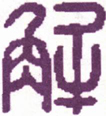

周易下经
31 泽山咸
《上经》首《乾》《坤》，以天地为万化之原也；《下经》首《咸》《恒》，以夫妇为五伦之始也。天地不分不成两仪，男女不合不成生育，故《乾》《坤》以二老对，而《咸》则以二少交。《咸》之体，亦自《乾》《坤》来，《乾》三索于《坤》得《艮》，《艮》为少男；《坤》三索于《乾》得《兑》，《兑》为少女。男女相感，自其性情，而二少相合，男下于女，尤感之正也。有心为感，无心为《咸》，《咸》皆也。卦体以“山泽通气”，六爻皆应，《咸》和通畅，物我偕臧，此卦之所以名《咸》也。
咸 ［1］ ：亨，利贞。取女吉。
▲ 甲骨文咸
《咸》，亨通也。男女相合者七卦，《恒》是男女皆长，《既济》、《未济》中男中女，《渐》、《归妹》以少遇长，《损》虽男女皆少，而女下于男，皆未若《咸》之亨而正也。“娶女吉”者，婚礼自纳采以至亲迎，皆男下于女，六礼不备，贞女不行。《关雎》一篇所云，“窈窕淑女，君子好逑”，娶女之吉，于此可见。《诗·注》谓淑女有幽闲贞静之德，是即“利贞”之旨也。《咸》以《兑》泽《艮》山二气相感，感而遂通，然少男少女，情好易通，得正则吉，失正则凶，故曰“利贞”。娶女之吉，惟其贞也。
《彖传》曰：咸，感也。柔上而刚下，二气感应以相与。止而说，男下女，是以亨，利贞，取女吉也。天地感而万物化生，圣人感人心，而天下和平，观其所感，而天地万物之情可见矣。
▲ 金文咸
此卦以《艮》之少男，下《兑》之少女，取象于夫妇之始，婚姻之道也。“柔上而刚下”者，柔者妇道，刚者夫道，谓刚柔二气，上下相感。“止而悦”，谓闺房之事，悦而不止，则悦未免流于淫，止而不悦，则止或至失其欢。《艮》以止之，复《兑》以悦之，斯感得其正，则倡随有辨，节宣有时，而有感遂通，故能亨。盖卦体以感为义，卦象以亨为善，卦位则以“男下女”为吉。夫“取”即娶也。《礼》云：“男子亲迎，男先于女，刚柔之义也。”知所谓“男下女”者，降男子之尊，以重亲迎之礼，固非钻隙逾墙者所可比也，故曰“利贞”。女下于男，夫妇之常道也，故卦取诸《恒》；男下于女，迎娶之始礼也，故卦取诸《咸》。咸者，感也，刚柔之用，以气相感，婚姻之道，以情相感，而少男少女，尤情之易感者也。以其情之易感也，而见其相悦，亦以其情之易悦也，而贵乎能止，盖即《艮》山之静，以制其《兑》泽之动也。《咸》利其贞，贞斯亨，亨斯吉矣。由是推之，闺房启王化之原，修齐括治平之要。天地以其《咸》感万物，而万物生焉，圣人以其《咸》感人心，而人心平焉，化生之功由此成，和平之福由此普。《艮》之止无形，《兑》之悦无言，无形无言，而感化神焉。君子观于此，而天地人物感应之妙，皆可识矣。
以此卦拟人事，卦体为《艮》男《兑》女，《彖》辞曰“娶女吉”，是人伦之始事也。《序卦传》曰，“有男女，然后有夫妇，有夫妇，然后有父子，有父子，然后有君臣，有君臣，然后有上下”，其道实自《乾》《坤》定位而来。《乾》老阳，《坤》老阴，《乾》变《艮》则为少阳，《坤》变《兑》则为少阴，阴阳之体一也，阴阳即男女。《艮》一阳二阴，《兑》二阳一阴，合其体而为一，象男女之交也。《艮》为求，有“好逑”之义，《兑》为妹，有《归妹》之象，是谓婚姻之始。《兑》为悦，《艮》为止，乐而不淫，妇道之所以重利贞也。六爻之辞，多取于人身，“拇”、“腓”、“股”皆属下体，“心”、“脢”、“辅”皆属上体，一俯一仰，一动一静，阴阳相济，刚柔相交，《咸》之卦德备矣。夫夫妇一小天地也，万物各有阴阳，即各有夫妇，万物之化生，人心之和平，胥是道也。此圣人所以为人伦之至，《咸》卦所以冠《下经》之首，观其象而可知矣。
以此卦拟国家，上卦为政府，有《兑》泽遍敷之象；下卦为人民，守《艮》止各安之义。九五阳刚之君，与上六相比，与六二相应，诸爻亦俱与九五相感应。故《咸》一卦，皆取象于“拇”、“腓”、“股”、“心”、“脢”、“辅”，譬如人之一身，四肢九窍，有痛痒相关，一气联络之义也。《象》曰“君子以虚受人”，此君子即指九五而言。虚者无我，无我则天下一家，万民一体，以一念感通夫万类，以一心包育夫群生，上下相通，君民合志，谓之“天地感而万物化生，圣人感人心，而天下和平，观其所感，而天地万物之情可见矣”。此即圣天子恭己南面，无为而治之体也。
通观全卦，有心为感，无心为《咸》。《咸》，皆也，为卦六爻皆应，咸和通达，物我皆臧，自然而然，元气浑合，此《兑》悦《艮》止卦之所以名《咸》也。《咸》主乎感，感则必动，而六爻则以静为吉，以动为凶。初爻居卦之下，曰“咸其拇”，拇者，拇足大指也，其感尚浅，其动亦微，故不系吉凶也。二曰“咸其腓”，腓为足肚，则进于拇矣。腓本不动，足动而腓随之，是动虽凶，而腓尚居于吉也。三曰“咸其股”，股处下体之上，三之象也，较拇与腓而尤进矣，志在随人”，所执亦贱，故曰“往吝”。四居三阳之中，为心之位也。凡有感触，皆从心发，得贞则吉，否则凶也。五为卦主，居《兑》之中，脢在心上，为背脊肉，是不动之处，感而不感，动而无动，故曰“无悔”。上六处全卦之上，“辅颊舌”在一身之上，其象取此，有感于心，发而为言，是口说也；然不能至诚相格，而徒以美言取悦，《咸》道薄矣。是以六爻之中，所感各有浅深，而悔吝吉凶，亦各随其象而著。惟君子能“以虚受人”，虚则心公，公则入而无拒，感而即通，其所翕受者宏矣。翕受之道，取诸《兑》，专直之义，取诸《艮》。健而能止，顺而能悦，悦以感阴，止以应阳，天地无心而成化，圣人无为而成功，如斯而已矣。
《大象》曰：山上有泽，咸，君子以虚受人。
卦象为“山上有泽”，是山气下交，泽气上交，得以上下相成也。天下至静而虚者莫如山，惟山以虚，翕受泽气。君子体此象以容人之善，故能湛其心于寂然不动之时，定其性于廓然大公之地。古来如舜之取人为善，禹之拜昌言，周公之吐哺握发，一皆虚己而受人者也。
【占】 问战征：军队前进，防有坑陷，山谷间防有埋伏，固守城池，防敌兵潜通地道，皆当谨慎。
○ 问营商：山泽为生财之地，即财源也。“以虚受人”，是以购入物产，贩运转售，必大获利。
○ 问功名：“山上”者高附之象，“山上有泽”，泽者，积水低洼之处。有居高思危之意，惟宜虚己待人，功名可长保也。
○ 问家宅：是宅必傍山临水，知其所止，吉。
○ 问疾病：是虚弱之症，宜服滋补之剂。
○ 问婚姻：卦为山泽通气，主两姓和好，大吉。
○ 问讼事：两造必是少年意气相争，讼宜和解而止为善。
○ 问六甲：生男。
○ 问失物：必坠入空洞有水之处，不能复得。
初六：咸其拇。
《象传》曰：咸其拇，志在外也。
“拇”者足之大指，初居爻首，为感之始，其感尚微，譬如足之有指，指即小动，未常移步，以喻人心初感而未动，始有其志而已。《象》曰“志在外也”，外谓九四，以初与四相应，故曰“在外”。志者心之所之也，谓第有其志，未尝躁动，是以不言吉凶。
【占】 问战征：是兵刃初交之会，应在第四日，可以得胜。
○ 问营商：必是初次贸易，货物已办，尚未发行也。
○ 问功名：必能一举成名，有捷足先登之兆。
○ 问家宅：有迁居外地之意。
○ 问疾病：是足指初起一毒，宜外用敷药调治。
○ 问婚姻：初六应在九四，以《艮》男求婚于《兑》女也，为结缡之吉。
○ 问六甲：生男，是初胎也。
【例】 明治二十三年，占某贵显运气，筮得《咸》之《革》。
断曰：此为《咸》卦初爻，拇为足指，是人身最小之体，其动与不动，本不足关轻重也。初爻应在九四，四比近尊位，此占当以应爻属贵显，初爻则为来占之人也。今初爻《咸》之初，某贵显自幕府至今，备尝困苦，今虽年老而志愿犹奢，凡有指划，《咸》皆悦从。《象》曰：“志在外也”，盖在贵显之志，谓方今国家要务，专以外交为重也。知贵显老运未艾。
六二：咸其腓，凶，居吉。
《象传》曰：虽凶居吉，顺不害也。
“腓”为胫，或曰足肚，是无骨之处，盖在拇之上股之下也。腓不能自动，随足而动，足动而凶，则腓亦失其吉矣。然动则为凶，而静居则吉，故《象传》曰；“虽凶居吉，顺不害也。”六二以阴居阴，其性本静，能顺其性而不动，自可免害而获吉也。
【占】 问战征：宜固守不动，斯可免害。
○ 问营商：不利行商，利坐贾。
○ 问功名：只可依人成事，未能远到。
○ 问疾病：按腓病也，必是四肢痿痹之症，只可坐卧，不能步行也。
○ 问婚姻：婚事既成，恐有变动，能以顺自守，虽凶终吉。
○ 问六甲：生男。
【例】 华族某君来谓余曰：顷者知己某，以数年刻苦，新创一技，特许专卖，余因贷之以资金，但不知新创之技，果得广行否？亦不知贷与之资金损益如何？请筮之。筮得《咸》之《大过》。
断曰：《咸》者为山泽通气之卦，是二物相依，相互为用也。某友发明一物，藉君之资金，得以成业，是某友与君实相依为用，其事业之广行也可必矣。腓者足肚也，腓不自动，随足之动而动，以喻资金之通用，全藉货物之贩运，而资金亦随之而运动也。在此业新出，未免一时贩售有碍，当居积以待，自能获利，始虽凶而终吉也。
九三：咸其股，执其随，往吝。
《象传》曰：咸其股，亦不处也。志在随人，所执下也。
此爻居下体之上，上体之下，为股之象，股者随上下而动，不能自主者也。九三以阳居阳，与上六之阴相应，舍上六而比初二，以为动止，率此以往，其吝可知。三为《艮》卦之主，《艮》为股，故曰“股”，《艮》又为执，故曰“执”。《艮》本止也，三以感而思动，又牵率初二，使之皆动，故曰“执其随”。《象传》曰“亦不处也”，“亦”者，谓率拇腓而俱动也。“志在随人，所执下也”，“随人”者，谓随上也；“执下”者，谓执初与二也。
【占】 问战征：宜退守，不宜往攻。
○ 问营商：凡商业合出资本，谓之股分，必举一人以主其业，乃主业者，不能自主，而徒随人以为上下，其业必难获利。
○ 问功名：随声附名，其品下矣，必难制胜。
○ 问家宅：宅近《艮》山，本可安处，占者不愿处此，殆欲随人他迁也，恐所往吝矣。
○ 问婚姻：咎在过听执柯者之言，恐所适非偶。
○ 问六甲：生男。
【例】 友人某来，请占运气，筮得《咸》之《萃》。
断曰：卦体《艮》山《兑》泽，山得泽而生润，泽得山而发源，是为山泽通气，阴阳相感，正元运旺相之象也。足下占得第三爻，三爻为内卦之主，与上六相应，九三为阳，上六为阴，感而思动，故曰“咸其股”。股属下体，亦阴象也。卦本为少男少女两相爱悦，三爻“志在随人”，牵率其下而皆往，则其溺情尤甚，吝复何辞？论现年运气，未尝不佳，乃因溺志色欲，阳被阴累，防致疾厄，宜慎宜戒！友人听之，始而如有所感，继而溺情不悟，以致终身落魄不偶。哀哉！
九四：贞吉，悔亡。憧憧往来，朋从尔思。
《象传》曰：贞吉，悔亡，未感害也。憧憧往来，未光大也。
四当三阳之中，居心之位，《咸》之主也。初之拇，二之腓，三之股，五六之脢舌辅颊，皆从心而发，故心不言感，以万感皆由心而生也。夫心之本体，本灵明不昧，寂然不动，自有所感而心动焉。动则有悔，欲其亡悔，惟贞而已；贞者正也，正则吉而悔亡。然人心不能无感，而感亦不能皆正，不正则心受其害，而悔随感生，何以得吉？“憧憧”者急遽之状，“往来”者忙促之形，“憧憧往来”，甚言纷至叠来，私意错乱，害累丛生。下之拇、腓、股，上之脢、舌、辅，亦皆纷纷而动，但见其“朋从”耳，则此心岂复有一息之泰定哉！《象传》曰“贞吉悔亡，未感害也”，谓贞则其心无私，未感之先，心本洞然，故曰“未感害也”。“憧憧往来，未光大也”，谓物感迭来，不能无思无欲，故曰“未光大也”。
【占】 问战征：军中全以主帅为心，当万军纷集，以一帅镇定之，斯令行禁止，寂然不动，否则扰乱错杂，灾害生焉。
○ 问营商：商务虽在谋利，亦以得贞为吉，若见利忘义，则群焉争夺，不夺不餍，害有不可胜言者矣。
○ 问功名：四爻以阳居阳，位近至尊，功名显达，其象贞吉，然得不以正，害即随之，最宜谨慎。
○ 问家宅：其宅必临通衢往来之地，邪正杂处，交际最宜慎择。
○ 问疾病：必是心神恍惚之症，宜静养。
○ 问婚姻：防女家闺范不谨。
○ 问六甲：生女。
【例】 明治二十二年，某缙绅来，请占某贵显气运，筮得《咸》之《蹇》。
断曰：四爻以阳处阴，为内卦之始，比近九五，是贵显之象也。为某贵显占气运，筮得四爻，四当三阳之中，中居心位，心为百体之主，心贞则百体皆贞，犹言大臣正躬率物，百僚皆从令焉，故曰“贞吉悔亡”，此固某贵显之能事也。苟心有不正，必致庶事丛脞，朋党纷起，始则害在一身，终则害延一国，皆由一心之不正，阶之厉也。在某贵显，秉心正直，国而忘家，公而忘私，能以天下为己任，古所称正一己以正天下者，某贵显有焉，庶民所仰望者，正未有艾也。
九五：咸其脢，无悔。
《象传》曰：咸其脢，志末也。
按：《注》云“，脢者心上口下”，马云“脢背也”。《博雅》“胛谓之脢”，即背脢也；心在前，背在后，是不动之处也。《艮》之象曰“艮其背”，知背为《艮》之所止；爻辞曰“咸其脢”，殆即孟子所云，“君子所性，根于心，盎于背，施于四体，四体不言而喻”者是也。五爻以阳刚中正之德，居君上之位，下应六二。六二日“咸其腓”，腓为足肚，不能自动，五曰“咸其脢”，脢为背脊，亦不能自动，故其《咸》也，若有不感而感，而其动也，亦若有不动而动。不动而动，在脢亦不自知其动也，悔何有焉？《象传》曰“志末”，谓此乃不感而感，感之至也。彼初之“志在外”，三之“志在随人”，皆有心而感者，抑末矣。一说：《象传》“志末也”者，谓尊居九五，当抚恤亿兆之心，志愿斯为大矣，若甘作自安之计，期免目前之悔，其志不亦微末乎？
【占】 问战征：宜潜袭其后以攻敌背，有胜无败。
○ 问营商：《象》曰“志末”，末微小也，知其商业不大，利亦微薄。
○ 问功名：背者，败北也，知所求未必成名。
○ 问疾病：台背，寿征也，知病即愈，无悔，且获多寿。
○ 问六甲：生女。
【例】 明治二十一年，缙绅某来，请占某贵显气运，筮得《咸》之《小过》。
断曰：凡卦例以九五为君位，然《乾》为君为父也，而臣子亦得占之，《坤》为臣为民，而君父亦得占之，《易》道不拘一例也。《咸》卦《艮》山《兑》泽，二气相感，是以“天地感而万物化生，圣人感人心，而天下和平，则知大臣当国，皆以至诚感孚夫上下者也。今占某贵显气运，得第五爻，爻辞曰“咸其脢”，脢谓背脊处，前为阳，背为阴，心背之间，阴阳相感，亦痛疼相关。某贵显念切民艰，自能恫痞在抱，不容以隔膜相视也，必无悔焉。至其后运，定臻台背之寿，其福未可限量矣。《象传》曰“志末也”，谓目下志愿犹未光大也。
上六：咸其辅颊舌。
《象传》曰：咸其辅颊舌，滕口说也。
“辅”者，颊之里，“颊”者辅之表，舌在口中，舌动则辅颊随之。此爻阴柔不中，居卦之极，比近尊位，专以谗口惑君者也。是巧佞之小人，为圣人所深恶也，故不系凶辞，而其凶自见矣。《象传》曰“腾口说也”，腾谓张口骋辞，或曰虚也，谓无诚实，徒夸虚说以诳世，《咸》道薄矣。
【占】 ：问战征：防有间谍窥探。
○ 问营商：恐有口舌之祸。
○ 问功名：可献策陈言，当得召用。
○ 问家宅：主人口不睦，口角起争。
○ 问疾病：呓语谵言，心魂不安，宜祷。
○ 问婚姻：中人之言，未可全信。
○ 问六甲：生女。
【例】 明治二十五年，岩平县众议院议员佐藤昌藏氏来曰：今回地租修正之议兴，奥羽诸县已编地租增加之部，然在我县下，地质不饶，增加地租，甚觉不当为此，请占院议结果。筮得《咸》之《遁》。
断曰：《兑》为口，辅颊舌皆所以言，此即议院之证验也。今占地租增加，而得《咸》之上六，《咸》者感也，凡有所议，必得上下直诚感通，其事可通行无阻。兹徒以空谈相竞而无实惠，其何能令民之遵从乎！后佐藤氏来谢曰：《易》断真不虚也！
32 雷风恒
《上经》首《乾》而继《坤》，《坤》即《乾》之配；《下经》首《咸》而继《恒》，《恒》即《咸》之久。《咸》为可大之业，《恒》为可久之德，可久配天，可大配地，故《乾》亦为久，《坤》亦为大。《震》男《巽》女，本从乾坤而生，雷风即乾坤之嘘气也，乾坤不变，雷风亦不变，故雷风之卦曰《恒》。
恒 ［2］ ：亨，无咎，利贞，利有攸往。
▲ 甲骨文恒
“恒”字，从心从亘，训常，《易》曰“恒，久也”，凡事暂时塞者，久则通，通则“无咎”。“贞”者，正也，《咸》为夫妇结缡之始，男下于女，故“娶女吉”；《恒》为夫妇居室之常，女下于男，故利其贞。《巽》柔而顺，顺故能贞；《震》刚而动，动故有往。“贞”者，女子之德也，“往”者，男子之事也。《正义》曰：“得其常道，何往不利？”故曰“利有攸往”也。
《彖传》曰：恒，久也。刚上而柔下，雷风相与，巽而动，刚柔皆应，恒。恒，亨，无咎，利贞，久于其道也。天地之道，恒久而不已也。利有攸往，终则有始也。日月得天而能久照，四时变化而能久成，圣人久于其道，而天下化成。观其所恒，而天地万物之情可见矣。
▲ 篆书恒
此卦上《震》下《巽》，《巽》为风，是刚上柔下也。《震》为雷，雷风相与而为《恒》。雷风者，即从山泽而生气，故卦次于《咸》。其为气也，通彻上下，运行周遍，化育万物，生生不息，而变化有常，其德亘古今而不易，是即“天地之道，恒久而不已也”，故名此卦曰《恒》。《恒》者，常也，久也，《恒》之为道，亨乃无咎，亨通无咎，乃得利贞。夫《恒》有二：有不易之《恒》，有不已之《恒》。“利贞”者，不易之《恒》，“利有攸往”者，不已之《恒》也，合而言之，常道也。“亨”者，《恒》之用也；“贞”者，《恒》之体也；“刚柔皆应”者，《恒》之成德也；“利有攸往”者，《恒》之行事也。《巽》以贞终，《震》以行始，大《震》入《巽》，故曰“终则有始”。《观》诸日月之得天久照，验诸四时之变化久成，征诸圣人之久道化成，天道圣道之历久不敝者，莫非此恒久之道也。
以此卦拟人事，《震》为长男，《巽》为长女，变《咸》之二少，为《恒》之二长，婚姻之礼，夫妇之《恒》道也。“雷风相与”者，天地之运也，“刚柔皆应”者，阴阳之机也，君子则之，以保其恒。以恒修身，而身教乃亨；以恒齐家，而家道乃亨；以恒治国，而国运亦亨，所谓无往不利者，此也。读《关睢》之诗，文王之化行于远，后妃之德修于内，其得《恒》之旨也夫！推之日月四时之久照久成，圣人之久道化成，仰观俯察，而《恒》之情可见矣。人事之通塞隆替，不外是焉。
以此卦拟国家，上卦为政府，有雷厉之性，以振兴庶政；下卦为人民，有风动之象，顺从政府之命令也。《恒》卦《震》上《巽》下，《震》为夫，《巽》为女，卦体本为夫妇。《咸》以少为情，《恒》以长为礼，《恒》即恒其所谓感也。然家修即为廷献，王化起于闺门，齐家治国，其道本一以贯，王道毕世而仁，圣功万年无敝，是即圣人之久道化成也。雷动风散，可见恩威之并施也；刚上柔下，可见宽猛之交济也。和顺取诸《巽》，振作取诸《震》，有为有守，无怠无荒，内秉洁齐之志，外协通变之宜，道以亨而无咎，化以久而弥神，终始如一，上下不疑，是久于其道也，而郅治有恒矣。日月之久照，四时之久成，胥于此可见矣。
通观全卦，《序卦传》曰：“夫妇之道不可以不久也，故受之以恒。”《咸》为夫妇之始，《恒》为夫妇之常，所谓《下经》首《咸》《恒》，以夫妇之道配《乾》《坤》也。然《恒》一卦，惟五爻言夫妇，余爻皆历言《恒》之不当，以为垂诫；且六爻无一吉辞，即《彖》辞，亦第云“无咎”。盖《恒》为天地之常道，日月久照，四时久成，不恒则变，《恒》则得其正。是以圣人曰“人而无恒，不可以作巫医”，皆反言以警之，而于《恒》未尝有赞词也。《象》曰“君子立不易方”，亦惟以不易者，守其《恒》而已。卦体六爻相应，刚柔二气，交相为用，刚有刚之道，柔有柔之道，《恒》之亨而无咎，惟久于其道也。《恒》之反卦为《咸》，故二卦爻象，皆颠倒相因。《恒》初爻之深刻，即《咸》上之巧令也；《恒》二之“悔亡”，即《咸》五之“无悔”也：《恒》三之承羞，即《咸》四之“朋从”也；《恒》四之非位，即《咸》三之“随人”也；《恒》五之妇吉夫凶，即《咸》三“凶，居吉”也；《恒》上之“大无功”，即《咸》初之“志在外”也。故二卦同体，而爻象反复。《咸》曰“圣人感人心，而天下和平”，《恒》曰“圣人久于其道，而天下化成”，天地万物之情，皆可于此见之矣。
《象》曰：雷风，恒，君子以立不易方。
《震》雷动而在上，《巽》风入而在下，雷风二物，虽至动至变而无常，而究其极，雷之发声不爽其候，风之嘘物，各应其时，振古如斯，未尝或失，故曰雷风《恒》。君子体此象以应万变，而道则不变，《恒》而已矣。“立”者确乎不拔，“方”者主一不迁，志有定向，而持守弥坚，不为富贵淫，不为贫贱移，不为威武屈，特立无惧，此君子之所以为君子者，得《恒》道也。
【占】 问战征：雷出于地，风生于谷，防有敌兵埋伏，火炮攻击之虑。宜坚守营垒，不可退，后可以转败为功。
○ 问营商：《震》属正东，《巽》属东南，曰“立不易方”，言贸易不可改易地方也。
○ 问功名：《震》《巽》皆木，木植立不易，干霄直上，自得直达之象。但宜久成，不宜躁进。
○ 问家宅：此宅坐西北，朝东南，为祖遗旧宅，是恒产，方向切不可移易。
○ 问婚姻：男家长男，女家长女，二长相配，婚姻大利，可卜百年偕老。
○ 问疾病：必是肝火上冲，痰火气喘，须服前方，不必改易。
○ 问六甲：生男，必是初胎。
初六：浚 ［3］ 恒，贞凶，无攸利。
《象传》曰：浚恒之凶，始求深也。
“浚”，深也。初爻当《恒》之始，以始求终，所当循序渐进，方能几及，所谓登高必自卑，行远必自迩，由此以往，无不利也。若乃辍等以求，如撮土而期为山，勺水而欲成海，初基乍立，后效殊奢，事虽不失其正，要必难免于凶也，故曰“浚恒，贞凶”。《象传》曰“始求深也”，“始”，指初爻也，谓其未涉其浅，而遽求其深，是欲速而不达者也，非徒无益，反见其凶，譬如用智而失之凿，求道而索之隐，皆“浚恒”者之过也。
【占】 问战征：宜步步为营，切忌孤军深入，深入必凶。
○ 问营商：宜得利即售，不可垄断居奇，以贪高价。
○ 问功名：宜安分守职，切勿梯宠希荣，徼幸图功，恐反招辱。
○ 问婚姻：婚姻之道，宜以门户相当，切勿慕富攀贵，贪结亲，反致后悔。往往有之。
○ 问家宅：宅是新建，惜乎过求华丽，致难持久。
○ 问讼事：恐一经涉讼，历久不了。
○ 问六甲：初胎，生女，惟恐难育。
【例】 明治十五年七月，朝鲜变起，花房公使以下，脱归长崎，同年八月，朝廷发陆海军，命花房公使重至朝鲜，使之问罪。余筮之，得《恒》之《大壮》。
断曰：《观》初六爻辞，知朝鲜之渐进开化也。今番朝鲜虽失礼于我，若政府乘一朝之怒，忘恒久之道，责之过深，则是爻辞所云“浚恒，贞凶，无攸利”，正当为政府虑矣。问政府今用问罪之举，不在深求，而在和解，则其事可谐，即或一时未谐，《恒》之初爻，变为《大壮》，则以《大壮》之军备，压制而已。其策则分我军为六，留其四于马关，以其二为朝鲜开化党之声援；如此而犹有不及，可使一军自元山津而冲其背，可使开化党维持朝鲜也，是天数之理也。
筮毕，呈之某贵显，贵显又使人更问曰：朝鲜之事，虽不足忧，清国之关系实大也，子幸占我国与清国关系。余复筮之，得《艮》之不变。
断曰：《艮》者两山相对之卦，两山相对，可见而不可近也，又不可相应也。于不近不应之卦，其无战争，断可知也。其后朝鲜之事，果如此占。
九二：悔亡。
《象传》曰：九二悔亡，能久中也。
二爻以阳居阴，是失位也，失位故有悔；然二处《巽》之中，为《巽》之主，二与六五阴阳相应，以刚中之德，辅柔中之君，道既得中，又能持久，故曰“悔亡”。《象传》曰“能久中也”，谓可久之道，不外乎中，能“久于其道”，必能久于其中也。二爻能之，悔自亡矣。
【占】 问战征：营位失当，恐有后悔，惟宜居中不动，持久固守，可免祸也。
○ 问营商：货物不得销路，致有耗败，宜历久待价，可得反本。
○ 问功名：失其机会，反招灾害，待时而往，虽不成名，亦无尤也。
○ 问家宅：此宅地位不当，居者不利。十年之后，宅运可转，方得无咎。
○ 问婚姻：平平。
○ 问六甲：女生。
【例】 某会社社长，来请占社运，筮得《恒》之《小过》。
断曰：此卦“雷风相与”，“刚柔皆应”，是会社之象也。卦名曰《恒》，业必以久而成也。今占得第二爻，二爻以阳居阴，未免位置不当，事有窒碍；足下躬膺社长，当以中正处之，保其恒久。守《巽》之贞，法《震》之往，历久不倦，而推行尽利，其道乃亨，何悔之有？
社长闻之曰：该社自开业以来，多不能如意，今得此占，自当恒久不已，以图远大之业。后此会社，果得盛大。
【例】 明治二十六年二月，北海道炭矿铁道会社支配人植村登三郎来曰：余从事社务有年，事务多端，深恐力弱才微，不胜其任，思欲改就官职，犹豫未决，幸请一筮。筮得《恒》之《小过》。
断曰：《巽》下《震》上，《巽》为薪，有煤炭之象，《巽》又为商，为利，有会社之象；《震》为行、为奔，有铁道之象。今占得第二爻，九二《坎》爻，辰在子，上值虚，虚为北方列宿之中，故会社在北海道。二爻以阳居阴，为失位，故有悔，然足下既从事社务，必深识其中之利益，久于其道，自然精明练达，能振兴其业也。后植村氏得此占，益加勉励，不数月，至占重任。
九三：不恒其德，或承之羞，贞吝。
《象传》曰：不恒其德，无所容也。
九三处《巽》之极，《巽》为进退，为不果，“不恒其德”之象。“羞”者，耻也，九三以阳居阳，其位虽正，因其执心不定，德性无恒，而错误随之。“或”者，将然之辞，谓虽未明见其羞，而羞或承之矣，虽贞亦吝。“吝”谓可鄙也，《象传》曰“无所容也”，大节一亏，无所逃于天地之间，盖深斥之也。
【占】 问战征：军事贵勇往果决，得以制胜，《巽》为不果，必多畏却，则进退无恒，势将辱国伤师，咎何能辞？
○ 问营商：爻辞曰“不恒其德”，是必商无恒业也，何以获利？
○ 问功名：二三其德，业必不就，名何由成？
○ 问家宅：三爻居《巽》之终，《巽》终变《震》，《震》为大途，此宅必近大道之旁，其宅不利久居。
○ 问婚姻：姻事不终，恐贻羞辱。
○ 问六甲：生女。
【例】 一日某贵显来访，谓余曰：有同僚某，因负债请余援助，长官某亦代为说合，予诺之，而后至期，彼竟无力得尝，敢请占其得失。筮得《恒》之《解》。
断曰：此卦“恒久而不已”，是其贷与，永不返还可知。其辞曰“不恒其德”，谓彼穷迫如此，势必二三其德，不能《恒》守此约信也。“或承之羞”，谓君若盛气责之，彼必出言不逊，反受羞辱也。后果如此占。
【例】 明治二十八年，占清国国运，筮得《恒》之《解》。
断曰：《恒》者，久也，溯我国与外国交际，惟清国最旧，是《恒》之象也。两国并立亚细亚，辅车相依，同文之国，尤最亲密。近年欧美各邦，文明开化，日新一日，我国有所见于此，是以取彼之长，补我之短，乃遣少年子弟留学欧西，又聘西国教师，使之教我子弟。在清国墨守旧习，自示尊大，不能达观宇内大势。朝鲜介我两国之间，我与清国商议，谋欲互为保护，清国有疑于我，终至兵阵相见。今占得三爻，爻辞曰“不恒其德，或承之羞，贞吝”，《巽》为进退，谓清国进退无恒，势必辱也。
九四：田无禽。
《象传》曰：久非其位，安得禽也。
“禽”者，鸟兽之总名，《震》为猎夫，《巽》为禽。九四处《震》之初，已出于《巽》，是《震》之猎夫前进，《巽》之禽后退，以此而田，必无获也，故曰“田无禽”，以喻失民心也。夫所贵于《恒》之道者，德称其位，才胜其任，事上而有所建明，治下而有所康济，积日累久，则其所裨益必多。九四以阳居阳，与初六相应，初六“浚恒”既“无攸利”，无利者，亦即“无禽”之谓也。《象传》曰“久非其位，安得禽也”，大凡所处非其地，所乘非其时，所为非其方，所交非其人，皆久而无功也。田之于禽，其得失最著者也，故以之为象。
【占】 问战征：立营不得其位，必致师老无功。
○ 问营商：凡货物销售，各有其地，如求木于渔，问鱼于樵，虽久于其业，必无获也。
○ 问功名：如不入场屋，而望高科，不登廊庙，而求显官，居非其位，虽久无获也。
○ 问家宅：此宅方位不利，不可久居，宜急迁移。
○ 问婚姻：两姓配偶不合。
○ 问六甲：生男，恐难养育。
【例】 明治二十三年，某缙绅来，请占某贵显气运，筮得《恒》之《升》。
断曰：就卦论卦，直言不讳，望勿见责。今君为某贵显占气运，得《恒》之四爻，四爻以阳居阴，居不当位，爻辞曰“田无禽”，犹言谋而无功也。知某贵显虽久处高位，目下时运已退，才力亦衰，凡所作为，多无成效，自宜退隐，毋贻窃位之讥也。
六五：恒其德，贞，妇人吉，夫子凶。
《象传》曰：妇人贞吉，从一而终也。夫子制义，从妇凶也。
六五居得尊位，为《恒》之主，下与九二相应。九二居《巽》，《巽》为妇，六五居《震》，《震》为夫。六五专守九二之应，贞一其德，贞则贞矣，为妇则吉，为夫凶也。不知五为《震》主，《震》为行，丈夫之志，当以义制事，推行尽利，以垂久之业，若第以从一为正，是妾妇之道也，孟子所谓“贱丈夫”者是也。《象传》曰“从一而终”，谓妇人之德，惟宜从一，故曰“贞吉”；夫“夫子制义”，谓丈夫之行，惟宜审义。义则不害于贞，贞则或伤其义，故曰“从妇凶也”。《象传》所云“贞吉”者，指妇人也；“利有攸往”者，指丈夫也。知夫此，而《恒》之道得矣。
【占】 问战征：古称军中有妇女，士气不扬，项羽之败，未始非虞姬累之也。行军宜凛之。
○ 问营商：商业宜随时变通，若拘泥执一，妇孺贪小之见，必无大利也。
○ 问功名：丈夫志在四方，前程远大，若徒贪恋闺房，伤身败名，凶莫大焉。
○ 问家宅：古云“牝鸡司晨，惟家之索”，是当深戒。
○ 问婚姻：女家占此则吉，男家占此则凶。
○ 问六甲：生男。
【例】 豪商某来，请占气运，筮得《恒》之《大过》。
断曰：足下久营商业，精明强干，余所素知。今占气运，得《恒》之五爻，五为《震》之主爻，《震》为从，故《象》曰“从妇凶”。夫女子小人，皆属阴象，商业之推行，权宜自主，不可听从人言，治家之道，亦不可偏听妇言。爻象之辞，垂诫深矣，足下宜凛之！
上六：振恒，凶。
《象传》曰：振恒在上，大无功也。
《震》动也，故《恒》至于上，有振动之象焉。上六处《震》之终，为动之极。动者宜守之以静，终者宜返之以始，斯德可全于末路，业不败于垂成，恒道成矣。今上六处《恒》之极，而振动不已，以振为恒，恒有尽而振无尽，是以凶也。《震》为决躁，《巽》亦为躁卦，躁动无时，犹是雷发而不收，风行而不止，其何能有功哉！故《象传》曰“大无功也”。
【占】 问战征：上为主帅，行军之道，全在镇定，若妄动喜功，必无成也。
○ 问营商：上为一卦之归宿，是商业归结之时也，当归结而不归，收发无时：终无结局也。
○ 问功名：上处卦之终，功名已尽，若复痴心妄求，不特无成，恐反致祸。
○ 问家宅：此宅已旧，不必改作，改作必凶。
○ 问婚姻：必是晚年续娶也。无须再娶，娶则必凶。
○ 问讼事：急宜罢讼。
○ 问失物：不得。
【例】 某商人来，请占气运，筮得《恒》之《鼎》。
断曰：凡占卦遇上爻，上为卦之终局，必其人好运已终，只宜静守而已。今《恒》之上六，曰“振恒”，以振为恒，是卦已终，而动未终，故曰凶也。足下占得此爻，当守静以制动，斯可无咎。
33 天山遁
《序卦传》曰：“恒者，久也。物不可以久居其所，故受之以遁。遁者，退也。”卦体上《乾》下《艮》，四阳在上，二阴渐进。自《姤》一阴，至二而长，阴长阳退，卦以《遁》名，谓阳避阴而《遁》也。遁字从豚，从走，豚见人而逸，故《遁》取豚以象逸。乾为天，亦为远，有远遁之义也；《艮》为山，亦为居，有《遁》居之象也，故曰《天山遁》。
遁：亨，小利贞。
《遁》，阴长之卦，小人方进，君子道消。邪正不同居，阴阳不两立，君子当此，若不隐遁，必受其害。当《遁》而遁，遁而后通，故曰“遁亨”。“小利贞”者，小指二阴而言也，谓阴道始长，阳道犹未全消，故曰“小利贞”。
《彖传》曰：遁，亨，遁而亨也。刚当位而应，与时行也。小利贞，浸而长也。遁之时义大矣哉！
按：《书·微子》“我不顾行遁”，遁，隐也；《后汉书·郅恽传》，“南遁苍梧”，遁，逃也；贾谊《过秦论》“遁巡不敢进”，遁又与逡同，要皆不外退避之义也。“遁而亨”者，亨，通也，君子不敢与时违，时当其遁，不遁不通，《遁》乃亨也。“刚当位”者，指九五也，五与二为正应。凡二五皆相与之有成，惟《遁》二五相应，而实相迫。二居内卦，阴势渐长，五居外卦，阳势《渐》消，此长彼消，迫之使退。二阴之长，亦非二阴为之，时为之也。君子审其时之当然，而与时偕行，《遁》而去之，身遁而道亨也。“贞”，正也，“利贞”，利于正也。二阴尚小，未至横行，犹利于正，故曰“小利贞”。遁通临，《临》二阳四阴，曰“刚浸而长”，《遁》曰“浸而长”，易道扶阳抑阴，阴恶其长，故不曰柔。盖“浸而长”者二也，“《遁》而亨”者五也。当二方长，五即思《遁》，识时审几，《遁》得其道，所谓“君子远小人，不恶而严”。《遁》应夫时，亦《遁》合夫义，故曰“遁之时义大矣哉”。
以此卦拟人事，《遁》二阴生于《乾》下。阴息之卦，《否》为极，《观》、《剥》过中，《遁》“浸而长”。以人事言，《姤》以一阴称“壮”，《遁》二阴得《坤》之半，将进壮而为老矣。譬如物候，虽未大寒，当退而授衣；譬如年谷，虽未大荒，当退而谋食；譬如疾病，虽未大剧，当退而求艾。以浸长而预退，退乃能通，及其既盛，退已晚也。盖退者五，而所以逼之使退者二，二虽应五，而实消五。二息五消，五当时运之衰，即为人事之穷，人事当此，惟有顺时而行，退而避二，斯五不至终穷，以期后日之补救，而待阳之来复。反《剥》为《复》，反《观》为《大壮》，反《否》为《泰》，未始非人事之调护，得以转环之也，是处《遁》之得其道也。《遁》之一卦，盖有先见之几焉。
以此卦拟国家，谓当国运渐否，如太王之避狄迁岐，勾践之屈身事吴是也。太王居岐，后至兴周，勾践事吴，后得兴越，即“遁而亨”之义也。《遁》之卦二阴居内，四阳居外，二为内卦之主，五为外卦之主，阴内阳外，是“内小人而外君子”也。阴阳之消长，国运之盛衰系焉，时当阴长，小人渐得其势，君子渐失其位，君子处此，当见几而作，引身远退，明哲保身，胥是道也。若恋恋不退，极之小人权势日盛，朋党既成，轻则贬谪，重则诛戮，于此而欲谋《遁》，已不及矣。孔子之可以止则止，可以去则去，此圣之所以为时也。与时偕行，为国家留有用之身，即为国家谋重兴之会。遁而后亨，其身遁，其道亨也，固非孤高忘世者，所可同日语哉。
通观此卦，以阴阳不能偏无，所恶于阴者，为其浸长而消阳耳。人或视阴为柔弱易制，不知纯《乾》之阳，二阴渐积，可以消之使尽。所当于阴之始长，而遁而远之，使不授阴以可消之权，而阳乃得以复亨，故曰“遁亨，遁而亨也”。《象》曰，“君子以远小人，不恶而严”，盖不与之比，亦不与之争，决然远遁，《遁》之得其正焉矣。合上下二卦观之，上卦《乾》健，有断然舍去之象，下卦《艮》止，有依恋执留之意，故下卦不如上卦之吉。《遁》不嫌远，愈上愈吉。就六爻分《观》之，初爻《遁》而露其尾，非真《遁》者也。二爻言“执”不言《遁》，不欲《遁》者也。三爻《遁》而有所“系”，将《遁》而未决者也。四爻曰“好遁”，是能不阿所好，超然远《遁》者也。五曰“嘉遁”，是能以贞自守，《遁》得其吉者也。上曰“肥遁”，是能明以审几，飞《遁》离俗者也。然《易》不可执一论，用之则行，舍之则藏，惟识其时而已。故《遁》者，君子见几之智也。曰“君子”，曰“小人”，示其大体而已。
《大象》曰：天下有山，遁，君子以远小人，不恶而严。
“天下有山，遁”，天之与山，相去辽远，不可几及，是天远山，非山远天，在山亦不能怨天之远也。君子则之，以远小人，不必显出恶言，亦未尝始示和气，但望之而自觉可畏，即之俨然难犯，使小人不远而自远也。“不恶而严”，斯为待小人之善法也。
【占】 问战征：防前进有山，山间有敌兵埋伏，致遭败北。
○ 问营商：恐一时物价涨落不同，相去甚远。
○ 问功名：宜退隐，不宜进见。君子吉，小人否。
○ 问家宅：此宅近山，前面空阔辽远，防有阴崇。
○ 问疾病：病有鬼祟，宜敬而远之，以避居为吉。
○ 问婚姻：二五阴阳，本属相应，但邪正不同，以谢绝之为吉。
○ 问六甲：生女。
初六：遁尾，厉。勿用有攸往。
《象传》曰：遁尾之厉，不往何灾也。
初爻居《艮》之始，《艮》为穴居，又为尾，故曰“遁尾”。贤者避地，入山惟恐不深，入林惟恐不密，不欲使人尾其后也。若乃《遁》而不藏其尾，非真《遁》也，是殆借名山为捷径，欲藉《遁》以为攸往计耳。古今来高隐不终，不特为猿鹤贻笑，而功犹未成，失即随之，其危厉，皆自取之耳。故戒之曰“勿用有攸往”，谓其宜遁而不宜往也。《象传》曰：“不往何灾”，盖往则灾来，不往则无灾，反言之以阻其往也。
【占】 问战征：为伏兵言也。埋伏宜深藏不露，使敌不得窥其遗迹，若藏头露尾，必致危厉，不如不往也。
○ 问营商：销卖货物，宜赶快，不宜落后，并宜首尾一并卖讫，斯可免灾。
○ 问功名：龙门烧尾，吉。
○ 问家宅：宜速迁移，落后有灾。
○ 问婚姻：《遁》者，避而远之之谓，婚姻不合。
○ 问六甲：生女。
【例】 友人某来，请占气运，筮得《遁》之《同人》。
断曰：《遁》卦四阳在外，二阴在内，在外者阳浸而消，在内者阴浸而长。运以得阳为佳，阳消阴长，是好运已退也。今占得《遁》初爻，初爻以阳居阴，爻辞曰“遁尾，厉，勿用有攸往”，谓好运既退，第留此尾末而已，故“厉”。戒曰“勿用”，是宜退守，毋前往也。运以五年为一度，至上六，则“无不利”矣。
六二：执之用黄牛之革，莫之胜说。
《象传》曰：执用黄牛，固志也。
“执之”，“莫之”，两“之”字，皆指《遁》者言。黄，中央之正色，牛性柔顺，革性坚韧。《艮》为皮，故曰“革”；《艮》为手，故曰“执”；二得《坤》气，《坤》为黄牛，故曰“黄牛”。二居内爻，为成卦之主，上应九五，阴长阳消，应五而实消五，五即因之而《遁》，诸爻亦相随遁去。二爻欲执而留之，如白驹之诗，所咏“执之维之”者是也。“执之用黄牛之革”，以拟其执留之坚，而莫之遁焉。“胜”者，堪也，“说”者，解脱也，“莫之胜脱”，使之不可逃脱也。诸爻皆言《遁》，二爻独不言《遁》，《遁》者诸爻，而驱之使《遁》者，二爻也；二既驱之使《遁》，而复欲假意以执之，不令其遁，是小人牢笼之计也。《象传》曰“固志”，五之《象》曰“正志”，二五之志本不同。二欲藉嘉会之礼，以笼络五之志，使之不遁，“固志”者，固五之志也。
【占】 问战征：当诸军逃散之际，独能坚执固守，为可嘉也。
○ 问营商：固一时货价逐涨，执守来本，莫能脱售。
○ 问功名：席珍待聘，美玉待沽，功名之兆也。“莫之胜脱”，功名难望矣。
○ 问家宅：此宅阴气渐盛，居者不利，群思迁移，即欲脱售，一时亦难。
○ 问婚姻：此婚已成，后欲退悔，执柯者甚属为难。
○ 问六甲：生女。
【例】 友人某，来请占气运，筮得《遁》之《姤》。
断曰：此卦二阴浸长，四阳浸衰，阴者小人，阳者君子，小人日进，君子日退，故谓之《遁》。以气运言之，正是运退之时也。“黄牛之革”，物之又软又韧者，以此系物，物莫能脱，譬言人生为运所缚，虽有志愿，终生捆缚，不克施展。今占二爻，其象如此，运可知矣。
【例】 明治二十九年，占皇国气运，筮得《遁》之《姤》。
断曰：此卦四阳为二阴所侵，论人事则我为彼所侵，于国亦然。自我国胜清之后，俄、德、法三国，以亚细亚之乎和为口实，使我还付辽东，加之俄法为清国偿金斡旋，俄清之交一变，将有事于东洋。方今欧洲诸强国，皆惟竞利自图，约束清国，譬如用“黄牛之革”，絷缚其手足，使之莫能解脱，几欲瓜分之以为快。而于我国，亦未尝不欲以此相缚，我惟固守其志，内修军备，外善辞令，以敦邦交，而不受此笼络也。此为得计耳。
九三：系遁，有疾，厉。畜臣妾，吉。
《象传》曰：系遁之厉，有疾惫也。畜臣妄，吉，不可大事也。
“系”者，羁绊之义。三以阳刚，居内卦之上，与二阴阳相亲比，为二所羁縻，不忍超然远引，欲《遁》而志不决，故曰“系遁”。凡当《遁》则《遁》，贵速而远，一有所系，则忧愁莫定，宛如疾痛之在身，危厉之道也，故曰“有疾厉”。盖“系”者，三系于二，阴为之主；“畜”者，二畜于三，阳为之主。以阴系阳则厉，以阳畜阴则吉。“臣妾”者阴象，三阳在二阴之上，故能畜。君子之于臣妾，畜之以供使令，进退无足关重轻也，是以“系遁”不失为吉，至若当大事，必致因循而坐误也。《象传》曰：“有疾，惫也”，惫谓力竭而敝惫也。“不可大事也”，大事者，指三一生大节而言，不可或忽也。
【占】 问战征：军阵进退，皆有纪律，鼓进金退，最要便捷，一有迟误，必致大败也，宜慎。
○ 问营商：货物当脱售之时，不宜踌躇不决，或系恋私情，防误大事。
○ 问功名：时当奸人秉政，宜急流勇退，斯无疾害。
○ 问家宅：此宅不利，主多病厄，宜速迁移，若迟延不去，恐有大祸。
○ 问婚姻：娶嫡不利，娶妾则吉。
○ 问六甲：生女。
【例】 友人某来，请占商业之盛衰，筮得《遁》之《否》。
断曰：三爻以阳居阳，留恋二阴，欲遁不决，致“有疾，厉”。今足下占问商业，得此三爻，知为商业失败之象，宜速脱货，则损失犹微；若惜金而踌躇，则品物之价，日益低落，其所损更大也，谓之“系遁，有疾，厉”。“畜臣妾，吉”者，谓葆此余资，以畜养家人可也，若欲重兴商业，则不可也。
九四，好遁，君子吉，小人否。
《象传》曰：君子好遁，小人否也。
四与初相应，相应必相好，乃初与四好，而四不好初；且四因初之好，而决意远遁，故曰“好遁”。然在初之好四，亦非真好，不过欲借四以为重，是引用君子之意，若新莽之礼贤下士是也。四则有见于此，不为初所笼络，而超然远引，谓尔虽好我，我不好尔，尔不我遁，我则自遁，我行我志而已。四入《乾》，《乾》为君子，故曰“君子吉”。在初之厚貌深情，以为四必感恋情好，不意室迩人远，一去千里，竟有不可执维者。初处《艮》，《艮》为小子，故曰“小人否”。一说“好遁”者，谓有所好而遁也，犹《论语》“从吾所好”之好。世人所好，在富贵功名，君子所好，在乐天知命，此谓好遁。亦通。
【占】 问战征：四处《乾》之始，《乾》为健，知进不知退。或军中有一人谋陷，故作退计以避之。退亦吉也。
○ 问营商：商家以买入为进，卖出为退，四曰“好遁”，知以出货为得利也。
○ 问功名：爻辞“好遁”，是其人必无意于功名也。然名亦不同，或盗虚名于一时，或垂大业于千秋，君子小人，所由分也。占者宜自审焉。
○ 问疾病：四《乾》体，爻曰“好遁”，阳《遁》而入阴，其病危矣。然转危为安，亦《遁》之象，想大人可治，小人难也。
○ 问婚姻：防后有离婚之忧。
○ 问讼事：俗云“三十六着，走为上着”，“好遁”之谓也。
○ 问六甲：生男。
【例】 亲友某来，请占气运，筮得《遁》之《渐》。
断曰：四居《乾》阳之首，《乾》曰见，不曰隐，乃四为二阴所逼，超然远遁，是遁而避害也。今足下占得第四爻，足下躬膺职位，亦知僚属中，邪正不一，或外面情好敦笃，其中奸计百出，不可不防。足下知其然，不露声色，决意引退，是明哲保身之要道也。爻辞曰，“九四：好遁，君子吉，小人否”，谓君子飞遁离俗则吉，小人溺情爵禄则否矣。爻象如是，足下其审之。
后某果因官制改革，有非职之命。
【例】 一日杉浦重刚氏来曰：方今为千岛舰事，以上海英国上等裁判所判决为不当，将再向英国理论，其结局果否？如何？请筮之。筮得《遁》之《渐》。
断曰：此卦阴长阳消，为邪强正弱之象。正者必反而受屈，卦象如是。今占千岛舰判审事，得《遁》四爻，《遁》卦二阴在内，长而逼上，至四爻则阴势已盛，阳气殆尽，在下面虽假作情好，而内心实阴险莫测。核之千岛舰之事，情形符合。我国因千岛舰失事，据万国公法向彼理论，迭经审问，终不得直。盖现今天下大势凭强弱，不凭曲直，亦事之无可如何者矣。爻辞曰“好遁”，是教我以退避也，即得退遁，了事而已。
九五：嘉遁，贞吉。
《象传》曰：嘉遁贞吉，以正志也。
五以阳居阳，刚健中正，虽与六二相应，能知时审势，应变识几，超然远遁。其遁也，不为情移，不为势屈，意决而志正，洵可嘉美矣，故曰“嘉遁，贞吉”。《象传》曰“以正志也”，谓九五《遁》得其正，即可以正二之志，是“不恶而严”也。
【占】 问战征：正当敌势强盛，能以潜遁而返，得保全师，亦可嘉也。
○ 问营商：货到该处，时价不合，而转别地，得以获利，可谓应变而不失其正也，故吉。
○ 问功名：爻以九五为尊，占得九五，是必功名显达，位近台辅。伊尹曰，“臣罔以宠利居成功”，谓能以功成身退者也，故吉。
○ 问家宅：此宅必是南阳诸葛之庐，栗里陶令之宅也，高风可尚。
○ 问婚姻：二五本阴阳相应，有意议婚，五以其志不同，不允。另就他聘，吉。
○ 问疾病：是阴邪纠缠之症，潜而遁避，可获吉。
○ 问六甲：生男。
【例】 予亲友永井泰次郎，其妻有娠，张筵招予，请卜男女，筮得《遁》之《旅》。
断曰：九五《乾》卦，以阳居阳，生男之兆也。《乾》为父，《艮》为少男，他年少男嗣父而续家，老父让产而隐居，故名此卦曰《遁》。且其辞曰“嘉遁，贞吉”，是有子克家之象。其后果生男子。
上九：肥遁，无不利。
《象传》曰：肥遁无不利，无所疑也。
“肥”者饶裕也。卦中诸爻，欲遁而多所系累，此爻独无应无比，故无系累，不复劳顾忌，飘然远弓，所谓进退绰有余裕者也，故曰“肥遁，无不利”。《象传》曰：“无所疑也”，谓上爻居《乾》阳之首，其察势也明，其见几也决，首先高遁》，绝无一毫之疑碍也。或谓“嘉遁”如殷微子，如汉张良，“肥遁”如泰伯、伯夷，或又如汉之商山四皓也。
【占】 问战征：战事宜进不宜遁，遁必不利；爻曰“肥遁，无不利”，其惟太王避狄迁岐乎？
○ 问营商：商人谋利，往往群焉竞逐，今独能人取我弃，以退为进，则其退反得厚利，故爻曰“肥遁”。
○ 问功名：其人必不以膏梁肥口，能以道义肥躬，故曰“肥遁，无不利”。
○ 问家宅：此宅地位甚高，家道亦富，但利于求财，不利于求名。
○ 问疾病：肥人气虚，《遁》者，脱也，恐致虚脱。
○ 问婚姻：恐女子贪恋富室子弟，因而私奔。
○ 问六甲：生男。
【例】 明治十八年三月，以中央亚细亚阿富汗境界事，生英狮俄鹫之葛藤，凡新闻电信所报，论和论战，主俄主英，诸说纷纷，各国皆有戒意。即如我国，利害所关，亦非浅鲜。因占其和战如何，筮得《遁》之《咸》（明治十八年五月八日）。
断曰：内卦为山，属英，外卦为天，属俄。山《艮》而止，今观英国所为，虽频修战备，不过虚张声势，其实无意于战也。何者？英之海军虽强，至如阿富汗中央亚细亚地方，不能专用海军，若陆军，在英兵数不多，仅足护国而已。且苏丹之役，已分遣陆兵不少，他如印度兵，虽派遣于阿富汗高寒之地，不能尽得其力；加之印度各分宗教，兵士各守其宗规，粗食亦不足，即驱而用之，岂能当强俄乎？故欲战不得不用海军，用海军之处，有关通商航海之障碍，可以牵动各国。即可以压制俄国，在英国无心开战，可于《艮》止而得其象也。天《乾》而健，今观俄国所为，俄国遵奉彼得帝遗训，知进而不知退，意在鲸吞各国以为快，可见俄国有意开战。合内外卦则为《遁》，是《遁》为英国之气运，《遁》反卦为《大壮》，是为俄国之气运。在英之对俄，惟有严其守备，使俄无隙可乘，即可断英俄交涉之结果也。
34 雷天大壮
《序卦传》曰：“物不可以终通，故受之以大壮。”《遁》者，阳之退，《大壮》者，阳之进，无往不复，《大壮》所以继《遁》也。卦体《乾》下《震》上，《乾》刚在下，加以《震》阳在上，乘健而动，动而愈刚，壮往之势，进而不止，既壮又大，是四阳之过也，故卦曰《大壮》。
大壮：利贞。
阳为大，阳长至四，坚实而壮，故曰《大壮》。三阳为《泰》，至四而称壮，壮而曰大，壮之过也。《乾》曰“元亨利贞”，《震》曰“亨”，《大壮》不曰元亨，独曰“利贞”，而六爻又多戒辞，恐其失正而动，动必得咎，是知《大壮》非《易》之所贵也。
《彖传》曰：大壮，大者壮也。刚以动，故壮。大壮利贞，大者正也。正大而天地之情可见矣。
此卦下《乾》上《震》，《震》者雷也，《乾》者天也。《乾》在下为刚，《震》在上为动，刚而动，动得其刚，则刚而愈动，壮盛之势，莫之能遏，此壮之所以曰大也。夫大莫大于天地，天地之动得其正，则四时行焉，百物生焉，其大也，即其正也，故《大壮》必曰“利贞”。贞者，正也，“大壮利贞，大者正也”，大而正，则其壮也配义与道，可充塞于天地之间，而天地之情，即于此可见矣。
以此卦拟人事，为其人生性本刚，而复逞其发动之气，乘刚而动，勇往直前，非不足以有为也，然过刚则折，过勇则蹶，败事之咎，即在此《大壮》中也。《杂卦传》曰“大壮则止”，其以此也。《大壮》首曰“利贞”，利贞者，利于贞，贞即谓正，所谓“大者正也”。卦体《震》上《乾》下，《乾》本健行，至上九阳极则亢，是以有悔。《震》主《震》动，而爻象皆言恐惧，可知《易》道恶其过刚。越礼违谦，往必不利，故君子戒之以“弗履”，惕之曰“用罔”。故以柔济刚，以静定动，则动如无动，而刚若不刚，则见壮即见正也。孟子所谓至大至刚之气，其在斯乎？
以此卦拟国家，为国运壮盛之时也。上卦曰《遁》，四阳在上，二阴浸长，此卦反之，四阳在下，二阴浸消。阳长阴消，乘刚而动，故曰“大壮，大者壮也”。是君子日进，小人日退，国运全盛，正在此时。然国运过盛则侈，卦象过壮则暴，侈与暴，皆失其正，故《大壮》必曰“利贞”。贞之为言正也，非正无以成其大也。大而正，斯刚不过刚，动无过动，是以正而用壮，“大者壮”，即“大者正”也。《象》所云“君子非礼弗履”，礼即正，非礼即非正，君子亦用其正而已。夫子所谓“政者正也，正则行，不正则不从”，垂诫深矣。故六爻多戒“用壮”：初惩以“凶”，三戒以“厉”，五教以“易”，上惕以“艰”，惟二四两爻，得其“贞吉”。盖易道恶其太过，以得中为吉，治道亦然，此王者所以贵持盈而保泰也。
通观此卦，卦体《乾》下《震》上，卦象内刚外动，乘此阳之正壮，以逼阴之将消。疑若易易，然阴方得位，未可遽逼，刚不可恃，进不可躁，故君子必以礼为履也。《大壮》反卦为《遁》，《遁》，退也，二阴方进，其退不可不决；《大壮》，进也，：二阴未退，其进不可太猛。《杂卦传》曰，“大壮则止，遁则退也”，其卦义相反如此，而爻象亦皆先后互反。阴进则阳退，阴退则阳进，此《大壮》所以继《遁》也。六爻分属二卦，内三《乾》体，外三《震》体，以二五为得中。初爻为《乾》之始，一往直前，知进而不知退，故“凶”。二爻为《乾》之主，喜得其中，而犹不失其正，故“吉”。三爻居《乾》之终，“小人”指初，“君子”指二，“罔”谓法网，即君子怀刑之意，盖合初与二，分言以明之也。四出《乾》入《震》，为壮之主，以阳处阴，动不违谦，故得吉而“悔亡”。五爻居《震》之中，能于平易之时，柔而得中，不用其壮，故“无悔”。上居《震》之极，进退维谷，何利之有？唯能凛之以艰则吉。总之，持盈保泰，壮乃得吉，越礼违谦，壮必有悔，是必如三之“用罔”，而不“用壮”，斯为处壮之要道也，玩《易》者其审之！
余读《大壮》一卦，而有慨夫维新先后之义士也。当幕政初衰，妄施议论，不知忌讳，即所谓初之壮趾凶也。著书立说，有主尊攘，以兴起天下之大义者，如二之得中“贞吉”也。方其列藩应义，群才奋兴，或躁或缓，邪正不一，祸福攸分，如三所谓“用壮”“用罔”之不同是也。或有慎礼守谦，不失其壮，能以尚往得吉者，如四之“藩决不羸”是也。或有居易预防，不涉险难，以退为进而“无悔”者，如五之“丧羊于易”是也。至若方今当路大臣，皆出自昔年创义藩士，历尽艰危，而得际其盛者，如上六之“艰则吉”者是也。要之废藩诸士，忠肝义胆，国而忘身，均可嘉尚，其间成败祸福，亦各自取。“用罔”，实足为前事之鉴也夫！
《大象》曰：雷在天上，大壮，君子以非礼弗履。
大象《震》雷，发于《乾》天，势力强壮，故名曰《大壮》。夫《随》、《复》、《豫》、《大壮》四卦，皆得《震》体，故皆取象于雷。《随》雷入泽中，阳势渐收，是谓秋雷；《复》雷入地中，阳势已微，是谓冬雷；《豫》“雷出地奋”，阳势方盛，是谓春雷；《大壮》曰“雷在天上”，阳势健盛，是谓当令之夏雷也。君子则之，谓雷之发声，必以其时，不时则为灾；君子之践履，必由于礼，非礼则有悔。《乾》为行，《震》为足，有《履》之象。《乾》之《象》曰，“君子以自强不息”，《震》之《象》曰，“君子以恐惧修省”，合而言之，君子因欲自强，惟以非礼而履者，为可惧耳，即夫子所谓“非礼勿视，非礼勿听，非礼勿言，非礼勿动”之旨也。
【占】 问战征：军势强盛，有疾雷不及掩耳之势；但兵骄必败，所当深戒。
○ 问营商：雷在天上，是货价高标之象，得价而售，不可过。
○ 问功名：雷声远震，必得成名。
○ 问家宅：防有火灾，宜祷。
○ 问疾病：《震》为雷，亦为足，防有足疾，不能行也。
○ 问婚姻：《震》为《乾》之长子，《巽》为《坤》之长女，是天合也，吉。
○ 问失物：雷一过而无形，恐此物不能复得。
○ 问六甲：生男。
初九：壮于趾，征凶，有孚。
《象传》曰：壮于趾，其孚穷也。
初居《大壮》之始，在下卦之下，在下而动，故曰“壮于趾”；《震》为征，故曰“征”；迈征而往，有急起直追之势，无“视履考祥”之念，是以凶也，故曰“征凶。”“有孚”，《象传》曰“其孚穷也”，谓初虽与四应，初既穷其所往，四又隔远，无能为力也，故曰“其孚穷也”。
【占】 问战征：“壮于趾，征凶”，为孤军深入者戒也，有勇无谋，是以凶也。
○ 问营商：货财贩运，有不胫而走、不翼而飞之妙；然不度销路，而贸然而往，何能获利？故凶。
○ 问功名：初本在下，曰“趾”，则动亦在下，功名必卑。
○ 问家宅：“趾”，止也，此宅宜安止，不宜迁动，动则有凶。
○ 问婚姻：防女有足疾。“征凶，有孚”，谓虽有聘约，“其孚穷也”。
○ 问失物：此物已被足所践踏而坏。
○ 问六甲：生男。
【例】 友人某来，请占事业之成否，筮得《大壮》之《恒》。
断曰：初爻居《乾》之始，在内卦之下，是必发事谋始，机会未至，而足先欲动者，故有壮趾之象。足下占事业，而得《大壮》初爻，知足下志在速成，当谋划未详，经验未定，而贸然前进，不特无利，且有凶也，故曰“壮于趾，征凶，有孚”。“壮于趾，征凶”者，谓轻举而取失败；“有孚”者，谓徒有此约信也。此事须待时而动，缓图则吉，今乃仓猝求成，是以凶也。
友人不用此占，急遽兴业，遂致失策而倾家；后有人以资金三分之一，继承其业，反得大利。
九二：贞吉。
《象传》曰：九二贞吉，以中也。
全卦诸爻，皆失于过刚，惟二爻为得中，中者不偏之谓也。二与五应，无抵触之失，是以无过不及，而进退适宜，故不言“壮”，不言“正”，直曰“贞吉”，盖即以《彖》之“利贞”归之，而著其吉也。《易》道虽贵扶阳抑阴，然阳刚过盛，亦失其中，故必抑其过刚，以就其中，中则正，正则吉也。《象传》曰“以中也”，以九二当下卦之中，刚而能柔，所处得中也。
【占】 问战征：以中营得力，故能获胜，吉。
○ 问营商：以货价适宜，得其时中，可获利也。
○ 问功名：恰好中式，吉。
○ 问婚姻：雀屏中选，吉。
○ 问家宅：此宅坐西朝东，地位适中，大吉。
○ 问疾病：病在中焦，宜用潜阳滋阴之剂，自得痊愈。吉。
○ 问讼事：得中人调剂，即息。
○ 问六甲：生男。
○ 问行人：已在中途，即可归也。
【例】 某会社社长，来请占气运，筮得《大壮》之《丰》。
断曰：此卦四阳在下，二阴在上，阳大阴小，刚浸而长，故曰《大壮》。足下占会社而得二爻，可见社中资金充裕，足以有为。足下身任社长，所当以柔济刚，以静制动，从容办事，不期速效，谦和有礼，进退悉中，自能徐徐获益，吉无不利也。后二年，至四爻，四为《大壮》之主，可得大利。后果如所占。
九三：小人用壮，君子用罔 ［4］ ，贞厉。羝 ［5］ 羊触藩 ［6］ ，羸 ［7］ 其角。
《象传》曰：小人用壮，君子罔也。
“羝羊”，牡羊也。三至五体《兑》，为羊，故取象于羊；卦体纯刚，故曰“羝羊”，以喻刚阳之盛也。三当内卦之终，逼近外卦，《乾》刚《震》动，壮象将成。小人处此，必将恃其壮而壮焉，是谓“用壮”；君子有其壮，而不敢自居其壮，一若未尝有壮也，故曰“用罔”。“罔”，无也，京房 ［8］ 曰，“壮一也，小人用之”，君子有而不用是也。三以阳处阳，重刚不中，虽贞亦危，故曰“贞厉”。君子因其厉而益加强焉，朝乾夕惕，时以非礼自防，不敢或逞其壮，所谓以有若无也。九四体《震》，为竹苇，故曰“藩”；藩所以闲羊，四在前，三触之，故曰“羝羊触藩”，象小人之用壮也。“羸”，郑虞作累，为拘累缠绕；“羸其角”，角，羊角，谓羊触藩，其角为藩所拘累，而不能出也，以喻用壮之危。“小人用壮”，当知所返矣；“君子用罔”，斯可免危矣。《象》曰“小人用壮”，小人第知有壮；“君子罔也”，去一“用”字，益见君子之不用，所贵敛之以无也。一说：罔，法网也，君子知壮之为厉，凛凛然以刑网为戒，即君子怀刑之意。亦通。
【占】 问战征：善战者审机察敌，不敢妄动；恃勇者逞强战斗，孤军直入，致陷险地而不能出，是以凶也。
○ 问营商：自恃资财之富，任意垄断，一至货物毁折，无地销售，必遭大损。善贾者当无是虑。
○ 问功名：鲁莽者必败，谦退者成名。
○ 问家宅：此宅地位既高，建屋宜低，屋高恐有震陷之灾。
○ 问疾病：病由血气过刚，药宜调血下气。
○ 问讼事：以忍气受屈，息讼为宜，若健讼不休，讼则“终凶”。
○ 问婚姻：两姓或一贫一富，若富者恃富凌贫，以致夫妻反目，凶。
○ 问六甲：生男。
【例】 友人某来，请占商业盛衰，筮得《大壮》之《归妹》。
断曰：此卦内卦《乾》父，外卦《震》子，是父主谋于内，子干事于外，父子协力，以创兴家业，财力旺壮，故曰《大壮》。足下占商业，而得三爻，以阳居阳，爻位皆刚，若径情直往，其壮强之势，几可压倒同业，然过刚必折，恐反为同业所轧，必遭窘辱，如羊之触藩而不能出也。善贾者坚贞自处，不敢挟富而生骄，亦不敢恃才而自侈，虽有其壮，而不用其壮，斯得处壮之方，即得生财之道也。足下其熟审之！后友人乘壮用事，果为同业所挤，损失数万金。
【例】 明治二十七年五月中旬，我国驻英国公使某罹病，友人某忧之，请余一占。筮得《大壮》之《归妹》。
断曰：此卦阳长之卦，三爻又以阳居阳，《震》为木，木属肝，是必肝阳过盛，脾阴受克之症。某公使素体壮健，医者因其壮而误为实火，一味泻肝息阳，而元气愈虚，肝阳愈燥，病至不可药救，是谓用壮之误也。善医者当以育阴潜阳治之，所谓“用罔也”。至论爻象，三爻变为《归妹》，归者，归也，至四爻变《泰》，则病可疗。今当五月中旬，必过此一月后，可望平愈，然恐不及也。
后某氏之病，果以翌月四日遂亡。
九四：贞吉，悔亡。藩决 ［9］ 不赢，壮于大舆之輹。
《象传》曰：藩决不赢，尚往也。
九四出《乾》入《震》，为《震》之始，以阳居阴，不极其刚，故得吉而悔亡也。三之有藩，藩在四也，四前二阴，则藩决矣。“輹”，车轴缚也，《坤》为大舆，《震》上二阴得《坤》气，故亦曰“大舆”。輹壮则舆强，言行远而无碍也。率此以往，壮而不见其壮，悔何有焉？《象传》曰“藩决不羸，尚往也”，谓壮得其贞，乃可许其前往也。
【占】 问战征：前途城垣已破，车驰马逐，长征可无阻也。
○ 问功名：九四互《乾》，辰在戌，上值奎壁，壁主文昌，所以崇文德也，功名必显。王良五星在壁北，主车马，大舆之象；雷电六星亦相近，主兴雷，即《震》雷之象。
○ 问营商：可许满载而归，吉。
○ 问家宅：此宅当车马往来之地，宅前藩篱破落，急宜修整。
○ 问疾病：人以发肤为藩卫，以心神为舆马，发肤破裂，心神摇荡，病不久矣。
○ 问婚姻：“车脱輹，夫妻反目”，非佳偶也。不吉。
○ 问六甲：九四为《震》之始，《震》一索得男，为长子也。
【例】 明治二十七年九月，大本营之进广岛也，大元帅陛下，将发亲征。恭筮一卦，得《大壮》之《泰》。
断曰：此卦四阳连进，上决二阴，其势盛大，故曰《大壮》。今我兴征清之师，彼严兵固壁，尚不能当，况其藩卫已决，何能御我乎！恍如骋大车于坦途，可预决也。爻象如此，其吉可知，因呈此断于某贵显。
六五：丧羊于易，无悔。
《象传》曰：丧羊于易，位不当也。
上卦互《兑》，《兑》为羊，五正是羊。“丧”，亡也；“易”音亦，陆作场，谓疆场也，易场古通字。《乾》为郊，郊外谓之牧，五当《乾》郊外疆场之地，畜牧之所也。畜牧有藩，防其逸也。卦以《震》之下画为藩，三触之，四则藩决矣，五则羊逸，羊逸于易，所谓“大道多岐而亡羊”，故曰“丧羊于易”。五居《震》卦之中，偶画为阴，易，为旷郊阴地，阴爻而入阴地，不见其壮，故象为“丧羊”。且羊性刚卤，喜触，无羊则无触，无触则无用壮之悔，故曰“无悔”。《旅》上九曰“丧牛于易”，“易”亦作场。《旅》宜柔，丧其柔，是以“有凶”也；《大壮》恶刚，丧其刚，是以“无悔”也。《象传》曰：“位不当”，谓“无悔”在得中，不在当位，犹九二之“贞吉”，《象》曰“以中”，亦不在位也。总之，《大壮》一卦，《彖》所称“利贞”，以事理言，不以爻位言也，明矣。“易”字，郑谓交易，《本义》读作以智切，音异，谓容易也。义各有取。
【占】 问战征：三爻曰“羝羊触藩”，有攻击之象，“丧羊”则无触，而战事可平。
○ 问营商：“易”，郑谓交易，有经商之义；“丧”，亡也，恐有小失，然无大悔。
○ 问功名：以得为吉，以丧为凶，亡羊补牢，未为晚也。晚年可望。
○ 问家宅：此宅在郊外空旷之处，于牧畜不利。
○ 问疾病：“丧”，凶象，不吉。
○ 问婚姻：牵羊担酒，婚礼也，无羊，婚礼不成。
○ 问六甲：生女。
【例】 友人某来曰：顷日有一种货物，可居奇获利，请占一卦，以定盈亏。筮得《大壮》之《夬》。
断曰：此卦四阳在下，其势甚壮，故名《大壮》。今占得第五爻，五处外卦之中，二画为阴，壮势已失，爻曰“丧羊”，是必有丧而无得。
友人曰：台湾之事，购入军中所需食料品物，他日与清开战，实一大买卖也。后闻得和平之信，顿为惊愕，遂遭大耗，三年之后，犹不得偿全额云。
【例】 明治二十七年十一月二十日，某贵显来访曰：目下旅顺口形势如何？试为一筮。筮得《大壮》之《夬》。
断曰：以我国占旅顺，旅顺属清，是外国也。今占得五爻，五居外卦之中，当以我国为内卦，旅顺为外卦。“丧”者清国，得者我国也。爻辞“丧羊于易”，“易”，谓容易也。盖不须力战而得之也，数日内，当必有捷报到来。
后数日，旅顺陷，果如此占。
上六：羝羊触藩，不能退，不能遂 ［10］ ，无攸利。艰则吉。
《象传》曰：不能退，不能遂，不详也。艰则吉，咎不长也。
上处外卦之终，与三相应，上之羊，犹是三之羊，上之触，犹是三之触。三虽羸角，乘刚而动，力能决藩，亦可进也，即不能进，尚可退也；至上势衰位极，爻处重阴，后路既断，前路又穷，将安归乎？不曰“不能进”，而曰“不能遂”，言终不能遂其壮往之愿也。视三之羸角，困益甚焉，利何有也！因退遂之不能，而惕之以“艰”，毖后惩前，“非礼弗履”，亦何难转咎为吉哉！《象传》所谓“不祥也”，言其不能“视履考祥”，故至退遂之两穷也。所谓“咎不长也”，言能知其所艰，则谨慎自守，壮终于此，咎亦终于此耳。
【占】 问战征：六处爻之穷，如追穷寇也，恃胜深入，及为败军所困，进退无路，凶道也。
○ 问营商：是一意居奇，积货不售，至时过价贱，只要保本，而亦不得，其困甚矣。
○ 问功名：在上爻有位高而危之象，若恋恋不退，一旦祸及，欲退不能，悔已晚矣。
○ 问家宅：上爻居《震》之极，《震》为响，宅中必有响；《震》又为木，木动克土，恐有土精出现，土精为羊。其宅不利，所当艰难自守，至之卦为《晋》，《晋》曰“赐马蕃庶”，则可转咎为吉。
○ 问婚姻：未及详探，一时已定，兹要改悔，必不能也。现当知苦困守，久后必佳。
○ 问六甲：生女。
【例】 一日过访杉君，闲谈移晷，杉君谓余曰；昨夕有偷儿入我仓库，窃取物品若干，中有勋章礼服，是贵重之品也，未审可复得乎？子试筮之。筮得《大壮》之《晋》。
断曰：上为爻之极，贼窃得勋章礼服，贵重之品，在贼既不能转售，又不能自用，贼无所利，计亦穷矣。爻曰：“羝羊触藩”，羊性刚卤，以喻贼之卤莽也。“触藩”者贼，或将以此贵物，置之于邻近藩篱间乎？君请搜寻之。
后果于邻邸墙垣上寻得之。杉君大为赞称。
35 火地晋
卦体上《离》下《坤》，坤为地，《离》为火。《坤》之《彖传》曰“行地无疆”，行即进也；《离》之性为火炎上，炎上亦进也。且物之善进者，莫如牛马，《坤》为马，《离》为牛，皆能行远，有进往之象。火，明也，地，顺也，明则足以烛远，顺则足以推行，又有进长之义。按：《晋》，进也。《晋》古文作晉，从臸从日，臸正字通，即刃切，音进，前往也，上升也。《序卦传》曰，“物不可以终壮，故受之以晋”，此《晋》所以继《大壮》也。
晋 ［11］ ：康侯用锡马蕃庶，昼日三接。
▲ 金文晋
卦象上明下顺，《离》明为日，故象君，《坤》顺为臣，故象臣，合之为君明臣良之象。《坤》为国，为邦，故谓“侯”。《坤》为康，康安也；《坤》为马，故谓“马”；《坤》为众，故谓“蕃庶”；《离》为日，故谓“昼”。盖爻称“康侯”者，谓明臣也，明臣升进，天子美之，赐以车马蕃庶，言车马之多也。“昼日三接”者，言不特赐予之多，且觌见之频，一昼之间，三度接见也。
《彖传》曰：晋，进也。明出地上，顺而丽乎大明。柔进而上行，足以康侯用锡马蕃庶，昼日三接也。
此卦《离》日《坤》地，取象“日出地上”，日出地而上进，光升于天，明丽于地。顺而柔者《坤》也，丽而明者《离》也。“大明”者，明君也；“上行”者，臣之升进于上也。谓其时天子大明在上，诸侯恭顺在下，明良相济，君臣一德，天子褒赏勋功，蕃赐车马，一昼三觌，宠赐甚隆，品物蕃多也，接谒甚优，问劳再三也。考大行人一职，曰“诸公三飨，三问三劳；诸侯三飨，再问再劳；子男三飨，一问一劳”，即天子三接诸侯之礼也。“赐马”，即观礼所谓匹马卓上，九马随之也。
以此卦拟人事，在国为君臣，在家为父子。《离》下《巽》上为《家人》，《家人》曰“有严君焉”；《坤》为母，亦为民，有母子之象焉。父在上而明察，有义方，无溺爱也；子在下而顺从，有孝敬，无忤逆也。由此以齐家，则上明下顺，而一家和睦，盘匜得甘脂之奉，门庭来欢乐之休，先意承志，顺之至也，和气婉容，柔之正也。“丽乎大明”者，继志而达孝也；“进而上行”者，人侍而承欢也。国曰“康侯”，即家所称孝子贤孙者也。“赐马蕃庶”者，国有恩赐，犹家之有庆赏也。“昼日三接”者，觌礼谓三飨三问三劳，犹世子所称“朝问安，昼视膳，夜视寝”者是也。《大学》言修齐，首称“明明德”，惟其有《离》明之德，斯进而“修身”，进而“齐家”，进而“治国平天下”，由是道也。此《晋》卦所以取象于“明出地上”也夫！
以此卦拟国家，上卦为政府，得火之性，能启国运之文明；下卦为人民，得地之性，能柔顺而上进。上以其明照临夫下，下以其顺服从夫上。《象》曰“明出地上”，谓日之初出，渐进渐高，喻明君之擢用贤臣，登进上位也。顺必丽夫明，则顺乃有济，柔必进于明，则柔得其正，不然，顺以取悦，转致蔽其明也，柔而生暗，必不能以行也，故《彖传》曰“顺而丽乎大明，柔进而上行”，此《晋》之所以言进也。曰“用赐马藩庶”，“用”，谓用以赏赐也，如《采菽》一诗所云，“君子来朝，何赐予之？虽无予之，路车乘马”者是也。“昼日三接”者，行观礼，一也；三飨三致命，降西阶拜，二也；右肉袒，入庙门，出屏南，后入门左，王劳之，再拜，三也：此为元首明哉，股肱良哉。一时远臣来朝，天子燕飨，物美礼隆，赐予之厚，接见之频，典甚重也。历观六爻，初为始进，故有“摧如”之象。二之“愁如”，亦凛初之“摧如”而来也。三则不摧不愁，而“众允”孚矣。此为内卦，得《坤》之柔而进也。四不当位，故有“鼫鼠”之戒。五为卦主，则“往有庆也”。上处《离》之极，《离》为戈兵，故曰“伐邑”，此为外卦，得《离》之丽而明也。《象》曰“君子以自昭明德”，“君子”者，即《离》卦所称“明两作，离”之“大人”也。
通观全卦，卦体从《大壮》来，上卦变《震》之下画而为《坤》，下卦变《乾》之中画而为《离》；《晋》，进也，壮则行之，是以“进而上行”也。《象》曰“明出地上”，“明”即谓《离》，“地”即谓《坤》，“出”即所谓“上行”也。日之光明在天，日之照临在地，日以明而上行，不明不特不见行，且不见为日也。六爻皆言《晋》，而《晋》各随其先后以为象。初为进步之始，人或不我孚也，宜宽裕以处之也。二进于初，二虽怀愁，已见其吉而受福也。三则又有进矣，罔孚者，忽而其孚，众心允服，悔何有焉？内三爻得《坤》之顺，故皆吉；四当外卦之始，出《震》入《离》，首鼠两端，有一前一却之象，虽贞亦厉。五为卦主，柔进上行，故“往吉，无不利”也。上处《晋》之极，“角”，即《大壮》羝羊之角也，进而不顺，必致吝也。外三爻当《离》之位，高而难进，故多厉。盖《离》之配卦十有六，象之最美者，莫如《晋》、《大有》。《大有》“明在天上”，其明最盛；《晋》“明出地上”，其明方新。明之方新，其进贵柔，六爻中四上两爻曰“厉”，四进非其道，故如技穷之鼠，上穷而又进，故有《晋》角之危，皆失柔进之道也。圣人显微阐幽，忧患作《易》，故于《晋》明之世，犹必以“贞厉”“贞吝”为戒。初、二、三、五之吉，正所以劝其进也。自明其德，用以明天下之德，旨在斯乎？
《大象》曰：明出地上，《晋》，君子以自昭明德。
日西入为夕，东出为旦。方其始出，渐进渐高，愈高愈明，光无不照，幽隐遍烛，即《晋》之象。君子法此象，以自明其德。德，心之德也，与生俱来，灵明夙具，本无一毫私欲，得而蔽掩，犹日之初出于地，沧沧凉凉，明光华照，本无一些云翳。“自昭明德”，昭，即明也，所谓自昭明德，明德而犹待于明。此事不容假贷，唯在自知之而自明之耳。君子切而责之于自，致知格物，以启自昭之端，诚意正心，以致自昭之实，谓之“君子以自昭明德”也。
【占】 问时运：正当好运新来，犹朝日初出，渐升渐高，明光普照也。吉。
○ 问战征：当大军初发，顺道而进，宜日战，不宜夜攻。
○ 问营商：最利煤炭地火等生业，取其明也。吉。
○ 问功名：有功名指日高升之象，吉。
○ 问讼事：宜返而自讼。
○ 问家宅：此宅朝东南，高敞明朗，得太阳吉曜照临，大吉。
○ 问六甲：生女。
○ 问失物：在明堂中寻之，得。
初六：晋如摧如，贞吉。罔孚，裕无咎。
《象传》曰：晋如摧如，独行正也。裕无咎，未受命也。
初居下卦之始，柔进上行，自初起，首曰“晋如”，若欲进而未果；继曰“摧如”，若有摧而见阻。初与四应，四不当位，不特不应，且所以摧初之进者，实四为之也。然虽见摧，惟其得贞，是以吉也。“罔孚”者，推其摧之由来，虽四为之，亦由上下之交未孚耳。《坤》为裕，故曰“裕”。当其未孚，或汲汲以干进，或悻悻而怀忿，皆所以取咎也，唯雍容宽裕，乐道自处，咎何有焉？故曰“裕无咎”。《象传》曰“独行正也”，谓摧者不正，《晋》者能独行其正耳。“无咎，未受命也”，谓其未受赐命，只宜宽裕以待之耳。
【占】 问时运：目下好运初来，虽无灾咎，尚未盛行，宜迟缓以待之。吉。
○ 问战征：初次行军，众心未定，宜宽以待之。吉。
○ 问营商：货物初到，商情未洽，宜宽以时日，早则四日，迟则四月，到四爻曰“众允”，则货可旺销，必大获利。
○ 问功名：功名固所自有，不可知者迟早耳，宜宽怀以俟。
○ 问家宅：此宅本吉，一时未许进居，为两情未洽，缓则必成。
○ 问婚姻：因探听未确，迟缓可成。
○ 问失物：日后可得。
○ 问疾病：宜宽缓调养，可愈．
○ 问六甲：生女。
【例】 某县人来，请占志愿成否，筮得《晋》之《噬嗑》。
断曰：《晋》者进也，《晋》当初爻，是进步之初也，“摧如”者，欲进而有所摧折也，进者虽正，无如人不我信也。今足下占问志愿而得初爻，知足下品行端正，才具可用，但一时众情未孚，是以欲进又阻。初与四应，四不应初，反来阻初，料足下所托谋事之人，此人不能相助，反致相毁，故一时难望遂愿。宜到四爻曰“众允”之日，志愿可遂。一爻一月，大约在四月以后，大吉。其人尝携建议书，请谒某贵显，不能面达，反受警部之辱，得此占所云，大有感悟。
六二：晋如愁如，贞吉。受兹 ［12］ 介福，于其王母。
《象传》曰：受兹介福，以中正也。
“愁如”，不悦之意，与“摧如”不同，愁者在我，摧者为人所阻。然二之所以“愁如”，实因初之见摧而来也。居中履正，故“贞吉”。“介福”，谓大福。“王母”，以二与五相应，五王位，《坤》阴，《坤》为妣，故曰“王母”；“王母”，即所谓太后也。二属《坤》，《坤》通《乾》，《乾》为“介福”。按《井》三曰王明受福，《既济》五曰“实受其福”，《井》三、《既济》五，皆得《乾》体，其福盖皆受之于《乾》也。二又互《艮》，《艮》为手，手持福以与二，二受之，故曰“受兹介福”。九家《易》云：“介福谓马与蕃庶之物也。”《象传》曰“以中正也”，谓其守此中正，不以无应而回其志，故终得受此大福也。
【占】 问时运：目下运非不佳，但所求多阻，中心未免忧结，能守正不改，终必亨通大利。
○ 问战征：前番进攻，既遭摧折，今此再进，殊切愁惧，然能临事而惧，后必获吉。六二与六五相应，六五辰在卯，上值氐、房、心、尾，氐星前二大星主后妃，故取象王母，祷之，则有福。
○ 问营商：因前贩之货，已被折耗，今兹未免怀愁，故曰“晋如愁如”。惟中正自守，至五爻乃曰“失得勿恤，往吉，无不利”，盖劝其不必忧愁，而自然获福也。
○ 问功名：今虽忧愁，至五爻曰“往有庆”，盖二年之后，即可获吉。
○ 问婚姻：吉，但目下不就，须待第三年可成。当有祖母为之作主。
○ 问家宅：当迁居，与祖母同居共食，吉。
○ 问失物：久后可得。
○ 问六甲：生女。
【例】 明治五年，余随陆军大佐福原实氏，赴赞州谋筑兵营。时坐轮船中，福原氏曰：方今我国形势，前途未可知，请试一占。筮得《晋》之《未济》。
断曰：《晋》者进也，欲进而愁其见摧，是进而未能进也，故爻曰“晋如愁如”。六二以阴居阴，但得中正，与初为比，因初之摧，倍切忧思，可谓临事知惧，故得“贞吉”。今占我国时势得此爻，我国自维新以来，力图进取，以启文明，初时内为旧藩士意见不合所阻，外为泰西各国风教不同所困，下又为改革不便所扰，是以欲进而未能遽进。兹当二爻，二与五应，五属尊位，知当道大臣，蒙我皇上帝心简在，上下一心，固不敢畏难思退，惟是进步艰难，日切忧虑，此即爻辞之所谓“晋如愁如”是也。当日三条公以下诸位大臣，秉正谋国，不特受知于皇上，且为太后所信任也，此即爻辞所谓“受兹介福，于其王母”是也。就前后爻辞而详推之，初爻则属之前事，二爻则属之今日，二五相应，是即《彖》所称“康侯”者也。三爻则初之“罔孚”者，而众孚矣，得以上行无悔。四爻则恐有谗邪在位，如鼠之昼伏夜行，进退诡秘，意将窃弄政权，为宜戒也。五爻当君位，是明君在上，殷殷焉为诸臣劝驾。曰“失得勿恤，往吉，无不利”，盖指二之“愁如”者言，谓失得不足忧，往则“无不利”。“有庆”者，即受福之谓也。上爻居《离》之极，《离》上“王用出征”，故五爻亦用“伐邑”，谓再有摧我者，当以王师讨之，使不敢复阻我前进也。爻象一爻或当一年，或当十年，可以定数求之。统之《晋》者进也，继《大壮》而来，为宜柔顺上行，不宜刚健躁进，盖取《坤》之顺而在下，尤必取《离》之明而在上，君子自昭明德，胥是道也。武功必先文德，上爻之“伐邑”，知亦不得已而用之耳。我国明良交际，文武兼修，国富兵强，日进日盛，正万年有道之休也，岂不休哉！福原氏闻之，大为感服。
六三：众允，悔亡。
《象传》曰：众允之，志上行也。
三居内卦之上，与四为比，刚阻于前，似宜有悔。“允”，信也，六三辰在亥，得《乾》，《乾》为信。三比近初二，又与初二同心并力，合之为三，三人成众，故“众允”。外卦为《离》，《离》取其明，所谓克明克允是也。“众允”则四不能摧，故“悔亡”。古今来为国谋事，要皆以众心之向背为成败者也，众心不顺，其事虽正，卒无成功。孟子所谓“多助之至，天下顺之”者，“众允”之义也。初之“罔孚”，未信也；三之“众允”，见信也。孔子所谓“信而后谏”，“信而后劳其民”，事上使下，道在是焉。《象传》曰“众允之，志上行也”，三与上应，志在上行，故能与众同信也。
【占】 问时运：目下灾悔已去，大众悦服，故吉。
○ 问营商：初时为众所摧，不能获利，今众情和睦，可以无咎，卖买皆利。
○ 问战征：众志成城，战必胜，攻必克，上行无悔。
○ 问功名：得众人推举乃成。
○ 问家宅：主眷属和睦，吉。
○ 问婚姻：两姓和谐，吉。
○ 问讼事：得有第三人出而处理，两造允从，无悔。
○ 问六甲：生女。
【例】 九州商人某来，请占购买某大会社物品成否，如何，筮得《晋》之《旅》。
断曰：卦体下顺上明，显见以明白无欺，柔顺得众为要。今占购卖物品，而得《晋》三爻，知其在初爻，己欲购卖，为人所摧折不成；二爻又欲卖之，为己多愁虑未定。兹当三爻，已见众心允洽，虽四爻为贪人，意欲从中取利，然因大众已允，亦不复阻止矣。准可购买，无悔。
九四：晋如鼫 ［13］ 鼠，贞厉。
《象传》曰：鼫鼠贞厉，位不当也。
四爻以阳居阴，不中不正，当上下四阴之中，上互《坎》，下互《艮》，《坎》为隐伏，《艮》为鼠，《坎》隐而伤明，《艮》止而伤顺，无其德而居其位，上承阴柔之主，窃弄威权，下抑众阴，使忠言不得上达，以隔绝上下之效者也。其贪戾之性，犹如鼫鼠，故曰“晋如鼫鼠”。自来奸臣得位，其性贪残，昼伏夜动，诡秘百端，窃威弄权，狡同鼫鼠，一旦明德当阳，察识奸邪，浑如硕鼫见猫，罔不捕灭，故曰“贞厉”。《象传》曰“不当位也”，谓斯不当居斯位，为窃位也。按；《解》之卦，以阴居阳象狐，《晋》之卦，以阳居阴象鼠，此卦互体《艮》，一阳在上，故称“鼫鼠”。狐性疑，在《解》当去其疑；鼠性贪，在《晋》当去其贪，取象各有所当。
【占】 问时运：运有蹊跷，宜光明正大处之，若持首鼠两端之见，好为狡诈，必凶。
○ 问战征：《晋·彖》曰“昼日三接”，或曰接即捷，言一昼间而得三捷。若疑而又贪，如鼠之昼伏夜动，则危。
○ 问功名：爻曰“鼫鼠”，鼫鼠谓五技皆劣，是必不能得志也。
○ 问营商：鼠性贪，贪无不败，防为同伙贪财致败。
○ 问家宅：鼠为穴虫，善盗，宅多鼠，必主耗失。不利。
○ 问疾病：《诗》云“鼠思泣血”，或有呕血之症；又曰“鼠忧以痒”，或有疥疮之疾，是亦可危。
○ 问讼事：首鼠两端，是一却一前，一时不能决也。
○ 问行人：昼伏夜行，必有事故，一时不归。
○ 问失物：已入鼠穴，不得。
○ 问婚姻：“鼠”为鼠窃，婚姻不正。
○ 问六甲：生女。
【例】 商人某来，请占家政，筮得《晋》之《剥》。
断曰：卦体顺丽大明，柔进上行，足见主家者公明在上，一门柔顺和乐，有家业日进之象。今占得四爻，以阳居阴，位不得正；鼠为穴虫，昼伏夜动，贪而畏人，阴物也，四爻如之，故爻辞曰“晋如鼫鼠”。料足下家中必有鼠窃之徒，管理家务。如《诗》所咏“硕鼠硕鼠”，一则曰食苗，再则曰食谷，知盗食家产，为祸非浅，故曰“贞厉”，言家道虽贞亦厉也。足下其审之慎之！
【例】 子爵五条为荣君，将迁居西京，请占其吉凶如何？筮得《晋》之《剥》。
断曰：此卦内《坤》外《离》，为《晋》，《象》曰“明出地上”。出于东为明，日入于西为晦，卦德在明，是宜东不宜西也。今君将移居西京，辞爵归隐，占得《晋》四爻，按《晋》者为进，不宜于退，日出在东，不宜就西，象皆不合。四爻辞曰“《晋》如鼯鼠，贞厉”，谓首鼠两端，一前一却，正如君之进退疑虑，欲迁未决。“贞厉”者，谓退隐意非不正，恐后有危厉也。劝君不必迁移。
六五：悔亡。失得勿恤，往吉，无不利。
《象传》曰：失得勿恤，往有庆也。
五爻为《晋》之主，高居尊位，柔而得中，惟与四相比昵，四遂得窃弄威权，隔绝二三，不得亲近，是以有悔。然五躬备明德，智足察奸，黜六四而任六二，昭明有融，上下交孚，故曰“悔亡”。“失得勿恤”者，谓五不自恃其明，委用六二，信任勿疑，计是非，不计得失，即有小失小得，不足庆也。“往”即“上行”，指康侯往朝于天子也。“吉，无不利”，指受介福于王母也，故《象传》曰“往有庆也。”庆，即“受兹介福”之谓也。
【占】 问时运：目下正当盛运，灾去福来，有得无失，大吉。
○ 问战征：转败为胜，在此一战，奋勇前往，立见成功。
○ 问营商：前此小失，今可大得，吉。
○ 问功名：不必汲汲求名，可无意得之也。吉。
○ 问家宅：日出于东，《离》位南方，此宅必朝东南。从前小有灾悔，今则屋运已转，吉无不利。
○ 问婚姻：以九五为男家，六二为女家，两爻皆吉，大利。
○ 问讼事：曰“悔亡”，谓灾害已去，罢讼则吉。
○ 问失物：往寻必得。
○ 问六甲：生女。
【例】 华族某来，请占气运，筮得《晋》之《否》。
断曰：《晋》五爻为一卦之主，高明在上，且《坤》为邦为国，有屏藩一国之象。阁下占气运而得此爻，爻辞曰“悔亡，失得勿恤”，想阁下自废藩以来，从前或小有灾悔，今能柔顺上进，观光志正，是不以失得为忧也，故曰“悔亡”。“往”者，往朝也，上下交孚，故无往而不利也。闻阁下欲以每岁财产余利，教育藩士子弟，以为国家培植人材，至财产之得失，不复计虑，《彖》所称康侯者，必在阁下矣。他日恩赏下逮，车马藩庶，行有待焉，《象传》所谓“往有庆”者，此也。
【例】 明治三十一年，占内阁气运，筮得《晋》之《否》。
断曰：此卦明出地上，顺而丽夫大明，国家治体，骎骎上进之气运也。今占得五爻，五居君位，昭明有融，上下交孚，君明臣良，正在此时，然其间黜陟，不无些少纷扰。在内阁诸公，皆正色立朝，秉忠从事，不计劳辱，谓之“悔亡，失得勿恤，往吉，无不利也”。果哉！是年伊藤侯辞总理之爵，大隈板垣二伯入内阁，五月，山县侯升为总理。此间虽非无纷扰，国家益见进步，正合此占。
上九：晋其角，维用伐邑。厉，吉。无咎，贞吝。
《象传》曰：维用伐邑，道未光也。
“角”者，阳而在上，喻威猛之义。上爻处《晋》之极，过刚失中，故曰“晋其角”，谓其知进不知退也。《离》为甲，为戎，《离》上“王用出征”，上爻体《离》，故亦曰“维用伐邑”。用者五，邑指四，奉命而伐之者，上也。四既有罪，声罪致讨，兵虽危事，吉而无咎也。然干羽可以格顽，玉帛可以戢争，不用文德，而用武功，亦未始非圣明之累也，故虽正亦吝，而《传》曰“道未光也”。
【占】 问时运：目下好运将终，防有事故，然无大害。
○ 问战征：只可近征国内，不可远伐海外。危而终吉。
○ 问营商：于同业防有纷争，于事则危，于货则利，于情则吝，幸无咎也。
○ 问功名：“晋，进也”，角在首上，有首选之象。功名成后，防有从戎之役。吉。
○ 问家宅：居者于乡党中，有纷争之事，未免不安，然无大咎。
○ 问婚姻：上与三相应，上与三，即为男女两姓，始有纷扰，终得和谐，故“悔亡”，与三同也。
○ 问讼事：《雀角》之诗，刺讼也。罢讼则吉。
○ 问六甲：生女。
【例】 友人某来曰：今有一会社，自创立以来，余所关虑。昨年总会，整顿社员，迄后事务不整，有株主之纷扰，其由社势之不振乎？抑由社员之不力乎？请一占其盛衰。筮得《晋》之《豫》。
断曰：《晋》者，明出地上，有社运日进日新之象。今占得上爻，为《晋》之极，是进无可进矣。物极必反，意者重有改革乎？“伐邑”者，即正其不正，可用前社员之练达者，以定会社之规则，庶几可得吉矣。事虽危殆，终无咎焉，从此社业复兴，不失其正。然自有识者观之，不免为之窃笑也，故曰“贞吝”。
36 地火明夷
“明出地上”，谓之“火地”；此卦反之，谓之“地火”。明出于地，光明上炎，故卦为《晋》，进也；明入于地，光明下蔽，故卦谓《明夷》，伤也。当此《明夷》之时，暗主临朝，众正并受其伤；《离》来居下，地往居上，日入地中，明受其夷。《序卦》曰：“晋者，进也，进必有所伤，故受之以明夷。”是以谓之地火《明夷》。
明夷：利艰贞。
《明夷》，明受夷也。卦体上《坤》下《离》，《坤》地《离》火，火入地中，则火为土掩，火光不能上炎而生明，是火为土所克，而《离》火受伤。火既受伤，势不能出《坤》而自炫其明道，惟晦而已矣。“艰”，以敛其彩，“贞”，以匿其光，退而避伤，潜以为利，是用晦之道也，故曰“明夷，利艰贞”。
《彖传》曰：明入地中，明夷。内文明而外柔顺，以蒙大难，文王以之。利艰贞，晦其明也。内难而能正其志，箕子以之。
卦象日出地则明，日入地则暗，暗则伤明，是以《晋》卦《大象》曰“昭明”，此卦《大象》曰“用晦”。所谓变而不失其正，危而能保其安者，得此用晦之道耳。古之圣人有行之者，内修文明之德，外尽柔顺之诚，即至躬履大难，羑里受囚，七年之中，秉忠守职，无有二心，此文王之所以为文王也，谓之“内文明而外柔顺，以蒙大难，文王以之”。然文是外臣，与纣疏远，其晦犹易，又有分居宗亲，谏则受戮，去无可往，而被发佯狂，甘辱胥余，此箕子所以为箕也，谓之“内难而能正其志，箕子以之”。“内难”者，以箕子为纣之宗亲，夫以贵戚之卿遇暗主，去之则义不忍，不去则祸迫朝夕，是尤人臣之所难处。箕子能佯狂以晦其明，得以免难，是殷三仁中之最著者也。总之当纣之世，不以艰贞晦明，则被祸必烈，文王箕子之行，可谓千古人臣用晦之极则也。论二圣之行，文王箕子，易地则皆然，孔子释六十四《彖》，皆推广文王，《彖》辞之义，独于此卦称文王，抑有故也。盖“明入地中”，为文王事纣之象，文王有大明之德，而幽囚羑里，又可见“明入地中”之象。人得此卦，知时运之艰险，当固守贞正之道。《明夷》之时“利艰贞”，与他卦所言“利贞”不同，凡爻中曰“利艰贞”者，多就一爻言之，而《明夷》一卦，则全卦皆以“利艰贞”取义。《象》曰“君子用晦而明”，即“利艰贞”之旨也，其垂诫深矣。
以此卦拟人事，为当门祚衰薄，家遭不幸之时也。《坤》母在上，《离》子在下，子虽明不得于母，是《晋》文之出亡而存，宜臼之在内而诛。不明犹可，明则遭祸尤烈，古来孽子，家破身亡，类如斯焉。推之与人共事，而逢首之昏庸，为国从征，而值元戎之柔暗，有才见忌，有德被谗，不特于事无济，而且身命莫保，所谓“顽石得全，璞玉必剖”，明之害也。《明夷》一卦，要旨全在“用晦”二字，以晦藏明，明乃无害，以明用晦，晦得其正。《坤》为用，又为晦，的是用晦之义。《离》之德上炎，《离》之体中虚，中虚则足以藏明，是为“用晦而明”之象。谚语有云“闭口深藏舌，安身处处稳”，亦处世之要诀也。人生入而处家，出而谋国，不幸运际其艰，所当法《明夷》之晦，用以自全耳。
以此卦拟国家，上卦《坤》为政府，《坤》土过厚而致暗；下卦《离》为臣民，《离》火虽明而被制，明在地下，是贤臣遇暗主之象。盖身当乱世，动涉危机，才华声誉，皆足招祸，是以庸庸者受福，皎皎者被害，亦时势使然也。君子处此，常凛履薄临深之惧，倍怀韬光匿彩之思，有才而不敢自露其才，有德而务思深藏其德，或见风而早退，或明哲而保身，是谓“用晦而明”之君子也。故六爻取义不同，而其旨不外“用晦”。内三爻属《离》，为鸟，为马，为狩，鸟以高飞，马以行远，狩以献公，皆晦《离》之明，以避祸也；外三爻属《坤》，四曰“出门”可免，“入地”则凶。五为卦主，以箕子当之，皆用《坤》之顺以晦明也。此关国家兴废之大，圣如文王箕子，祗惟乐天知命，尽其臣道，以挽天心，是以六爻不言吉凶。言吉凶，转开小人趋避之门，非圣人用晦之道也。
通观此卦，《明夷》次《晋》，“晋者，进也，进而不已必伤”，时有泰否，道有显晦，时与道违，虽圣贤不能免灾。《晋》之时，明君当阳，康侯得受其宠；《明夷》之时，暗主临下，众贤并被其伤。太阳入地中，明为之所夷，故贤虽正不容，道虽直不用，仁者怀其宝，智者藏其鉴，“用晦而明”，得其旨焉。就六爻而分言之，初九为《明夷》之始，当逸民之位，见几早去，以潜藏为贞，有保身之智，如伯夷、太公是也。六二文明中正，为《离》之主，承《坤》之下，当辅相之位，以匡救为贞，守常执经，如文王是也。九三当明极生暗之交，与上六相应，通变达权，顺天应人，如武王是也。六四弃暗投明，见几而作，知上六之不可匡救，洁身而去，如微子是也。六五居《坤》阴之中，分联宗戚，职任股肱，不幸而躬逢暗主，以一身系社稷之重，能守贞正，如箕子是也。上六穷阴极晦，与日俱亡者，如商纣是也。总之，《明夷》全卦，以上六为卦主，下五爻皆为上爻所伤，就中内三爻所伤尤甚，故皆首揭“明夷”二字，以示伤害之重也。其象以上卦《晋》为日出，此卦为日落。日者君也，君以贤人为羽翼，以忠臣为股肱，以其身为元首，以亲戚大臣为腹心，乃可登天而照四国。今初爻羽翼伤，二爻股肱伤，三爻元首堕，四五腹心离，上爻之所以入地，其伤节节可睹，其象历历可危。后世人主，当取以为鉴。
《大象》曰：明入地中，明夷，君子以莅众，用晦而明。
《离》为明，坤为地，“明入地中”，光明藏而不用之象，君子则之。《坤》为众，故曰“莅众”，以御其众也。知不可不明，亦不可以过明，不明则人皆欺我，过明则物不我容，所当纳明智之德，于宽柔之中，韬其光而不露，蕴其美而自全，斯上不至妒其功，众皆得以服其化。以此履盛，盛而益显，以此涉危，危亦得安。古之圣贤，旒纩以塞聪明，树屏以蔽内外，不欲明之过用者，胥是道也。
【占】 问时运：运当大难，深宜晦藏。
○ 问战征：《象》曰“莅众”，适值用师之时，宜效明修栈道暗度陈仓之计，必得胜也。
○ 问营商：卦象艰难，大众恐难取利，暗中尚有分肥。
○ 问功名：《离》火被土所克，功名不显，显则反有灾害。
○ 问家宅：家道不顺，或父子分居，尚可保全。
○ 问婚姻：必非明媒正娶。
○ 问疾病：是肝火内郁之症，治宜熄火。
○ 问讼事：宜受曲罢讼，可以免祸。
○ 问六甲：生女。
初九：明夷于飞，垂其翼。君子于行，三日不食。有攸往，主人有言。
《象传》曰：君子于行，义不食也。
“于飞，垂其翼”者，谓飞鸟伤翼而下垂。“君子于行，三日不食”者，谓仓促决去，而无可得食。“有攸往”者，去此曰行，适彼曰往。“主人有言”者，谓或议其迂阔，或讽其偏固，虽未定其何辞，要不免啧有烦言也。初爻与四为害应，被四所伤，《离》为飞鸟，故取以为喻。鸟遭伤而不得安栖，欲去而避其害，故曰“明夷于飞，垂其翼”。但初当《离》之始，去上犹远，受伤尚浅，其去也，见风犹早。“三日不食”，《离》为大腹，其体中虚，中虚则腹空，不食之象。“三日”者，以《离》三爻皆明而见夷，故曰“三日”。君子接续而行，谓既去其国，不食其粟，故《传》曰“义不食也”。“君子”，谓初也；“主人”，谓四也。初与四应，四欲伤初，初为避四而远行，四见初去而有言，如初者可谓明于见几，而不受四之所伤，真善用其晦者矣。
【占】 问时运：初运不佳，惟其善自保全，得以无害。
○ 问战征：为营中粮食已尽，且宜暂退。
○ 问营商：《明夷》者，恐资本有伤，运货远行，有中途受难之象，又恐主人啧有烦言也。
○ 问功名：于飞垂翼，明示以不能腾达之象。
○ 问婚姻：初爻与四相应，而反相害，婚姻不谐。
○ 问家宅：此宅必是租典，非己屋也，故有主人；“三日不食”，有破灶不炊之象，不利，宜迁。
○ 问六甲：生女。
【例】 有友人某甲赶来，请占气运，筮得《明夷》之《谦》。
断曰：《明夷》，《离》火被《坤》土所掩，明受伤也；《离》又有离散之义。《观》足下相貌，骨间有黑气所蒙，是明被黑掩，知将与主人离散矣，故爻曰“主人有言”。玩初爻之辞，显见足下与主人不谐，意欲辞去。爻曰“于飞，垂其翼”，恐欲行而为主家所缠束，故垂翼而不能飞也。即从此他往，恐前途不利，尚有子胥吹箫之难。时运不佳，宜匿迹避祸。
【例】 明治二十八年，占我国气运，遇《明夷》之《谦》，呈之内阁总理大臣。
断曰：此卦日入地中，为昏暮之时。就我国近时论之，《离》火之文明，盛于内地，逼于外国之交际，未能如意，故曰“明夷，利艰贞”。今者我军战胜清国，余曾于本年六月初次启占，占得《需》卦，知海陆军之全胜；并料后日有三国干涉之议，外或以威武为颂扬，内实以富强生嫉妒，是各国之狡计也。今得此卦，知我军当此战胜之余，军舰或有损伤，而不适于用，兵士或有疲敝，而不可复劳，则犹如鸟之伤翼而不能飞扬，谓之“明夷于飞，垂其翼”。计欲进而相抗，无如兵力之不足何？计欲退而议和，无如国民之不服何？日夜筹思，几废寝食，谓之“三日不食”。爻象所谓“用晦而明”者，是指我所向往也；谓之“有攸往，主人有言”者，即指三国烦言也。
果哉！四月媾和之约成，同时有三国之干涉，我遂还付辽东，得偿金而结局。
六二：明夷于左股，用拯马壮，吉。
《象传》曰：六二之吉，顺以则也。
二为臣位，居《离》之中，与五相应，五《坤》为暗主，反欲伤害贤臣，是《明夷》之所以为《明夷》也。“左股”者，以二为股肱之臣，《管子·宙合》曰，“君立于左，臣立于右，君臣之分，左阳右阴”，以君在左，故二之所伤在左股也，故曰“明夷，夷于左股”。“用拯”者，与换初辞同，拯，救也，助也，子夏作升。二动体《乾》，《乾》为马，乾健故“马壮”，所谓用马以自拯拔也。虽伤反吉。《象传》曰“顺以则也”，《坤》为顺，以顺则之，是承乾也，即取《乾》马用拯之义。或谓二爻中虚，即内文明之象，卦属周文，文居西岐，视纣都为左，故喻取左股；文囚羑里，当时贡以文马九驷，是谓用拯实事。义殊精切。
【占】 问时运：目下运不甚佳，颇有伤残，幸得禄马相救，故吉。
○ 问战征：左营之军不利，幸马队得力，得以转败为胜。
○ 问营商：按策划不适时宜曰左计，知其营谋不合时，故有损失，幸得有马姓人出而调剂，则吉。
○ 问功名：凡官级以降曰左，似不利也；惟值午年，或交午运，则吉。
○ 问疾病：《离》二中虚，如陷进然，其人必陷入深坑；伤其左足，幸马力壮健，得一跃而出，虽伤亦吉。
○ 问家宅：必在左边柱足损伤，宜急修治。
○ 问婚姻：《离》阴象，女子恐有足疾，不良于行，宜配午命人吉。
○ 问六甲：生女。
【例】 明治二十二年，古某贵显气运，筮得《明夷》之《泰》。
断曰：《明夷》《象》曰“明入地中”，是为入夕之时。人生命运，以向明为盛，以入夕为衰。今君占气运，得《明夷》二爻，推玩爻辞所云，恐君目下运限，未免有损伤刑克。左道邪僻之徒，切不可近；行路时宜小心，防左足有跌伤之患；并虑疮疾。大运须交午运乃佳，或逢午年，或值五月，皆利。
九三：明夷于南狩，得其大首，不可疾贞。
《象传》曰：南狩之志，乃大得也。
三居《离》位之终，南者《离》之本位，狩者冬猎，守地而取之也。自《离》而《坤》为向西，《坤》伤明不可往，故曰“南狩”。《离》为兵戈，不曰行师，而曰狩田，亦托言从兽以自晦耳。
按：《离》卦上六，曰“王用出征，有嘉折首”，首谓魁首，是恶之大者也。今曰“得其大首”，必是兽之大者？获其大而舍其小，即圣人网开一面之意，于此可见离明之仁德也。“疾”，数也，因狩讲武，固事之正，然数数为之，非特犯从兽无厌之戒，抑且涉日讨军疲之忌，非用晦之道也，故曰“不可疾，贞”；《象传》曰“南狩之志，乃大得也”，谓当此明夷之时，犹得于田行狩，私豵献豕拜，嫌隙不生，得适其晦藏之志，亦大幸矣。一说“南狩”，谓即文王猎于南阳，得遇太公，以得大首，喻太公也。足备一解。
【占】 问时运：大运不无破败，是宜退守；交冬令，从南出行，必得大利。
○ 问战征：卦曰《明夷》，明曰进兵，必有伤败，宜潜兵从南而入。《离》上爻曰，“王用出征，有嘉折首”，即合此占。
○ 问功名：南方属文明，猎兽猎名，皆期其得。“大首”，魁首也，其必膺首选乎？故曰“志大得也”。吉。
○ 问婚姻：婚礼奠雁射雀，亦取从禽之象，“得其大首”者，谓得其嘉偶。吉。
○ 问疾病：当出避南方。吉。
○ 问失物：可就宅南寻之，必得。
○ 问六甲：生女。
○ 问家宅：此宅《离》位南向，“大首”者，一乡之大富家也。吉。
【例】 明治十六年，某商人来，请占气运，筮得《明夷》之《复》。
断曰：《明夷》，“明入地中”，《离》为日，日入《坤》土之中，明受其伤，故曰《明夷》。“夷者，伤也”，以论人生气运，是目下运被伤害，本不见佳。足下商人，以商业论之，当于冬季，可往南海道一带收卖货物，必有一种大档生意，可以获利。然不宜再往，谓之“明夷于南狩，得其大首，不可疾贞”。后果得大利云。
【例】 明治二十七年八月二十六日，占平壤进军，筮得《明夷》之《复》，乃赠之于某氏。
断曰：此卦内卦日，外卦地，是太阳旋入地中之时。古来说卦者，以此爻为武王之事，曰“于南狩，得其大首”，谓言周之伐商，得其全胜。今占平壤进兵，而得此爻，九月十五日，我军自四面围击平壤，自南而北者，为大岛少将之队，战甚苦，少将亦被铳伤，此应在《明夷》，夷，伤也。自北而南者，为佐藤大佐之队，得其大胜，陷牡丹台，逼玄武门，遂殪敌将左宝贵，敌军悉溃，十六日晓，不损一兵，而取平壤。曰“南狩”，曰“得其大首”，一一中的，《易》理之玄妙如此！
六四：入于左腹，获明夷之心，于出门庭。
《象传》曰：入于左腹，获心意也。
四爻出《离》入《坤》，《坤》为大腹。按卦位，《坤》在《离》之西，为左，“入于左腹”者，即入于《坤》之腹也。入其腹中，自可获其心意，乃不曰获《坤》之心，而曰“获明夷之心”；“明夷”者，合全卦而言，即为“用晦而明”之心，是能卑顺不逆，可效腹心之用者矣。“出”，出《离》也，《坤》方来，故曰“入于”；《离》已退，故曰“于出”。又初之六为《艮》，《艮》为门庭，门庭光明之地，“于出门庭”，亦即取“用晦而明”之义。一说“于出门庭”，谓即微子去之之象。《明夷》一卦，分配周兴商亡，厉历可证。
【占】 问时运：爻象出明入暗，知为不利，不宜居家，还宜出门。
○ 问战征：可潜入敌之左营，探听密计，出告大营，可胜也。
○ 问功名：功名以高升为吉，“入于左腹”，《坤》为腹，是入于地也。不吉。
○ 问营商：释名，“腹”，复也，富也。入于腹，即入于富也；获心，即称心也；“于出门庭”，是出家经商之象。
○ 问疾病：是病在心腹，恐是内损之症，宜出门求医。
○ 问家宅：此宅明堂左首，路有阻碍，出入不便。
○ 问婚姻：女子腹已有孕，不利。
○ 问六甲：生女。
【例】 缙绅某来，请占气运，筮得《明夷》之《丰》。
断曰：时运宜阳不宜阴，宜明不宜暗，卦象曰《明夷》，“明入地中”，是向暗入夜。今得第四爻，据爻辞所言，料知贵下执事中，必有腹非小人，隐探贵下心意，藉端生事，出告于长官，致长官有疑于贵下，遂使事事多有掣肘。此皆目下气运之不利也，不如退身避祸。
后依所占，转恳友人陈告长官，长官诺之，使之转任他局云。
六五：箕子 ［14］ 之明夷，利贞。
《象传》曰：箕子之贞，明不可息也。
《宋世家》曰：纣为淫佚，箕子谏之不听。人或曰；可以去矣。箕子曰：谏不听而去，是彰君之恶，而自悦于民，吾不忍也。乃披发佯狂而为奴，遂隐而鼓琴。即此可见箕子之贞也。《彖传》曰，“内难而能正其志，箕子以之”，五爻居上卦之中，故属之箕子，上承《彖传》之意，以释“用晦”之义。《彖传》所谓“内难”者，以纣为同姓也；所谓“正其志”者，即“利贞”也。《象传》曰“明不可息”，谓《洪范·九畴》，其道万古常明，箕子能陈之于周，故虽暂夷而终必明也，是之谓“明不可息”也。
【占】 问时运：目下正当困厄，不失其正，久后必亨。
○ 问战征：主师不明，致有谋士逃亡之象。
○ 问营商：必历经艰苦，方可获利。
○ 问功名：时事日艰，不宜于进，只宜退守。
○ 问家宅：主亲族不和。
○ 问疾病：防有发狂之症。
○ 问婚姻：宜罢婚。
○ 问讼事：一时不直，久后自然明白。
○ 问六甲：生女。
【例】 明治十八年五月，应千家大教正之命，筮佛教之气运，得《明夷》之《既济》。
断曰：佛法者，印度之圣人，了达三世，其道法灵妙高远，世界宗教中，无出其右者也，自足昭明万世，终古不息。今占得此爻，爻辞曰“箕子之明夷，利贞”，箕子为纣庶兄，因纣无道，谏之不听，乃佯狂为奴而避位，迨周兴，陈《洪范·九畴》，得封，存殷之祀，是其道虽夷而终明也。现在佛法气运，亦犹是商道衰微之时，千家大教正，犹是当日之箕子也，当守其教道之贞，以明其宗旨之传，使释迦之圣德常明，菩提之宗风不灭，皆赖大教正之力也。《象传》曰“明不可息也”，斯之谓也！于是千家大教正叹曰：“呜呼！神佛二道气运，果如此乎？不胜感悟！”
上六：不明，晦 ［15］ 。初登于天，后入于地。
《象传》曰：初登于天，照四国也。后入于地，失则也。
上六居《坤》之极，为《明夷》一卦之主，是谓昏君，故“不明”而又加之曰“晦”，言昏之又昏者也。初“登天”，后“入地”，是始之自曜其明，卒之“明入于地”，为《明夷》之实象也。《彖传》所称文王箕子，其圣德之光明，岂不足以照四国？而当日文囚于羑里，箕佯狂为奴，正所谓入地者是也。故明夷之世，昏君在上，以入地者为用晦，登天者为失则。彼世之不审时势，而急求登进，光照未遍，而身败名灭，祸皆自取耳。必如文王之“柔顺”“《蒙》难”，箕子之“内难”“正志”，斯为善处明夷者矣。《明夷》六爻，皆教人以“用晦”之方，昏君之凶，不言可知。
【占】 问时运：初运虽好，后运不佳，万事宜作退一步想，方可无咎。
○ 问功名：宜晦藏遁迹，不宜自炫才华。
○ 问营商：货价初次太昂，落后太贱，显有天渊之隔，宜得其平。
○ 问战征：防攻山夺险，有坠入深渊之患。
○ 问婚姻：有先富后贫之嫌。
○ 问家宅：此宅面对高山，后临深渊，殊嫌地势低陷。
○ 问疾病：初患气冲，后又下泄，难治。
○ 问六甲：生女。
【例】 明治二十一年六月，余与坂田服部两氏，合谋制造摄绵土所于尾州热田，推坂田氏为社长。摄绵土制法，密合石灰与粘土，烧造而成。向来我国所用，皆仰外国输入，每年约费数十万元，设立制局，每年可减却十万元。且热田所制之品，优于外国，大得声价。二十三年春，占该社之景况，得《明夷》之《贲》。
断曰：摄绵土制法，本系粘土石灰两物，合制而成，粘土取之污湿地中，所谓“入地”者是也。不取其洁白，而取其黑泽，所谓“不明，晦”者是也。此土出地，历经工匠融化锻炼，犹如“登天”也；炼成后，用以粉墙筑地，俨然“后入于地”也。该社制出之品，工精物美，可得远售外国，即《象传》所谓“照四国也”。玩爻辞之意，合之摄绵土之制造贩行，历历相符，该社之盛行可必也。
阅数月，复占一卦，仍得前爻，益知神之所示，无有异辞，灵妙诚堪畏服。
37 风火家人
卦体《巽》上《离》下，《巽》木为风，《离》日为火。木燃生火，故木火相生，日气成风，故风日相成，皆由一气之鼓铸，犹人生一家之生育也。又火取其明，风取其和，伦纪修明，门庭和睦，取其象焉，故曰“风火家人”。且《家人》自《明夷》来，《明夷》之卦，当周兴商亡之际，周兴肇自太姒，商亡由于妲己，国运兴亡，基于家政，此《家人》所以继《明夷》也。
家人：利女贞。
利贞两字，为《家人》一卦中关键。自古家道之成败，罔不由妇人始也，盖贤妇则称内助，淑女乃能宜家，贤而淑，则贞也，否则“牝鸡司晨，惟家之索”，是宜戒也。《易》之全经，《上经》首《乾》《坤》，《乾》为父，《坤》为母，是谓老夫妇，卦备四德，而不专在利贞；《下经》首《咸》《恒》，《咸》为妇道之始，《恒》为妇道之终。《咸》《彖》曰“利贞，娶女吉”，《恒》《彖》曰“利贞，无咎”，则知“从一而终”，“妇人贞吉”。《恒》五爻辞，显揭《家人》一卦之旨，盖贞则吉，不贞即不吉；《家人》卦德，专重夫贞，贞之吉象，专属于女，故《家人》《彖》首揭之曰：“利女贞。”
《彖传》曰：家人，女正位乎内，男正位乎外，男女正，天地之大义也。家人，有严君焉，父母之谓也。父父，子子，兄兄，弟弟，夫夫，妇妇，而家道正，正家而天下定矣。
卦象《巽》风《离》火，风顺也，火明也。《巽》女下缺而顺，《离》女中虚而明，明而又顺，贤女也。卦体皆为女象，家道首重妇德，故《彖传》曰“家人，女正位乎内，男正位乎外”，先女而后男，言《家人》以治内为先。男有室，女有家，人之大伦，即“天地之大义”，人伦正而大义定矣。君尊也，一国之中，以君为尊，一家之中，以父母为尊。父道虽止于慈，而《孝经》亦称严父，所谓教笞不废于家，严之谓也。母子之间，过多由于溺爱，圣人特以严训，使与父同。风之柔从得其正，火之炽烈取其严，程子所云“正伦理，笃恩义”，《家人》之道尽矣。《家人》之中，不外父子、兄弟、夫妇，一正而无乎不正，所谓正一身以正一家，正一家以正一国，正一国以正天下者，胥是道也。
以此卦拟人事，卦曰《家人》，《彖》辞爻辞，所言皆治家要道，人事尽在是焉。所谓“女正位乎内，男正位乎外”，大旨以家内之事，女主之。古来女子之贤，最为难得。女之性阴，阴则或流为险狠；女之质柔，柔则或溺于偏私。闺门之不谨，其祸有极于败亡而不可救者矣，《彖》辞所以首重利贞也。然女之不贞，其始皆由家教之不严，《彖传》曰“家人，有严君”，所以重其责于父母也。初爻其女尚幼，为先立其“闲”，二爻则稍长，当课以“中馈”；三爻则长成，故戒以失节。内三爻女犹在家，约束不嫌其严也。四曰“顺”，得其正也；五曰“假”，“交相爱”也；六曰“孚”，本在身也。外三爻女已成家，“威如”乃得“终吉”也。孟子所云“女子之嫁也，母命之”，曰“必敬必戒，无违夫子”，皆与爻辞相符合。盖严取诸《离》，《离》火酷烈，故家教以严为主；顺取诸《巽》，《巽》风柔和，故妇道以顺为正。《象传》曰“风自火出”，火固因风而炽，而其焰自能生风。君子法之以为言行，“言有物”而无伪，“行有恒”而无羞，或语或默，或动或静，皆为人事之大防。无风无火，天必不能行运；无言无行，人亦不能以成事。女正夫内，所谓“言不出于阃，行不履于阈”者是也；男正夫外，所谓“言满天下无口过，行满天下无怨恶”者是也。言行之臧否，人事成败系之，即家道之隆替，亦系之焉。故《家人》一卦，其义取男女，而《象传》则曰“言有物”，“行有恒”，其旨深矣。
以此卦拟国家，家修即为廷献，是家国本相通也；《家人》亦称“严君”，是君父本一致也。故读《关雎》一诗，知王化启于闺房，《彖传》所云“女正位乎内”者，斯之谓也。反是则汉之赵燕，唐之武曌，宫帏渎乱，国纪伤残，身亡国危，祸延宗社，自古来女祸类如斯焉。圣人忧患作《易》，故次《咸》《恒》而著《家人》。《家人》者，所以明齐家之道，正家以正天下者也。君子治家治国，终不外言行两端，言可信于一家者，即可信于天下，行可见于一家者，即可见于天下，朝廷之颁条教，布政令者，亦犹是焉。全卦六爻，下三爻为齐家之事，教家之始也，上三爻为家齐之事，教家之终也。始则立其防，终则要其成，极其道曰“反身”，《大学》所谓“自天子以至于庶人，一是皆以修身为本”，可知家国之本，即在此一身而已。
通观此卦，《说卦》曰，“万物齐乎巽，相见乎离”，“齐”者，即所以齐家，“见”者，即可推而见之于天下国家。《家人》卦体，《离》下《巽》上，取此义也。修齐之道，端赖明德，故象取《离》之明；江汉之化，始自宫闱，故象取风之顺，此卦所以名“风火家人”也。卦爻《巽》长女居上，四为《巽》主，以从五；《离》中女居下，二为《离》主，以从三。以阴居阴，各当其位；长上中下，各循其序；从三从五，各得其偶；外阳内阴，各司其职。君子则风火以为言行，修言行而垂家国。一家之中，夫制而妇从，内明而外顺，恩惠行，爱憎公，而后家可齐，而天下可定也。
《象》曰：风自火出，家人。君子以言有物而行有恒。
《巽》为风，《离》为火，《巽》位在巳，《离》位在午，巳午皆火，故有“风自火出”之象。按《康成别传》，见大风起，诣县曰：某日当有火灾，宜广设禁备。至时，果有火起。《左传》所谓“融风，火之始也”，即“为风自火出”之征。且风之发也，瞬息而遍及，火之起也，传燃而不尽，喻言教化之行，自内及外，其机甚捷，故曰“风自火出，家人”。考《洪范》五行，火以配言，《小畜》诸卦，风皆曰行，故君子取象于风火，以为言行。“物”，事也，“恒”，常也，火附物而生光，“言有物”而可则，风得《恒》而不易，“行有恒”而化成。言行君子之枢机，风火天地之嘘气，发迩见远，其道相同。夫闺门之内，以恩掩义，以情夺礼，所恃以慑伏《家人》者，惟赖此言行而已。教化自言行出，言行又必自诚心出，诚则足以化人，不诚则自适以阶厉，君子处家，故于言行尤兢兢焉。
【占】 问时运：风得火而愈狂，火得风而益炽，正是时运全盛之会，然入邪则邪，入善则善，言行之间，最宜加勉。
○ 问营商：《尔雅》云：“风与火为庉”，“庉”，聚也，有屯聚货物之象。爻辞曰“有物”“有恒”，物，货物，恒，恒久，谓其物不容急售，过后可获高价。
○ 问功名：风行远，火炎上，有高升远到之象；言行者，出身加民之具，功名可必。
○ 问家宅：防有火灾。
○ 问婚姻：《家人》一卦，象取夫妇，《离》火《巽》风皆女，或长女为姊，中女为娣之象，或为两姓对结之亲。吉。
○ 问疾病：是风火上升，痰多气喘之症，一时不治。
○ 问六甲：生女。
初九：闲有家，悔亡。
《象传》曰：闲有家，志未变也。
“闲”字，从门，从木，门内加木，所以防外也，故训为防。《易·文言》曰闲邪存诚，谓防闲其邪念，《论语》曰“大德不逾闲”，闲阑也，谓阑止其出入，皆取禁止防范之意。初爻处下卦之首，为《家人》之始。“有家”者，孟子谓“女有家”，是专指女子而言；“闲”者，如闺有范，女有箴，皆所以教诫之也。为女之始，先立其闲，使知所谨守，而不敢陨越，犹如蒙之必先养正也。若家渎而后严之，志变而后治之，则有悔矣。《象传》曰“志未变也”，谓其心志本明，未即邪欲，闲之于初，悔自亡也。
【占】 问时运：目下好运初来，正当自知检束，斯无灾悔。
○ 问战征：当行军之始，正宜整其步伐，严其号令，得以有胜无败。
○ 问营商：是初次贩运，宜恪守商规。
○ 问功名：是初次求名。宜遵公令，不得妄意干进。
○ 问家宅：此宅墙围坚固，门户肃睦，治家者有条有则，约束详明。至四年后，可致饶富。吉。
○ 问疾病：病是初起，宜自谨慎保养，必无灾害。初若不治，必致变症，则难治矣。
○ 问婚姻：当初订姻好，知是家风清白，闺门素谨，可成。
○ 问讼事：初讼罢之，则吉。
○ 问六甲：是初胎，生女。
【例】 二十三年十二月，友人某来，请占商法成否，筮得《家人》之《渐》。
断曰：风着物而鸣，火着物而燃，是风火皆虚，必托于物而成形，犹商业必藉资本而成事。今占问商业，而得初爻，初者，为商业谋办之始。我国自锁港以前，外商未通，一切商人，皆守旧习，未能远行，是以有悔。近始与各国贸易，所当先定商规，熟识行商之利益，犹是女子初嫁，当先学闺范，能谙为妇之礼教。为妇之道，在正家，为商之利，在裕国，其义一也。若不习之于初，而茫然从事，何能获利乎？爻辞谓“闲有家，悔亡”，家之有闲，谨其出入，商之有闲，慎其出纳，能守其闲，自有吉无悔矣。《象传》曰“志未变也”，为通商伊始，陋习犹未变也。商法必成而有大用焉。
六二：无攸遂，在中馈 ［16］ ，贞吉。
《象传》曰：六二之吉，顺以巽也。
“无攸遂”者，谓妇道无成，事无专制也。二至四互《坎》，《坎》为酒食，故曰“在中馈”，谓朝夕以治饔飧，妇人之职也。二爻在妇妻之位，备中正之德，应九五《离》明之主，是能柔顺得正，以从事九五中正之夫者也。盖妇人之道，惟在奉祭祀、馈饮食而已，不得干预外事。《采苹》、《采蘩》两篇，皆美其能诚奉祭祀，可知妇职专在中馈，《礼》所谓“奉箕帚，操井臼”者是也。《彖传》曰“女正位乎内”，即指此爻。《象传》曰“顺以巽也”，按《象传》称“顺以《巽》”者有三：《蒙》之六五，谓事《师》之道；《渐》之六四，谓事君之道；此爻谓事夫之道。即孟子所云“以顺为正，妾妇之道”也。
【占】 问时运：目下正当大运，但爻象重阴，只宜因人成事，不能独断独行。
○ 问战征：此是偏将，必非主师，或是后营，主管粮食军饷，最为紧要，谨防勿失。
○ 问营商：想是贩运粮食生意，吉。
○ 问功名：难以遂意。
○ 问家宅：此宅朝南，宅主必是妇人，家事不能专断，惟灶基最吉。
○ 问疾病：幸胃口强健，可以无害。
○ 问六甲：生女。
【例】 某缙绅来，请占气运，筮得《家人》之《小畜》。
断曰：二爻处下卦之中，为《离》之主，《离》象中虚，权无专制；《离》取鼎养，职在调羹。爻体以顺，爻象属阴，故只宜在内，而不在外也。今占气运，得《家人》二爻，知足下气运平顺，但才力柔弱，未得独擅大权。只可奉公从事，或者授职宫内省，正所优为也。吉。
【例】 明治三十年，占递信省气运，筮得《家人》之《小畜》。
断曰：风火《家人》，风取其疾，火取其速，皆言来往迅速也。轮船铁道，亦皆取力风火，则知卦象所云，正与递信局事，大旨相合。《家人》二爻，爻辞曰“无攸遂，在中馈，贞吉”，“无攸遂”者，谓递信，皆代人传送信物而已；“在中馈”者，谓邮函报告，铁道贩运，惟以粮食为重也。其事行诸国中，达诸海外，正内正外，亦犹是也，故曰“贞吉”。
九三：家人嗃嗃 ［17］ ，悔，厉，吉。妇子嘻嘻 ［18］ ，终吝。
《象传》曰：家人嗃嗃，未失也。妇子嘻嘻，失家节也。
“嗃”，《广韵》，“严厉貌”；《玉篇》，“严大声”。嗃从口，从高，谓大其声使人畏惮也。“嘻嘻”，《玉篇》，“和乐声”；嘻从口，从喜，谓和其声使人喜悦也。九三以阳居阴，处下卦之极，为一家之主，刚严过甚，过严则伤恩，未免有厉，是嗃嗃之过也；若嘻嘻则和乐无度，过和则害义，终必见吝。盖治家之道，严虽过其中，而要之家庭肃睦，咸知敬畏，自不即于非礼，故曰“厉，吉”；和则虽上下欢悦，而荒淫佚乐，流弊有不可胜言者矣，故曰“终吝”。《象传》以失不失对勘，谓和而终吝，不如厉而得吉也。
【占】 问时运：运限平平，终贵自勉，严谨刻苦，不自惮劳，当必获吉。若一味取乐，百事无成。
○ 问战征：号令严明，万军畏服，纵不免杀戮过甚之患，而所问自得成功。
○ 问营商：想是外作商店，内作住家，内外齐肃，家政严，店规谨，乃能获吉。否则，过和而流，将有名可问。
○ 问功名：爻象专在宜家，功名尚缓。
○ 问家宅：此宅家规严肃，吉。
○ 问婚姻：九三之应在上九，曰“有孚”，知两姓相从，吉。
○ 问疾病：九三属《离》为火，宜进凉剂，虽危得愈。
○ 问失物：宜严急查问，可得，若宽缓则失矣。
○ 问六甲：生女。
【例】 某缙绅来，请占气运，筮得《家人》之《益》。
断曰：九三以阳居阴，刚严者也，处下体之极，为一家之长，是以刚严而督率家政也。刚严未必无悔，然较和而流者，其得多矣。足下占气运，今得此爻，知足下禀气刚强，一生处世，与卦象符合。足下职掌政务，悉以严厉治之，一时属员，未免怨苦，而于一切政务，罔不整肃，自无疏忽紊乱之弊，可以允吉。
六四：富家，大吉。
《象传》曰；富家大吉，顺在位也。
《离》《巽》二卦，为二女，皆自《坤》生，《坤》为富，为财，又为户，有“富家”之象。六四以阴居阴，处上卦之首，与初相应，初曰“闲有家”，盖保家有法，克勤克勤，日积月累，‘至四面俨成富家也，故曰“富家，大吉”。《象传》曰“顺在位也”，二四皆为卦主。二爻“在中馈”，中馈掌烹饪，《离》之位也；四曰“顺在位”，顺，《巽》之位也。盖妇以顺从其夫，得以致富，自能不失其职位也。
【占】 问时运：目下正当盛运，已富者克保其家，未富者即发其财，大吉之象。
○ 问战征：国富兵强，粮饷充足，可进可退，吉无不利。
○ 问营商：“利市三倍”，立致富饶，吉可知也。
○ 问功名：官与财多相反，必须破财，乃可成名。
○ 问家宅：必是巨室阀阅之家，大吉。
○ 问讼事：财可通神，事无不了。
○ 问疾病：必是身体肥胖，膏梁过度所致，药之即愈。
○ 问六甲：生女。
【例】 近来余与友人谋创一业，占问成败吉凶如何，筮得《家人》之《同人》。
断曰：我与友人谋事，则内卦《离》属我，外卦《巽》属友，《离》《巽》方位相同，可知我与友意气相合；二四为内外卦主，可知我与友，亦各主一职，合以成事。今占得六四，四居《巽》位，《巽》为商，为利，取象于“巽，近利市三倍”，利得三倍，即可致富。此商家中大吉象也，故爻辞曰“富家，大吉”。
得此占辞，决计立业，果得吉利。
九五：王假 ［19］ 有家，勿恤，吉。
《象传》曰：王假有家，交相爱也。
九五王位，王者以天下为一家，故推极言之。“假”与格同，谓感格也。五爻刚健中正，位居至尊，与六四相比，与六二相应，四以顺在位，二以顺相从，顺则情性相通，缠绵固结，交相爱悦，假之所由来也。一家之中，父子兄弟夫妇，情意如一，王者家大人众，推之天下，无不各长其长，各幼其幼，所谓“王假有家”，假之至矣。“勿恤，吉”者，谓王者感化之神，勿用忧恤，而自无不吉也。盖初爻曰“闲有家”，以法度闲之，为家道之始；至五曰“王假有家”，假即假其闲家之善。王有家，是化家为国，化国为天下，为王者之家，家道之终也。一说假，大也。取“假哉天命”，谓大哉天命之义。“王假有家”，谓王者大，居正，故曰《大有》家。较四之富家而更进矣，其说亦通。
【占】 问时运：运来福至，人心自然感通，何忧不吉？
○ 问战征：王者之师，所向无敌。吉。
○ 问营商：想此商业，必是奉公谋办，或是贡献品物，为王家之业也，吉。
○ 问功名：恰如渭水付岩，有梦卜感通之象，吉。
○ 问家宅：此宅想是公卿巨邸，吉。
○ 问疾病：人身以心为君，五居《巽》木，必是肝木太强生风，心火生热。药宜熄火定风，使心气开通，可勿忧也。吉。
○ 问婚姻：有选入宫闱之象。
○ 问六甲：生女。
【例】 友人某来，请占气运，筮得《家人》之《贲》。
断曰：人生作事，全凭气运，运苟不佳，不特事多掣肘，即一家中，父子兄弟夫妇，亦不见信，如苏秦不第归来，嫂不下机，妻不执炊是也。气运一通，不特下民信服，且有梦通良弼，卜兆非熊，忽来王朝之征聘者，是皆运为之也。今占得五爻，五居尊位，故称“王”，“假”，格也，“勿恤”，勿忧也。知足下大运当盛，才志亦强，一年半载中，必有使命下颁，就家起用。五与二相应，二曰“中馈”，馈食也，祭也，或为祠官主祭祀，或奉公采办粮饷，不须忧恤，自能得吉。足下可拭目待之！
上九：有孚，威如，终吉。
《象传》曰：威如之吉，反身之谓也。
上九居《巽》位之极，《巽》二阳一阴，上得乾气，《乾》为信，故“有孚”。《乾》又为威，故“威如”，且《巽》风善入，有威孚之义。离火可畏，有威严之象。合上下两体以成其爻，示人可因象以求义也。上与三应，三之“嘻嘻”，和而失节；上之“有孚”，则和顺而能感人也。三之“嗃嗃”，严近于厉；上之“威如”，则严正而若可望也。盖上为卦之终，教家之道，亦至上而成，故“终吉”。夫所谓正家者，其道不自家始也，家之本在身，先正其身，而家无不齐矣。君子不言而信，不怒而威，亦以诚之道感通之耳。《象传》曰“反身”，即《大学》所谓齐其家，在修其身之旨也。
【占】 问时运：得人信服，得人敬畏，事无不成，往无不利，可行于近，亦可行于远，万事皆吉。十年好运，过此而终。
○ 问战征：行车之道，有信则人不我欺，有威则人不我狎，赏罚无私，号令必行，王者之师也，故吉。
○ 问营商：有信则万金可托，有威则百务皆修，商道之正也。
○ 问功名：上爻处极位之地，必是身居上位，信义早孚，威望素著之大人也。
○ 问家宅：此宅地位必高，为一乡之望也。吉。
○ 问婚姻：两姓允从，吉。
○ 问六甲：生女。
【例】 明治二十年，占某贵显气运，筮得《家人》之《既济》。
断曰：爻居上位，适合贵显之象。爻辞曰“孚”，曰“威”，知威孚遍通夫上下，威望夙著于朝廷，所谓不言而信，不怒而威，为能得夫君子之道也，吉何如也！《彖传》曰“正家而天下定”，贵显有焉。《象》曰“反身之谓”，国之本在家，家之本在身，贵显必能身修而家齐也。气运之吉，不言可知。
38 火泽睽
卦体上《离》下《兑》，《离》火炎上，《兑》泽渗下，火动而愈上，泽动而愈下，上下相违，曰《睽》。《睽》字从目，从癸；《离》为目，癸属水，泽亦水也，《六书》故曰“反目为睽”。睽，乖也，盖泽在火上，泽火相济而成《革》，泽在火下，火泽相反而成《睽》，此火泽之卦所以名《睽》也。
睽 ［20］ ：小事吉。
▲ 金文睽
《序卦传》曰：“家道穷必乖，故受之以睽。睽者，乖也。”《睽》则众心离散，不可以兴大事，若小事则力可独任，不待众举，虽《睽》尚可为也，故曰“小事吉”。《睽》卦上下互《既济》，《既济》《彖传》曰“亨，小者亨也”，谓所亨特其小者；此卦曰“小事吉”，吉亦惟在小事耳。《兑》为小，故第言小不言大。要之乖《睽》之世，不足以成大事也，可知矣。
《彖传》曰；睽，火动而上，泽动而下，二女同居，其志不同行。说而丽乎明，柔进而上行，得中而应乎刚，是以小事吉。天地睽而其事同也，男女睽而其志通也，万物睽而其事类也。睽之时用大矣哉！
《离》火在上，《兑》泽居下，在上者动而炎上，居下者动而润下，无相成之道，是以为《睽》。《离》中女，《兑》少女，合而成卦，谓之“同居”；上下异动，各适其适，即各志其志，不能强同也。卦德以《兑》从《离》，《兑》悦也，《离》明也，丽有所附也。“柔进”者，《巽》在下而进于上也；“得中”者，《巽》得中而应乎刚也。卦爻以六五下应九二，五居《离》之中，二居《兑》之中，以上应下，居尊者能屈已，下降者得上交，虽处乖《睽》之时，而小有动作，尚得吉也。夫《睽》之为言散也，散则人心《离》，国势分，必不足成大事，似无可用，不知不《睽》本无合，惟《睽》乃有以见合也。圣人即因其《睽》而用之。天高地卑，《睽》也，位定而天地之《睽》者同；男外女内，《睽》也，礼定而男女之《睽》者通；耕不可衣，织不可食，车不可水，舟不可陆，《睽》也，制定而万物之《睽》者类，故曰“睽之时用大矣哉”。不言“时义”，而曰“时用”，盖应用取用，其为用也大矣。
以此卦拟人事，凡起居饮食，暨婚嫁丧祭，皆为人事，事无论大小，无不贵乎情之相同也，志之相通也，物之相类也。卦体《离》火上动，《兑》泽下动，《离》《兑》皆女，同出于《坤》，是为“同居”；动则变，变则女而为妇，所行不同，而志亦异，是动而成《睽》也。《睽》在天地，而天地之运闭，《睽》在男女，而男女之伦乱，《睽》在万物，而万物之品淆，大纲大纪，奚以得吉乎？惟君子“以同而异”，为能善用其《睽》也。用以设众黎之官，天地可因《睽》而同；用以行嫁娶之礼，男妇可因《睽》而通；用以定利用之经，而万物可因《睽》而类。此火泽之用普，而人事之准立矣。
以此卦拟国家，其卦曰《睽》，睽，散也，是政府与人民，其势有动而不相见，散而不相合者矣。《睽》之旁通为《蹇》，险也，因《睽》而不能济险，更何以正邦乎？《睽》之反卦为《家人》，“家人内也”，因《睽》而不能正内，更何以定外乎？上卦《离》火，火本就燥，下卦《兑》泽，泽本润湿，上下相背，燥湿各殊，是为“二女同居，其志不同行”。“二女”者，就《离》《兑》二象而言。不特女之志行有异，推之天地万物，而其情亦不能强同也。国家之内，大而天地，中而男女，小而万物，同则见亲，异则见疏，国运之治乱兴衰，罔不于此卜之。然天下无久合不睽之理，天下亦无久睽不合之势，用其睽以济睽也。若徒丽而得正，进而愈上，中而有应，其事犹小，其吉亦微矣，要必同其撰而天地之道乃宏也，通其情而男女之情乃洽也，类其族而万物之利乃普也。其德协造化之机，其功关治平之要，非“同而异”之君子，不能极其用也。
通观全卦，火上泽下，上者动而愈上，下者动而愈下，背道而驰，不得相同，卦之所以谓《睽》也。卦体下互重《离》，多视伤明，为《睽》；上互《坎》，《坎》为心病，人各有心，孚则通，疑则《睽》。情莫亲于《家人》，《睽》则为恶人，为鬼，为寇，或劓之，或射之，而不以为过。下苟能悦以事上，上亦能明以视下，则疑释而情亲，即化而为夫，为宗，为婚姻，而不以为嫌。前之相疑若此其甚，后之相合又若此其切，《睽》合之机，即在此转移间耳。是以《睽》在内卦，皆疑而有待，《睽》在外卦，皆反而有应。初与四应，初之“丧马”，得四之“元夫”而全；二与五应，二之巷遇，得五之“噬肤”而合；三与上应，三之“舆曳”，得上之“遇雨”而合。合则恶人化为同室，《睽》则《家人》疑为寇仇，恩怨反复，变态无常。君子以无心应物，不党同，亦不伐异。初九见恶人而避咎，为能得用《睽》之道也。卦体二阴本柔，内以悦而宽其忧，外以明而破其疑。所以始《睽》者，“二女同居”也；所以终合者，群疑悉化也。卦《睽》而象合，《易》所以变化不穷也。
《大象》曰：上火下泽，睽，君子以同而异。
卦象皆女也，卦体为火泽，炎上润下，其用各异，故曰《睽》。君子法之，于同处见其象，于异处别其用，不党同以背道，亦不立异以悖俗。“以同而异”者，譬如声色货财，为人所同欲，而或去或受，不敢苟同于人者，是其所以独异也。此可见君子之“以同而异”也。火泽同卦，而炎润各异其性者，亦犹是焉。
【占】 问时运：目下气运颠倒，惟宜正以处之。
○ 问战征：军情不协，上下异趣，宜防《睽》散。
○ 问功名：上下不通，功名难望。
○ 问营商：货价上落悬殊，能以人弃我取，尚有小利可望。
○ 问疾病：病在上下焦，胸气隔绝，上有火，下有湿，医治棘手。
○ 问家宅：此宅天盘地盘皆动，阖家上下不利，急宜迁避。
○ 问婚姻：有二女皆愿受聘，大者性躁急，小者性宽柔。择而娶之。
○ 问讼事：即可罢散。
○ 问六甲：生女。
初九：悔亡。丧马，勿逐，自复。见恶人，无咎。
《象传》曰：见恶人，以避咎也。
初居《兑》体之下，自《家人》上爻来，《家人》上曰“终吉”，故《睽》初曰“悔亡”。爻属《震》，辰在卯，上值房，房为天驷，故称“马”；初动而上，舍我而去，故云“丧”。然四与初同德，他无正应，姑听其去，势必复来，故云“勿逐，自复”。下互《离》，《离》性猛烈可畏，故曰“恶人”。《兑》为见，《离》亦为见，是《离》之恶人既来求见，《兑》若拒而不见，未免嫉之太甚，必致咎也。《兑》姑与之相见，如阳货欲见孔子，孔子以礼往拜之旨也，故得“无咎”。盖失马而逐之，愈逐愈逸，见恶人而激之，愈激愈乖，是以“勿逐”而“自复”，“见恶人”而不避，可以免咎矣。能以无心而应物，则《睽》无不合也。《象传》曰“以避咎也”，盖不以避为避，避而有咎，则以不避为无咎可知也。
【占】 问时运：好运初来，灾悔已退，虽有丧失，不必计虑，即有恶人来侵，不必拒绝，自然无咎。
○ 问战征：初次开战，虽有小败，后必大胜，强敌亦不能害我也。无咎。
○ 问营商：新作贸易，失而必复，无须忧虑也。来者不拒，无须计较也。目下未见尽利，后必大亨。
○ 问功名：现下虽无灾悔，未得成名，必待明年，至二爻得其巷遇，斯获显达。
○ 问家宅：阉宅平顺，无悔，无咎。
○ 问失物：不必寻觅，自得。
○ 问婚姻：现下未成，待到六月，或到六年，必就，吉。在上九“非寇，婚媾”之辞。
○ 问讼事：所讼必直，无咎。
○ 问六甲：生女。
【例】 友人某来请占气运，筮得《睽》之《未济》。
断曰：此卦火性上升，泽性下降，彼我之情不洽，名之曰《睽》。《睽》者违也。今足下占气运，而得初爻，初爻地位处最下，孤立无应，可知足下夙性孤高寡与，得失勿较，即有素所心恶之人，彼苟有求而来，亦不至拒而不纳。以初爻处《兑》之始，外卦为《离》，《兑》悦也，《离》，明也，悦而又明，必能识人善恶，又复和光同尘，不为过甚。卦象《睽》不终《睽》，故得无悔无咎。二爻曰“遇主于巷”，足下至明年，必有登进之望。
九二：遇主于巷，无咎。
《象传》曰：遇主于巷，未失道也。
“主”者，君也，指六五而言；“巷”，里中道，从邑，从共，谓里中所共往来者也。二处《睽》失位，所如不合，与五正应，二居《兑》中，五居《离》中，《兑》《离》皆为见，知二五均有相见之意，邂逅于巷，是不期遇而适相遇也。君臣相遇，《睽》而终合，咎何有焉？《象传》曰“未失道也”，谓不假远涉，自得相遇于巷；巷，道路也，即《论语》所谓“遇诸途”者是也。
【占】 问时运：卦值乖《睽》，运本不佳，近始得有绝好际遇，往必有庆。
○ 问战征：二五相敌，内为我兵，五为敌兵，曲巷相遇，白刃相接，此战未分胜负。
○ 问营商：巷字从共，必是合伙共谋之业，当有一财主相遇，共为经营之象。
○ 问功名：正是风云际遇之时。
○ 问家宅：此宅在曲巷之内，近有贵人来会，相晤为欢，大庆。
○ 问疾病：得遇良医，无咎。
○ 问婚姻：《诗》所咏“邂逅相遇，适我愿兮”，此男妇私情，非正配也。
○ 问六甲：生女。
【例】 明治二十三年，占文部省教育准则，筮得《睽》之《噬嗑》。
断曰：此卦火性上炎，泽性下润，以上下悬殊，故名曰《睽》。今占教育准则，而得二爻，二爻处《睽》失位，将无所安，譬诸近时文部省之教育，专以欧美为法，以智与理为主，我国旧时道德之教，亦同二之处失位，几将委弃不用也。
凡留学欧洲生徒，归朝之后，各为教师，以教育子弟；在此辈生徒，本不知我国古来之教，敦纲纪，重名分，自足卓立万世，培育群才者也。乃厌故喜新，如陈相之见许行，尽弃其学而学焉，又相率我国子弟一从其教，余实忧之。为撰《道德本原》一篇，明治二十三年十月十八日，请谒山县总理大臣，乃陈述其说。是日各县知事，亦适在坐，咸相倾听，大臣曰，子之所论，切中时弊，命余往谒芳川文部大臣。余即日谒文部省，复申前说，阅日天皇召问二大臣，遂下教育之敕，以余鄙论上达天听，何幸如之！爻辞所谓“遇主于巷”者，适相合也。《易》理先机，神妙如此！
《道德本原》节略：
昔者我邦以神、儒、佛三道，为道德之标准，维持世道人心，自西学日兴，旧学日废，若不究其由来，未足施救济之策也。以余所见，仁义忠孝节操廉耻八字，实为儒道之要旨。明治八年中，文部省议废汉学科，以斥儒教，厥后政略所及，迄至今日，陷溺日深。在文部省亦初无废意，因定各学科年限卒业，谘问于汉学教师，教师答曰：洋学非我所知，在汉学，虽生涯专修，未有究竟，难定年限。因之议废。余谓此迂儒之论也，岂不问孔子所云十五志学，三十而立，孟子所云“幼而学之，壮而行之”是学皆在幼时。三十曰壮，则行所学以济时也。程子谓《中庸》之书，善读者，玩索而有得，终身用之有不能尽，不言终身学之而不尽，其于普通科，岂无卒业之期哉！俗儒不知时务，妄作迂论，遂至切要之学，废置不讲，以致今日之祸，罪不容于死。虽然，文部省亦有罪焉。当时俗儒，虽有此议，必系心醉西学，不识道德之本原，其在文部大臣以下，满朝名臣贤相，皆出于汉学之门，何以顿忘此躬修之实学乎？实为遗憾！语曰“上之所好，下有甚焉”者，从此浮薄子弟，蔑视汉学，不知其如何而可。道德凶而廉耻灭，小则判一身之邪正，中则关一家之盛衰，大则系天下之安危，其害有不可胜言者矣。既往不可复咎，为今之计，回狂澜于既倒，以矫正世道人心，上安天子之宸襟，下增国民之福利。道德之教，所关甚巨，地方长官，已具文申详文部大臣，定以儒教主义，为后来学科之准则。讲究儒教主义，德之本原，实今日之急务也。设定二种教育，一曰真理，一曰现理。真理者，出于天理之公，合夫性命之正，即所谓正心、诚意、修身之学，形而上之教也；现理者，成于人类之私，得夫气形之利，即所谓立身、兴家、富国之学，形而下之教也。古人曰“衣食足而知礼节”，又曰“无恒产者无恒心”，实人世之常态，此真现理二种，不可一日或缺者也。其略如此。
六三：见舆曳 ［21］ ，其牛掣 ［22］ ，其人天且劓 ［23］ 。无初有终。
《象传》曰：见舆曳，位不当也。无初有终，遇刚也。
上互《坎》，《坎》为舆，下互《离》，《离》为牛。“无初有终”，遇刚也。《离》亦为见，上下互《既济》，《既济》初有曳轮之辞，故曰“见舆曳”。“掣”，掣曳也，即牵掣之意。“舆”指三，“曳”指四，“掣”指二。三居上下之交，其位不当，四曳之，二掣之，是曳其舆于前，又掣其牛于后也。“天”，胡氏安定谓“天当作而”，篆文而与天字形似，即礼“髡刑曰而”。“劓”，截鼻也，发属心而主火，鼻属肺而主金，此爻《兑》金值《离》火，金火相克，故有发鼻受伤之象。《兑》为刑人，故曰其人“天且劓”。三爻处下卦之终，当《睽》违之时，以阴居阳，履非其位，与上相应；上居《离》极，《离》火性烈，不合则相伤，合则相得，遇雨疑亡，《睽》终合矣，故曰“无初有终”。《象传》曰“遇刚也”，刚指四，即上之“遇雨”也；四互《坎》，《坎》为雨，四又中立不倚，故曰“刚”，谓四能释上之疑，使之终合也。
【占】 问时运：运不得当，恐有刑伤之灾；三年后，得有好运。
○ 问营商：与人不合，非特不能获利，防有刑狱之厄，待后可成。
○ 问功名：左掣右肘，动辄得咎，安能成名？晚运则佳。
○ 问战征：车脱马逸，兵败将亡，不能前进，必待应军得力，得以始败终胜。
○ 问婚姻：初因男家疑忌，未免受辱，终得疑释完婚。
○ 问家宅：此宅地位不当，前后左右，皆有牵制，宅中之人，时有头面伤残之祸，以朝山向午，《离》火来克。宜改向朝西《兑》位，乃吉。
○ 问疾病：必是面上有疮，久后自愈。
○ 问讼事：不免刑厄，终则自解。
○ 问失物：后可寻得。
○ 问六甲：生女，防面有伤痕。
【例】 一日友人某氏来，曰某贵显托仆以一事，请占其吉凶。筮得《睽》之《大有》。
断曰：《彖传》谓《睽》“火动而上，泽动而下”，上下相背，是以成《睽》；又曰“男女睽而其志通”，是初《睽》而终合，即三爻所谓“无初有终”之旨也。今足下代占，而得三爻，三爻曰：“见舆曳，其牛掣，其人天且劓。无初有终。”玩爻辞，谓人在舆中，曳者欲前，掣者欲后，前后牵引，不得上行，且有面鼻受伤之象。卦体则为女子，料知某贵显所委托者，必为女子之事也。初次向说，必有上下之人阻隔，致生纷争，所委不成，足下对某贵显，亦觉面无光彩。《象》曰“遇刚”，看来当再得一刚直之人，与之帮说，事乃得合，故曰“无初有终”。贵显觅一小妾，本属小事，《彖》曰“小事吉”，终必有吉也。
【例】 明治二十九年冬至，占三十年农商务省施政实况，筮得《睽》之《大有》。
断曰：玩爻象，牛本足以驾舆，曰“曳”，曰“掣”，是反为牵制，不能前行也；舆不能进，欲强行之，其人反遭损伤之患。爻象如是。今占农商务省施政实况，而得此爻，我邦欲法欧美各邦农商之实例，施之内地，奈富商安于坐食，不愿航海远行，贫商欲行而苦无资本。今虽丝局茶厂，仿用器械，无如贩运外洋，或为关税所困，或为船险所阻，外洋贸易，向与内地不同。农业我国土地狭隘，以人口之半为农计之，一人仅不遇二段，是以欧美便宜之法，施之内地，实不能用，若强用之，皆归游手无产之徒，害忧更甚，惟北海道新垦之田可用耳。及一切杂项商务，亦多不便于行，犹是火炎上，泽润下，两不相洽，终必《睽》乖而不合用也。幸农商务省曲为设法，使老练者兴工业，附商品，给以一定之商标，俾各品得以信用，又奖励富商，使之兴海陆保险会社、银行支店，以奋起商业，可得渐见有效，谓之“无初有终”。
九四：睽孤，遇元夫，交孚，厉，无咎。
《象传》曰：交孚，无咎，志行也。
四居《离》卦之始，《离》为目，《说文》“目不相视为睽”。“孤”，谓独立无辅也。其情既《睽》，其势又孤，故曰“睽孤”。“元夫”指初，四与初所处之时，同在《睽》也，所居之位，同在始也，其象同，故其志同。四以无应，得初为同志，初在卦首，故称“元”；四阴位，初阳位，故四以初为夫；且初《震》爻，《震》为元夫，故曰“遇元夫”。四变《损》，《损》曰“有孚”；四之五为《中孚》，《中孚》五爻曰“有孚挛如”，有交孚之象焉，故曰“交孚”。“厉，无咎”，谓时当《睽》乖，幸而得孚，虽厉无咎。《象》以“志行”释之，谓四之志，得此“交孚”，乃可行也。
【占】 问时运：性情孤介，不合时宜，幸得同志，差足免咎。
○ 问战征：孤军深入，几致危殆，幸而获救，可以无咎。
○ 问营商：孤客远行，货物不合销路，进退两难，得遇故乡旧友，方可脱售，平安无咎。
○ 问功名：命运孤寒，难望显达，无咎而已。
○：问家宅：宅在孤村僻壤，惟有樵夫野老来往而已。
○ 问疾病：病是目疾，得遇良医，可以无咎。
○ 问六甲：生女。
【例】 明治二年十二月，晦，余借海军省蒸气船飞龙丸，运载支那米，赴南部宫古，临发筮得《睽》之《损》。
余临事，每自占筮以为常，特此爻“无咎”之言，不复介意。乘船之后，平时忙碌之身，变为闲散，追念昔年，在南部狎昵一妓，拟待抵埠登岸，招呼船长等惊艳称奇，同为一醉。一涉痴想，夜不成眠，阅三日，船抵宫古，号炮一发，村吏来迎，中有旧友二人，遂窃告之，使彼往招。既而率众上陆，剪灯置酒，围坐会，频番催呼，答而不来，甚为失望。夜深客散，乃拍手遽问，此妓出曰：妾来此久矣，自愧丑不堪侍娱，故不入也。余亦惊骇曰：何老至此也！既复沉思，盖相别已十八年皋。《易》曰“老妻士夫”，可羞可笑。妓复泣告曰：近因罹疾，容颜顿变，生机亦窘，有死而已。余追思往昔未免有情，谁能遣此？乃赠米二十包，付以券书，彼深喜而辞去。是适符“睽孤，遇元夫，交孚，厉，无咎”之象也。
六五：悔亡。厥宗噬肤，往，何咎？
《象传》曰：厥宗噬肤，往有庆也。
五居君位，时当《睽》乖，故有悔。“宗”指二，五与二应，五处《离》中，二至四为《离》，《离》与离合，是宗也。二曰“遇主”，以五为主，五曰“厥宗”，以二为宗，是君臣会合，故“悔亡”。二动体《噬嗑》，《噬嗑》二爻曰“噬肤”、“无咎”，按肤谓肤肉，为柔而易噬。嗑，合也，二居柔位，犹言柔而易合。肤肉，犹骨肉也，盖指“厥宗”而言。大宗伯以饮食之礼亲宗族兄弟，即此“厥宗噬肤”之义也。二往得食，故“有庆”。合族以食，复何《睽》？二五“交孚”，故“悔亡”而无咎。
【占】 问时运：劣运已退，得与同宗共事，可以无咎。
○ 问战征：可勇跃前往，无咎。
○ 问营商：防合伙者有侵食之患，然径行而往，终得有利。
○ 问功名：得有同宗相助，乃能获庆。
○ 问家宅：此宅是宗族旧屋，往居有庆。
○ 问疾病：是肌肤之疾，易治也。
○ 问婚姻：二与五为正应，是亲戚旧家，成则有庆。
○ 问六甲：生女。
【例】 明治二十三年春，占众议院，筮得《睽》之《履》。
断曰：五为君位，二为臣位，二五相应，即见君臣相合。相合则言听计从，有会议之象焉。卦名曰《睽》，《睽》，乖也，违也，知会议必有《睽》异不合者。“厥宗”者，议院有二，上曰贵族院，下曰众议院，贵族院多是同姓诸侯，众议院亦间有同姓臣庶。“噬肤”者，谓议成得以酒食会饮也。五既居尊亲二，二得荷宠事五，可见上下之志，得因《睽》而通也。
上九：睽孤。见豕负涂，载鬼 ［24］ 一车，先张之弧，后说之弧。匪寇，婚媾，往，遇雨，则吉。
《象传》曰：遇雨之吉，群疑亡也。
上居外卦之极，孤高独立，故亦称“睽孤”。上互《坎》，为疑，为豕，为车，为鬼，为孤，皆《坎》象也。《离》为目，为见。《兑》泽污下，象途泥。因《睽》成孤，因孤生疑，本未尝有豕也，未尝有鬼也，未尝有车也，《睽》则目视不明，而疑心暗起，若见有豕之负涂焉，若见有车之载鬼焉，积疑成象，变端百出。疑鬼者，忽又疑为寇焉，则将张《离》之弧而射之，既而谛审所见，先所见豕邪、鬼邪、寇邪，忽又变矣；上变《归妹》，则“婚媾”也，先之张弧，后即脱之矣。《坎》又为雨，故曰“遇雨”。上处《离》极，火烈烟腾，不可向迩，遇雨则火熄，可以往也，故曰“往，遇雨，则吉”。《象》以“疑亡”释之，谓群疑消亡，见闻皆真，睽孤自合矣。
【占】 问时运：正当交运脱运之时，切宜息心定虑，毋动妄想，妄想一端，幻形百端，防生疑病。
○ 问战征：营位太高，军力太孤，防有疑兵来袭。
○ 问营商：目下货价，变迁百出，上落不一；时当盛夏，来客稀少，必待秋雨一通，可以获利。
○ 问功名：现在牛怪蛇神，变动不一，待十年后，出《蹇》入《解》，可许发解。
○ 问婚姻：前因疑忌不睦，后得完好，吉。
○ 问家宅：此宅有变，防有鬼祟，遇婚嫁喜事，可以解释。
○ 问疾病：杯弓蛇影，因疑成病，得破其疑，病自霍然。
○ 问六甲：生女。
【例】 东京大家某氏夫人，偕女访余别庄，曰：良人顷患气郁之疾，医药无效，养嗣某，即为此女之夫，性游荡，不克承家，妾等实所忧虑，请幸一占。筮得《睽》之《归妹》。
断曰：卦体下《兑》上《离》，炎上者动而愈上，润下者动而愈下，上下不合，故卦为《睽》。卦象为“二女同居，其志不同行”，又曰“男女睽而其志通”，是以内三爻言《睽》，外三爻言《睽》而合，是始《睽》后合之象也。上九居《睽》之极，因疑生《睽》，愈睽愈疑，目之所见，积疑成象，豕也，车也，鬼也，寇也，恍若历历在前，实则一一皆幻。天下事杯弓蛇影，因疑兆祸者，类如斯也。今夫人为尊君之病患，与养嗣之行止，特来请占，筮得《睽》之上爻，知其病之由来，与所占之本意，皆由猜疑一念而生也。尊君为养嗣，不克承家，日夕疑虑，以致火气上冲，湿气下郁，上下不通，遂成是疾。“雨”者，下降也，病得大小便一通，自然安愈。君家养嗣，余所深知，文学志操，向超流俗，缘其性情风雅，偶或招妓置酒，怡情于花柳之场，此亦雅人深致，何足为怪？夫人等因之生疑，始则猜忌，继则交谪，终则反目，一切所闻所见，如爻象所谓豕车鬼寇，悉现其形。凡床第间恩爱之私，云雨之梦，久已《睽》隔，斯疑者益疑，《睽》者益睽，男女之志，必不通矣。上居《离》火之极，极则必反，炎上当反而润下为雨，夫人等亦宜反而思之，务劝令媛，温柔以接之，《兑》悦以事乏。如物之枯者得雨而复苏，早《睽》不终《睽》矣。《彖传》所云“男女睽而其志通”也，正合此占。
【例】 明治二十四年四月十日，余清晨无事，闲阅新闻及杂书，未几意倦，抛书而起。爱此风日晴和，游兴顿发，将赴近县，探赏春光。临行偶试一筮，得《睽》之《归妹》。
断曰：爻辞曰“睽孤”，犹示余孤身独行也。曰“见豕”、“载鬼”、“张弧”、“脱弧”，言其目见之无定形，犹示余游迹之无定所也。余是日出游，憩息于神奈川停车场，或赴横须贺，或赴箱根汤本，意犹未定，至登车乃决往箱根。车中适遇东京旧友某氏赴大孤，并坐谈《易》，兴味颇好，余遂改意趋大孤。翌日食后，出游市中，将就旧肆，阅览古书，乃过心斋桥，访鹿田书店，问以《易》书珍本。主人出示松井罗州所著《周易解故》，此书余往年遍觅不得，今得购之。又示以松井氏所著《周易释故》，及直势中洲所著《周易大传》等，是皆读《易》家所珍。书面有小岛氏藏书一印，余叩其出处，主人曰：昨购于西京古书肆，此书皆系小岛氏旧藏，氏没后，其子不能读父书，故鬻之。余曰：如子之外，犹有同购者乎？主人曰：西京麸屋町书林某，及东京书林某，相与分买之也。余乃悉以其价购之，后赴西京，又就麸屋町书肆，凡小岛氏遗本，又悉购之。归东访书肆琳琅阁，又得小岛氏《易》书三种，于是小岛氏遗书，悉皆归余。余益感《易》辞之精切也。爻所谓“载鬼一车”者，非鬼，乃书也；“遇雨”者，旧友也，即车中所遇之旧友也；所谓“遇雨则吉”者，此也。
39 水山蹇
《序卦传》曰：“睽者，乖也。乖必有难，故受之以蹇。蹇，难也。”《蹇》与《睽》不相对而适相似：《离》在上，《兑》在下，泽欲润而火自上燥之，用相反也，故为《睽》；《坎》在上，《艮》在下，水欲流而山自下止之，用相阻也，故为《蹇》。此《蹇》之所以继《睽》也。
蹇 ［25］ ：利西南，不利东北。利见大人，贞吉。
▲ 金文蹇
▲ 篆书蹇
《坎》位北，《艮》位东北，天气由北而东，而南，而西；日月出于东，没于西，天之行也。卦体内《艮》外《坎》，自东而北，逆天而行，是以为《蹇》。《蹇》自《睽》来，《艮》《坎》位在东北，《兑》《离》位在西南，就东北之本位，则难上加难，故“不利”，就西南，是《睽》位，则可以济难，故“利”。且东北而西南为顺天，顺天者必利。“大人”，即《离》明继照之大人也，明足济《蹇》，故“利见”。道得其贞，吉无不利。
《彖传》曰：蹇，难也，险在前也。见险而能止，知矣哉。蹇利西南，往得中也。不利东北，其道穷也。利见大人，往有功也。当位贞吉，以正邦也。蹇之时用大矣哉！
卦体下《艮》上《坎》，《坎》者，水也，《艮》者，山也，水在上，山在下，《坎》为险，故曰“险在前”。下互《离》，《离》为见，《艮》为止，故曰“见险而能止”。就《艮》而言，象取能止，就《蹇》而言，义取能往，故爻辞多曰“往”。“蹇利西南”，《离》正南，《兑》正西，悦而又明，可以出《离》，故曰“往得中也”。东北《蹇》之本位，是以难入，难，故“其道穷也”。知其所往则利，不知而误往焉，则不利，“知矣哉”三字，是为处蹇者警醒之也。“大人”者，谓其位居至尊，德足济蹇，故凡有事于蹇者，所当“利见”，往而见之，不特可以平蹇，且可以见功也，故曰“往有功也”。二至上，皆当位得正，“贞吉”，谓五也，五为《蹇》主，所谓“大人”者，正己而正物者也，故曰“正邦”。孔子论兴邦，曰知难，《蹇》，难也，五“大蹇”，为知难之君；余爻皆曰“往蹇”，是群策群力，为能相助以图《蹇》也。盖处《蹇》之时，不贵知《蹇》而终止，贵在用《蹇》而前往，斯《蹇》之时可济，而《蹇》之用乃大，故曰“蹇之时用大矣哉”。
以此卦拟人事；蹇字从足，从寒省，与謇、骞字相类，皆有难义。蹇，《说文》跛，谓足偏跛，不良于行，而又值“险在前”，故为《蹇》。“蹇，难也”，凡人当蹇难之际，进退趑趄，皆有偏跛不前之象，此卦之所以名《蹇》也。卦象为山上有水，水在地则平，在山则险，人见其险，而裹足不行，则险止于此，人亦止于此，虽其智能避险，其将何以济险乎！爻辞皆曰“往蹇”，可知《蹇》之用，不在能止，而在能往，故曰“往有功”。然往亦宜审其方向，北《坎》方，东北《艮》方，坎水《艮》山，仍为蹇难之方，往之“不利”，是谓“其道穷也”；西南《坤》方，坤为地，为康，是康壮之地，往之则利，是谓“往得中也”。有位者谓大人，有德者亦谓大人，当此艰险在前，不辨向往，往见老成熟练者，示我周行，斯“往有功也”。“当位”，谓当其方位，正路而行，自然获吉。《蹇》既得出，人事乃亨，亨则小可以正身，大亦可以正邦。际蹇之时，因蹇之用，不以蹇而伤其穷，转以蹇而大其用，故曰“蹇之时用大矣哉”。
以此卦拟国家，卦以五爻为主，五居尊位，为君，爻曰“大蹇”，是当国家之大难也。《坎》为沟渎，为隐伏，隐处而有沟渎，是陷阱也；《艮》为径路，径为路之至小至狭者，是山间鹿兔之蹊，亦险地也。卦象为险，卦名为《蹇》，国家当此，显见水阻于上，山阻于下，梗塞不通，教化不行，为国步艰难之会，则足以图《蹇》有功者，惟在此五爻耳。《彖》所称“利见大人”者，指五爻而言。五爻能度其往之方位，审其方之利害，并妙其《蹇》之功用，故诸爻曰“往”，五爻曰“来”，谓能集“朋来”之力，以济“大蹇”之时，内而正身，外而正邦，非大人不克臻此。
通观此卦，卦体以《坎》上《艮》下为《蹇》，易位则为《蒙》。《蒙》《象》曰“山下出泉”，泉之初出，贵养之以正；《蹇》《象》曰“山上有水”，水之有险，贵往之得中。得中则知险，知险则知往，知往则能知利与不利，而所往不误，斯《蹇》可济矣。自来处蹇而能用《蹇》者，惟在“当位”“贞吉”之“大人”，下此有事于蹇者，皆当“利见”夫“大人”。所谓“大人”者，即指爻中之九五也。五爻又知《蹇》非独力所能济，五与二应，是以五曰“大蹇”，二曰“蹇蹇”，孜孜矻矻，以共济艰难，惟恐少后。盖五者君之道，民之危，犹己之危也；二者相之道，君之忧，犹己之忧也。以身任天下之重者，固当如此也，若徒效保身之哲，踏河入海，措世事于无闻，则有能力济此蹇乎？即在初、三、四、六，均有世道之责，或返而安，或速而济，或见而“硕”，俱欲举天下而治之。在“来誉”之贤，犹冀其有待，圣人之不能忘天下，固如是其至也。然天下非一人之事，济天下非一人之力所能。君必纲罗人材，以收群策群力之效；臣必靖共尔位，以尽为羽为翼之功。然济蹇者才，而所以济蹇，尤在夫德，《象传》曰“君子以反身修德”，有其德则自足化险，自足以靖难。《明夷》《传》曰，“以蒙大难，文王以之”，此可见文王之德之纯也。文王为西南之吉，《彖》曰“利西南”，其以此也夫。
《象》曰：山上有水，蹇，君子以反身修德。
山上有水为《蹇》，《蹇》反卦《解》，《解》之《象》曰“雷雨作”。雷雨自上而降，雨降则山上之水必随而降，则《蹇》可解矣。君子法之“以反身修德”，不忧其《蹇》之难解，惟虑其德之未修。《坎》为悔，有反悔之意焉；《艮》为慎，有德之义焉。孟子曰，“行有不得者，反求诸其身而已矣”，此之谓也。
【占】 问时运：运当艰难，宜加奋勉，方可出险。
○ 问战征：入山穷水，复杂之地，进退两难，宜率六军，戮力向西南进攻，方可获利。
○ 问功名：坎险《艮》止，功名有阻，返身加勉，五年后至上爻，《象》曰“利见大人，以从贵也”，成名可望。
○ 问营商：水在山上，则水蓄而不流，有财不流通之象，营商者难之。
○ 问家宅：此宅傍山，防有山上来水冲落，致损墙屋，宜改易其朝向，乃利。
○ 问婚姻：山水本两相为偶，山下水高则为失偶，故有《蹇》。不成则已，成亦必有反悔。
○ 问疾病：《蹇》为足疾，涉水登山，必不能往行也。
○ 问失物：宜反从身上寻之。
○ 问讼事：宜自返而罢讼，吉。
○ 问行人：被中途发水所阻，大有险难，他日空身可归。
○ 问六甲：生男。
初六：往蹇，来誉。
《象传》曰：往蹇，来誉，宜待也。
初爻居《艮》之下，当《蹇》之始，“往蹇”者，往就《蹇》地。在初去上《蹇》犹远，可以不往，乃不避险阻，敢于犯难。在六爻之初，能首倡赴义，开“朋来”之先，声闻嘉誉。《象传》曰“宜待也”，以为轻身尝试，徒博一时之誉，不如审机观变，待时而动，斯得济蹇之实功也。
【占】 问时运：好运未来，宜谨守以待。
○ 问战征：有险在前，未可进往，宜暂退守。
○ 问营商：售卖之处，适有危，不可贩货前往，须暂时待价。
○ 问功名：从军效力，皆冒险犯难，获邀奖赏，故曰“来誉”。
○ 问家宅：地位险阻，迁居不利。
○ 问疾病：在初起，不必急往求医，宜退而自养。
○ 问婚姻：不必急就，还宜待。吉。
○ 问失物：缓之可得。
○ 问六甲：生男。
【例】 友人某来，因一事进退未定，请卜以决之。筮得《蹇》之《既济》。
断曰：卦名曰《蹇》，《蹇》难也；卦爻在初，是初次遇难也。爻辞曰“往蹇”，其往就难地也；曰“来誉”，称其勇于赴难也。而《象传》则曰“宜待”，盖谓轻身尝试，不如待时而动也。玩释爻意，其于临难进退之机，历历明示。足下所问一事，为进退未定，得此爻而昭然如揭矣。神机发现，不爽毫厘，神妙如此。
六二：王臣蹇蹇，匪躬之故。
《象传》曰：王臣蹇蹇，终无尤也。
“王”指九五，“臣”指六二，二居下卦之中，上应九五，爻互重《坎》，故曰“蹇蹇”，谓其涉《蹇》以济《蹇》，有鞠躬尽瘁之忱。诸爻皆言往，犹为国难而往赴之，二则直以国事为己事，犯其难而不顾也。《象传》以“终无尤”释之，谓其能致身事君，夫复何尤。
【占】 问时运：目下气运尴尬，险难重重，主一身劳碌。
○ 问战征：防军入险地，身被重围，有庞士元落凤坡之象。
○ 问营商：为内地运货，中途被水，有人财两失之患。
○ 问功名：为急公求名，名成而身莫保，邀身后之荣。
○ 问家宅：此宅在艮山之中，向朝东北，险既重，不利。
○ 问婚姻：二应五，主结贵亲；防后日夫君有难，身命难保。
○ 问讼事：凶。
○ 问行人：凶。
○ 问失物：终不可得。
○ 问六甲：生男。
【例】 明治十三年某月，予过访东京某绅士，互叙久别，主人曰：近因小儿为商务负债，日夕奔走措置，予甚忧虑。予曰：此等债务，忧亦无用，当善谋一置处之方，无已不如占问一卦，以决可否。于是主人自执筮蓍，予代为祈祷，筮得《蹇》之《井》。
断曰：《蹇》者多难之卦，二爻为下卦之主，是身任其难者也。令郎为商业负此巨债，不能不前往处理，无如债累重重，一时终不能了。今占得《蹇》二爻，爻辞曰“王臣蹇蹇，匪躬之故”，“蹇蹇”谓其事难而又难，“匪躬之故”，谓其债因商业而负，非一身之故也。玩前后爻象，三爻以“来返”为喜，知三爻不能相助为理；四爻曰“来连”，能与以为联手；五爻为卦之主，是营商正主，或成讼则为裁判长官，曰“朋来”，谓招集债友，共相商议。《象》曰“中节”，节省也，谓节减债款以了事。上六则为局外之长者，前来居向调剂也。据此现宜从初爻之辞，暂为退待，以俟机会，毋须劳碌。
某绅士深感《易》之妙，后果如占所云。
九三：往蹇，来反。
《象传》曰：往蹇，来反，内喜之也。
三爻居内卦之上，为《艮》之主，当上下之交，与《坎》为邻。“往蹇”者，谓往赴五之“大蹇”。五以三阳当位，使之“来反”，以治其内。三本见险而止，喜退而不喜往也，其往也，为迫于诸爻，故同往；其返也，为得自全，故有喜。三动变为《比》，《比》二曰“比之自内”，故《象》以“内喜”释之。
【占】 问时运：运值多难，前进不利，不如退守。
○ 问战征：有军出》旋师之象。
○ 问营商：有去而不来，贩货复回，转销内地之象。
○ 问功名：为出使在外，改为内用。
○ 问家宅：此宅后靠山，前临水，初欲他迁，后复归来，得以团聚为喜。
○ 问婚姻：前欲他适，后得归来，可喜。
○ 问行人：即日来，喜。
○ 问失物：失而复得。
○ 问六甲：生男。
【例】 明治二十三年，占国运，筮得《蹇》之《比》。
断曰：卦名曰《蹇》，《蹇》难也；爻曰“往蹇”，为往就蹇地；曰“来反”，为往而复返。《象》曰“内喜之也”，为喜其返而得以自全。详释爻辞，知国运值此多难，往而济蹇，不如返而治内。至五爻，大君擅权，朋来相辅，而蹇可济矣。则知以三济内蹇，以五济外蹇，相与有功也，喜可知矣。以爻象计之，应在二年之后。
【例】 明治元年四月，友人某来曰：余近奉仕官某藩之命，发程有期，特来告别。观其容貌威武，腰佩两刀，犹是藩士旧状，今际会风云，有志维新者也。请占前途气运，筮得《蹇》之《比》。
断曰：三为《艮》止之主，当上下之交，进退本多不决。其往也，固非所愿，亦第随人共往之耳；及其“来反”，焉得不中心喜之？爻辞之意如此。今足下因奉命将行，占得此爻，度足下之意，或有亦因前途有难，不喜前往。余劝足下，不妨准备前行，当有后命即来召回，欲令足下奉职于内也。
后友人尚未起程，即命止行，留为内用。
六四：往蹇，来连 ［26］ 。
《象传》曰：往蹇，来连，当位实也。
四居上卦之首，比近于五，五所倚重，是为亲近之臣。“连”者，谓君臣一体，如心腹股肱之相联系也。“往蹇来连”，谓三与上为正应，故与上同往，最为联合，比初之往而有待，三之往而复反，较为得其实力也。《象》曰“当位实也”，四当位履正，《艮》为实，故曰“实”。上既比连尊爻，下又联络诸爻，得以实心实交以济蹇难也。
【占】 问时运：运多蹇险，以其能联合众心，得以济险。
○ 问战征：四爻阴柔，可知军力单薄，以其能与众军同心同德，联络一气，乃可出险。
○ 问功名：“来连”者，有连升之象。
○ 问营商：“来连”者，谓先后商客，皆相连而来；曰“当位实也”，“实”，充实，谓得赢满也。
○ 问家宅：此宅必与邻屋比连，地位相当，家道殷实。
○ 问婚姻：必是老亲结亲，重联订好，吉。
○ 问疾病：此病必连绵已久，一时不愈。
○ 问讼事：迟久可了。
○ 问行人：流连在外，一时不归。
○ 问六甲：生男，想是孪胎。
【例】 明治二十四年，有某友来，占某国枢密院气运，筮得《蹇》之《咸》。
断曰：四爻比连君位，是为亲近之臣，所谓心腹股肱，与君一气相联者也，恰合枢密院之位。足下占问某国，是外国也，故爻应在外卦。爻辞曰“往蹇，来连”，知某国近有内难外侮交作，枢密院诸臣，防有连累及祸者。诸爻皆曰“往蹇”，惟五与二不言往，五为大君，二为内臣，是身临其难者也。枢密院本在内臣之位，诸爻以图其济蹇，曰“往蹇”者，或指出使于外而言。一时蹇难未平，气运不佳，必待至上爻可以出蹇。
【例】 明治三十一年，占众议院气运，筮得《蹇》之《咸》。
断曰：爻曰“来连”，有联合众议之象；《象》曰“当位”，谓得当议员之位。今政府以战胜之后，受各邦之猜忌，将扩张兵备，预作济蹇之图，已呈出其议于议会，议员等联络私党，不应政府之意，政府因之多难。上卦为《坎》，坎险也，下卦为《艮》，《艮》止也，合之谓《蹇》，以致政府号令有阻止而不能行也。今占得四爻，四爻比近于五，知众议员中必有深浅时艰，能体合至尊之意，折衷众议之论说，以排解国家之困难，斯议可成，而蹇可济矣。《象》曰“当位实也”，“实”谓能实济其难，非从空言已也。
当时议会自由改进，两党轧轹，议多不合，后自由党迎合政府之意，与国民协会联合，增税之议乃决。
九五：大蹇，朋来。
《象传》曰：大蹇，朋来，以中节也。
就诸爻言则为“往”，就五爻言则为“来”，在诸爻则《蹇》犹小，在五爻则《蹇》独大，盖五爻合诸爻之蹇以为《蹇》，而独当《蹇》之大者也，故曰“大蹇”。君臣以义合，朋友以情合，五略分言情，故喜其来而称之谓“朋”。五盈满当位，德足任人，故能使疏附后先，咸来辅翼，得藉群才以济“大蹇”。其济也，虽出于君之威福，而诸臣要与有力焉。五动体《坤》，《坤》“西南得朋”，“蹇利西南”，故亦曰“朋”。《象》以“中节”释之，谓五得位履中，不易其节，故卒得出蹇也。
【占】 问时运：厄运将退，渐得化危为安。
○ 问战征：前既被围，今幸得救兵齐来，得以一战出围。
○ 问功名：位近至尊，足以匡济，大荣，吉。
○ 问营商：众货辐辏，一时难以脱售。
○ 问家宅：地近禁卫，当冲击疲难之区，车马纷逐之会，不宜民居，可改作会馆议院。
○ 问疾病：此是危难大症，宜集众医会治，方可望愈。
○ 问六甲：生男。
【例】 明治二十年，占某贵显气运，筮得《蹇》之《谦》。
断曰：卦名曰《蹇》，爻曰“大蹇”，知《蹇》难重重，非一己之力，所能解脱。今某贵显占气运，得第五爻，五爻为《蹇》之主，其《蹇》愈大，其济愈难。幸某贵显德望素著，众心归服，得藉朋侪相助，乃能戡平大难。目下正当协力匡济之时，尚未出《蹇》，待一年后，《蹇》去《解》来，斯可平安无患。
上六：往蹇，来硕，吉，利见大人。
《象传》曰：往蹇，来硕，志在内也。利见大人，以从贵也。
上爻居《蹇》之极，躬处局外，本为《蹇》难所不及，爻曰“往蹇”，盖贤人君子，心切时艰，不敢以身不当位，置理乱于不闻也。“硕”，大也，“来硕”者，五得其相助为理，即以大任任之，如莘野渭滨之出而匡时者也，故曰“来硕”。《蹇》诸爻皆在蹇中，未尝言吉，至上爻，其《蹇》已终，故称“吉”。“大人”指五也，君臣同德，五爻以臣谓朋，上与五以君谓大人，盖即《彖传》所谓“利见大人，往有功也”。《象》以“志在内”释“来硕”，谓上之应在三，故“志在内也”。以“从贵”释“利见”，谓上之阴从阳，故曰“以从贵也”。
【占】 问时运：现下大难已退，大运将来，可以出面求仕。
○ 问战征：大兵已集，可以一战，以出重围。
○ 问营商：众商咸来，货价大涨，即此脱售可复本，亦可获利。
○ 问功名：文名大振，可以“利见大人”。
○ 问家宅：此宅地位高大，灾煞已退，吉曜照临，且得贵人扶助。
○ 问婚姻：主贵。
○ 问讼事：须从大审院判结。
○ 问六甲：生男。
【例】 友人某来，请占气运，筮得《蹇》之《渐》。
断曰：上爻居《蹇》之极，极则必变，将变《蹇》而成《解》，是大难将解之时也。今足下占气运，得上爻，爻辞曰“往蹇，来硕，吉，利见大人”，玩爻辞之意，谓“大蹇”已往，好运将来，吉无不利，且可往见大人，出而求仕，必得贵人提拔，仕途亨通。
40 雷水解
卦体下《坎》上《震》，《震》为雷，《坎》为水，亦为雨，《震》《坎》交错，即成雷雨交作之象。《坎》于时为冬，《震》于时为春，自冬涉春，雨水乍来，春雷始发，和风送暖，坚冰渐解，天地郁结闭塞之气，一经雷雨鼓动，枯者生，蛰者起，无不解散而萌发也，故名其卦，曰雷水《解》。
解 ［27］ ：利西南，无所往，其来复，吉。有攸往，夙吉。
▲ 甲骨文解
▲ 金文解

▲ 篆书解
“解，缓也。”《坎》位北，《震》位东，自北转东，而南，而西，是行也，故曰“利西南”。《解》即所以解蹇，反东北而东南，倒《震》《坎》。《解》之西南，即《蹇》之西南也，故其利同。“无攸往”者，谓蹇解而难已平，无难则无所往，缓以养之，以俟来复，是以“来复吉”也。“有攸往”者，谓蹇解而难犹在，有难则必有往，急，不懈夙兴，是以“夙吉”也。
《彖传》曰：解，险以动，动而免乎险，解。解利西南，往得众也。其来复吉，乃得中也。有攸往，夙吉，往有功也。天地解而雷雨作，雷雨作而百果草木皆甲坼，解之时大矣哉！
按：《解》有两音，一古买反，谓《解》难之初；一谐买反，谓既《解》之后。《序卦》曰，“解者，缓也”，险难既解，物情舒缓，故为《解》。《解》所以解蹇也，止则《蹇》，而动则《解》。凡遇险不可不动，动斯能免乎险也，免险则为《解》。“西南”《坤》位，《坤》顺得常，故“利”，《坤》为众，故“往得众”。往自内而外，来自外而内。《坤》为纯阴，至《震》一阳来复，犹言大难初平，疮痍未复，必休养生息，俾得复其元气，故不必“攸往”，而自然“来复”，是以得中而吉也。二之六为《晋》，《晋》“明出地上”，日之初升，故有夙象。“晋，进也”，故“有攸往”。《晋》五曰“往有庆”，即“往有功”之谓也。盖“来复”治内，夙往治外，内外交治，解之事尽矣。《解》为二月之卦，《震》阳司令，“雷以动之”，“雨以润之”，天地凝寒之气，因而解散，万物生育之机，因而甲坼。《睽》《蹇》二卦，皆兼取“时用”，《解》独曰“时大矣哉”，盖《睽》《蹇》以得用而济，《解》则不复用其解，惟在待时而动耳。
以此卦拟人事，是险难乍解，元气未复之时也。方其处险，不动则不能脱险，动必当审其方向，又得夫众力。西南为《坤》顺之方，得众即“朋来”之助。及其已解，有不可再动者，如人身疾病乍痊，血气未复，当以休养而调摄之，斯为得中也。有不可不速动者，如人家困难甫脱，而盗贼犹在，当必急起而翦伐之，斯为有功也。《震》为春，春气一动，而雷雨交作，天下之积气乃解，万物之生机始达，犹人之威怒一振，而群邪悉退矣。六爻皆合《蹇》而《观》，初为难初平，惟求“无咎”而已；二则难已除，斯为“贞吉”矣；三则难虽消，以寇“致寇”，其咎亦自取耳；四之难未得全解，尚望得人相助也；五之难，能以心孚，庶几宵小自退也；上之难积恶未靖，不能不威武加之也。在天怒则雷霆，恩则膏雨，在人惟赏其善，罚其恶当之耳。
以此卦拟国家，卦自《明夷》来，自《家人》而《睽》，而《蹇》，而《解》，皆为周兴殷亡之象。《解》为文王羑里脱囚之时，其“利西南”者，文王化行西南之地，虞芮之质成，其“无攸往”也，崇密之翦伐，其有攸往也。所以动兵兴众者，时当险难，不得不动耳，不动不能以免险，且不能以济天下之蹇也。迨至商郊誓师，而来会者八百，是得众也，即得中也。周之所以脱大难者，在此《解》，周之所以集大勋者，亦在此《解》也。王怒如雷，王泽如雨，后之王天下者，惟以法周者法天而已。天地得阳和而雷雨作，万物得阳和而萌孽生，治道亦犹是焉。
通观此卦，《解》与《屯》易位。《屯》《震》生在下，《坎》难在上，“动乎险中”，为难之始生，其《象》曰“云雷”，是天气郁结而未能发泄也，故不成雨；《解》《坎》难在下，《震》生在上，动免乎险，为难之已解，其《象》曰“雷雨”，是天气发泄，而恩威并施也，故曰“雷雨作”。《解》之卦义，其为难者，《坎》也，阴也，其难解者《震》也，阳也。初爻以其始解而安之；二爻就其获解而治之；三爻防其方解而复致之。内三爻属《坎》，《坎》，阴也，故不言《解》。四爻之《解》，得朋为助；五爻之《解》，以孚得吉；上爻之《解》，以“用射”获利。外三爻属《震》，《震》，阳也，故言《解》。统之难之作也，靡不由于小人，而其《解》也，靡不由于君子。五为《解》之主，《象》曰“君子有解，小人退也”，所谓“君子”，即《大象》所称“赦过宥罪”之“君子”也。此为《解》一卦之要领也。
《象》曰：雷雨作，解，君子以赦过宥罪。
按：十二消息考，《坎》为十二月至正月之卦，《坎》五六两爻，值雨水惊蛰；《震》为二月至四月之卦，《震》初爻，值雷乃发声，三爻值谷雨。《解》为二月公卦，《象》曰“雷雨作”，盖因其时而取象焉。《坎》为罪，为灾，故有过有罪；《震》为缓，为生，故用“赦”用“宥”。君子法之，号令如雷之《震》，天下无不耸动，恩泽如雨之降，天下无不喜悦。夫使幽闭久系之人，一旦得“赦过宥罪”，弛其禁锢，脱其桎枯，如出陷阱而复见天日，则其忧闷郁结之气，无不解散。是君子与民更新，以之解万民之难也。
【占】 问时运：灾难解脱，大有奋发振作之象。
○ 问战征：威武一振，有大寇翦灭，小寇服从之象。
○ 问功名：有声震百里，泽被群生之兆。
○ 问营商：得时得令，“雷雨之动满盈”，大利。
○ 问婚姻：《震》雷《坎》雨，阴阳交济，生育畅茂，吉。
○ 问家宅：天盘有动，地盘有难，宜祈祷解免
○ 问行人：一时可归，防小有灾难，无咎。
○ 问讼事：幸得宽宥无罪。
○ 问六甲：生男。
初六：无咎。
《象传》曰：刚柔之际，义无咎也。
初居《解》之始，大难初平，不求有功，只求无咎。初与四应，赖应之力，得解其险，故曰“无咎”。《象传》所谓“刚”者，指四，“柔”者指初，“际”者，谓初与四相应，阴阳相交，其义自可无咎也。
【占】 问时运：困难初解，安时守分，自得无咎。
○ 问战征：乍脱重围，宜自蓄锐养精，不可妄动，得保无咎
○ 问营商：不致耗失，亦为幸矣。
○ 问功名：目下只可守旧而已。
○ 问家宅：平安无害。
○ 问讼事：宜和。
○ 问婚姻：平平。
○ 问六甲：生男。
【例】 明治二十四年三月，为郑永宁与清国公使馆内通书函，一时议论纷起，真伪莫辨，制纸分社长阳其二氏来书，请占一卦，以判虚实。筮得《解》之《归妹》。
断曰：《解》者，释也，坚冰得暖而解散之象也。初爻曰“无咎”，《易》之爻辞，单言“无咎”者，惟此一爻，是天张其口，以证郑氏之无罪也。且《解》者，谓解脱罪过，初爻之阴属郑氏，四爻之阳属清国公使，阴阳相应，知情分颇厚，然于国家大义，一无关害。《象传》曰“君子赦过宥罪”，料日后审官，亦必原情赦宥，断不以无稽文字，为之追究也。
九二：田获三狐，得黄矢，贞吉。
《象传》曰：九二贞吉，得中道也。
“田”者，猎也。上互《坎》，《坎》为狐，下互《离》，《离》为黄矢。狐阴兽，善惑人，故譬言妄邪小人，蛊惑君聪。“三”者，言数之多也。“黄”者，正色；“矢”者，直也。二爻以阳居阴，刚柔得中，上与六五，阴阳相应，为能辅佐大君，进贤黜邪，用以匡济时艰者也。盖欲解难，当先驱狐，故取《离》之矢，就《坤》之田，获《坎》之群狐而尽歼之，斯内治肃靖，于以济险出危，纳一世于中道，其在此矣，是以九二“贞吉”也。
【占】 问时运：去邪归正，自得安吉。
○ 问战征：“田”者猎兽，犹战之猎敌也。获狐者，犹获敌之渠魁也。得矢者，犹得敌之兵器也。故“贞吉”。
○ 问营商：“田”者在猎兽，商者在猎利，“三”者多数，“黄”者黄金。必获厚利，吉。
○ 问功名：曰“获”，曰“得”，功名可望，吉。
○ 问家宅：此宅防有狐祟，须猎获之，乃吉。
○ 问婚姻：此必先有小妾，而后纳正室也。黄者正色，为正配，吉。
○ 问疾病：防是狐媚邪病，宜张弧矢以驱之，吉。
○ 问六甲：生男。
【例】 某商人占气运，筮得《解》之《豫》。
断曰：获狐得矢，知猎财猎名，无往不利。足下灾难既解，所求必得，正是好运发动，有雷雨得时之象。“黄”为正色，“矢”为直，又知足下品行正直，不惑于狐媚，是能以正治邪，故“贞吉”。
【例】 明治二十五年，余患鼻痔，呼吸不通，谈话亦困，颇觉苦之。闻金杉某，留学独逸，专修鼻科，归朝设院受诊，余欲求治，筮得《解》之《豫》。
断曰：内卦水险，外卦雷动，动而免险之象，故不宜坐视，宜速治疗，解去疾病之难也。占得第二爻，为《坎》之主，动而变《豫》，有预治之象。“田”为狩猎，“狐”为怪物，“黄矢”者，射其怪物之矢。今鼻中之疣，身之怪物也，“三”者，为数之多；“黄矢”者；想为医治之器也，爻可备观，其象则吉。
余于是向金杉氏乞治，金杉氏一诊，许为易治，先用麻药，通电气于铜线，系挂于疣上，遂得截断其疣。疣数不一，悉皆截去，病苦顿解。医术之妙，实可惊喜，而《易》机之先示，悉合其状，更可惊叹。鸣呼！《易》者以森罗万象之事物，照彻于三百八十四爻之中，一一发露其灵机，以垂教于天下后世，圣人之所以为圣人也！
【例】 相州横须贺建筑炮台，又有造船大工场，年年埋筑海面，因采土炭岩石，向归大仓久米马担保，其岩石用船运至海岸筑处，并用小轮船为引，以取快疾。大仓组遂自造运船；免受雇船勒索等弊，指挥得当，独占利益。在官寮察知一人专担，难免弊窦，欲命高岛嘉兵卫分承其役，于是大仓组忌之，隐使船夫等百般妨碍，且故意宽支赁金，每日所损，不下七八百元，两家俱受其困。余乃请占一卦，筮得《解》之《豫》。
断曰：《彖传》谓“解，险以动，动而免乎险”，明言一动乃可出险。就占所言，爻以二五为纷争之主，今得二爻，二在内卦，属高岛氏，五在外卦，属大仓氏，二之负担，为四所妨，遂致互生吱唔，互受亏折。爻辞曰“三狐”，谓彼有三人，狡猾妨事；“黄矢”，谓我有一人，正直当事。以矢射狐，而狐退矣。四爻曰“朋至斯孚”，“朋”者，谓居间而讲和之友，“孚者，谓二五两主，得以感孚而罢争也。五本君子，始为小人所狐惑，故曰“君子有解，小人退也”。
乃依此占，使横山孙一郎传高岛氏之意于大仓氏，事遂平和。
六三：负且乘，致寇至，贞吝。
《象传》曰：负且乘，亦可丑也。自我致戎，又谁咎也。
“负”者，窃负，“乘”者，乘肥，“负且乘”，是窃盗而公卿也，故“可丑”。“致寇至”者，《坎》为寇。六三处《坎》体，本寇也，寇以遭时窃位，得以策肥乘坚，为寇者见之，曰彼亦寇也，今居然“负且乘”矣，是可取而代之也。此谓以寇名寇。当此险难甫解，而使寇者滥居高位，岂非用人者之咎乎？故曰“自我致戎”，咎复何辞？“吝”，即丑也。
【占】 问时运：运非不佳，但因素行不端，为人鄙笑。
○ 问战征：战隙自我而开，以致群盗纷起，一时难平。
○ 问营商：防有盗劫之患。
○ 问功名：沐猴而冠，其能久乎？
○ 问家宅：门户不自谨慎，或用人不当，致招窃盗。
○ 问婚姻：两姓均非端正之家，是富而不仁者也，“可丑”
○ 问讼事：两造理皆不直。
○ 问行人：满载而归，但来路不正。
○ 问失物：已被窃负盗去，不得。
○ 问六甲：生男。
【例】 某人来，请占某区长品行，筮得《解》之《恒》。
断曰：负为肩负，小人之役也，乘为乘车，君子之分也，“负且乘”，是以小人而窃居君子之分也。寇者见之曰：是亦寇也，彼以寇显，我岂独不可显乎？故曰以寇招寇，丑有由来也。观此爻辞，则知某氏得为区长，亦寇取而得之，必有寇伺其后者也，何能久居其任乎？未几果罢职。
九四：解而拇，朋至斯孚。
《象传》曰：解而拇，未当位也。
四居《震》之始，《震》为足，“拇”，足大指也。四为《解》之主，《解》即解其蹇也。蹇为足疾，疾在一拇，不足以为《蹇》，解在一拇，亦不成其为《解》。四不当位，故不能全解其蹇，第见“解尔拇”，“拇”，即指四而汝也，故曰“尔拇”。《解》之四，即从《蹇》五来，《蹇》五曰“朋来”，故《解》四曰“朋至”。四亦自知其不能解蹇，惟望“朋至”，得以相助为理。将由拇以及心，斯心心相感，而《蹇》得全《解》矣。《坎》为孚，故曰“孚”。
【占】 问时运：行年已当强仕，但行运不当，全在因人成事
○ 问战征：防炮弹伤足，幸救兵得力，可以解围。
○ 问营商：所获甚微，惟众心交孚，一二年后，可望厚利。
○ 问功名：拇为足指，卑下已极，至五爻日“君子维有解”必待下科，可望登榜。
○ 问家宅：此宅地低下，不得其当，只可作行栈店屋。
○ 问婚姻：得有力媒人说合，方可成事。
○ 问讼事：有朋友出，交相解劝，得可息讼。
○ 问六甲：生男。
【例】 群马县高崎市某甲书来，曰仆近邻有乙某者，一子罹病危笃，祷于榛名神社，不日而愈，乙某深喜之，偕子谒谢神社。一日乙某以遗金尽付其子曰：余居处，恐遭杀害，突然而行，同子即出而追寻，不知去向，举家不堪悲叹。请劳一占，以卜吉凶。余时适罹疾，因使门弟筮之，得《解》之《师》。
余见此占，问门弟将何以断之？门弟答曰：乙某不入山，亦不投水，在东方朋友之家而已。《彖传》曰，“解，险以动，动而免乎险”，乙某自言，恐遭杀害而逃去，是因险而动也；既得逃避，是“动而免乎险”也。爻辞曰“解而拇，朋至斯孚”，“拇”为足大指，父子一体，子在下，是足指也。遗金而别，解拇者也；“朋至斯孚”，是明言在朋友之家也。“孚”者，得朋友一言而心感也。
余喜判语适当，遂书其断语而函告之。后面会某甲，询及此占，曰乙某踪迹，适如贵占云云。
六五：君子维有解，吉。有孚于小人。
《象传》曰：君子有解，小人退也。
此“君子”，即《大象》所云“赦过宥罪”之“君子”也。五居尊位，与二相应，二既能得其中道，以祛群邪，许其更新，五即因之，原情赦宥，不复穷究，是以不解为《解》者也，小人遂感而有孚，是以吉也。《象传》曰，“君子有解，小人退也”，谓君子不必力去小人，小人自心服君子，不敢与君子同居。自古奸邪害政，皆由君子不能感化小人，小人是以不信服君子，以致倾轧。覆辙相寻，皆未明六五“有解”之旨也。
【占】 问时运：正运亨通，群邪悉退。
○ 问战征：不戮一人，不加一矢，外夷来服。
○ 问功名：利君子，不利小人。
○ 问营商：不劳苦计营谋，自然获利。
○ 问家宅：此宅福曜照临，邪魔远避。
○ 问婚姻：吉。
○ 问行人：即归。
○ 问疾病：外邪解散，正气来复，吉。
○ 问讼事：理直者胜，理曲者服，即可罢讼。
○ 问六甲：生男。
【例】 友人横山孙一郎氏来，曰：近见新闻纸所揭福地氏下狱，想此老衰之身，际此炎暑，其困难不言可知。推其所由，为得金草文，在草文得金，与受贿营私者，固有别焉。公冶缧绁，孔子特以非罪明之，予将为福地氏筹一解救之方，请烦一占。筮得《解》之《困》。
断曰：《解》者，解散也。占得第五爻，为《解》之主，爻辞曰“君子维有解”，且系以“吉”，称曰“君子”，知罪非其罪，不以罪而贱其人也。曰“维有解，”知不解而解，不待救而自然脱罪也。曰“有孚于小人”，在被起事之小人，亦知陷害君子，于心不忍，自愿认罪而退也。福地氏暂受其厄，自得安吉。余因面东京裁判检事，具语此易，不日而福地氏出狱。
阅后有相知永井泰次郎氏，以讼事嫌疑，牵连被引，伊妻来请一占，又得此爻，遂即将此判词告之。永井氏亦果以无罪放免。其事同，其爻同，其应验亦果相同，故附记之。
上六：公用射隼 ［28］ 于高墉之上，获之，无不利。
《象传》曰：公用射隼，以解悖也。
《震》为诸侯，故称“公”；《坎》为弧，为弓，故曰“射”。卦体上互《离》，《离》为飞鸟，故有隼象；四动而成《坤》，《坤》为城墉，象城墉之上。上爻居《解》之极，自初至五，凡用刚，用柔，用猛，用宽，所以解除内难，亦既备矣，至上犹有飞翔在外，如鸷鸟之强悍者，五乃命六曰：公其乘《坤》之墉，张《离》之弧，抽一矢而射之，获其魁首，无不利也，以解悖也。《坎》为悖，谓灭此悖逆之徒，斯内患外寇，悉皆扫平矣。前诸爻，即《彖》所云“其来复吉”；上爻乃《彖》云“有攸往，夙吉”是也。
【占】 问时运：运途吉顺，出外或遇小寇，宜急防之。
○ 问战征：防有敌兵劫掠城外，宜高阜伏矢以射之，必有获也。
○ 问营商：运货出外，防有盗劫，宜严备御，非特无失，且可以获盗粮也，故曰“无不利”。
○ 问功名：爻称公，必已贵显也，当立功于外。
○ 问家宅：墉墙宜高，可备外窃。
○ 问婚姻：《诗》云“弋凫与雁”，有射之象，吉。
○ 问讼事：悖逆自解，利。
○ 问六甲：生男。
【例】 镰仓圆觉寺住僧今北洪川和尚，博晓释典，当今之高僧也。予一日游镰仓，欲访和尚，意予所谈在《易》理，和尚所说在禅味，不知禅之三昧，与易之六爻，其旨果相符合否耶？试为一占，筮得《解》之《未济》。
断曰，佛法以解脱为宗旨，取解脱烦恼之义也。今得《解》上爻，不言《解》而言射，是用佛法，摄伏外魔，内性既定，外魔自消，与《解》所云之“三狐”为内魔，上之“隼”为外魔，其旨相同。知今日和尚，对余所谈，大旨如斯，予乃就卦义，书道歌一首，怀之以访和尚。和尚延予入禅堂，茗谈移晷，佛法《易》理，各极其妙，遂出道歌示之，一笑而别。
【例】 一日横滨商人左右田金作氏来访，请占利根运河株式高低。筮得《解》之《未济》。
断曰：《解》者，动而免险之卦。方今卖却株式，得此难得之利益，以免后日之灾，故曰“无不利”。恰如见隼集于高墉之上，一矢射之，以去后患，若迁延过时，及至《损》卦，必有损而无利也。氏从此言，一次卖之，即得利益；后因获利，而复买之，致招损失云。
【例】 明治三十一年，占伊藤内阁气运，筮得《解》之《未济》。
断曰：爻辞曰“公”，适合内阁之称也；内阁居高位，故曰“高墉”。“隼”，指政党首领而言。政党首领，身处位外，飞扬跋扈，每与政府为难，如隼之悍鸷善掠，残害善类，六五之君，命公乘高，射而获之。不曰歼而曰获，以隼本有用之材，素有功劳，故期获而用之，以收其效，故曰“获之，无不利”也。《象传》曰“解悖”，是谓《解》去悖逆之心，以冀归顺也。内阁躬膺总理，既修文德，又具武功，靖内难，戢外侮，固公之所优为，《解》之上而难解，正公今之时也。
然《解》难为解，解位亦为解，尤公所宜慎审。遂呈此占于内阁，后内阁推荐大隈板垣两伯，问余以占断当否？余曰：执一隼，又欲获一隼，但恐所执之隼，振羽欲翔，放手遂不得复执；两隼相轧，而不能相容。公乃遂辞内阁，亦合《解》卦之义也。
41 山泽损
卦体上山下泽，山高也，高者愈高，谓之益上；泽卑也，卑者愈卑，谓之损下。故下不可损，损在下而益在上，谓之《损》；下本当《益》，《益》在下而《损》在上，谓之《益》。《损》《益》之理固相反，而《损》《益》之用适相济。人第知其《损》也，而不知《益》即益其《损》；人第知《益》也，而不知《损》即损其《益》。是以《序卦》先《损》而后《益》。事先简而后烦，礼先俭而后奢，物先虚而后盈，故《易》道先《损》。损《兑》益《益》，所以为《损》。
损 ［29］ ：有孚，元吉，无咎，可贞，利有攸往。曷之用二簋，可用享。
“损”通咸，有心为感，无心为咸。咸，感孚也，故曰“有孚”，以其所损者，出于中心之诚，有足以见信于人也。不然，《损》主节俭，而俭不中礼，卒来讥刺，咎且难免，奚见“元吉”乎？惟损而“有孚”，斯人感其诚，自得“元吉”，复何咎？而可正，以斯而往，无往不利也。《损》俭如此，何用丰为乎？约之“二簋”，亦可“用享”，不特有孚于人，且可上孚夫神明矣。
《彖传》曰：损，损下益上，其道上行。损而有孚，元吉，无咎，可贞，利有攸往。曷之用二簋，可用享。二簋应有时，损刚益柔有时。损，益，盈，虚，与时偕行。
《损》，减省也，减《乾》下之刚，以益《坤》上之柔，故谓之“损下益上”，亦即“损刚益柔”也。《益》在于上，故谓之“其道上行”。“有孚”者，以孚行损，则《损》下而下不病其损，《益》上而上不嫌其益，上下交孚，吉莫大焉，复有何咎？“贞”，正也，谓可以正其未孚也。《艮》在上，《艮》止也，《艮》得其益，则不为止而为往，故曰“利有攸往”。《损》既“有孚”，《损》自“无咎”，何必用丰？《损》之又损，即“二簋”亦可“用享”矣。《震》为祭，《艮》为宗庙，有用享之象。“簋”，盛黍稷之器，按礼簋多用八用六，今用二，是从《损》也。享以诚孚，故虽二簋可也。然《损》宜应时，时而当《损》，太羹不以为俭；时不当《损》，豚肩终伤其隘。故损益盈虚，要贵“与时偕行”也。
以此卦拟人事，《损》，节省也，节财为《损》，节欲亦为《损》。节财所以利用；节欲在于清心，此固人事之要也。顾可损而《损》，虽损之而不以为《损》；不可损而《损》，即不损而已疑其《损》。凡人事之动辄得咎者，皆由于损其所《损》，而不能见信于人；不信于人，则有损无益，咎且不免，奚以得吉？或损大益小，止且不可，奚以能往？是以《损》卦，首曰“损，有孚”。卦体《艮》上《兑》下，《艮》，止也，《兑》，悦也，有孚则悦止相承，“山泽通气”，刚柔合志，上下交孚矣，不特在己愿受其损，即在人亦不疑其损。故用之于家，而财用省；用之于身，而情欲寡；极其用以格神明，而神明亦享其诚，从其啬，可无用丰也，有所往，乌乎不利也？夫亦因乎其时而已矣，若时不当损，而概从节俭，或讥其损人而益己，或斥其损公而益私，是为人事之患，咎复何辞？故人事当察夫天时，观日月之盈昃，寒暑之往来，即可知“损益，盈，虚，与时偕行”之道也。
以此卦拟国家，国家之制，田有赋，廛有征，货物出入有税，此皆损下以益上也。当其全盛，上不必须索夫下，下自乐输将夫上，上施其仁，下怀其德，朝野一心，无事则献豵私豜以奉上，有事则箪食壶浆以迎师，所谓信则民任者，此也。得其信，则上下交孚，其道有吉而无咎，其用无往而不利，其义贵与时而偕行，取其约勿取其丰，惟其诚不维其物，可以裕国，可以理财，推之亦即可以格宗庙。凡国家之损益盈虚，惟在法夫天以应夫时而已矣。六爻言《损》，酌盈虚，审彼我，度终始，义各有在。初“酌损”，二“弗损”，三“损一”，四“损疾”，五不曰损，上亦曰“弗损”。盖卦虽曰《损》，爻多不言损也。初、二、上皆曰“志”，三曰“疑”，四曰“喜”，五曰“祐”，其道皆取其孚也。盖治国之道，首在得民心，民心未得，虽上曰施其惠，而民不知感也；得其民心，民将曰小民之饮食日用，皆出自上之所施也，何敢自私其有乎？虽损之不以为怨也。《损》卦首揭“有孚”二字，其旨深远，最宜体玩。
通观全卦，卦下体，本《乾》三画皆刚，为有余而当损也；上体本《坤》三画皆柔，为不足而当益也，谓之“损下益上，其道上行”。《损》《益》为盛衰之机，亦即为《否》《泰》之兆。《损》自《泰》来，《益》自《否》来，《损》二五失位，《益》二五得位，可以见《否》《泰》之相反也。《损》《兑》有余，补《艮》不足，上下相洽，止悦相承，是以《益》卦不待孚而民悦，《损》卦必先孚而乃吉。以《损》为人情所不欲，然人情固忧缺乏而求盈，君子则恶盈满而思节。“二簋”虽薄，可享宗庙，道在以诚为贵耳。“二簋”指《兑》之二阳，谓其简略也。上卦爻辞，多取“有孚”之旨，下卦爻辞，多取用享之象，合之皆取悦而止之义。然非谓刚之尽可损，柔之尽可益也，时可损则《损》，时可益则《益》，非人之所能强致焉，故曰“损刚益柔有时，损益盈虚，与时偕行”。
《大象》曰：山下有泽，损。君子以惩忿窒欲。
地以益而成山，即以损而成泽。山泽本损益之物，不益则山必崩，不损则泽必涸，此卦之所以名《损》也。在人之易发而难制者，无如忿，易炽而难绝者，无如欲。君子见此象，知怒气之盛，势足拔山，故必惩之，以遏刚强之性；贪念之深，盈难填壑，故必窒之，以塞利窦之源。怒起于刚，“惩忿”以息其既往；贪牵于情，“窒欲”以闲其将来。《艮》山止而《兑》泽塞，皆有《损》之象焉。
【占】 问时运：目下行运不正，宜自惩忿。
○ 问营商：营商原在谋财，宜和气，不宜恃气，宜审利，不宜放利。
○ 问功名：忿欲不除，虽有功名，恐不能保其终也。
○ 问战征：“山下有泽”，防山下深处，有敌兵埋伏。
○ 问婚姻：卦自《咸》《恒》来，女悦而男止，夫妇之道，得其正也。
○ 问家宅：此宅后有高山，前有深泽，地势颇险，宜开凿之使平。
○ 问讼事：不使气，不贪财，讼自平矣。
○ 问失物：不得。
○ 问六甲：单月生男，双月生女。
初九：已事遄往，无咎。酌损之。
《象传》曰：已事遄往，尚合志也。
初爻处卦之始，即为谋事之始也。“已事”者，已其事也，即《艮》止之意；“遄往”者，遄，速也。事既可已，即当“遄往”，一经因循，必致误事，是以有咎，故曰“已事遄往，无咎”。若事在可已不可已之间，已之则失业，不已则害公，惟当酌其轻重缓急之宜，故曰“酌损之”。《象传》以“尚合志”释之，“尚”作上，庶几也，“已事遄往”，庶几与上合志也。虞氏以“已”作祀，谓祭祀，祀事而云“酌损”，即《彖》所云“二簋可用享”之义。其说亦通。
【占】 问时运：已往莫追，目下宜急加勉，自可免咎。
○ 问战征：宜速进兵，不可迟缓，辎重粮食，亦须“酌损”。
○ 问营商：贩运宜速，审时度势，宜酌量前行，定可获利，必无咎也。
○ 问功名：速往则得，迟缓无成。
○ 问婚姻：即日迎娶，两姓好合。
○ 问家宅：须速他迁，吉。
○ 问讼事：即速了结罢讼。
○ 问失物：速寻可得。
○ 问六甲：生女。
【例】 友人某来曰：有朋友以急需借金，请占后日利害。筮得《损》之《蒙》。
断曰：爻居内卦，又在初位，内卦为《兑》，《兑》为口，有开口求人之象。爻辞曰“已事遄往，无咎”，谓当此时处困难，宜抛弃其事，赶急前往，以求救援，得季布之千金一诺，斯可无咎矣。“酌损之”者，谓其所借金数，或有不足，又宜酌量多寡，以赈其乏。玩此爻辞，知需用急切，有不可片刻宽缓者，缓即有咎；但所借之款，必有减少，亦不至空手而回也。
九二：利贞，征凶。弗损益之。
《象传》曰：九二利贞，中以为志也。
二处内卦之中，凡事之有待损之益之者，必其未协于中也，二得中，则以“弗损”为“利贞”。若不可损而损之，则损之反失中，是以“征凶”。《损》与《益》相对，人只知损其所《损》，以损为益，不知不损其所不损，不损乃为《益》。盖其所弗损弗益者，惟在守其中道而已，得其中，即“利贞”也。《象传》以“中以为志”释之，志，犹射之的，以中为的，志之于此也。
【占】 问时运：好运方来，不减不加，万事得中，自然获利。
○ 问战征：不必减粮，不必添兵，坚守中营，有胜无败；若鲁莽前往，恐有凶也。
○ 问营商：货物合宜，不必减价，无不获利。
○ 问功名：无荣无辱，青毡守旧。
○ 问婚姻：两姓门户相当，吉。
○ 问家宅：地位得中，不必添改，大利。
○ 问讼事：平和。
○ 问失物：原物无失。
○ 问六甲：生女。
【例】 友人某来曰：余为家兄在大阪垄断米市，大受亏耗，有献斡旋之策者，以电报来告，催余运送多金，犹得转败为胜。余恐再失，则受亏愈大，因占其成否如何？筮得《损》之《颐》。
断曰：卦象泽低而山高，知一时米价，大有高下之势。初次见价低，而多数约买，今临期腾贵，不能不如数应付，以致受耗。东京支店之金，不可动也，谓之“利贞”，若送金而往，谓之“征凶”。大阪本店虽亏，以东京支店维持之，自可挽回，谓之“弗损益之”。后果如所占。
【例】 明治六年，贵显某任某县县令，来请占气运，筮得《损》之《颐》。
断曰：《损》卦为损下而益上，二爻曰“弗损益之”，是明明言下不必损，上不必益也。今足下出任某县令，占得此爻，爻辞曰：“九二：利贞，征凶。弗损益之。”以九二爻位得正，宜固守成规，不必改作，自得其利。若妄自更张，竞求进步，反致凶也，故无取于《损》，“弗损”即为“利贞”。足下其谨遵爻辞，行之可也。
六三：三人行，则损一人，一人行，则得其友。
《象传》曰：一人行；三则疑也。
六三辰在亥，得乾气，《乾》为人，又为行，三爻为三人，故曰“三人行”。《乾》上至三而变《兑》，是三损一也；上互《坤》，变《坤》之上画成《艮》，二阴一阳，故曰“一人行”。三为《损》卦主爻，居《兑》卦之终，《兑》为友，故曰“得其友”，是《艮》得其友也。盖天下事，一则不足，三则过之，以二为得中，乃奇偶之定数，是以“三人行”，则损其一以成二，一人行，则“得其友”亦成二。一而二，二而一，斯之为合志，不然，三人成众，众则人心不一，而疑惑生焉，故《象传》以“三则疑也”释之。
【占】 问时运：财运平平，少则获利，多则有损。利双月，不利单月。
○ 问战征：宜从兑方，一路进军，自有援兵相助，有胜无败。
○ 问营商：商业宜于一人独做，否则二人同办，再多则必有损。
○ 问功名：须一人独往，必得成名。
○ 问婚姻：得友，即得偶也，吉。
○ 问家宅：宅在兑方，宅中丁口，每家只有两丁可断。
○ 问讼事：两造成讼，为中有一人唆弄所致，去此一人，则讼了矣。
○ 问六甲：生女。
【例】 明治二十五年四月，余任北海道炭矿铁道会社长之役，将赴所在，占改正处分如何，筮得《损》之《大畜》。
断曰：卦体《艮》山《兑》泽，卦德损下益上，明见上卦之山愈高，下卦之泽愈低，有上下不通之势。上下不通，必致事务阻碍，弊端百出，会社因之招损失也。今余恭任社长，势不可不淘汰人员，革除敝害，然此社之弊有二：一系社务，不专关营利主义，一系社员，多由官吏而来；不关营利主义，则社用之出纳无准，由官吏而来，则社规之约束难齐，于是耗费多，冗员众，社中诸务，皆有名无实而已。余欲振兴会社，所以不能不锐意改革也。今占得三爻，玩绎爻辞，是明明告我三分中损一之法也。
余得此卦，遂单身赴北海道，断行改革，先减役员三分之一，开其端绪，自是而社务遂大得整顿。
【例】 明治二十五年，余为北海道炭矿会社社长，时因石炭之贩路有碍，所采掘石炭，堆聚不售，社员皆为焦心。筮得《损》之《大畜》。
断曰：据爻辞称“三人行，则损一人，一人行，则得友”，是明示以少则得利，多则有损，为目下之情形也。至四爻，则曰“损其疾，使遄有喜”，是明言去其货之劣者，使往售而有喜也。五爻则曰“或益之十朋之龟，弗克违，元吉”，按古者货贝五朋，是明言必将益价，莫之能违，是以大吉；上爻则曰“弗损益之，利有攸往”，是明言价格上落，可以到处销售，自能获利也。此后出《损》入《益》，《益》《彖》曰“利有攸往，利涉大川”，是明言可以贩运出洋，销行于外国也。《益》六爻，皆有畅销获利之象，由此推之，以一爻为一年，洞悉九年如一日，集社员示以此断。
果哉！二十五年，多蓄石炭，二十六年贩路顿开，照此占辞，料知此后社务，必可隆昌也。
【例】 友人某来，请占事业之成否，筮得《损》之《大畜》。
断曰：此卦山高而上耸，泽低而下陷，山泽不通气，有草木不生，鱼龟不育之象。今占得三爻，爻辞大旨，谓三人则损，一人则得，知合众兴事，必多意见不合，反致损失。足下能独力成事，必得同心之友来助，可以兴业而有为也。
【例】 明治三十二年一月，自由党与政府提携议会，所议渐合政府之意，自由党乃推选三人，请置大臣之位，政府不允，诸新闻多论其可否。某议员来，请占自由党之意向，果否贯彻，筮得《损》之《大畜》。
断曰：此卦外卦为政府，内卦为党员，党员向政府推举大臣，政府秉《艮》止之性，不允其请，是下悦上止，故名其卦曰《损》。六三阴爻，与上九阳爻相应，故党员之意，得达政府，在政府为今进党员三人，不得不点大臣三人，是政府之所以为难也。或三人中选用二人乎？谓之“三人行，则损一人”；或只用一人乎？谓之“一人行，则得其友”也。
他日偶晤板垣伯，谈及此占，相与一笑。后因党内有猜忌者，此事遂止。
六四：损其疾，使遄有喜，无咎。
《象传》曰：损其疾，亦可喜也。
此爻以阴居阴，为外卦之始，与初九相应，初动体《坎》，《坎》为心病，疾所由生。疾曰“其疾”，“其”指初也，得四为之应，内外皆知所当损，而决计损之，则事之《损》犹在后，疾之《损》为在先也。疾《损》而“遄”，“遄”者初，使之遄者，四也。盖有疾则忧，疾《损》则喜，故“无咎”也。《象传》以“亦可喜”释之，谓不必言《损》事，但言《损》疾，而亦可喜，则《损》事之喜，更可知矣。
【占】 问时运：目下虽有小灾，得救即疗，可以转忧为喜。
○ 问营商：货宜减办，使之即往贩售，获利可喜。
○ 问战征：未免遭伤，医治可疗，无咎。
○ 问家宅：此宅阴气过盛，宅眷致多疾病，祈祷可疗，无咎。
○ 问功名：一时难望。
○ 问婚姻：四与初相应，初阳四阴，阴阳相合，必成可喜。
○ 问讼事：“疾”者，害也，去其所害，讼自平矣。
○ 问行人：有事他往，一时未归，有喜无咎。
○ 问六甲：生男。
【例】 工部省书记杉实信氏，予旧亲也。明治十五年二月某日晨起得电报，云杉氏罹急疾，余惊而筮之，得《损》之《睽》。
断曰：观爻辞，已得明示，谓此病颇重，使名医速施治疗，可立愈也；若迁缓过期，虽名医亦将束手，故曰“损其疾，使遄有喜，无咎”。
不幸夜来，大雪纷飞，杜绝行道，朝来风雪益狂，余冒雪赴品川，访于氏之病室，医师皆为大雪所阻，延期不到，果即日死去。亦天数也，可叹可悼！
六五：或益之十朋之龟，弗克违 ［30］ ，元吉。
《象传》曰：六五元吉，自上祐也。
“十朋之龟”，元龟长一尺二寸，直二千一百六十，为大贝十朋；公龟九寸以上，直五百，为牡贝十朋；侯龟七寸以上，直三百，为公贝十朋；子龟五寸以上，直百，为小贝十朋——见《汉书》。《坤》数十，又偶为朋，故有“十朋”之象。龟者灵物，能前知吉凶，为卜质吉凶之具。此爻柔顺得中，诚孚于下，故人献其诚。“或益之十朋之龟”，“或”者，不知其所从来之辞，意外之益，君子疑焉，故问之于卜筮。理数已定，十朋之元龟，不能违，其吉可知，故曰“十朋之龟，弗克违，元吉”。《象传》以“自上保祐也”释之，“上祐”者，“自天祐之”也。以爻象言，“上”指上爻，谓上能辅祐六五之君也。
【占】 问时运：运途全盛，可得意外宠遇。
○ 问战征：军事先卜，其兆大吉。
○ 问营商：财运之来，虽辞不去。
○ 问功名：“自天祐之，吉无不利”。
○ 问家宅：家业兴隆，不卜可知。
○ 问婚姻：天作之合，吉。
○ 问疾病：病愈之后，且可得财，吉。
○ 问六甲：生男。
【例】 东京豪商某家甲干某来，曰仆受本店之命，担任大藏省用务，率数百人以从事。近闻明年大藏省将有改革，此事拟废，则仆所管数百人，一时皆失其业，实所不忍。今转谋于某会社，欲授此等人以相当之业，请占其可否？筮得《损》之《中孚》。
断曰：此爻以阳居五，位得中正，可知足下秉心正直，当久任其事，不必转而他往也。“十”朋之龟”者，谓将来有意外之幸福也。今者大藏省有改革之议，其中或损或益，足下别有担任之务，此数百人，因之得福，亦未可知。就爻位推之，明年当上爻，爻辞曰“弗损益之，无咎，贞吉，利有攸往”，明年无所损益，且贞吉有利，此事务或不复拟废，亦未定也。总之足下与此数百人，皆得无咎且吉，不必怀忧。某大喜，后果如此占。
上九：弗损益之，无咎，贞吉。利有攸往，得臣无家。
《象传》曰：弗损益之，大得志也。
此爻居《损》之极，不可复损也，曰“弗损益之”，其辞与二同，其义与二别。上与三应，三处当《损》之位，人或疑《损》三以《益》上，三之《损》实为上之《益》也，故特示之曰“弗损益之”，以明三虽有损，而于上则无所损益焉。无损则事皆平均而“无咎”，理得安详而“贞吉”。“利有攸往”，即《彖传》所称“与时偕行”之义，上为《艮》之极，极则变，故不为止而为往也。上互《坤》，《坤》为臣，《艮》为家，《艮》动而变《坤》，“得臣无家”之象。弗损下以益上，是王者以天下为家，臣下化之，亦皆国而忘家，故曰“得臣无家”。《象传》以“大得志”释之，谓王者以不损益为《益》，潜移默化，不见其迹，志量之所及甚大，故曰“大得志也”。
【占】 问时运：目下绝无窒碍，所往皆利，大吉。
○ 问战征：军队不须添减，率此以往，攻克战胜，无往不利，可“大得志也”。
○ 问营商：货价无甚上落，往售皆可获利，大吉。
○ 问功名：目下即可得志。
○ 问家宅：此宅不必改造，自得吉利。
○ 问疾病：当出外求医，无咎。
○ 问行人：在外大吉，一时未必归家。
○ 问六甲：生男。
【例】 明治九年，长崎商人大浦阿启与神代某来，曰：前自驿递局，借与横滨制铁所，从事船舶修缮费用，后因得不偿失，大被亏损，计将返纳于驿递局，或转让与他人。两者未决，请占其孰可？筮得《损》之《临》。
断曰：此爻为《损》之极，今后更无所损，不损则必有所益，故其辞曰“弗损益之，无咎，贞吉，利有攸往”也。二友信之，遂决计续承其业，翌年有西南之役，船舶繁多，大得利益云。
42 风雷益
卦体上《巽》下《震》，《巽》为风，《震》为雷，风自天来，雷自地出，是以《损》《乾》下画之阳为《巽》，《益》《坤》下画之阴为《震》。《益》者益阴，《损》者损阳。阳实，而《乾》为纯阳，实之至也，故可损；阴虚，而《坤》为纯阴，虚之至也，故曰《益》。且风之势过暴，必致摧丧万物，损之而其气和；雷之威不振，无以鼓动万物，益之而其气斯畅，是以损上益下，名其卦曰《风雷益》。
益 ［31］ ：利有攸往，利涉大川。
▲ 甲骨文益
▲ 篆书益
“益”字，上从兴，横之则从水，《坎》为水，亦为大川。下从皿，《释文》“益以增长为名，以宏裕为义”，增长宏裕，皆言其利益之普也。《震》为行，《巽》为利，故曰“利有攸往”。凡卦言“利涉大川”，有取《乾》，有取《坤》，有取《巽》，随卦取象。《益》上卦为《巽》，变《巽》之下成《乾》，变《巽》之上成《坎》，得《乾》《坎》之气；《巽》为风，风行最疾，波涛无阻，是以既曰“利有攸往”，又曰“利涉大川”也。
《彖传》曰：益，损上益下，民说无疆。自上下下，其道大光。利有枚往，中正有庆。利涉大川，木道乃行。益动而巽，日进无疆。天施地生，其益无方。凡益之道，与时偕行。
《益》与《损》相对，《损》者，减省也，《益》归于上，《损》归于下，未免有剥民奉君之象；益者，增加也，《益》归于下，《损》归于上，即孔子加富加教之意也。“民悦”者，即自《损》之《兑》下来，《兑》为悦，民受其益，必感其恩，故悦。下互《坤》，坤道无疆，《坤》亦为民，故曰“民悦无疆”。“损下益上”，谓之“上行”；“损上益下”，故曰“自上下下”。“道”者《乾》道也，损《乾》之阳，益《坤》之阴，《坤》得其益，适以成《乾》之大，显《乾》之光，故曰“其道大光”。旁通为《恒》，《恒》《彖》亦曰“利有攸往”，《恒》之“攸往”，利在恒久；《益》之“攸往”，利在“中正”，正而且中，是以“有庆”也。“利涉大川”，言木者三，《益》、《涣》、《中孚》是也，皆取《巽》木，《益》则《震》《巽》皆木，卦本三刚在外，四柔在内，有“刳木为舟”之象。乘风而行，蓬蓬然达于北海，蓬蓬然止于南海，斯之谓“利涉”，斯之谓“木道乃行”。《益》动而骄盈，则《益》即变《损》；动而巽顺，则所《益》日进。“益下”者，益《坤》也，故悦无疆，而进亦无疆。《乾》为施，《坤》为生，四时百物，并受化育，不可以方隅限，故曰“其益无方”。四时之序，由《震》而《巽》，《益》为正月之卦，风雷始作，膏泽下降，王者体之以益民，有加无已，道亦如斯，故曰“与时偕行”。
以此卦拟人事，所谓《益》者，有益于我谓之益，若于我有益，而于人有损，即不得谓之《益》，必于我有益，而于人亦无损，斯可谓之《益》矣。此谓“损上益下”，要即“裒多益寡”也。以此理家，因其有余，从而损之，则《损》即为《益》；因其不足，从而益之，则《益》不为《损》。以此治身，已有未克，力为损之，是损所当损；礼有未复，力为《益》之，是益所当益。得其益而往，则无往而不获益，即无往而不获利也。坦途可往，“大川”亦可往，惟其“中正”，乃得“有庆”。“木道”，谓《震》《巽》，凡人之所用，莫不各因其利，陆用以车，水用以舟，人力之无远弗届者，即赖此木道而行也。动者，《震》也，动而曰进者，得《巽》之顺也。推之天地之运行，上施下生，一气鼓铸，发育无穷，其为《益》未可限量。人事，一小天地也，亦惟法夫天地，顺时而推行已耳。
以此卦拟国家，卦义以“损上益下”为《益》，正为有国家者示一条戒：毋私尔财，毋剥下以奉上，毋足国以贫民。反是谓《损》，即使有孚而无咎，而《损》下终非美名，有国家者所当凛凛也。凡民情莫不欲无损而有益，有益则喜，喜则悦，益愈宏，悦愈众，所谓自西自东，自南自北，无思不服，其悦也，诚有悠久而无疆者矣。盖《益》之道，自上及下，悦之情，自下感上，上下相孚，即五爻所云“有孚惠心”者是也。道即《乾》道，损《乾》益《坤》，乃愈见《乾》道之大而光焉。《乾》为健行，《震》亦为行，故“利有攸往”，以斯而往，往无不利。涉川者，利用舟楫，舟楫以木而成，故曰“木道”。圣人“以美利利天下”，刳木剡木，应时定制，守约而施博，道济天下，知周万物，《说卦传》曰“益以兴利”，此之谓也。人主本惠心，行惠政，省方观民，百废俱举，归于有孚，其益无方。有施有生，天道也，地道也，君道也。与时偕行，一而已矣。
通观此卦，《损》与《益》名相反，而用相济。《乾》在下，邦国富庶之象，故《损》下；《乾》在上，朝廷《丰》盈之象，故《损》上。《损》上不曰《损》而曰《益》，厚其本也；《益》上不曰《益》而曰《损》，剥其基也，圣人所以示厚下也。能《损》则《益》，此卦所以次《损》也。“损上而益下”，即自上而下下，上以《益》往，下以悦来，上之益得“中正”也，下之悦在“有庆”也。是上“以美利利天下”，不期悦而民自悦焉。悦至此，将见悦以劳民，民忘其劳，则险难不避，波涛可涉，焉往而不得哉！故“利涉大川”。“益动而巽”，《震》为动，《巽》为顺，动而顺行，是以“日进无疆”。“其道大光”，《乾》道也；“木道乃行”，《巽》道也，亦《震》道也。《乾》动而为施，《坤》动而为生，不动不见其益，动则见其益，动无方，《益》亦无方。观夫天之道，随时而动，故其《益》随时而行，君子之“见善则迁，有过则改”，亦随时而迁，随时而改。知《益》之在身者如是，即《益》之在天下国家者，无不如是。上下互卦为《剥》，《剥》《象》曰“剥，上以厚下”，其旨与“损上益下”相同。然《剥》六爻多凶，而《益》六爻多吉，所谓因民之所利而利之，有《益》之惠，无益之病，故与《剥》上者有异焉。卦与《损》反，六爻亦与《损》先后互反。《益》初“大作”“元吉”，即《损》上之“大得志”也。《益》二“十朋之龟”，即《损》五之“或益”之龟也。《益》三“用凶事”，即《损》四之“损其疾”也。《益》四“迁国”，即《损》三之得友也。《益》五“有孚惠心”，即《损》三之“中以为志”也。《益》上“莫益之”，即《损》初之“酌损之”也。其辞或相因而来，其义或相济而成，其旨或相反而为戒。《语》曰：“节用而爱民，使民以时”，《损》者《节》用，《益》者爱民，“时”即“与时偕行”之义，国道之要在是焉。
《大象》曰：风雷，益。君子以见善则迁，有过则改。
风雷者，二气之升降、进退、周旋以相损益者也。故《震》上《巽》下为《恒》，《象》曰“雷风恒”，《巽》上《震》下为《益》，《象》曰“风雷益”。象以风雷易其位，盖以风雷相遇，天地之间，上下无常也。以方位言，《震》为卯，《巽》为辰巳，由《震》而《巽》，其行也顺，故其为《益》也宏。君子法之，见人之善则屈己以从，见已有过，则返躬自讼。故迁善当如风之速，改过当如雷之勇，谓之“见善则迁，有过则改”。“见”、“有”二字，可以见人己之分界。王弼曰：“迁善改过，益莫大焉。”
【占】 问时运：迅雷烈风，正当运途振作之际，改旧换新，在此时也。
○ 问战征：电逐风行，正可一鼓而平。
○ 问营商：有利则贸易，无则改售，宜迅速，不宜迟缓。
○ 问功名：风雷合《益》，大得志也。
○ 问疾病：是肝木太盛之症，治宜损阳扶阴。
○ 问婚姻：《震》男《巽》女，天然配合。
○ 问家宅：此宅防有雷击风摧之患，完者宜修葺之改作之，朽者宜改作之。
○ 问讼事：返躬自省，怒息气平，讼事自罢。
○ 问失物：已经迁改变易，不可复得。
○ 问六甲：单月男，双月女。
初九：利用为大作，元吉，无咎。
《象传》曰：元吉，无咎，下不厚事也。
“大作”者，天子巡狩之事，所谓“春省耕而补不足，秋省敛而助不给”，其他祭告、赈贷、迁国，皆“大作”也。《震》为作，《巽》为利，《乾》为大，为元，《坤》为用，为厚，“厚事”，即“大作”。初居内卦之下，事之始也，王者举大事，建大功，利益计夫恒久，规则定于首图，故“利用为大作”。在初，其事与天下共为之，其《益》亦与天下共享之，斯下民乐事趋公，愿效其劳，不以其事为上之事，直以其事为己之事也，故得“元吉，无咎”。《象传》以“下不厚事”释之，谓不以其事厚重而难为，乃以其事轻易而乐从，踊跃争先，“吉无咎”焉。或云《震》属春，《巽》属春夏之交，“大作”者，东作之事，《系辞》所云“耒耜之利，以教天下，尽取诸益”。其说亦通。
【占】 问时运：好运初交，可以与作大事，无不如意。吉。
○ 问战征：兵队初交，即可一战以成大功，有吉无咎。
○ 问营商：初次营业，资本既厚，经营亦大，可获大利，且能悠久无咎。
○ 问功名：可望大魁天下，大吉。
○ 问家宅：此宅新造，屋宇宽大，大吉无咎。
○ 问婚姻：大吉。
○ 问讼事：此讼为公众大事，非关一己私愤也。无咎。
○ 问行人：在外正当谋事立业，一时未归。
○ 问六甲：生女。
【例】 明治二十四年，占秋收丰歉，筮得《益》之《观》。
断曰：此爻虞氏以“大作”为东作，即《系辞》谓耒耜之利取诸益，与所占秋收，爻象适合。爻辞曰“利用”，曰“元吉”，曰“无咎”，知收成必丰无歉。卦名曰《益》，卦体曰“益下”，年谷丰登，千仓万箱，正如《彖传》所云，“天施地生，其益无方”，吉莫大焉。
六二：或益之十朋之龟，弗克违，永贞吉。王用享于帝，吉。
《象传》曰：或益之，自外来也。
“十朋之龟”，解同《损》五，《益》二之龟，即《损》五之龟也。《损》五以龟奉上，《益》二即以下所奉者，转而益下。龟之益人，其灵爽足以世守，非在一时之吉也，故曰“永贞吉”。二居《震》之中，当位应《巽》，《震》为帝，为祭，故曰“王用享于帝”。“王”指九五，五用二之朋龟，告享于帝，以乞上祐，吉莫大焉。《郊·特牲》曰：“卜郊受命于祖庙，作电于祢宫官”，是为享帝用龟之事。《象传》以“自外来”释之，以《益》为内，《损》为外，龟自《损》来，故谓“外来”也。
【占】 问时运：主得意外之财，且能世守，永吉。
○ 问战征：古者行军先卜，出师必祷，此爻均吉，其战必克。“自外来也”，可由外而攻之也。
○ 问营商：贝货即货币也，“十”，数之盈也；“或益之”者，疑有神助也。营商得此爻，必获厚利，永吉。
○ 问功名：古者命相举贤，皆从枚卜，既得吉兆，其显可知，故曰永吉。
○ 问疾病：祷之即愈。
○ 问家宅：二至四为《坤》，《坤》为安，为土，有安宅之象。《坤》“利永贞”故曰，“永贞吉”。此宅可以久居也。
○ 问婚姻：《震》《巽》为长男长女，卜凤之兆，自昔称祥，百年好合，故得永吉。
○ 问六甲：生男。
【例】 友人某来，请占某富绅家政，筮得《益》之《中孚》。
断曰：二爻处内卦之中，体柔当位，卦名曰《益》，已知伊家内政得当，有益无损也。《汉书·食货志》云：“人用莫如龟”，龟者货贝；“十朋之龟”，“十”，盈数，富足之象。“或益之”者，不知谁为益之也。《象传》曰“自外来也”，盖谓其《益》有来自外者也。《正义》谓二居《益》用谦，物自外来，朋龟献策，弗能违也，故曰永贞乃吉。享帝者，谓明灵降福，报告于天也，即《损》五所谓“上祐”，“上”，天也，“自天祐之，吉无不利”，其在斯乎？今占某富绅家政，得此爻辞，知某富绅家风清正，内政修明，卜之而蓍龟呈祥，祷之而神明赐福。家道之盛，日进日益，盖有应乎时，得乎天，可大可久，而未有艾也。
六三：益之用凶事，无咎。有孚中行，告公用圭 ［32］ 。
《象传》曰：益用凶事，固有之也。
六三以阴居阳，处《震》之极，是动而求益者也，故曰“益之”。下互《坤》，《坤》为用，为事，为死丧，故曰“用凶事”。《益》在于三，民信素著，不特处常为益，即处变亦为《益》。盖《益》非私己，用适其时，志在拯凶，事得无咎，故曰“无咎”。三动体《家人》，《家人》上爻曰“有孚威如”，《震》为应，诚心相应，有威孚之象。三当内外卦之中，《震》又为行，故曰“有孚中行”。《震》为诸候，又为告，故曰“告公”。《周礼》，“珍圭以征守，以恤凶荒”；毛氏西河云，“凡王者忧凶之礼，出珍圭以致王命，使恤凶之地，或去其征，或弛其政”，此即《益》下之“用凶事”者也。圭为符信，所以示信，以通上下之情也，故曰“告公用圭”。《象传》以“固有之也”释之，谓《益》“用凶事”，在民若第知为益，而不知为凶，以为其事为固有之也。夫《益》而至于“用凶事”，斯真其益之无方矣；。凶事而若“固有之”，愈见民悦之无疆矣。初爻《象传》曰，“下不厚事”，意亦相同。
【占】 问时运：运途多歉，以其素行诚实，人皆信之，可以无咎。
○ 问战征：兵本凶事，又陷危地，幸众军同心戮力，得奔告大营，获救出险，无咎。
○ 问功名：先苦后甘，先难后获。
○ 问营商：谚云“欲求富，走险路”。
○ 问家宅：此宅多凶，惟有中行之德，斯能逢凶化吉。
○ 问婚姻：恐从丧服中成亲，然无咎也。
○ 问讼事：须诉之上官，乃得准信，罢讼。
○ 问失物：恐涉词讼。
○ 问六甲：生男。
【例】 友人某来，请占气运，筮得《益》之《家人》。
断曰：爻辞曰益用凶事，是能极凶济危，为《益》之至难至急者也。曰“有孚中行，告公用圭”，是必所益之事，得中行之道，可见信于人，即告诸上官而无不允行也。今足下占气运，而得此爻，知足下有过于求益之心，一涉私己，咎有难免，幸而志在救凶，素行中正，又能实心办事，可以无咎。此皆就爻象而论也。近闻足下设立移民会社，于西亚米利加地方，收买土地，创办开垦牧畜之业，使无产之徒，各就其业，爻辞所云“益之用凶事”者，盖指此也。迩来贫民信之，纷纷迁徒出外，即爻辞所谓“有孚中行”也。政府以足下创此拯凶济危之大业，为之赏誉嘉奖，即爻辞所谓“告公用圭”之义也。至四爻曰“从，利用为依迁国”，其辞愈明。五爻曰“有孚惠心”，其德愈新。《象传》曰“大得志也”，正足下得志之时也。
【例】 明治二十五年四月，余就任北海道炭矿铁道会社长，一次巡行铁道矿山，地当严冷，冻雪未消，一时胃寒罹疾，止宿札幌旅店，就札幌病院长诊察，发热超四十度。翌朝约将入院，因之一筮，得《益》之《家人》。
断曰：此卦名曰《益》，《益》之为言增也，于病亦然。爻曰“益之用凶事，”在病恐愈增凶也。至翌日则当四爻，四爻有“利用”“迁国”之辞。
余笃《易》占，决计带疾发程，遂告病院长，请给药剂，院长止而不听，即夜自小樽搭汽船，翌朝至函馆。忽得札幌来电，报昨夜札幌市中失火，余所止宿旅店，已被回禄，乃知《易》机所云，有不在病，而在火者，其神妙诚不可测也。时札幌新闻社所论，谓余举动，有预知有火而去者，然余因病而占，就病论病，第知为凶，犹幸无咎，故得力疾而行，并未尝推测火灾，今灾后推绎，乃知变卦为《离》，《离》为火也。
六四：中行，告公从，利用为依迁国。
《象传》曰：告公从，以益志也。
四居《巽》之始，与初相应，与三相比。初曰“利用”，故四亦曰“利用”；初曰“为大作”，四之“迁国”，即“大作”之事也。三曰“中行”，曰“告公”，故四亦曰“中行告公”，三四皆当内外卦之中，故皆为中行。“告”，指三，“公”，指四，以四为《益》主爻，三欲益下，恐四阻之，是以告于四也。“公从”者，四从之也，上互《艮》，《艮》为社稷，下互《坤》，《坤》为国邑，《震》为奔走，《巽》为进退，皆有迁之象，故曰“迁国”。卦体本为《乾》《坤》《否》，《否》五爻曰，“其亡其亡，系于苞桑”，有国难之忧焉；《否》《象传》曰“俭德辟难”，有遁避之意焉；《否》变而为《益》，故利用迁国。《左传》隐公五年，《传》曰“我国之东迁，晋郑焉依？”盘庚曰：“视民利用迁”，皆以迁为益者也。《象传》以“益志”释之，谓四从而迁之，四之志，惟在《益》下也。按《震》为东方，《巽》为东南，《易》当殷周之际，“迁国”者，指太公迁歧而言，岐属殷西南，为《坤》方，是明证也。
【占】 问时运：目下有难，宜择善地暂避。
○ 问战征：宜退兵移营，急请救援。
○ 问营商：宜禀告店主，改迁别地，另开市面。
○ 问家宅：宜迁居。
○ 问功名：不成，须改就别业。
○ 问婚姻：须别寻媒妁。
○ 问失物：不得。
○ 问六甲：生女。
【例】 友人来请占某贵显气运，筮得《益》之《无妄》。
断曰：卦象为损上益下，爻象为动众迁国，某贵显身任当道，为国为民，正合此象。我国寰海平定，固无盘庚迁殷，太公迁岐之事，惟近来为开拓北海道地面，使内民移住。天皇陛下议就北海道建筑行宫，为避暑计，爻辞所云利用迁国，意者其在此乎？且闻移民之议，某贵显实主其事，爻所云“中行告公”，谓某贵显秉中行之德，创利用之谋，进告于天皇，得以允从而行也。此为国家开化之盛业，即可卜贵显运命之盛行也已。
友人大喜曰：爻辞精切的当，诚吉事之占也，当速回告某贵显。匆匆辞去。
九五：有孚惠心，勿问元吉。有孚惠我德。
《象传》曰：有孚惠心，勿问之矣。惠我德，太得志也。
五爻刚健中正，得位居尊，为《益》之主。以惠为益，其益越大，以心行惠，其惠愈宏，是以实心行实惠，心无尽，惠亦无尽，故谓“有孚惠心”。自初爻以来，凡巡狩、祭告、赈灾、迁国，无一非惠民之事，即无一非惠民之心，所谓“乾元以美利利天下”者，即此心也。事之《益》，其吉待问，心之惠，其吉不待问矣，故谓之“勿问元吉”。信惠之施于下者，在我为心，下之受此信惠者，目之为德；九五得《坤》气，《坤》为我，故谓之“有孚惠我德”。“问”，问卜也，古者举大事，必卜之，以决吉凶。以惠行政，勿疑何卜？“元吉”，即从初爻“元吉，无咎”来，上以孚惠下，下即以孚德上，下上交孚，上益下而上亦受其益也。《象传》以“大得志”释之，谓本此惠心，行此惠政，天下皆受我德惠，而中心诚服，正可得志而有为也，故曰“大得志也”。
【占】 问时运：“心好无歹运”，以仁存心，事无不吉，不待问也。
○ 问营商：以义为利，诚实相交，利益与共，以此为商，利益广矣。
○ 问功名：实至名归，大吉。
○ 问战征：罚必信，赏必公，战无不克，大吉。
○ 问家宅：此为仁里德门，勿问而知为善人之室也，大吉。
○ 问婚姻：非亲即友，必是旧交，“勿问元吉”。
○ 问六甲：生女。
【例】 友人某来曰：欲以某氏子为养嗣，占前途吉凶。筮得《益》之《颐》。
断曰：九五《坎》爻，《坎》为孚，为心，为美，亦为后，故爻辞曰“有孚惠心”。美，即吉也，为后者，适合足下养嗣之占也。卦以损上益下为《益》，就嗣论，《益》在损父益子。“有孚惠心”，是父以诚实之心，授惠于子，子必乐为其子，不待问而知其吉也。子既受父之惠，当必有以报父之德，将承父之业，继父之绪，必兴父之宗，故曰“有孚惠我德”。《诗》所云“为他人子，为他人子”，可不必咏也。
【例】 明治二十八年，占我国与清国交际，筮得《益》之《颐》。
断曰：此卦内卦为雷，其性动，外卦为风，其性顺；内卦属我，外卦属清，即可见两国之动静矣。卦名曰《益》，知两国必互受其益。爻居九五，应在六二，二内，五外，亦当以二属我，以五属清。二爻曰：“或益之十朋之龟，弗克违，永贞吉”，在我国得此十朋之益者，即清之偿款是也。“永贞吉”者，谓其吉不徒在一时也。五爻曰，“有孚惠心，勿问元吉。有孚惠我德”，谓清与我国，从此议和以后，不问而知其元吉。论欧洲各国，虎视耽耽，惟图损清而益己，或侵其地，或夺其利。在清固守旧政，不知改图，其为外邦所损削者，亦不知凡几矣。而我与清幅员相邻，当思有利共享，有益共受，以共保此东海之国也。《象传》曰，“大得志也”，不为欧西各国所轻视也。
上九：莫益之，或击之。立心勿恒，凶。
《象传》曰：莫益之，偏辞也。或击之，自外来也。
上九，阳刚居外卦之极，是求益而过甚者也，太过则变，变则不为益而为击矣。圣人观象设卦，以“损上益下”为《益》，其心本偏在厚下，至上九，为上之益下者已多，转而责下之益上，非待“莫益之，”夫且“或击之”。“或”者众而未定之辞。上动体为《屯》，“屯其膏”，即“莫益之”之谓也；反卦《损》，《损》上为《艮》，《艮》为手，故称“击”也。《巽》为进退，为不果，是无《恒》也；上动为《坎》；《坎》为心，本以《益》下之心，易而为《益》上之心，是无《恒》也。旁通为《恒》，《恒》上曰“振恒，凶”，振恒致败于垂成，无《恒》不可以持久，故皆凶也。《象传》所云“偏辞”者，谓其心之偏而不公也。“外来”者，谓其击之出于意外也。
【占】 问时运：好运已退，贪心过甚，防有意外之祸。
○ 问战征：不待添兵加饷，即可进击。
○ 问营商：专求利己，所谓不夺不厌，必启争端，凶。
○ 问功名：夺人之功以为名，其名必不久也，凶。
○ 问家宅：此宅地位太高，有害无利，不可久居。
○ 问婚姻：恐不能偕老。
○ 问讼事：讼事无恒，转凶为吉。
○ 问行人：防中途有盗劫之患，凶。
○ 问失物：或已打破，不可得也。
○ 问六甲：生女。
【例】 友人某来，请占气运，筮得《益》之《屯》。
断曰：卦名曰《益》，本有大得利益之象。今占得上爻，上爻居《益》之极，物极则变，恐非特无益，且有损伤之患。爻辞曰“莫益之”，是无益也；曰“或击之”，是被伤也；曰“立心无恒”，谓人心不测，反手为雨，覆手心云，防有意外之变也；终之曰“凶”，明言其占之不吉也。爻象如是，足下当有戒焉。
友人闻之，颇为心忧。后据所闻，此友一日至某家，商借千金，适某家藏金无为多，仅借得五百元，怀之而归。途过某友家，告以其故，曰今因商要用款，约需千元，顷向某氏，货得其半，复欲向君假取，以足其数。此友即以囊乏余金婉辞，不知此友近遭破落，知其携有巨金，忽生不良，伺其归途，乘间袭击，夺其金而去，某氏失金，又被重伤。日后此友就缚，始知夺金者，即为此友，倍感《易》理先示其兆也。
【例】 明治二十六年某月，受亲友雨宫敬次郎之嘱，占银货涨落之结局，筮得《益》之《屯》。
断曰：此卦下卦为《震》，《震》为玄黄，上卦为《巽》，《巽》为白色，白色银，黄色金也。卦象《巽》上《震》下，是为银高金落，可知银之出产，多量于金也。爻辞曰：“莫益之，或击之。立心勿恒，凶。”“莫益之”者，为价不再涨；“或击之”者，谓价必损减“或”者，将然之辞；“勿恒”者，谓时价无定也。上爻变而为《屯》，《屯》者，难也。银货下落，市面皆受困难，必待出《益》入夬，夬者决也，将决去其弊，使银货时价，再得复旧也。若第以纸币充行，恐未可永久继续也。
43 泽天夬
《序卦传》曰：“益而不已必决，故受之以夬。夬者，决也。”夫物未有增益盈满而不溃决者，夬所以继《益》也。《夬》与《剥》反，《剥》以五阴剥一阳，阳几于尽，《剥》者，削也，其心险，故其《剥》也深而刻；夬以五阳决一阴，阴几于尽，“夬者，决也”，其气刚，故其决公而明。卦体《乾》下《兑》上，泽在天上，有决而欲下之势，故名其卦曰《夬》。
夬 ［33］ ：扬于王庭，孚号，有厉，吉。告自邑，不利即戎，利有攸往。
▲ 篆书夬
《夬》，五阳方长，孤阴垂尽，《兑》在《乾》上，是一阴处群阳之上，其势足以压制群阳，群阳虽盛，不敢以造次求夬。《乾》为王，《兑》为口，“扬于王庭”，是声明小人之奸状，宣扬于王庭之上。“孚号”者，五刚合志，众口同声，呼号其侣，以决一阴。“有厉”者，譬如履虎咥人，时切危惧，故厉。《兑》二动为《震》，《震》为告，《兑》上本《坤》，《坤》为邑，告邑，告《坤》也。《坤》势至《兑》已孤，告《坤》者欲其一变从《乾》，去邪就正，归为君子。若恃此一阴，与五阳相抗，则疑阳必战，“其血玄黄”，不利孰甚焉！故曰“不利即戎”。《乾》为健行，《乾》阳刚直，不为难阻，刚德日进，斯阴邪日退，故曰“利有攸往”。
《彖传》曰：夬，决也，刚决柔也。健而说，决而和。扬于王庭，柔乘五刚也。孚号有厉，其危则光也。告自邑，不利即戎，所尚乃穷也。利有攸往，刚长乃终也。
《兑》泽《乾》天，《兑》为附决，决之文，从《夬》，故夬取义于决。一柔五刚，合而为夬，是谓之“刚决柔”也。《乾》健《兑》悦，《乾》健而决，《兑》悦而和，是谓之决而悦。五阳在下，以下夬上，不明其罪，不足以正其辜，故必声罪致讨，显然扬布于君廷，以示公正而无私曲也。“孚”者，信也；“号”者，号令也；“厉”者，危也。秉《乾》之信，号召群阳，共力一决。《夬》《履》易位，《履》五曰“夬履，贞厉”，谓怀此危厉，乃能履之而“不疚”。《履》《彖传》曰“光明也”，故《夬》《彖传》曰“其危乃光也”。“告”，告诫也，阴居上位，必有采地，“邑”，即阴之邑也。“告自邑”，谓诫之用劝，使之自退，告而不退，则继之用威，必将群起而攻之，是“即戎”也。以一抗五，势必不利。“尚”，加也，谓阴虽加于五阳之上，至此而阴乃穷矣，不利在阴，利在于阳。阳刚齐进，以夬一阴，是去恶务尽，往何不利？柔消刚长，故曰“刚长乃终也”。盖君子之去小人，深虑熟计，不敢轻用其夬，必先告以文德，不得已而后出以武功。视小人之害君子，残忍苛刻，其用心迥不同也。
以此卦拟人事，阳正而阴邪，刚直而柔曲。人事与国事，虽分大小，而害则一也。一在治家，奸邪固足兆祸，群邪竞进，其家必亡，即或间容一奸，似可无害，不知遗孽之萌，由此渐滋，其终遂致蔓延而不可去。一在交友，偏僻固足招损，朋比皆奸，其隙必深，即或偶与往来，亦尝思避，不知既入其党，因之坠名，其终必至牵连而不可解。譬如群鸟之中畜一鸇，而群鸟皆被其噬；譬如百谷之中，留一秕，而百谷咸受其害。君子处此，不敢以邪势之孤，而宽意容之，亦不敢以邪势之孤，而轻心除之，必为之声明其罪，宣告大众，昭示信义，号召群阳，其事虽危，其道乃光。而犹不欲急切用猛，有失忠厚之道，故必就其家而告之，诏以去邪归正，勿终“迷复”，如其不从，则兴众用强，势所不免。然不利在彼，而利终在我，一阴势衰，众阳力盛，所往故无不利也。去恶如去草，务绝其根，不使复萌，一阴虽微，务尽夬之，斯阴尽灭，而阳得尽长矣，如是而《夬》之事乃终。法此卦义以处人事，斯阴消而家道正，邪去而交道善，凡起居动静，一以崇正黜邪为主，而人事全矣。
以此卦拟国家，就卦体而言，五阳为五君子，秉《乾》阳之德，刚方中正，群贤在位，不可谓非国家之福也；独惜首居上位者，为阴险奸邪之小人，如汉献帝朝之有曹操，宋高宗时之有秦桧。方其初，在奸臣亦尝屈己下贤，罗致群才，以收人望，而在正人君子，必不受其牢笼，务欲削除奸恶，以清朝政。或奏牍以辨奸，或奉诏以除乱，计谋不密，反致斥为罪臣，目为朋党，古来忠臣杰士，由兹罹祸者不乏其人，是皆未详审夫夬卦之义者。
《夬》之卦体上《兑》下《乾》，五阳在下，一阴在上；《夬》之卦义，合此五阳，以《夬》一阴。《象》曰“泽上于天，夬”，意将决此天上之水，使至下流，《夬》之不慎，势必洪水滔天，则一阴未去，五阳反传。所称“刚”者阳也，“柔”者阴也，“健而悦”，健而不专用其健也；“夬而和”，决而不遽施其决也，其审慎周详为何如乎！“扬于王庭”，所谓声罪致讨也；“孚号有厉”，所谓“夕惕厉”也，其深虑熟计为何如乎！然犹不欲直行力争也，嫉恶纵严，而劝善犹殷，必先进而告之曰：欢兜共工，圣世必流，恶来飞廉，盛朝见戮，毋恃高爵，宜早投诚，从则复其官，不从戮于社，利与不利，请自择焉！盖所谓“告自邑，不利即戎，所尚乃穷也”。吾侪同志，黜邪崇正，以光朝政，以肃官方，志在必往，以终乃事，是所谓“利有攸往，刚长乃终也”。
自来小人之害君子也，穷凶极恶，无所不至，而君子之待小人也，每以姑息宽容，反受其祸。《彖传》所云“刚长乃终”者，以示后世除恶务尽之道也。《观》六爻无一吉辞，多以凶咎为戒，所以痛绝小人，亦即以申警君子。《履》之一阴，目之为虎，盖君子之防小人，无异防虎也，不则即为所咥矣。《彖》所谓“健而悦，夬而和”，夬阴之旨，其在斯乎！
通观此卦，五阳一阴之卦凡四，《履》、《夬》、《姤》、《小畜》是也。《姤》、《小畜》，一阴属《巽》，《夬》、《履》一阴属《兑》；《履》一阴在三，《小畜》一阴在四，是小人处君子之间。《姤》一阴在下，是初进之小人也，其势本孤，其力皆微；《夬》则一阴在上，是小人居高临下，足以压制群刚，未可轻用力夬者也。故《彖传》言“健”，言“决”，言“扬”，言“号”，言“往”，皆示以必夬之意；言“悦”，言“和”，言“厉”，言“危”，言“不利”，皆惕以用夬之惧。《大壮》之戒“用壮”，夬之用决，其旨同也。若藐视孤阴，恃群阳之盛势，而造次求决，此私智自雄，非观变时中之道，古来党祸，可为前鉴。六爻之辞，多与《彖传》相表里：初诫以“不胜”，二惕以“有戎”，三警以“有凶”。内三爻为《乾》，《乾》健也，健所以宜进也。四曰“牵羊悔亡”，五曰“无咎”，上曰“不可长”。外三爻属《兑》，《兑》，和也，和乃可以用夬也。在五阳秉刚决柔，是以盛决衰，以强决弱，宜若易易，而《易》辞谆谆垂诫，不胜危惧，盖谓尹子易消，小人难退，由来已久。夬之一阴，夬之未尽，姤之一阴，即生于下。阴阳消长，不能与造物争，而因时保护，惟存乎其人而已。
《大象》曰：泽上于天，夬，君子以施禄及下，居德则忌。
兑为泽之气，上天则化雨而下降，有夬之象，故曰“泽上于天，夬”。君子法此象，取上之富贵德泽，施之于下，故曰“施禄及下”。禄之及下，犹天之泽于万物也；下之待禄，犹万物之待泽于天也。君子与贤者，共治天职，共食天禄，未尝以德自居，若居德自私，靳而不施，失夬决之义，故曰“居德则忌”。“忌”，禁忌也，凡行惠施恩之事，喜决而忌居，乘危构怨之事，喜居而忌决，是尤圣人言外之意也。
【占】 问时运：目下气运强盛，财宜散，不宜聚，聚则有祸。
○ 问战征：赏要明，罚要公，切勿夸张自伐，克减军粮。
○ 问营商：获利颇厚，但利己利人，分财宜均，若靳而不施，必致众嫉。
○ 问功名：泽上于天，有居高位之象；盈满致损，所当自警。
○ 问家宅：“泽上于天”，防有水溢之患。
○ 问婚姻：《夬》有决绝之义，且《夬》反为《姤》，《姤》曰“勿用娶女”，此婚不成。
○ 问讼事：夬者决也，有断之义，一断便可了讼。
○ 问六甲：生男。
初九：壮于前趾，往不胜，为咎。
《象传》曰：不胜而往，咎也。
初九居卦之下，为夬之始，是率先而用夬者也，故曰“壮于前趾”。壮趾之辞，与《大壮》初爻同，所谓“前”者，较《大壮》尤长一阳也。夫以最下之阳，往而决最上之阴，上下悬殊，其不胜也必矣。若其径情直往，不特无济于事，反以招咎，亦何取其往乎！爻辞为初当观变待时，量力而进，毋以躁妄速祸也。《象传》以“不胜而往”释之，谓于未往之先，而已知其不胜也，较爻辞而益激切矣。
【占】 问时运：负气太盛，任意妄动，动必得咎。
○ 问战征：将微位卑，恃勇直前，必致败北，咎由自取也。
○ 问营商：不度地位，不审机宜，率意贩货前往，不特伤财，更防损命，宜慎宜戒！
○ 问功名：躁进取败。
○ 问婚姻：门户不当，不合，合则有咎。
○ 问家宅：此宅地势低下，迁居不利。
○ 问行人：宜即归，可以免咎。
○ 问失物：不必往寻，寻之反有余祸。
○ 问讼事：宜即罢讼。
○ 问六甲：生男。
【例】 丰岛某来，曰余近有所谋，请占其成否。筮得《夬》之《大过》。
断曰“夬者，决也”，卦义在用刚决柔。初爻之辞，谓“不胜为咎”，是谓不可率而前往也。今足下谋事，卜得初爻，就卦位言，初居最下，就爻辞论，往必不胜。想足下所谋之事，地位必高，非易攀及，虽与足下同志者尚不乏人，而足下独欲奋身前进，不自量力，不特其谋难成，反致招咎。足下宜从缓图之。
后某不从占断，遽往谋事，果招其辱。
九二：惕号，莫夜有戎，勿恤。
《象传》曰：有戎勿恤，得中道也。
二居《乾》卦之中，得《乾》“夕惕”之义，故曰“惕号，莫夜”。“惕号”者，内凛警惕，而外严号令也，即《彖》所云“孚号，有厉”之旨。“莫夜”者，凡阴爻皆属《坤》象，《坤》为夜，兑寇盗窃发，乘其不备，多在昏暮，故严密周防，暮夜尤宜加警。二动体为《离》，《离》为戈兵，故曰“有戎”。“勿恤”者，九二为《坎》爻，《坎》为恤，《坎》变《坤》，故“勿恤”。“有戎，勿恤”，谓有备无患也。《象传》以“得中道”释之，二居《乾》之中，谓“有戎，勿恤”者，能得“大哉乾元”，“刚健中正”之道也。
【占】 问时运：目下运途中正，事事谨慎，即有意外之事，皆可坦然无患。
○ 问战征：军事最患夜袭，宜时作警备，可以无忧。
○ 问营商：贩运货物，盗警水火，总宜保险，使可无虑。
○ 问家宅：此宅阳刚过盛，二爻动而变《离》，火灾宜防。暮夜更当小心。
○ 问婚姻：婚字从女，从昏，故称“昏礼”，有暮夜之象。诗云“弋凫与雁”，弋有戎象。“勿恤”，即有喜也，婚姻吉。
○ 问讼事：即可断结无忧。
○ 问疾病：日轻夜重，是阴虚火盛之症，当慎意调治，可以无患。
○ 问六甲：生男。
【例】 某豪商家甲干某来曰：仆为商用旅行，暂以店事托友代理，不料彼等通同舞弊，擅支余金，又复伪抬货价，捏造虚帐。余近已得悉奸状，意将揭发其私，以正其罪，抑将隐瞒其迹，以了其事乎？二者若何？请为一占。筮得《夬》之《革》。
断曰：《夬》者以刚决柔，为决去小人之卦也。上爻一阴，是奸恶之渠魁也，五阳在下，合志去谗。《彖》曰“孚号，有厉”，谓明信发号，而不胜危厉，奸恶之难除如是。今足下占得二爻，辞曰“惕号，莫夜有戎，勿恤”，凡作伪舞弊，皆为阴谋，阴为夜，且鼠窃之徒，昼伏夜行，其象亦为“暮夜”，而因事防维，亦要在“暮夜”之间。“惕号”者，为警惕申令，如防盗然，终夜击柝也。《兑》为口，惟口兴戎，足下若过于严诘，彼等皆为穷寇，小则口舌，大则用武，在所不免；足下理直辞当，彼即用武，亦无忧也，故曰“勿恤”；至夬卦全义，虽在夬去小人，而《彖传》称“健而悦，决而和”，是夬之中，亦不失忠厚之意。足下其审度行之！某甲干闻而大感，悉从予占，其事乃得平和而了。
九三：壮于頄，有凶。君子夬夬，独行遇雨若濡，有愠 ［34］ ，无咎。
《象传》曰：君子夬夬，终无咎也。
“頄”者，面颧也。三爻居《乾》卦之极，过刚不中，且《夬》卦大象，大率与《大壮》相似似，故初与三皆称“壮”。“壮”者，刚壮也；“壮于頄”者，是刚怒之威，先见于面也。凡谋逐奸臣，最宜深计密虑，不动声色，若事未举而怒先形，则机事不密，灾必及身，故曰“有凶”。《夬》三之君子，即《乾》三也，《乾》曰“乾乾”，故《夬》亦称“夬夬”，谓《夬》之又夬也。《夬》阴者，五阳而三独与上应，《乾》为行，故曰“独行”。《兑》为雨，《夬》反则为姤，《姤》为遇，故曰“遇雨”。《兑》泽在上，有降雨之象，三独行前进，有遇雨之象。“濡”，濡滞也，“独行遇雨”，而若有濡滞焉。“愠”，即《诗》所谓“愠于群小，”故曰“有愠”。然君子志在祛邪；虽与上应，实与上敌，即濡滞而必进，虽“有愠”而“无咎”。《象传》以“终无咎”释之，谓“无咎”即从《乾》三来。阳盈于三，当上下之交，其地本危，“君子夬夬独行”，虽“若濡有愠”，有危心无危地也，故终得无咎焉。
【占】 问时运：目下运得其正，但阳气过盛，率意独行，未免被人疑忌，然幸可无咎。
○ 问战征：孤军独入，防中途遇水有阻，然亦无咎。
○ 问营商：孤客独行，虽得无咎，恐遇雨有阻，濡滞时日。
○ 问功名：孤芳独赏，恐遭小人所忌。
○ 问家宅：此屋门面壮丽，栋上恐有渗漏，致被濡湿，急宜修葺，无咎。
○ 问婚姻：爻辞曰“独”，一时未得佳偶。
○ 问疾病：面上浮肿，必是湿热之气，上冲所致，医治无咎。
○ 问六甲：生男。
【例】 明治二十二年某月，占印幡沼开凿。
按：关东沃野，为常总武野，皆自利根、户田两川流出之泥土，联络安房国，故上总下总之国，即为上洲砂下洲砂也，乃知关东居民，均沾利根、户田两川之利。两川中以利根为大，其水常注下总铫子港，流出之泥沙，归入大海，善识地利者，深为国家惜之。若能开凿印幡沼，疏通检见川，导此流出泥沙，归蓄于东京弯上，积日累岁，便可成一片沃壤，使上总下总之间，又可添出中总，与古来天明度、田沼、玄蕃头、天保度、水野、越前守等，同此利益也。在开凿之地，中有一种称为硅藻土，试以此土和水搅之，半浮半沉，土无膏粘，用之堤防，立见崩坏，惟积其土于两岸，以重物镇压之，地底泥土为之突出，斯得坚固。约计开凿之地，凡四里，自印幡沼，至大和田一里半，皆平坦，间有一二丈高低而已。至在山间之地，当筑三丈之堤，其上设置二十马力之唧筒二十台，以此唧筒，一昼夜可注入开方五万步之水于堤中，俨如山中蓄一大湖。取水力所到，冲过花山、观音山之下，其山下所蓄硅藻土，每日被水冲击，约可流出二万步之砂土，以一昼夜水力，可代数万人之劳力也。随蓄随流，凡经一年，左右之山土流空，可变成利根一样之川底。观横须贺船渠所用小唧筒；一时能浚干船渠之水，知唧筒之功力为甚大矣。至山平地成之日，除去山间之堤，自大和田至印幡沼，又成一方安居乐土。在布施新田之间，当度地作堰，塞堵利根川上流，使其水流入东京湾，或云移利根川于东京湾。有患利根川下流，水势减少，殊失通船之便者，谓宜预设善策；不知铫子港地势最平，南沿犬吠岬之暗礁，北带常陆原之沙漠，流入于海，至利根川，一经大水，口狭而水不得出，每逆流而激入霞浦北浦，凡沿湖田圃，被水所淹，其害甚巨，得此开凿竣功，不啻免此灾害，可新得数万町步之膏腴。今请一占，以决成否如何？筮得《夬》之《兑》。
爻辞曰：“九三：壮于頄，有凶。君子夬夬，独行遇雨，若濡有愠，无咎。”
断曰：泽为受水之地，以卑下为用，《象传》曰“泽上于天”，是洪水滔天，其势甚凶，故卦以夬夬去为义。谓之“夬者，决也”。决字从水，从《夬》，明是决水之象，与所问开凿印幡沼水，其象适合。兹占得三爻，辞曰：“壮于頄，有凶。君子夬夬，独行遇雨若濡，有愠，无咎。”“頄”为头面，是高处也，譬言水势壮盛于上，一经泛决，其势甚凶，故曰“凶”。“君子”者，指此创凿之人；“夬夬”者，谓其功非一夬能了也。“独行遇雨”者，议夬者因多同志，以三为首创，故曰“独行”；水之下流，一如雨之下降，故曰“遇雨”。“若濡有愠”者，治水一夬，势必汹涌直下，凡所就近村居，或有稍被淹没者，未免有愠恨之意，故曰“若濡有愠”。谚云“谋大事者不记小怨，成大功者不顾小害”，此沼凿成，其利及数十万民，其功垂千百年，故《象传》曰“终无咎也”。凡兴一利必有一弊，《象》曰“终无咎”，可知此事，有利有弊，得以永终，利莫大焉。
九四：臀无肤，其行次且。牵羊悔亡，闻言不信。
《象传》曰：其行次且，位不当也。闻言不信，聪不明也。
《夬》与《姤》反对，姤四“臀无肤，其行趑趄”，姤之四，即为夬之三，故其辞同。四体《坎》，《坎》为臀，故有臀象。《易》例阳为脊，阴为肤，四本阴位，故“无肤”。且夬旁通《剥》，《剥》四曰“剥床以肤”，“无肤”，则《剥》之已尽矣。《夬》四出《乾》入《兑》，与上同体，不无瞻徇之意，故“其行趑趄”，欲行而复退也。《兑》为羊，羊善决，四亦羊之一，能牵率群羊以行，则悔可亡。朱子曰：“牵羊者，当前则不进，继之使前，而随其后，则可行。”四随九五之后，可以牵之使进也。“闻言不信”，言即《象》“孚号”之辞，一时声罪致讨，大言疾呼，天下莫不闻知，四首鼠两端，“其行趑趄”；四非不闻其言，特以疑信不定，故欲进复止，尚得谓有耳能听乎？《象传》以“位不当”释趑趄，谓四以阳居阴位，刚为阴掩，故曰“位不当也”。“聪不明”释“不信”，谓四居《兑》首，与上相比，故曰“聪不明也”。
【占】 问时运：目下运途不当，作事颠倒，精神不安，所谋难成。
○ 问营商：心无主见，故贩售货物，每失机宜，获利殊难。
○ 问功名：“趑趄”者，不进之状，焉得成名？
○ 问战征：“臀无肤”，是见伤也；“行趑趄”，是欲退也；“闻言不信”，是号令不行也。以此行军，何能决胜乎！
○ 问疾病：剥肤之灾，其疥癞之患乎？防溃烂及耳，致两耳失聪。
○ 问家宅：此宅屋后无余地，屋前行路迂斜，为羊肠小径，居者尚无灾悔。
○ 问婚姻：始则踌躇不决，久之得以牵羊成礼。
○ 问讼事：防有杖笞之灾。
○ 问行人：一时不归。
○ 问六甲：生女。
【例】 元老院议官西村贞阳、前神奈川县令井关盛艮两氏，偕一商人来访，两氏指商人曰：此为横滨洋银仲买雨宫启次郎也，此友近以洋银时价，博取十五万元，获此巨金，意欲谋度此后基业，与余偕来，请求一筮，以决之。筮得《夬》之《需》。
断曰：足下以一博，骤得十五万金，可谓大幸。足下欲定后来基业，问诸《易》占，余有一策，先为足下告之。山梨县为足下父母之乡也，县下有富士川，川路浅狭不能运载重物，若陆道通横滨东京，其路险恶，行道苦之。足下能将此巨金，首创一大利益，自山梨八王子通达东京，开凿马车铁道，县下富绅亦必闻风兴起，则一举可以成业。将合山梨长野两县人民，开一公行之便道，可以一日而达东京，其利益为何如乎！在足下以此十五万金，每年亦得沾五朱利润，约计一年可得七千五百元，拟之华族之世禄，不多让也。今占得夬之四爻，辞曰“臀无肤，其行次且。牵羊悔亡，闻言不信”，“臀无肤”者，臀在人身下体，“无肤”，皮伤也，知足下早年气运不佳，不免有剥肤之患。今去皮而得肉，肉肥满也，为目下得巨金之象。“其行次且”者，为足下既得巨金，筹谋不决，行止未定，是来卜之本意也。“牵羊悔亡”者，《兑》为羊，亦为金，“牵”，牵率也，言足下得巨金，就山梨县下，创设马车铁道，牵率诸豪商，共成此举。羊之义亦通祥，《夬》易位为《履》，《履》二曰“履道坦坦”，《履》上曰“视履考祥”，其斯之谓欤？既曰其祥，悔自亡矣。“闻言不信”者，言即余之所言也，“不信”，谓足下疑而不能从也。就《夬》卦义言，《夬》者，亦为夬去险恶而成坦夷也。
雨宫氏闻之，惟惟而去，阅十四日，又来曰：过日受教，实铭心肺，不意归途，遇同商某，劝余乘此盛运，再博一筹，遂致大耗，丧其过半，后果再得巨利，必从君命。余曰：噫！已矣！爻象所示，至此益验。“臀无肤”，谓足下有切近之灾，终不获安坐而享福也。“其行趑趄”，“闻言不信”，与足下行为深切著明，不待解而晓然也。“牵羊悔亡”，为足下此后当牢牵此羊，毋萌贪念，否则此羊亦遂亡矣。人生得失，自有定数，《易》道先知，不可强也。
九五：苋陆夬夬，中行无咎。
《象传》曰：中行无咎，中未光也。
“苋陆”之说，马、郑、王皆云：苋陆，一名商陆。宋衷以苋为苋菜，陆为商陆，分作两物，本义从之。《虞氏易》作“莞睦”，以苋为莞，以陆为睦，诸说纷如，各有偏解。按《说文》：“苋，山羊细角者，胡官切，音桓。”苋字从廿，象羊角，不从艹，《夬》全卦是《兑》，皆有羊象。羊性善决，五动体《大壮》，夬之爻象，多与《大壮》相同；《大壮》五曰“丧羊”，故夬五取象山羊。古称皋陶决狱，有疑罪者，令羊触之，羊能《夬》邪，是其明证。四曰“牵羊”，羊指五，四在其后，而牵之也。“夬夬”者，四五同卦，牵引并进，故曰“夬夬”。五居《兑》卦之中，下承乾来，《乾》为行，故称“中行”。五阳至五而尽，上爻一阴，与五比近，最易惑聪，必待夬而又夬，始得去谗远佞，廓清王庭。“中行”者，中道而行，示无偏曲，不为已甚。《象传》以“中未光也”释之，谓五始近小人，纵能联合群阳，决而去之，虽不失中，而于光明之体，终未尽显，故曰“中未光也”。
【占】 问时运：运得中正，万事无咎。
○ 问战征：五为卦主，是主将也，率诸军以齐进；“中行”者，就大道而行，故得无昝。
○ 问营商：《夬》，决去也。爻当五位，时令将过，货物宜决计速售，斯可无咎，否则有悔。
○ 问功名：五为尊位，其名必显，惟宜远小人，近君子，斯可无咎。
○ 问家宅：此宅蔓草丛生，几成荒废，当速剪除尽净，居住无咎。
○ 问婚姻：五与二应，五居《兑》中，二居《乾》中，阴阳相合。“羊”取义于祥，有吉祥之兆，故无咎。
○ 问疾病：五以阳居阳，气过盛，宜调剂得中，可以无咎。
○ 问讼事：以正决邪，决去务尽，不使复萌，讼乃得吉。
○ 问六甲：生女。
【例】 某华族家仆来，请占其老主人气运，筮得《夬》之《大壮》。
断曰：五爻与上爻，一阴相比，群阳在下，协力并进，决去小人，以清君侧，故名卦曰《夬》。贵主翁向有痫癖，维新以来，隐居别邸，遗弃故旧，狎比小人，以致家业日索，人所共知也。今占得《夬》五爻，夬之为义，以刚决柔。苋草柔弱，易生易长，夬之不尽，渐复滋萌，是以夬而又《夬》，务使剪根灭种。然不得中行之道，不足以服邪，亦不足以去害，惟其中行，故得“无咎”。五为卦主，正合贵主翁之象，务劝贵主人，远小人，亲君子，家道乃正，气运亦盛矣。
上六：无号，终有凶。
《象传》曰：无号之凶，终不可长也。
“号”者，即《彖》之“孚号”、二之“惕号”也。至上则卦己终，《夬》已尽，谓小人之道己消，可以“无号”矣，不知“无号”，则小人之罪名不彰，小人之奸谋，亦将复起。《夬》于此终，《姤》即于此始，故曰“终有凶”也。《象传》申之曰“无号之凶，终不可长也”；《姤》夬相反，《姤》上五阳，喜君子之犹存，夬上一阴，虑小人之复盛。阴阳消长，本相倚复，明“无号”之凶，《姤》之始，即伏于夬之终，故曰“终不可长也”。
【占】 问时运：正运已退，更宜警惕，斯可免凶。
○ 问战征：军事将毕，余孽犹在，所当重申号令，警严戒备，始得廓清。若偷安忘备，终必有凶。
○ 问营商：上为卦之终，是货物脱售将尽，当重申后约，斯商业得以继续。“无号”，为无商业名目，其业必凶。
○ 问功名：“无号”，为声名灭绝之象，凶。
○ 问家宅：凡一宅之中，或书声，或歌声，或笑语声，以至鸡鸣狗吠，皆有声也，“无号”，则寂灭无闻，其家必凶。
○ 问疾病：是阳尽阴息之症，痛痒不觉，叫号无声，其病危矣。凶。
○ 问婚姻：媒妁无言，不成。
○ 问讼事：冤莫能伸，讼不得直，凶。
○ 问行人：未通音问，凶。
○ 问六甲：生女。
【例】 一日，外务书记官北泽正诚君来访，曰：
余同藩士佐久间象山先生，当世有志之士也，夙讲洋学，旁说《易》理。余尝游其门，屡闻先生讲说，会长藩吉田松荫氏，私谋出洋，先生大赞其志，赋诗赠之。及松荫事发，先生被议，幽闭江户，未几得免。时辰侯萨侯，皆慕先生名，遣使招聘，先生皆不应，其后一桥公重礼来招，先生乃应命。余曰：先生嗜《易》，此行请为一筮。先生曰：今四夷内侵，国步艰难，士应将军之召，荣誉莫大，出而有为，正在此时，奚用卜为？余复强之，先生乃揲筮占之，得《夬》之《乾》。先生曰：此卦凶象，然既应使命，不复犹豫，惟慎而已。携装将发，苦不得马，适木曾氏有一马来售，先生知为骏马，高价购之，呼其名曰都路，盖取乘而上都之义。先生过大垣，寓于旧友小原仁兵卫氏邸，小原氏亦知《易》，乃问曰：此行《易》卜如何？先生曰：《夬》之《乾》。小原氏默然久之，如有阻意，先生不语，告别而行。至京都，公卿盛来问贺。一日赴中川宫召命，酒间陈说欧洲形势、兵备严整及骑卫之术，兴酣，先生请问，乃出乘都路，试演骑术之精，以自夸耀。中川宫大为赏赞，亲赐杯酒，先生感激曰：微臣出自卑贱，忝殿下之宠遇，荣誉已极。复改都路为王庭，拜谢而退。归至木屋街，浪士左右要击，殪先生于马上。余时在藩邸，闻变慨叹，惊感《易》理神妙，凶祸之来，有不能幸免矣。
仆闻北泽之言，谓象山先生虽能知《易》，而惜其不能守《易》，终为急于用世之念误之也。仆有感于此，特节其语以附录之。
44 天风姤
《姤》为《夬》之反，《夬》为一阴在上，五阳决之，几至于尽，至《姤》而一阴复生于下。造化之理，阴阳奇偶，如影随形，循环反复，去而复生。天地不能有阳而无阴，圣人虽恶阴，而终不能绝阴。《姤》之一阴，即自坤元下画而来，履霜之渐，已兆于此矣。按：《姤》字从女，从后，女阴象，后与後通，谓阴即伏于《乾》后也。此五阳一阴卦之所以名姤也。
姤 ［35］ ：女壮，勿用取女。
《姤》五月之卦，一阴自《坤》初来，生于《乾》下；《坤》为女，又为老阴，故曰“女壮”。盖阴之始生，其机甚微，其势甚捷，寒霜坚冰，渐积渐长，阴之侵阳，有防不及防者矣。往往家道之索，其始皆启于女子，是壮莫壮于女也，惩其壮，故戒以勿娶。特于《姤》阴始生发之，所以杜女祸之萌也。
《彖传》曰：姤，遇也，柔遇刚也。勿用取女，不可与长也。天地相遇，品物咸章也。刚遇中正，天下大行也。姤之时义大矣哉！
“姤”，古文作遘；或作逅。遘谓行而相值也；逅，邂逅，谓不期而会也，要即相遇之义也。卦体下《巽》上《乾》，《乾》者天也，《巽》者风也，天本清明在上，而微风乍起，适与相遇，故曰“柔遇刚也”。娶女本人伦之大，然《诗》“野有蔓草”，为男女相遇之私，遇而不正，故曰“勿用娶女”；而《彖传》谓“不可与长”，盖防《姤》阴之长而侵阳也。惟相遇而不相侵，斯阴阳相济，而适以相成。夫独阳不生，独阴不育，天地相遇，乃能生物。《乾》曰“品物流形”，《坤》曰“品物咸亨”，惟其相遇有成也。《姤》当四月纯《乾》之后，《坤》阴始生，《乾》为刚，《坤》土居中，为中正，谓之“刚遇中正”，将见天子当阳出治。握《乾》德之刚方，阐《坤》阴之中正，斯德以位显，道与时行，黎民于变，四方风动，在此时也。风之行最捷，风在天下，故曰“天下大行”。王化行而礼义修，礼义修而风俗正，江汉之间，女子皆能贞洁白守，相遇而不与长，复何虑乎“女壮”者哉！《姤》之时为盛夏，夏之为言养也，《姤》之时义之大，于此可见矣。
以此卦拟人事，人事不外男女嫁娶，是人伦之大端也。勿娶则人伦灭，天地闭绝，阴阳睽隔，不生不育，不特无以为家，抑且无以为天下矣。《彖》所谓勿娶者，非不娶也，为勿用《姤》道以娶之耳。姤字从女，其义为遇，女本阴柔，阳遇之而授以权，则阴乃长，阴长则“女壮”，五阳虽盛，一阴得以消之矣。《传》曰“不可与长”，是抑其壮而归之以中正也。所遇既得中正，则巽顺以从，所谓“宜尔室家，乐而妻孥”，刑于之化，可行于邦国。由是而推之，即天下亦可大行矣，夫何忧夫“女壮”哉！圣人作《易》，以著消长之几，阴阳起伏，不能偏废，惟在因时以保护之耳。故六爻之义，多取以阳包阴，而九五之“包”，最得中正。诸爻之受其包者固包，即不受其包者，亦不能外其包。斯阴不至于侵阳，则阴阳得其平，阴阳平而夫妇之道和，夫妇和而人事乃无不中正矣。
以此卦拟国家，自来国家颠覆，其衅每启自阃闱，如殷纣之亡由妲己，周幽之乱启褒姒，“女壮”之祸，万古垂鉴。圣人于《姤》卦，首示其戒，惕之曰“勿用娶女”，盖所以遏其流而杜其渐也。其义则正，其旨则严，而其辞未免过激，惩其壮而“勿娶”，不特人伦有缺，且何以处《关雎》“好逑”也耶？故《传》申之曰“不可与长”，谓所恶于女者，恶其阴之渐长也。阴不长，则阳不消，阳足以育阴，而阴不能剥阳，斯相遇而不相争，且更得其相助。王者之化，起自宫中，后妃之德，被于江汉，自来郅治之朝，未尝不藉内助之贤也。“《姤》者，遇也”，卦体上《乾》下《巽》，《乾》刚《巽》柔，谓之“柔遇刚也”。推之天地相遇而品物生，夫妻相遇而家政修，群臣相遇而治化行，盖得遇则成偶，不遇则为奇。事无大小，未有不以相遇而成者也，特所遇务期中正耳。姤卦六爻，惟九五独得中正：以杞为刚，以瓜为柔，杞之遇瓜，即刚之遇柔，得其包，则刚不为柔侵，而柔自乐为刚用。诸爻亦以中正为吉，以不得正中为凶。刚包之，实乾元包之，“大哉乾元”，其遇者广，其包者愈大矣。为《姤》言之，非专为姤言之也，国家教化之臧否，皆可于此卜之矣。
通观此卦，卦之体属夫女，卦之义取夫遇，卦之象用惩其壮，卦之用戒其与长。天下不能无女也，天下亦不可无遇也，因其壮之为害，而遂欲绝其女，却其遇，是率天下于寂灭之途，岂圣人作《易》之旨哉？盖壮之为害，不在于壮，而在与壮以权者，壮乃得以渐长。《传》曰“不可与长”，则壮无其权，而女不为害，相遇适足以相成，而遇正大可用也。
姤之为卦，何尝不善？《乾》天上运，《巽》风下行，“帝出乎震，齐乎巽，相见乎离”，遇之象也，是以天地得遇而物生，刚柔得遇而道平，君臣得遇而治成，《姤》之时义，所以为大也。天下有风，为天风相遇，天无远而不覆，风无远而不届，古先哲以大中至正之道，宣告四方，象取此耳。
爻以九五阳刚居尊，为卦之主。初以一阴方来，有君民相遇之象；二以刚中下应，有大臣宣化之象；五所用以招携怀远，风行下国者也；三、四、上三爻，或病于“牵”，或失于“远”，或伤于“穷”，是皆不善于包，而相遇之未得其中正也。圣人爱阳而恶阴，爱阳而喜其来，故于复之一阳，而喜其“来复”，恶阴而亦不能禁其不来，故于《姤》之一阴，而戒其用壮。可见圣人之于阴，未尝不予阴以并生，但不使阴之浸长为患也已。
《大象》曰：天下有风，始，后以施命诰四方。
风字从几，从一，从虫，几象天体，一者大也，虫者生化之机。《巽》为风，为虫，风之来也，遍行天下，故曰风。《乾》为君，《巽》为命，君门九重，堂下万里，命诰不施，上情壅而不通，下心疑而未信，何以与民遇哉？故凡立一政，兴一法，必颁之典章，布之训诰，自朝廷以及里闾，使天下晓然而知上意。风教之行，疾如音响，故曰“后以施命诰四方”。《乾》为西北，《巽》为东南，四方之象也。
【占】 问时运：好运盛行，能使四方闻名。
○ 问战征：军令迅速，赏必信，罚必行，有席卷天下之势。
○ 问营商：为商为利，宜贩运远方，可以随在获利。
○ 问功名：有名扬四海之象。
○ 问婚姻：婚礼所重，在父母之命，媒妁之言，犹政事之有诰命也。得其正，则天下可行也。
○ 问家宅：此宅防有被风倾圯之虑。
○ 问疾病：小儿为惊风，大人为肝风，防有四肢不仁，或手足牵拘之症。
○ 问讼事：此讼牵连甚广，一时未得罢休。
○ 问失物：窃者已远飚，难以再得。
○ 问六甲：生女。
初六：系于金柅 ［36］ ，贞吉。有攸往，见凶。赢豕孚蹢 ［37］ 躅 ［38］ 。
《象传》曰：系于金柅，柔道牵也。
初得《巽》下一阴，女象也。《乾》为金，《巽》为木，木入金，成柅之象，故曰“金柅”。“金柅”，络丝之栿，女子所用，“系于金柅”，系丝也。“系”犹牵也，丝至柔，故《传》曰“柔道牵”。九家《易》曰：“丝系于柅，犹女系于男。”《高古录》云：晋武帝选女子有姿色者，以绯采系其臂，是其证也。按系者为系著不动，妇人之德，静为吉，动为凶，系而不动，则“贞吉”，“有攸往”，则“见凶”。妇人言不出阃，行不履阈，行将何往？有往则必不安于室也，凶可知矣。初六辰在未，上值柳，南宫侯曰，柳，其物为豕，故象豕；初《巽》阴柔，为之牝豕。群豕之中，牡强而牝弱，故曰“赢豕”。“蹢躅”，不安也，牝豕阴质而淫，躁动尤甚；初以柔承五刚，不系而往，故曰“赢豕孚蹢躅”。总之，丝为柔物，豕为阴兽，一失其系，丝必紊乱，豕必奔突，任其所往，势必消阳而剥刚。其蹢躅也，不待否剥之至，而已可预知矣。“孚”，信之先至者也。
【占】 问时运：目下运途，有所牵制，不可妄动，妄动必凶。
○ 问战征：初爻为出军之始，《巽》象阴柔，兵力必弱，显见固守则吉，躁进则凶。
○ 问营商：利坐贾，不利行商。
○ 问功名：宜守旧而已。
○ 问婚姻：九家《易》曰：“丝系于柅，犹女系于男”，正位夫内，故吉。
○ 问家宅：此宅防有闺范不修之羞。
○ 问疾病：此病是阴弱之症，宜安居静养。
○ 问失物：必为绳索所系，即寻则得，过日不能得也。
○ 问行人：在外必有女子牵连，不能即归。
○ 问六甲：生女。
【例】 明治十八年十二月，鸟尾得庵居士来访，谈及东欧乱事，居士谓予曰：方今保加利亚、罗马尼亚两国暴动，关系全欧大局，子幸占其结果。筮得《姤》之《乾》。
断曰：《姤》者，遇也，是必率然相遇而启衅也。初爻属《巽》，一阴微弱，是必小国也。初应在四，四日“包无鱼”，是为包藏祸心，因而起凶者也，意者其在俄罗斯乎？在保罗二国，能各安疆界，共相修好，如《否》卦所云“其亡其亡，系于苞桑”，是“安不忘危，治不忘乱”，得其系而国本固矣，即爻辞“系于金柅，贞吉”之旨也。若无端而听外邦之唆惑，妄动干戈，势必立见凶灾，即爻辞所谓“有攸往，见凶”是也。“赢豕孚蹢躅”者。《说文》亥为豕，戌亥《乾》位，则犬占属《乾》，初动为《乾》，故有豕象。初本一阴为《巽》，《巽》柔弱，故为“赢豕”。《巽》为躁卦，豕又阴淫躁动，故曰“蹢躅”。谓二国庸弱暗昧，如豕之负涂，猖狂躁动，如豕之出互，徒见纷扰奔突而已。《巽》为风，《象传》曰“天下有风”，想因此二国开隙，恐天下亦有闻风骚动者矣。究其结末，当在上爻之时，上爻曰“姤其角”，为《姤》之终，上乃穷矣，穷上反下，二国庶反而修好也。鸟尾君闻之，殊有所悟。
九二：包有鱼，无咎。不利宾。
《象传》曰：包有鱼，义不及宾也。
《乾》为包，《巽》为鱼，鱼阴物，谓初，二包之，故曰“包有鱼”。《剥》之“贯鱼”，即从《姤》之一鱼所生，能就《姤》之始而包之，故得无咎。二居内卦之中，当刚柔相遇之始，见其为柔，特以优容而并包之，不敢以激烈而启变，亦不至以姑息而养奸，斯诚御阴之善道也。“宾”，谓九四，四辰在午，上值张，石氏曰“张主赐宾客”；二“有鱼”，四则无之，是不及四也，故曰“不利宾”。《传》以“义不及宾”释之，“不及”者，即《彖传》不与长之义。千古御小人之法，莫善于使之不相及；予之以并生，不予之以渐长，则终无相及之时矣。《姤》初之“不利宾”，以二为之包也。
【占】 问时运：人生处世，安得相遇尽为君子？惟当曲意调护，不为小人所害，自得无咎。
○ 问功名：鱼有化龙之象，“包有鱼”者，鱼已为其所包矣，则升腾可必也。“不利宾”，利必在己也。
○ 问营商：“包”为包罗富有之象，众惟鱼矣。鱼亦有众多之象，主货物充盈，财利富厚。“不利宾”，为其利非外人所得窃取也。
○ 问战征：马融曰，“鱼介鳞之物，兵象也”，鱼而能包，是必善用其兵者也。曰“不利宾”，宾即敌也，敌必可破矣。
○ 问婚姻：鱼阴物，以阳包阴，姻事成矣。
○ 问家宅：鱼为阴物，象取女子，此宅定是女子主政。
○ 问疾病：防有池鱼殃及之灾。
○ 问六甲：生女。
【例】 某甲来请占气运，筮得《姤》之《遁》。
断曰：此卦以一阴而上接五阳，必女子之不贞者也。今占得二爻，爻辞曰“包有鱼”，鱼阴物善败，“包有”者，是匿藏其物而有之也。又曰。“不利宾”，知宾亦尝欲利而有之，及有之而反为不利。不利于宾，其必利于主矣，想此物俨如鱼之在市，尔可有，我亦可有，本无定主也，利不利在包之者善自为之耳。
后据所闻，知某甲来占，非为气运，实为一女子耳。商人留妻于家，暂归故里，经四月而回，其妻以夫不在，与某甲私通，及其夫来，乃以其妻寄之于外国商人，诡云以预借外国人数百金，不得已以身抵之。其夫无力偿金，遂弃其妻而去，某甲乃得娶为己妻。后某甲死，财产悉归其妻所有，故爻象发现如此。
九三：臀无肤，其行次且，厉，无大咎。
《象传》曰：其行次且，行未牵也。
《姤》与《夬》反对，《姤》之臀在三，《夬》之臀在四，《姤》三即《夬》四也。三居下体之上，《巽》为股，臀在股上，故三有臀象。《剥》四曰剥肤，是《剥》阳也，《姤》三亦为初阴所《剥》。故曰“无肤”。上卦为《乾》，《乾》为行，三居《乾》《巽》之间，柔未变也，故“其行次且”，有危心焉。《乾》之三“厉，无咎”，《姤》三化《巽》变柔，进退不果，其“次且”也，即其咎也。幸其由此以进，行将入《乾》，尚不失健行之性，故曰“无大咎”。《象传》以“行未牵”释之，“牵”者，牵制也，谓其行虽缓，尚能不失《乾》健，不为阴柔所牵制也。
【占】 问时运：气运柔弱，诸事迟疑，是以动辄有危。
○ 问战征：欲进不进，因疑生危，不能得胜也。无大败亦幸矣。
○ 问营商：贩运不快，安能获利？
○ 问功名：尚须迟缓以待。
○ 问婚姻：迟缓可成。
○ 问家宅：此宅后面墙屋，定已倾圯矣，殊为可危，修葺斯可免咎。
○ 问疾病：此病必是下体溃烂，行坐不安，治之无咎。
○ 问讼事：防受笞杖。
○ 问失物：物已损坏，迟之可得。
○ 问六甲：生女。
【例】 有友请占一事，以决成否，筮得《姤》之《讼》。
断曰：《姤》者不期而遇，为其事之出于意外者也。今足下占得三爻，细玩爻象，臀在人身下体，所以安坐也，“无肤”，则坐不得安；“次且”者，昧于事机，欲进而不进，则行不能决，坐行两难，是以有厉也。其事终归不成，故亦“无大咎”。
【例】 明治二十八年六月，三浦中将奉命为朝鲜公使，临行占问朝鲜交际政策，筮得《姤》之《讼》，呈之内阁总理大臣。
断曰：卦名曰《姤》，《姤》，遇也。方今海禁大开，玉帛往来，正当万国会遇之时也。卦体五阳在上，一阴在下，是孤阴为群阳所制，有大国携服小邦之象。今当三浦中将出使朝鲜，为占两国交际方略，公使外行，则当以我为外卦，以朝鲜为内卦。内卦为《巽》，柔顺无力，可见朝鲜之弱小也。臀在身后，为隐伏，有后宫之象，主有妃妾擅权，侵害朝政。“无肤”，即剥肤，为切近之灾，致不能安坐深宫也。天下大势，正当改旧从新，力图富强，朝鲜因循旧习，欲改不改，是为“其行次且”也。国势之危，因此益甚，故“厉”。三居《巽》之终，为《乾》之始，将化柔而变刚，以内卦而从外。三又以二四为上下邻，朝鲜向属清国，四谓清也，以无包而起凶；二本《乾》体，谓我国也，以克包而无咎。朝鲜盛衰之机，历历可见。在我国交际之道，要亦不外是焉。
【例】 明治三十年，占伊藤侯爵气运，筮得《姤》之《讼》。
断曰：卦体《乾》上《巽》下，一阴生于五阳之下。阴小人也，浸藏浸长，五阳渐受其剥，而不自觉也。今占得三爻，曰“臀”，为人身下体；曰“无肤”，为剥伤已甚；曰“其行次且”，为刚而变柔，故欲进不进。是皆小人之情状也。在侯刚方端正，断不为小人所惑，惟此五阳中一有不察，将有授之以权，而小人遂得出而为难，凡侯所建善后之谋，必为之而败，所策力行之政，必为之而阻，即所谓“臀无肤，其行次且”是也。至此而侯必不安于位也，故曰“厉”；然侯德望素著，故“无大咎”。此为侯本年不得意之占也。
是年十月，侯果辞总理大臣之职。
九四：包无鱼，起凶。
《象传》曰：无鱼之凶，远民也。
四入《乾》，复变而为《巽》，《巽》为鱼，鱼已为二所包，故“无鱼”。盖天包乎地，阳包乎阴，得所包而“含宏光大”，并育无害，此二之包所以“无咎”也。失所包，而鱼将吸浪扬波，顿生凶患，小人之施毒以害君子者，其凶由是而起也。《象传》以“远民”释之，“鱼”，犹民也，谓鱼之不可不包，犹民之不可或远。不以民为小人，而驱而远之，必以民为同胞，而亲而近之，斯民得兼包并育，何致有消阳之患哉！
【占】 问时运：刚变而柔，运途不正，气量浅狭，是以多凶。
○ 问战征：主将才力微薄，不能包容众军，防有兵变之祸。
○ 问营商：“包无鱼”，有囊里空虚之象，何以获利？
○ 问功名：鱼喜得水，人喜得名，无鱼则水涸，无名则人穷，故凶。
○ 问婚姻：婚姻之道，重在生育，“包无鱼”，言无胎孕也。凶。
○ 问家宅：《象》曰“远民”，此宅必在民居相远之地，是孤村也。恐有不测之灾。
○ 问疾病：鱼阴象，无鱼是阴已亏极，阳不能包，必凶。
○ 问六甲：生女。
【例】 有友人来占气运，筮得之《姤》《巽》。
断曰：卦象为天下有风，风之起也，忽焉而来，忽焉而去，有不期而相遇者也。在人则为意外之遭逢也。今占得四爻，四爻入《乾》，《乾》为包，变而为《巽》，《巽》为鱼，四欲包鱼，而鱼先为二所有，故欲包而无鱼也。足下占问之意，想必有一事欲谋，乃其事已落他人之手。是足下运途不顺所致，足下还宜含容优待，斯可免凶，否则凶祸从此起矣。
九五：以杞 ［39］ 包瓜，含章，有陨自天。
《象传》曰；九五含章，中正也。有陨自天，志不舍命也。
《巽》为杞，杞，柳也，可屈以包物。“杞”谓五，“瓜”谓初，杞刚而瓜柔，刚包柔，即“杞包瓜”也。《姤》者，五月之卦，瓜以五月生，杞以五月盛，包之，正及其时矣。及时而包之，柔者扬其花，刚者蕴其美，自觉章采之内含也。五秉中正之德，初得其包，亦归于中正，即《彖传》所谓“天地相遇，品物咸彰”者，其在此爻乎？“有陨自天”者，瓜之为物，不能经久，黄熟而陨，亦天为之也。在包之者，不肯委诸于天命，故于其陨也，若不胜其哀矜焉，故《传》以“志不舍命”释之。
【占】 问时运：运行中正，才力所及，自能包罗诸有，虽不言吉，吉可知矣。
○ 问营商：生意虽不外木植瓜果等品，而包容甚广，自有大财可得。
○ 问功名：五居尊位，功名自显，但进退荣辱，俱当安命。
○ 问战征：堂堂之阵，正正之旗，王者之师也。逆者诛，顺者从，有包扫一切之势焉。
○ 问婚姻：有瓜蓏绵绵之象。
○ 问疾病：为热包寒之象。
○ 问六甲：生女。
【例】 明治二十二年某月，横滨辩护士某来，曰：近日商人与地主，为争公共财产上权利起一大讼，此案向来纷争，迄今未见和解也，请烦一筮，以卜胜负。筮得《姤》之《鼎》。
断曰：《姤》者，一阴遇五阳之卦，阴欲长而阳抑之，盖阴长消阳，阳长消阴。卦与《夬》相反，所谓“反复其道”，一消一长，亦天运使然也。今足下为占争财讼事，而得此爻，知此财产为公共之物，甲可取，乙亦可取，犹之阴阳消长，彼此互有权也。爻辞曰“以杞包瓜”，就杞瓜而论，杞为植木，特立在上，瓜为蔓生，绵延在地，当以杞为商人，瓜为地主。所谓包者，宜以商人包容地主，地主之权利，藉商人调护而出，犹瓜之施于杞木而生也。“含章”者，谓所包之中，自有章华内含，以见利益之大也。“有陨自天”者，陨，落也，其终财产归结，要自有天数存焉，非人力所可强争也。孔子曰，得之不得，曰有命，劝两造亦各听命而已矣。
上九：姤其角，吝，无咎。
《象传》曰：姤其角，上穷吝也。
上九辰在戌，得乾气，《乾》为首，位居首上，故曰“角”；遇而在上，遇亦极矣，故曰“姤其角”。角善触，遇之而触，不如遇之而包也，触之，故“吝”；然触亦不害其正，故“无咎”。《象传》以“上穷”释之，凡上穷必返下，《剥》之穷上返下，而“硕果不食”，一阳乃“来复”焉。“姤其角”，正穷上返下之象，故虽吝无咎。圣人之于阴，欲以并生，不欲其浸长，上之“姤其角”，令其穷而自返也。
【占】 问时运：运至于上，运亦穷矣。
○ 问营商：角逐者争利也，“姤其角”，为能得其首利也。盖吝在商人，“吝，无咎”焉。
○ 问功名：有头角峥嵘之兆。世传魁星有角，“姤其角”是遇魁星也，功名大利。
○ 问战征：角力角胜，皆有战象。角之字为刀下用，此战大有杀戮，是穷兵之祸也。
○ 问疾病：想头角之上患疮，医治无咎。
○ 问婚姻：上居《乾》之极，上穷返下，必是老夫而求女妻也。
○ 问失物：物本在高处，穷而返下，须就低处寻之，可得。
○ 问六甲：上穷而返，生男。
【例】 一日有友人来曰：仆与某贵显，素来亲厚，大蒙恩遇。自贵显欧美归朝，交情忽疏，偶请面谒，遂至见拒，余实不知因何获咎也。请为一占。筮得《姤》之《大过》。
断曰：《姤》者“女壮”之卦，女子之言，最易惑听，朋友交情，为妇言所谗间者，往往多有。今占得姤上爻，《姤》本女象，其义为遇，爻辞曰“姤其角”，角善触，是必于相遇之际，有触其怒者，彼妇遂挟其怨恨，设其计以相抵触，进谗于贵显，此贵显与足下之疏远，所由来也。“无咎”者，以角在上爻，上穷返下，贵显必久当自返，知其为谗，返而思旧，当与足下复寻旧好也。
某氏闻之，顿有所悟，曰：仆向于贵显他出，屡访其邸，一日见渠夫人，因事规劝，致拂其意，既而贵显归，度彼妇畏仆告知，遂设计谗间，谅事所必有也。后悟贵显有云，我家之事，非外人所可干涉，知此言非无因而来也。今得其占，其疑乃释，彼妇可吝，在我固无愧焉。
45 泽地萃
卦体泽上地下，泽能畜水，地能畜泽。卦通《大畜》，有畜聚之象；反则为《升》，《升》《象》曰“积小以高大”，有积聚之义。卦自《姤》来，《序卦传》曰：“姤者，遇也。物相遇而后聚，故受之以萃。萃者，聚也。”此卦之所以名《萃》也。
萃 ［40］ ：亨。王假有庙 ［41］ ，利见大人。亨，利贞。用大牲 ［42］ 吉，利有攸往。
▲ 篆书萃
《萃》与《涣》名相反，而义则相须。《涣》之亨，取诸水流风行；《萃》之亨，取诸《兑》悦《坤》顺。《涣》亦假庙，《涣》之假庙，见神气之发扬；《萃》之假庙，见精诚之贯注：一散一聚，义各不同，而所以致诚者一也。王者合万国之欢心，以事其祖考，侯助男卫，骏奔在庙，是《萃》之盛也。“大人”谓九五，五“萃有位”，能御众以治乱，故“利见”。“亨，利贞”者，《兑》曰“亨，利贞”，《坤》曰“柔顺利贞”，盖即从《坤》《兑》来也。《坤》为牛，亦为用，故曰“用大牲”，言大人有嘉会，必杀牛而盟；既盟则可以往，故曰“利有攸往”。
《彖传》曰：萃，聚也。顺以说，刚中而应，故聚也。王假有庙，致孝享也。利见大人，亨，聚以正也。用大牲吉，利有攸往，顺天命也。观其所聚，而天地万物之情可见矣。
《坤》为聚，泽者水之所归聚也，合之谓《萃》。《萃》者聚也，为卦上悦下顺，上下合志，二中五刚，二五相应，故能聚也。“王假有庙”者，陆绩云：王谓五，庙为上，王者聚百物以祭其先，诸侯助祭于庙中，是谓致孝于鬼神也。五刚中而二应之，故称“大人”；二得《离》气，《离》为目，故“利见”。《萃》与《升》反，《升》曰“用见大人”，不言利，故不言亨；《萃》曰“利见”，利则必亨，而所以亨者，又在聚之得正也。“大牲”，牛也，《左传》“牛卜日曰牲”注：既得吉日，则牛改名曰牲。《坤》为杀，执《坤》牛而杀之，以荐牲也，故曰“大牲吉”。用以享神，有以摄其心也，往以助祭，有以集其力也，其《萃》也，非势驱力迫所能为也，亦惟顺天之命而已。自昔殷汤用元牡昭告皇天，以誓万方，十一征而无敌于天下，是即“用大牲吉，利有攸往”，顺天命之明证也。
以此卦拟人事，内而聚其精神，外而聚其财力，皆为之《萃》也。然不顺则散，不悦则《离》，不刚则无以畏众，不中则无以服人，虽《萃》终必《涣》也。惟顺以悦，刚中以应，斯聚得其正矣。“庙”，祖庙，祭之以礼，所以致孝也。“大人”，主祭之人，一家之长也。大人率一家之子孙，有事于祖庙，凡子孙入庙者，必先见主祭之长，故曰“利见大人”，庶几心亨而理亦正矣。“大牲”者，祭礼也，大则牛羊，小则鸡豚，皆谓之牲。牲不丰不足以祭，不备无为祭，故曰“用大牲吉。”“利有攸往”者，承祭使民，理本一致，入可以承祭，出乃可以使民，故曰利往。一身之事，以祭为重，以孝为先，幽以精诚格祖考，明以和乐宜室家，虽曰人事，岂非天命哉！由一家以及一国，由一国以及天下，观其所聚，即可知天地万物之情矣。《彖传》之旨，在上聚祖庙之神灵，下聚四海之欢心，圣人以孝道治天下，而民德归厚，万国来同，此《萃》之全象也。如天之无不覆，如地之无不载，万物皆会萃发育于天地之中，谓之“观其所聚，而天地万物之情可见矣”。
以此卦拟国家，国家之要，在广土众民；《兑》为悦，《坤》为土，为众，有悦而归聚之象。顺则民从，悦则民服，刚则不屈，中则不偏，皆足以使众也，得其正则民聚矣。王者继体承统，未临民，先假庙，所以承祖考之重也。《孝经》所谓王者合万国之欢心，以事其先王，上以尽孝享之诚，下以广孝治之道，而天下兴孝矣。“大人”即王者，利见利往，所谓济济多士，奔走在庙，率见昭考，以孝以享是也。一时荐广牡，相祀事者，咸皆顾视天之明命，罔不祗肃焉，萃莫盛于斯矣。王者法天则地，以天地之并育万物者，联合万国，斯其情可与天地参矣。六爻皆反复言《萃》，初则以《萃》致乱，三则因《萃》兴嗟，上则为《萃》流涕，皆不得其《萃》之正，为可惧也。五得《萃》之位，四得《萃》之吉，二得《萃》之孚，即《彖传》所谓“顺以悦，刚中而应，故聚也”。民之归之，如水之就下，可以见泽地之功也。
通观此卦，“国之大事，在祀与戎”，故《彖》言“假有庙”，象言“戒不虞”，而其要首在于得众，此卦之所以取《萃》也。卦体下顺上悦，顺而悦，故兆民归往，以之执笾豆而相祀事，而礼仪不忒，以之执戈矛而从王事，而踊跃知方。上以兴孝，下以兴仁，风同道一，万邦协和，《萃》莫萃于此焉。《萃》易位为《临》，《临》《象》曰“容保民无疆”，《萃》之象矣。二卦同为泽地，泽足以惠民，地足以容众，故泽下地上为《临》，地下泽上为《萃》。六爻以五为《萃》之主，乃刚中之大人也，二《萃》焉，初与四亦《萃》焉，其位足以致《萃》，故曰“萃有位”。上则无位，未免泣涕而不安矣。三与上应，上悲而三亦嗟矣。内三爻为地，地之所归不择土壤，《萃》虽众，心不一，故初因之而“号”，三因之而“嗟”，二虽吉犹待引也。外三爻为泽，泽之所《萃》，心自悦矣。五之《萃》，得“永贞”也；四之《萃》，自“无咎”也；上居泽之极，泽满则水溢，故有“涕澺”之象焉。盖惟天民有欲，无主乃乱，万国来会而禹帝，万姓悦服而武兴，人心之所向，即见天命之所归也，故《萃》不可力取，惟在德化也。
《大象》曰；泽上于地，萃。君子以除戎器，戒不虞。
《兑》为金，《坤》为器，有戎器之象。“除”，修治也，修治戎器，以防不虞，所谓有备无患也。卦象为泽上于地，水满则溢，溃决奔突，势莫能御，所当预为之防；水犹兵也，故可借鉴。按《穆天子传》：有七《萃》之士，取宿卫环聚为名，是《萃》为防御之士，所以遏乱也。《萃》象之“除戎器”，义盖取此耳。
【占】 问时运：气运平顺，但能安不忘危，自得欢乐无忧。
○ 问战征：兵凶器，战危事，惟能临事而惧，好谋而成，可无意外之虞也。
○ 问营商：《萃》有财聚之象，然聚必有散，盈必有亏，亦理之循环，所当时时预防。
○ 问功名：宜由武功得名。
○ 问婚姻：“匪寇婚媾”，《易》每以寇婚对言，盖防兵祸，犹防女祸也。惟能预防，自可无咎。
○ 问家宅：泽上于水，防有大水入屋之象。
○ 问疾病：防胸腹有水胀之症，宜预为调治。
○ 问行人：中途兵阻，一时难归。
○ 问六甲：生女。
初六：有孚不终，乃乱乃萃。若号，一握为笑。勿恤，往无咎。
《象传》曰：乃乱乃萃，其志乱也。
《兑》为孚，故“有孚”；《坤》为终，初失位，故“不终”；《坤》为聚，亦为乱，故曰“乃乱乃萃”。初为《萃》之始，相孚犹浅，是以有初鲜终也；不得其终，则一念萃于此，易一念而萃于彼，其志先乱矣，是萃适以长乱也。《象传》以“志乱”释之，“乃”犹汝也，汝自萃之，汝自乱之也。初爻阴柔居下，虽得众，未足以总之；初与四应，则御萃之权，当在四也。“若”，顺也，“号”，令也，谓顺从四之号令。“一握为笑”，谓推诚相与，众皆欢悦，即《彖传》所云“顺以悦”也。上互《巽》，《巽》为号，下互《艮》，《艮》为执，执手，犹握手，退之所谓“握手出肺肝相示”者是也。《兑》为口，故曰“笑”，既得其笑，故“勿恤”。“往”，往四也，四能恩威并著，初自不致乌合为乱也，故“无咎”。
【占】 问时运：运当初交，一顺一逆，反复无常，得所救援，可以无咎。
○ 问功名：忽荣忽辱，由于中心无主也。
○ 问营商：有初无终，聚散不定，不能获利，仅可免咎而已。
○ 问战征：统军出征，防有兵变之忧。
○ 问婚姻：有始乱之，而终娶之之象。
○ 问疾病：此病忽号忽笑，由于心神昏乱，往而求医，必无咎也。可勿忧。
○ 问六甲：生女。
【例】 明治十五年十月，大水陡发，上野高崎间铁道所辖户田川口假桥，致被冲塌。余曾执司工事，往晤铁道局长井上君，井上君曰：川口假桥冲裂，铁道被梗，不得不急议修筑。按川口堤岸，高出平地丈余，若架造坚固铁桥，工程既大，经费亦巨，若仍筑假桥，一经发水，便遭冲决，亦非善策，若何而可？请为筹度。余曰：不如问诸神易。乃筮得《萃》之《随》。
断曰：此卦泽上于地，明示洪水泛滥之象。占得初爻，知此假桥建筑不久，乍筑乍倾，故谓之“有孚不终，乃乱乃萃”。初正应在四，宜听令于四。“若号”者，四之号令也；“握”，犹执也。得四之号令，众皆欢欣，愿执其役，《兑》为悦，所谓“悦以劳民，民忘其劳”也，故曰“一握为笑”。但四不当位，则必桥之地位不当，五曰“萃有位”，则位宜从五。五变为《豫》，《豫》者有《豫》备之义，《豫》卦《震》上《坤》下，《萃》为《兑》上，《兑》西《震》东，易《兑》为《震》，桥宜改西从东方为当位。《坤》地在下，《坤》为厚，为基，宜从平地培土为基，营架一桥，再设铁索，系锁于两堤，水来随高，水落随平，使无冲溃奔突之患，故得“无咎”。
井上君闻之，亦以为然，众议乃决，依此作桥。翌年水复大发，桥得无患，益叹《易》象之神也。
六二：引吉，无咎。孚乃利用禴 ［43］ 。
《象传》曰：引吉，无咎，中未变也。
二居下卦之中，上应于五，知《萃》之当归于五也。二与初、三为同体，初之“乱”，三之“嗟”，是失所《萃》也，二能引之，同《萃》于五，故曰“引吉，无咎”。上互《巽》，《巽》为绳，下互《艮》，《艮》为手，有引之象。“禴”，夏祭名，六二为《离》爻，《离》南方，为夏，故“利用禴”。二动体《困》，《困》二曰“利用享祀”，《萃》反为《升》，《升》二亦曰“利用禴”，以二得中，故其象同也。《彖》称假庙用牲，二为助祭，助祭当献方物，《坤》为吝啬，故薄，然输诚来《萃》，虽薄亦孚，孚，固不在多仪也。
【占】 问时运：运得正中，吉。
○ 问功名：可望汲引而进。
○ 问营商：“引”，牵引也，想是合众生意，必可获吉，但须答愿酬神。
○ 问战征：古者出师必祭，于内曰类，于野曰冯是也，盖祭神以誓师也。吉。
○ 问婚姻：二应于五，是二五订婚也，故曰“引吉”。
○ 问疾病：仙人辟谷之法，曰引导，为引运其元气，使之充实无亏，即可却疾。
○ 问六甲：生女。
【例】 友人某来，请占气运，筮得《萃》之《困》。
断曰：此卦地上有泽，可以蓄水，即可聚财，故卦曰《萃》。今占得二爻，爻辞曰“引吉”，知足下所谋之事，必待有人引而伸之，乃可获吉。二与五应，能为足下指引者，必属于五。惜其中有三四两爻间隔，宜备礼祈祷，以乞神祐，使三四不能阻碍，则所谋得遂，自然吉而无咎也。
六三：萃如嗟如，无攸利。往无咎，小吝。
《象传》曰：往无咎，上《巽》也。
三处《坤》之上，《坤》为众，得《萃》之象。盖《萃》必众心欢悦，其《萃》乃为可用，三以阴居阳，不能统率《坤》众。《萃》者以利而《萃》，《萃》而无利，则《萃》者嗟矣，故曰“萃如嗟如”。卦以五爻为《萃》之宗主，即《彖》所称“利见”之“大人”也，往而归之，有攸利焉。“小吝”者，三无御《萃》之才，致腾众口，为可鄙耳。《传》曰“上巽也”，《萃》上互《巽》，《巽》五曰“无不利”，谓往而可得《巽》之利也。
【占】 问时运：运途平平，无可获利也。
○ 问功名：功名不利，反被人鄙。
○ 问营商：货物虽多，不售可嗟，何所获利？惟转运他处，可得无咎。
○ 问战征：有兵而不得其用，反致怨嗟，在主将无御众之才也。
○ 问婚姻：未免兴怨偶之嗟。
○ 问家宅：同居不睦，致多口舌，往迁可以无咎。
○ 问疾病：胸膈积滞作痛，致声声叫苦，以两便不利所致，利则可以无咎。
○ 问讼事：不利。
○ 问六甲：生女。
【例】 友人来，请占气运，筮得《萃》之《咸》。
断曰：卦体上悦下顺，众人归附，占象得此，可为佳矣。今占得第三爻，三爻以阴居阳，自无御众之才，无以利众，以致众怨，故曰“萃如嗟如，无攸利”。知足下身任副局长，不得众心，爻辞之言，若适为足下发也。足下当令其往附于局长，斯众得其利，而可无咎矣。《象》曰“上巽”，巽顺也，在足下运途亦顺矣。
九四：大吉，无咎。
《象传》曰：大吉，无咎，位不当也。
四出《坤》入《兑》，当内外卦之交，为多惧之地，初应之，三比之，开馆招宾，礼贤下士，如汉之王莽曹操，臣而得众，凶莫大焉。爻曰“大吉，无咎”，必其克尽“大吉”之道，乃得“无咎”；必其能立“无咎”之地，乃得“大吉”。若文王三分有二以服事殷，能有其萃，而不自以为萃，必率其萃而归之于君，斯可谓大吉而无咎矣。《象传》于“大吉，无咎”，而犹以“位不当”释之，其旨严矣！
【占】 问时运：气运大好，无往不吉，但于地位不当，宜慎。
○ 问功名：大吉，但恐德不称位。
○ 问营商：得财得利大吉；宜作退一步想，方能有始有终。
○ 问战征：战胜攻克，大吉大利；防功高震主，谤毁随之。
○ 问婚姻：四与初为正应，即为正配，吉；但门第恐不甚相当也。
○ 问家宅：此宅人口兴旺，家室平安，大吉；但地位少嫌卑下。
○ 问疾病：是外强中干之症，目下可保无咎。
○ 问六甲：生女。
【例】 某家支配人，请占气运，筮得《萃》之《比》。
断曰：凡占卦取爻辞，亦当兼取爻象，往往有爻辞则吉，而爻象则凶者，亦有爻象则凶，而爻辞则吉者。今此爻之辞曰“大吉，无咎”，《象传》曰“位不当”，未免于吉中有凶。足下占气运得此爻，在足下身任支配，凡主家之权利，皆归足下担负，一时趋附权利者，不必归向于主家，必皆归向于足下，此亦势之所必然也。于是足下之名大震，足下之运大盛，安得不谓之“大吉”哉！其实此等权利，皆主家所有，非足下所可自有也，《象传》以“位不当”戒之，足下最宜凛凛焉。
九五：萃有位，无咎。匪孚，元永贞，悔亡。
《象传》曰：萃有位，志未光也。
五居尊位，为《萃》之主，故曰“萃有位”；居其位以御其众，故“无咎”。然亿兆之归往在有位，亦不仅在有位也，要必有足以服众者，而众乃中心诚服矣。是《萃》以位，实《萃》以德，以德服人，此之谓“孚”，若徒曰“萃有位”而已，是以权位胁取，非心服也，孚何有焉？“非孚”而《萃》，后且有悔。“元永贞”者，《乾》《坤》之德也，“元”者，《乾》之“长人”，“永贞”者，《坤》之载物，既具此德，则德位兼备，群黎百姓，罔不相应，悔自亡矣。《象传》曰“志未光”，为徒有其位言之耳。按：《比》《彖》亦曰“元永贞”，《比》以一阳统众阴，故“元永贞”言于卦；《萃》虽有二阳而统众阴者，以五为主，故“元永贞”言于五。义各有当也。
【占】 问时运：得位得权，运当全盛，自可无咎。
○ 问营商：财则聚矣，信尚未也，能守其正，业自可久。
○ 问功名：位则高矣，望则隆矣，更宜修德履正。
○ 问战征：三军既集，大业可成，更宜推诚相与，可保永终。
○ 问婚姻：位尊金多，可称贵婿。
○ 问家宅：此宅地位，山环水聚，聚族而居，吉。
○ 问疾病：心神不定，宜静养。
○ 问讼事：以讼者爵位隆，声势盛，虽枉得直。
○ 问六甲：生女。
○ 问失物：久后可得，无咎。
【例】 一日友人来，请占气运，筮得《萃》之《豫》。
断曰：五爻为《萃》之主，既有其位，又有其众，运无咎也。足下占气运，得此爻象，知足下非卑下之俦，有位有财，非一乡之望，即一家之主也。特一时信义未孚，在众人或怀疑虑，当履道守正，久而不失，斯言寡尤，行寡悔，而万事亨通矣。
《象传》曰：赍咨涕洟，未安上也。
“赍咨”，嗟叹之辞。目出曰涕，鼻出曰洟，“赍咨涕洟”，悲泣之状也。上爻阴柔不中，居《萃》之极，三与上为敌应，敌应则无《萃》，孤立于上而安得安乎？知其不安，则忧之深，虑之甚，极之“赍咨涕洟”，悲愁百结，人亦当谅其哀怨而来《萃》也，故得“无咎”。皖江陈氏以“咨”为资财，“赍”为持，谓财聚民散，是有其财而不能有其众，则坐拥厚资，适以自危，如鹿台巨桥，卒供兴王之恩赏，此诚当痛哭流涕者也。其说亦亲切。
【占】 问时运：人必年老运退，极至穷极悲苦，为可悯也。然必有怜而救援者，得以无咎。
○ 问营商：孤客无伴，途穷日暮，大可悲虑，幸而得救，无咎。
○ 问功名：时衰运极，难望成名。
○ 问战征：有军众叛离，主将孤立之象。
○ 问婚姻：有生离死别之悲。
○ 问家宅：仳离啜泣，家室不安。
○ 问疾病：病自悲泣过甚而来，宜宽怀调养。
○ 问六甲：生女。
【例】 明治二十一年六月，余为谋设摄绵土制造厂，游寓爱知热田，偶过热田神宫，得晤神职某氏，相与讲《易》。时际旱魃，乡农数百，赛社祈雨，余语神职某曰：乡人诚求，神其谆谆然命之乎？神职曰：神何言哉！余曰：神固不言，有足以通神之言者，其惟《易》乎？曷不筮之？筮得《萃》之《否》。
断曰：此卦上卦之泽，为受水之地，泽出地上，有泽满水溢之象。爻辞曰“赍咨”，在人为悲怨之情，在天为震怒之声，即迅雷也；曰“涕洟”，在人为悲泣之状，在天为滂沱之泽，即大雨也。当此迅雷大雨，洪水暴作，人民罹灾，神亦为之不安，故《象》曰“未安上也”。计其时日，自初至上为六日，当必有验。
时七月十六日也，闻者多未之信。届期天日晴朗，大宫司角田氏谓余曰：大雨之期，占在今日，恐不验也。余曰：余惟就占论占，验不验非余所知，然向来所占，未有不验也。至午后，云涌风起，迄三时，雷公电母，风伯雨师，数驾齐来，顷刻之间，沟浍充盈，平地皆水，于是官司等，惊骇感服，过余称谢。翌年伊藤议长佐野顾问赛热田神宫，向官司诸人询问余占雨神验，官司即以断辞上申。两公大感神德之灵应，详询热田神社始祀之由，后宫内省发给祠币十万元，社格列伊势大庙之次。
46 地风升
卦体《坤》上《巽》下，按《坤》辰在未，未土也，故坤为地，《巽》辰在巳，上值轸，轸主风，故《巽》为风。陆绩云，“风土气也”，《巽》为《坤》所生，故风从地而起，即庄子所云“大块嘘气，其名为风”也。地上风下，盖风起自地下，顷刻而行于天上，有《升》之象。《升》为十二月之卦，阴气下凝，阳气上升，此其时焉。此卦所以名地风《升》也。
▲ 金文升
▲ 篆书升
卦象由《巽》升《坤》，故曰《升》。《巽》本“小亨”，“元”者，《坤》之“元”，得夫坤元之气，故曰“元亨”。“大人”谓二，《巽》《传》曰“利见”，此曰“用见”，谓不升则不得见，用升而后可见也，故曰“用见”。得见大人，则大人必相与同升，自可无恤。“南征”者，出幽入明之谓也。《巽》之往《坤》，《坤》之往《巽》，皆必历于南，譬如日月之升，皆南征，而其降也，皆北行，故曰“南征吉”。
《彖传》曰：柔以时升，巽而顺，刚中而应，是以大亨。用见大人，勿恤，有庆也。南征吉，志行也。
《巽》位在巳，《坤》位在申，其升也，历时而渐进，故曰“柔以时升”。阴始于《巽》，而终于《坤》，柔莫柔于《巽》矣。《巽·彖传》曰“柔顺乎刚”，《坤·彖传》曰“柔顺利贞”，是所谓“巽而顺”也。二为《升》之主，刚而得中，二五相应，谓之“刚中而应”，其亨是以大也。王制升诸司徒，升诸司马，皆为大人，得以用见，是可“勿恤”。柔依刚而立，初得二而《升》之基益固，而《升》之道乃亨，故曰“有庆”。阳称庆，庆在初也。《巽》属东南，《坤》属西南，自下升上，必历《离》之南，乃交于《坤》，南为阳明之方，故“征吉”。得其吉而升之，志于是乎遂，故曰“志行也。”
以此卦拟人事，是人之屈者求伸，穷者求达也，然屈伸穷达，有时存焉。刚主动，柔主静，“柔以时升”，当静以待时焉。《巽》柔也，《坤》亦柔也，无刚以作其气，则柔弱不能自树，其何以升哉！故必应以刚中，柔乃得依刚以为立，即《巽》《彖传》所谓“刚巽乎中正而志行”者也，其亨可谓大矣。凡人之求升，必藉大人为之先导，引而进之，登而用之，皆大人之力也，然必先见之，而后得邀其赏识。“用见”者，进见之谓也，举不举未可知也，故不谓之“利见”。然以时而见，必以时而升，当有庆焉，可无忧也。昔吕望之于文王，相见于渭南，孔明之于先主，相见于南阳，南征之吉，是其证也。三代之英，有志得逮，大道之行，人事之亨也。《巽》为风，《坤》为用，正风云际会，用之则行之时也。
以此卦拟国家，《升》为升平也，所谓道隆德隆，国家全盛之时也。其卦自《萃》来，《萃》则得民，得民则国治，国治而后天下平，是治道之大亨也，故《升》曰“元亨”。然一治一乱，时为之也，时未可《升》，宜静以俟之，不宜躁进。“巽而顺”，谓《坤》顺以承天也；“刚中而应”，谓《巽》刚以应时也。得其时，则贤能登进，俊杰超迁，允升天子之阶，用布永清之化，君臣一德，风行俗美，在正时也。“大人”者，恭己面南之大人也，当阳出治，天下之士，咸皆怀抱利器，愿期一见之为荣，斯士无被黜之忧，朝有得人之庆。《说卦传》所云“帝出乎震，齐乎巽，相见乎离”，《离》南方也，故“南征吉”。卦以二五为刚中相应，二曰“有喜”，五曰“大得志”，即可见万年有道，升平之象也。
通观此卦，卦名取地风，卦象取地木，风从地而起，木自地而出；《巽》为风，亦为木，木与风，其为《升》一也。《升》反《萃》，《萃》《坤》居下，为群众之象，《升》则举于众，而登之民上，是古者论秀书升之制也，故反《萃》为《升》。《彖》辞曰“用见”，曰“征吉”，谓贤士怀抱道德，乐为世用也；曰“大亨”，曰“有庆”，谓朝廷任用俊彦，得奏时雍也。往见者在士，举而用之者在大人，故士之吉，即为大人之吉，大人之“有庆”，亦即为士之庆也。柔依刚而能立，志得《坤》而斯行，《象》曰“积小以高大”，譬如升高，必自卑而登，譬如升阶，必由下而进，盖有愈升而愈上者矣。其大旨惟在“柔以时升”，先时则躁，后时则悔，皆失《升》进之道也。士者出而用世，审时其至要也。《易》之作也，多在殷周之际，周室王化之行，始于二南，所谓征南，是明证也。爻象内三爻为《巽》，初“合志”，二“有喜”，三无疑，是《升》之得其人、得其道也。外三爻为《坤》，四曰“山”，五曰“阶”，六曰“冥”，是《升》有其地、有其时也。总之，二为大人，五应之，则升阶以见；初得允吉，四应之，则恭顺以事；三尚可《升》，六应之，则其《升》已极。卦体《坤》《巽》皆柔，如木初出，枝条柔软，及其干霄直上，自然刚健不屈，所谓“巽而顺，刚中而应”者也。
《大象》曰：地中生木，升。君子以顺德，积小以高大。
地中生木，当其萌孽始生，藐乎小矣，及至蔽日干霄，其高大不可限量，盖不知几经岁月，得以积累而至此也。顺德以《坤》为极，《巽》柔在下，《坤》顺在上，由《巽》升《坤》，非积不能。君子法之，以顺其德，积小高大，德必日新而日懋也。人以此而树木者，君子即以此而树德焉。
【占】 问时运：得春生之气，运途当日进日盛。
○ 问功名：有指日高升之象。
○ 问营商：积累锱铢，可渐成富饶巨室。
○ 问战征：宜平地架列木梯，可以登高攻城。
○ 问婚姻：顺为妇德，有以妾作嫡之象。
○ 问家宅：此宅初时低小，近将改造大厦。
○ 问疾病：是肝木春旺之症，若不顺气宽养，势将日积日重，颇为可危。
○ 问货价：有逐步腾贵之象。
○ 问秋收：风雨调顺，年谷丰登。
○ 问行人：一路顺风，且积蓄颇丰。
○ 问六甲：生女。
初六：允升，大吉。
《象传》曰：允升，大吉，上合志也。
初居《升》之始，为《巽》之主，《升》者下也，而允其升者上也，上允其升，则《升》之志遂矣。上互《震》，《震》雷出地，声闻百里，有《升》之象；下升上允，志同道合，吉莫大焉。《晋》六三曰“众允”，下为二阴所信；《升》初六曰“允升”，上为二阳所信。以阴信阴，悔亡而已，以阴信阳，乃得大吉。
【占】 问时运：运途大顺，求名求利，无不如志，大吉。
○ 问功名：一举成名，大吉。
○ 问营商：货价高升，大可获利。
○ 问战征：升高窥望，得识敌情，一战可得胜也，大吉。
○ 问婚姻：两姓允合，大吉。
○ 问家宅：有出谷迁乔之兆，吉。
○ 问疾病：爻象本吉，于问病独非吉兆，惟在下痢下陷等症，则吉。
○ 问讼事：宜上控，吉。
○ 问六甲：生女。
【例】 缙绅某来，请占气运，筮得《升》之《泰》。
断曰：卦象取“地中生木”，木得春气，枝叶怒生，渐增渐大，犹人行运得时，渐入佳境之象也。今占得初爻，是初运也。《升》者，自下升上，允者，我求而被允，《升》得其允，斯《升》之志遂，《升》之道行矣。运途得此，所求所谋，于名于利，无不“合志”，大吉之占也。
九二：孚乃利用禴，无咎。
《象传》曰；九二之孚，有喜也。
二居《巽》之中，备刚中之德，即为“用见”之“大人”。初欲升五，必先历二，以求孚于二也。古者求贤审官，得人则告诸宗庙，二既孚初之《升》，特为斋祓以进之。上互《震》，《震》为祭，故“用禴”。《巽》，孟夏之月，“禴”，夏祭，“用禴”者，取“柔以时升”之义也。“禴”，祭之薄者，然输诚求升，虽薄亦孚，在诚不在物也，故“无咎”。《象传》曰“有喜”，即《彖传》所云“有庆”也。《萃》六二以柔应五之刚，《升》九二以刚应五之柔，其至诚感应，则一也，故爻象“用禴”同，“无咎”亦同。
【占】 问时运：运途得中，必有喜事临门。
○ 问营商：商业全凭信实，有信卖买进出，无诈无虞，自能永远，且可获利。
○ 问功名：定有泥金报喜。
○ 问战征：出师必祭，信为兵家之要，得信则三军一心，无战不克矣。
○ 问婚姻：二五交孚，阴阳合德，大喜。
○ 问家宅：主有喜兆。
○ 问疾病：宜祷。
○ 问六甲：单月生男，双月生女。
【例】 友人某来，请占气运，筮得《升》之《谦》。
断曰：《升》者自下升上，有积小高大之象。今足下问气运，占得第二爻，二爻刚中，为卦中之大人。“孚”者，信也，得其信，不特上下交通，即鬼神亦能感格。爻象如此，知足下信谊素著，于朋友上下之间，无不交孚，故得“无咎”，且近日即有升腾喜兆。
【例】 明治二十九年，某贵显来，为设立农工银行，占问成否，筮得《升》之《谦》。
断曰：卦体《坤》上《巽》下，《坤》为财，为富，《巽》为商，为利。五行以我克者为财，《巽》木克《坤》土，土为财。《升》者，积小高大，有渐进渐长之象。今贵下占问银行生业，得第二爻，爻辞曰“孚”，孚者，信也，金银贸易，最要在信。“利用”者，利于用也，《洪范·六府》“心曰利用”，即此旨也。据此爻辞，银行必成，且有喜兆。
九三：升虚邑。
《象传》曰：升虚邑，无所疑也。
《升》之三，《巽》之终，《坤》之始也，《坤》为虚，亦为邑，故曰“升虚邑”。《说文》：“虚，大邱。九夫为井，四井为邑，四邑为邱”。邱，谓之虚，《诗》“升彼虚矣”，虚，即墟也。墟为空旷高地，由井升邑，由邑升虚，可见“积小以高大”，历试诸艰，胜任愉快，地日辟而日大，位日进而日高。《象传》曰“无所疑”，信乎三之《升》，《升》之得其任矣。征诸太王居岐，一年成邑，二年成都，三年五倍于初，爻所言升虚升邑，盖谓此也。《升》卦爻象三、四、五三爻，皆隐指周室之事。
【占】 问时运：目下运途恰好，渐进渐盛。
○ 问营商：市廛谓之趁虚，言就虚地，会集货物而成市邑，可见商业日盛也。
○ 问功名：《升》本发达之象，初方“允”，二则“孚”，至三则已升而在上，可无疑也。
○ 问战征：经此兵燹，城邑空虚，“升虚邑”，夺取空城矣。
○ 问家宅：有前空虚，后富实之象。
○ 问婚姻：“虚邑”，犹空房也，不吉。
○ 问疾病：必是虚弱之症无疑。
○ 问失物：不得。
○ 问六甲：九三阳爻，生男。
【例】 明治十六年，缙绅某任某县令，将赴任，请占任事吉凶，筮得《升》之《师》。
断曰：“虚邑”，为凋敝之地，人烟寥落，治理殊难，非盘根错节之才，未易胜任也。今贵下新授某邑知事，行将赴任，占得此爻，以贵下练达之才，任此积衰之邑，必能治剧理繁，为人所难为，当有措之裕如，无容疑也。可为贵下信之矣。
【例】 明治廿八年五月，为开垦北海道十胜国利别原野，占其成否，筮得《升》之《师》。
断曰：爻辞与占象，悉相符合，可谓深切详明。曰“虚邑”，即荒土地，曰“升虚邑”，是辟荒土而成村落也。初则允其升，谓从事开垦者，志相合也；二则孚其升，谓从事开垦者，必“有喜”也；三则升已成矣。事虽难，可无疑也，其成必矣。
【例】 明治三十一年，占司法省气运，筮得《升》之《师》。
断曰：《象》谓积小高大，凡风化之日趋日上，政教之日进日强，皆为《升》也。今占司法省，欲改设公明之法律，为内地杂居之准备，得《升》卦三爻。夫有其邑而不治，谓之“虚邑”，有其法而不用，亦谓之虚法。兹者司法省，新颁法律，将实施之于内地，是升虚而作实也，此令一行，必无阻碍，无容疑虑焉。
六四：王用亨于岐 ［49］ 山，吉，无咎。
《象传》曰：王用亨于岐山，顺事也。
岐山为周发祥之地，太王迁之，文王康之，时告祭乔狱，岐山当必在其内也。盖天子祭天地，诸侯祭其境内之山川。“亨于岐山”，岐山在周境内，周先王实主其祀焉。称王者，追王之谓也。迁岐山之始，避狄而来，而积小高大，遂成为王业之基，吉何如也！《象传》以“顺事”释之，盖隐指文王服事之诚，有顺德，无二心也。此周公不言之旨，合前后爻象观之，而可知矣。
【占】 问时运：事顺适，吉而无咎。
○ 问战征：古者祷战，祈克于上帝，然后接敌，此即用享之义也。享而后战，其必克矣，吉。
○ 问营商：货物之生也，多取于山林川谷之间。祭法，民之取财用者，必祭之。谓祭之可获利也。吉。
○ 问功名：“亨于岐山”，易侯而王，大吉之兆。
○ 问家宅：宜祭告宅神，吉。
○ 问疾病：宜祷。
○ 问六甲：生女。
【例】 某商人来，请占气运，筮得《升》之《恒》。
断曰：《升》卦诸爻，皆言升，惟二四不言升，其义并取于祭享，谓人欲升腾发达，必先求神明之保也。四爻辞曰，“王用亨于岐山”，岐山为太王避狄之地，浸炽浸昌，大启尔宇，为周室王运发祥之始。今足下占得此爻，知足下气运通顺，正如晓日东升，逐步增高，财运亨通，其中虽由足下计划之精，要亦有神助也。宜斋祓以祷之，吉。
六五：贞吉，升阶。
《象传》曰：贞吉，升阶，大得志也。
五以《坤》德居中，位极其尊，《象传》所称“君子以顺德，积小以高大”，惟五当之。“阶”，天子之阼阶也，升之于阶，尊之至焉。然不正则为新莽，为曹操，其何能吉？古来必如大舜之有鳏在下，侧陋明扬，以至命陟帝位，爻曰“贞吉”，《象》曰“大得志”，惟舜有之矣。而作《易》之旨，则隐指西伯方百里起，终受周命之事也。
【占】 问时运：平生志愿，无不得遂，大吉之兆。
○ 问功名：拾级而登，荣宠已极。
○ 问营商：五为中数，凡营财之道，不宜过盈，以得中为吉，故曰“贞吉”。
○ 问战征：凡攻城，必用梯阶，所以升高也。城必可克，故吉。
○ 问婚姻：五与二相应，爻曰“升阶”，有攀结高亲之象，故二曰“有喜”。
○ 问疾病：《升》，增也，病不宜升，乱阶厉阶，皆非吉兆。
○ 问讼事：讼本凶事，是谓祸阶，升阶则讼愈凶，何以得吉？
○ 问失物：当就阶墀间寻之。
○ 问六甲：生女。
【例】 某氏来，请占其女气运，筮得《升》之《井》。
断曰：《升》者谓“柔以时升”，《升》得其时，是以吉也。人之气运，亦以时行，得时则顺，失时则逆，惟在当其可之谓时也。今足下占问子女行运，想必为嫁娶之事也。《诗》咏迨吉，为婚姻之及时。阶，上进也，“升阶”，升而愈上也，是必有贵戚订姻，上嫁之象，大吉。后闻此女，果嫁某缙绅。
上六：冥升。利于不息之贞。
《象传》曰：冥升在上，消不富也。
上居《坤》之极，《升》至于上，《升》无可升矣。如日之升，朝而日出，昼而日中，暮而日入，“冥”，则昏暮也，《坤》为冥，故曰“冥升”。“不息”者，昼夜循环之谓也，今日月没，明日复升，故曰“利于不息之贞”。《坤》曰“永贞”，即“不息之贞”也。在人之升，至上则禄位已尽，魂升魄散，归入幽冥之域，凡生前富贵利达，消归无有，惟此道德勋名，足以流传于不息耳，故《象传》以“消不富”释之，此之谓也。
【占】 问时运：好运已过，且待后运重来，可以得利。
○ 问战征：有率军夜进，误入幽谷之象，利于息，待天明可出险也。
○ 问营商：防有人财两失之患。
○ 问功名：《升》至于上，功名已显，防身后萧条。
○ 问婚姻：恐不得偕老。
○ 问家宅：宅运已过，势必中落。
○ 问疾病：大象不利，“冥升”者，魂升于天也。
○ 问六甲：生女，恐不育。
【例】 明治二十四年，占国运，筮得《升》之《蛊》。
断曰：论卦体，《坤》上《巽》下，由《巽》升《坤》，《升》至于六，《坤》位已终，无可再升矣。今占国运，得《升》上爻，我国家自维新以来，一革旧政，悉效欧美之法，以为取彼之长，补我之短，以冀日进于富强也。当时使年轻子弟，游学欧美，以习学其文学言语、政化风俗，三年学成归国，即升为学士、博士之职，使之教授国内子弟。法非不善，意非不良，无如此辈游学子弟，其于我国向时政教，本未谙练，即于外国教育，亦徒窥其皮毛，反以扬扬自得，蔑视老成。其间所谓进步者，如海军陆军，骏骏日上，亦自有可取，而极之教育之原，身心之本，终觉利不胜害，为可慨也。维新迄今，已二十余年，《升》进地步，约计已到上爻。“冥升”者，为日已近暮，无可复升，其利在“不息之贞”。“不息”者，为去而复来，循环不息之谓也。盖谓我国治运所关，凡新法之不善者，皆当反我旧政，以返为《升》，犹是日之没而复升，晦而复明，即所谓“不息之贞也”。斯之谓“利”，斯之谓“贞”。
47 泽水困
卦体本《乾》《坤》《否》，《坤》以上一阴往《乾》，成《兑》，《乾》以中一阳来《坤》，成《坎》，是为《兑》上《坎》下。易位为《节》，《节》《象》曰“泽中有水”，言泽能节水，不使漏溢，有滋润，无枯涸也。反是为《困》，泽在水上，则水无所节，随泻随下，而泽涸矣。上互《巽》，《巽》为木，泽竭则木槁；下互《离》，《离》为日，“日以烜之”，则水益涸。《序卦传》曰：“升而不已必困，故受之以困。”夫有升必有降，升而不降，上愈升，下愈竭，竭则困，故名其卦曰《困》。
困：亨，贞。大人吉，无咎。有言不信。
▲ 甲骨文困
▲ 篆书困
“困”字，从木，在口中。木为阳之生气，历《坎》地则凋，逢《兑》金则刑，木斯困矣。必自《兑》而《坎》，转而入《震》，《震》为春，为生，则木道乃亨。古来贤哲，其蒙难艰贞，不知几经困苦，而始得亨通者，类如斯矣，故曰“大人吉，无咎”。“有言不信”者，谓当此困厄之际，身既不用，言何足重？惟宜简默隐忍，以道自守，若复喋喋多言，反足招尤，其谁听信乎！
《彖传》，曰：困，刚揜也。险以说，困而不失其所亨，其惟君子乎？贞大人吉，以刚中也。有言不信，尚口乃穷也。
《困》者，如敌之被困于重围，兽之受困于陷阱，困而不能出，即《彖传》所谓“揜”也。《坎》，刚也，《兑》，柔也，九二为二阴所揜，四五为上六所揜，内卦《坎》阳，为外卦《兑》阴所揜，谓之“刚揜”，揜斯困矣。《坎》险《兑》悦，是困在身，而亨道也。二五刚中，有大人之象，处困能亨，道得其正，惟君子足以当之。以德则称君子，以位则称大人，以其刚中，乃能不失所亨，是以吉也。若文王之幽囚鸣琴，周公之居东赤舄，孔子之被厄兴歌，是之谓险而悦，困而亨，乐天知命，有非险阻艰难所得夺其志也。《兑》为口，故“有言”，《坎》为孚，《坎》刚为《兑》柔所揜，故“不信”。人当困厄，或陈书以干进，或立说以矜才，由君子《观》之，窃叹其徒尚口说耳。道既不行于世，言必不信于人，侈侈烦言，益致困穷矣。大人处之，惟在秉刚履中，以济其困而已。
以此卦拟人事，困囚二字形相似，木在口为困，人在口为囚，故困亦有囚禁之义，是人遭穷被厄之时也。困与亨相反，困必不亨，亨必不困，惟君子处之，其身虽困，其心则亨，其遇虽困，其道则亨。所以“不失其所亨”者，要在能守此贞也。贞则不为小人之滥，而为大人之吉，是天之所以玉成大人者，正在此困耳。卦徒以刚为柔揜，刚阳上升，自《升》入《困》，为柔所抑，屈而不伸，则困。卦体下险上悦，虽居坎险，不失《兑》悦，所谓遗而不怨，穷而不悯，惟争其道之亨不亨，不问其遇之困不困也。卦象为泽无水，泽以得水为润，无水则泽涸，然泽不以涸而怨水，人亦当不以困而怨命，“致命遂志”，此君子之所为君子也。在不安命之小人，一遭困难，势必怏怏于心，轻举躁动，始则甘言媚世，用以乞怜，乞之不应，激而发为怨言，不知因困而有言，卒至因言而益困，是之谓“有言不信，尚口乃穷也”。玩六爻之辞，多以“往”为凶，“来”为吉，“往”者谓欲前往而争之，是不知命也，“来”者谓待其来而安之，是能俟命也。《易》之大旨不外扶阳抑阴，即所以戒小人而进君子。观小人之处困，困则终困矣，君子之处困，困即为亨也。
以此卦拟国家，在人为困亨，在国为治乱，人不能有亨无困，国亦不能有治无乱。困不终困，秉正以守之，则困亨；乱不终乱，有道以治之，则乱治。乱之由来，在于亲小人，远君子。小人柔也，君子刚也，是柔揜刚也。《坎》为险，《兑》为悦，险则为艰难《离》乱，国家当此，政散民流，上下交困，欲其悦而使众也，不亦难乎？苟其险而能悦，以《兑》济《坎》，则险不终险，如太王之避狄迁岐，而终得兴周，勾践之卧薪尝胆，而卒能灭吴，皆所谓处困而不失其亨，虽乱而终治也。原其所以治乱者，道在刚中耳。“刚中”指二五而言，二五两爻，皆得中。五，君也，二，臣也，君臣合志，同济时艰，犹文王之得吕望，越王之有范蠡，乱而得治，皆二五之功也。是以“幽谷”不能为之藏，“蒺藜”不能为之刺，葛藟”不能为之挠。天下事无不可为，惟在居刚履中，应天顺人而已。若徒以空言惑世，则惟口兴戎，适以滋乱，其何益乎！
通观此卦，按《蹇》、《需》、《困》三卦，皆处险：《蹇》“险而能止”，足以避难；《需》险而不陷，义不至穷；《困》卦上下三刚，为柔所揜，而无所容，是《困》也。《彖传》之旨，以险而悦，困而亨，爻象之义，以往为凶，来为吉。往者自下往上，来者自上来下，来者龃龉而不得合，往者内外互塞。初之“株木”障内；三之“蒺藜”拒中；上之“葛藟”蒙上。九二在险，九五同德，为拯困之主，而为四所隔，四与初应，而为二所隔，必待四来初，而五乃得与二合。苟三之“蒺藜”不去，则四未得行；上之“葛藟”不去，则五亦未得通。故《困》之害在三上，三上去而可无忧于初矣。总之，《困》之者柔，而为其所困者刚也，即《彖传》所谓“刚揜”也。岂知刚《困》而柔亦《困》，刚《困》为“酒食”，为“金车”，为“朱绂”，悦而在下，《困》亨之象；柔《困》为木石，为“蒺藜”，为“葛藟”，险而在上，困人之象。惟其险而能悦，则险不为陷，法《坎》之信，《坎》可以济，得《兑》之悦，《困》可以亨。彼“酒食”、“朱绂”、“金车”，即从木石、“蒺藜”、“劓刖”、“葛藟”而来，其百般而磨折者，正所以试历而成就之也。困愈深，成愈大，孟子所论“天降大任”一章，可作为《困》卦之注脚。
《大象》曰：泽无水，困。君子以致命遂志。
《井》《象》谓“木上有水”，取其可汲养也；《师》《象》谓“地中有水”，取其能容畜也；《困》之《象》曰“泽无水”，无水则无可汲养，亦无所容畜，而泽困矣。《坎》为水，亦为志，君子观之，谓泽之不得水，犹士之不得志也。孔子曰，得之不得曰有命，命当其困，身可困，志不可夺也。譬如危城孤守，强敌环攻，内兵疲而外援绝，矢穷力尽，一战身亡，以遂靖共之忠，斯不失见危授命之义也，是之谓“君子以致命遂志”。盖命在天，志在我，时当困穷已极，无可奈何；命则听之于天，志则尽夫在我，为道谋不为身谋，计百年不计一日。“困而不失其所亨”，惟君子能之。
【占】 问时运：困穷至此，宜自安命。
○ 问战征：是为孤城危急之时，惟竭力图存，生死在所不计也。
○ 问功名：名成则身难保，身存则名恐败，惟善自处之。
○ 问营商：资财既竭，时事又危，爻取往凶来吉，不如归来，得可免困。
○ 问婚姻：《彖》曰“刚揜”，男必夭命，女必守寡。易位为节，女必能守节成名。
○ 问家宅：宅中有枯井，防致损命。
○ 问讼事：不特讼不能直，且防因讼损命。
○ 问行人：在外困苦不堪，且有生命之忧。
○ 问疾病：肾水亏弱，症象已危。
○ 问失物：坠入深潭之下，不可复得。
○ 问六甲：生男。
初六：臀困于株木，人于幽谷，三岁不觌。
《象传》曰：入于幽谷，幽不明也。
《坎》为臀，初处内卦之下，臀在人身之下，取《坎》下之象。《象传》曰“泽无水”，为漏泽，臀之象亦漏下。《坎》于木为坚多心，“株木”为根在土上者，最在低下。人以臀为下，木以株为下，故为“臀困于株木”。凡人间居失业，谓之株守，可以为证。《兑》为谷，为幽，《坎》为入，为穴，为陷，阴爻亦为穴，“入于幽谷”，是陷《坎》之底。《兑》为见，《坎》为三岁，《坎》伏《兑》下，自初至四，历三爻而《兑》始见，故曰“入于幽谷，三岁不觌”，皆从《坎》为隐伏取象。《象传》以“幽不明”释之，“幽”，暗也，人当困厄之来，宜审机度势，择地而蹈，冀可免厄。“困于株木，入于幽谷”，是困上加困也，亦因其不明所致也耳。
【占】 问时运：厄运初来，渐入苦境，三年后可望顺适。
○ 问战征：兵陷险地，如司马氏军入葫芦谷。
○ 问营商：是贩运材木生意，木在深谷，困于发运。
○ 问功名：卑下之象，名必不显。
○ 问家宅：宅在深山，人迹罕到，宜于幽人。
○ 问疾病：“株木”“幽谷”，有棺椁山丘之象，凶。
○ 问婚姻：男家卑微，恐有遇人不淑之叹。
○ 问行人：三年后可归。
○ 问六甲：生男。
【例】 明治十九年七月，横滨友人某来，谓本年大孤兵库等处，虎列喇疫病流行，幸东京横滨皆得无恙，不料本月横滨花町忽有一人患此症，尔来仆居邻近，亦有传染。深为忧虑，请为一筮，以决吉凶。筮得《困》之《兑》。
断曰：《坎》为疾，为灾，显见有病。卦名曰《困》，《困》者难也。卦象“泽无水”，泽在水上，水必下漏，臀为孔，是必泄泻之症。《兑》为秋，《坎》为冬，病起于秋，延及于冬，是时疫也。今占初爻，爻辞曰“臀困于株木”，象近棺木，“入于幽谷”，象近葬穴，爻象颇凶；幸在初爻，病在初发，《彖传》曰“困亨”，明示《困》之中，自有得亨之道也。“入于幽谷”，其殆示以避疫之地也；“幽谷”者，必是深山幽僻之所；“三岁不觌”者，自初至四，凡历三爻，四爻入《兑》，《兑》为悦，为见，至《兑》则灾脱，而心悦，可以出而相见也。三者为数之一变，暂则三岁，久则三月，皆取三也。玩此占辞，君宜暂避于函根、伊香保等处，自可无患。某氏闻之大惊，即日起行，赴伊香保，果得平安无灾。
九二：困于酒食。朱绂方来，利用亨祀。征凶，无咎。
《象传》曰：困于酒食，中有庆也。
三、四、五三爻为刚，皆困于富贵者也。二与五应，二所云服饰祭享，与五爻同，五虽未言“酒食”，有祭享必有酒食，义亦可通。《坎》五曰“樽酒簋贰”，故有酒食象。《困》三阴三阳，卦自《乾》《坤》来，《乾》为衣，亦为朱，《坤》为裳，故有朱绂象。二动体为《萃》，《萃》二曰“利用禴”，故有享祀象。按：绂，蔽膝祭服；一作韨，《玉藻》曰：“一命组韨幽衡，再命赤韨幽衡，三命朱绂葱衡。”二为大夫，故祭服用朱绂。二得乾气，方膺大夫之命，故曰“方来”。“酒食”“朱绂”，谓膏梁足以伤生，文绣因而溺志，富贵之困人，即所谓死于安乐者是也。君子知之，不以酒食自养，不以朱绂自耀，而用诸祭祀，则俎豆馨香，孝孙有庆矣。“征凶”者，以斯而征，坎险在前，为三所阻，故“凶”；幸二居《坎》之中，故得“无咎”，是以《彖传》即以“中有庆”释之。
【占】 问时运：爻象富贵，运非不佳，惜其不知撙节，反为富贵所困也。
○ 问战征：防有因酒食误事，遂致败北，主将困而招褫绯之辱。
○ 问营商：因商起家，膏梁文绣，足以荣亨，但再往则有凶也。
○ 问功名：功名已显，但恐为功名所困耳。
○ 问疾病：是逸乐过甚，醉饱无度。宜祷。
○ 问家宅：是富贵之家，住宅六神不安，宜虔祭告。无咎。
○ 问婚姻：聘礼始备，彩礼方来，一说即成。
○ 问六甲：生男。
【例】 板垣伯占气运，得此爻，断词附载《地雷复》上爻，可以参看。
六三：困于石，据于蒺藜。入于其宫，不见其妻，凶。
《象传》曰：据于蒺藜，乘刚也。入于其宫，不见其妻，不祥也。
初、三、上三爻为柔，皆困于患难者也。柔爻象取草木，三与上应，三曰“蒺藜”，上曰“葛藟”，其象相近。三居《坎》之极，互体为《艮》，《艮》为小石，《象传》谓“泽无水”，无水之地，泥土皆成砂碛，有石之象，故曰“困于石”。《坎》为蒺藜，蒺藜，草之有刺者也。军中有铁蒺藜，形似蒺藜，以铁为之，布之于地，使敌不能前进。三爻陷下，乘二之刚，欲进不能，欲退不得，有似“据于蒺藜”。《坎》为宫为入，《兑》为少女，有妻之象，亦为见。三动体为《大过》，二曰“女妻”，五曰“老妇”，三则曰“栋挠”，则宫崩矣。宫之中已阒无人，何有于“女妻”，何有于“老妇”？故曰，“入于其宫，不见其妻”。《系辞》谓“非所困而困，名必辱，非所据而据，身必危”，辱且危，故凶。《象传》以“乘刚”释据“蒺藜”，以三乘二之刚也，以“不祥”释入其宫；以不见妻为凶也。
【占】 问时运：命运尴尬，进退两难，凶。
○ 问战征：上布矢石，下设陷阱，前进则身多危，后退则膏已陷，大凶之象。
○ 问功名：身将不保，奚以名为？
○ 问营商：卜例，妻为财爻，宫即命宫，既丧其命，又失其财，大凶。
○ 问疾病：《系辞》曰“死期将至”，知病不可救也。
○ 问婚姻：防有悼亡之戚。
○ 问失物：不得。
○ 问讼事：必散。
○ 问六甲：生男。
【例】 明治十九年七月，余为避虎列喇时症，滞留函岭木贺温泉，东京物商藤田某，亦为避疫而来。止宿同馆，出东京来简示余曰：仆亲戚之妇某氏，忽罹时症，不知死生如何？敢请一占。筮得《困》之《大过》。
断曰：《系辞》谓《困》三“非所困而困，非所据而据”，“死期将至，妻其可得见耶”？已明示其凶矣，不待断而可知也。
翌日得电报，此妇已死，计其时刻，昨当揲蓍之顷，适值入棺之候。三变为《大过》，《易》以《大过》为棺椁，其机更为灵妙。
九四；来徐徐，困于金车，吝，有终。
《象传》曰：来徐徐，志在下也，虽不当位，有与也。
《兑》为金，《坎》为车，九四《震》爻，辰在卯，上值房，石氏曰“房主车驾”，故有金车之象。四与初应，故相往来。“徐徐”，舒迟之状；初居最下，四自外来，为二所间，疑惧不前，故曰“来徐徐”。四为诸侯，得乘金车，是亦乘刚而困于富贵者也。困于《坎》宫，困在身，困于富贵，困在心。四知初之困于柔，若不知已之困于刚也，乘此金车，徐徐来往，而不能以济困，车殆马烦，徒自苦耳，故“吝”。以阳居阴，为履不当位，然虽无二五之中，而自有二五之刚，惟刚足以自立，四得其刚，而二五复为推挽，庶几相与有成，岂至终“困于金车”哉！故曰“有终”。是以《象传》以“有与”释之。
【占】 问时运：运非不好，但地位不当，致多疑惧，未免为人所鄙。
○ 问战征：迟缓不进，以致车辙靡乱，幸得救援，不至终败。
○ 问营商：办事不力，致运载货物，中途失陷，急救得全。
○ 问功名：始困终亨。
○ 问家宅：地位不当，为间分间隔，不能联合，待迟缓乃佳。
○ 问婚姻：缓缓可成。
○ 问疾病：病势迟缓，已非一日，想是驰驱劳顿致损。爻曰“有终”，其命永终矣。
○ 问失物：想遗落车中，寻之可得。
○ 问讼事：迁延已久，今始可罢。
○ 问六甲：生女。
【例】 友人某来，请占气运，筮得《困》之《坎》。
断曰：君所问在气运，而君意专在借货，以借货论。四下与初应，初爻柔为贫，四爻刚为富，当以初爻属君，四爻属货者。在四固有意于初，间为二爻所阻，致四迟疑，不克速允，四亦未免有吝。为今之计，二与五应，必须挽五与二说开，则不相阻而相助，斯借货终得许允也。后挽人向二说之，果得成就。
九五：劓劓。困于赤绂，乃徐有说。利用祭祀。
《象传》曰：劓刖，志未得也。乃徐有说，以中直也。利用祭祀，受福也。
《兑》为毁折，亦为刑人，劓截其鼻，刖断其足，古之所谓肉刑也。五居尊位，为《困》之主，是主刑者也。至治之朝，政简刑清，君民相得，不为无耻之幸免，而为有耻之且格，斯可谓之得志矣。若惟恃劓刖之用，自矜明察，上邀受服之荣，下蒙赭衣之苦，槛车毳衣，徒见其困而已，故“困于赤绂”，系诸“劓刖”之下也。《兑》为口，“乃徐有说，”弼教之道，以渐而入，故曰“徐”。知用刑之不得其志，则齐之以刑，不如道之以德，此为教化之渐；而仁义之流，非独肌肤之效也。道惟在于中直，中则无偏，直者无枉，以此中直而临民，即以此中直而事神，则服赤绂而荐馨香，而来亨来格，降尔遐福，斯困于人者，必不困于天矣，故曰“利用祭祀”。《象传》以“受福”释之，九五阳爻属《乾》，《乾》为福，福自《乾》来，既所谓自天受之也。
【占】 问时运：命运刚强，刚则必折，防有损伤。作事宜筹度舒迟，乃可变祸为福。
○ 问营商：货物底面，防有溃烂损伤，须拆看收拾，徐徐出售，无咎。
○ 问功名：防富贵后，致有刑伤，宜祷。
○ 问战征：主败，须徐缓收兵，可图后胜。
○ 问家宅：家业却好，主家人有烂鼻跛足之患，宜祈祷。
○ 问疾病：病在头足，徐徐调养，求神医治，可愈。
○ 问婚姻：主有残疾，始不合意，后得完好。
○ 问讼事：防有刑狱之灾，须徐徐辩白，方可免罢。
○ 问行人：在外有灾，宜祷，后可得意而归。
○ 问失物：必有破伤，久后可以寻获。
○ 问六甲：生女。
【例】 缙绅某来，请占气运，筮得《困》之《解》。
断曰：“劓”，谓截其鼻也，“刖”，谓断其足也。“困于赤绂”，谓富贵而受困也，“乃徐有说，利用祭祀”，谓舒缓开道，利用酒食以和解也。想足下于朋友之间，严厉过甚，令人面目无光，无可退步。今彼故与足下为难，于广众之地，乘足下文绣而来，大施残辱，是所谓“困于赤绂”也。足下须降心下气，徐徐辩说，或复置酒立盟，誓不复记旧恨，乃可转祸为福，否则冤冤相寻，无有已时也。足下占得《困》五爻，爻象如此，余就占而断，合与不合，足下当自知之。
上六：困于葛藟，于臲卼，曰动悔。有悔，征吉。
《象传》曰：围于葛藟，未当也。动悔有悔，吉行也。
《兑》为附决，孔颖达曰，“附决为果瓜之属”，故有葛藟之象。上六居《兑》之极，与初三并为阴爻，故象取草木，是谓困于患难者也。上六去《坎》己远，似可出幽谷而迁乔木矣，乃重柔不中，不能自立，如葛藟之附物蔓延，摇宕不安，故臲卼。臲卼，不安之状；一作杌陧，文异而音义通也。欲脱此困，非动不可，然动则不能无悔，故曰“动悔”；惟知其动之有悔，而审慎以出之，正将因悔以求全，转以有悔而可往。盖道以穷而始达，境由苦而得甘，此迁善所以必先悔过也。由此以往，往无不吉，故曰“吉”。《象传》一则以“未当”释之，谓其为柔所困，柔“未当也”；一则以“吉行”释之，谓其以动得悔，悔亦吉也。
【占】 问时运：目下苦运已终，本可脱难，缘其心神不安，未能立作变计，一旦改悔，即可获吉。
○ 问功名：困穷既久，行将风云变动，一举成名。吉。
○ 问营商：“困于葛藟”，必是包扎货物，久不得售，今当时价发动，即可获利。吉。
○ 问战征：爻曰“征吉”，《象》曰“吉行”，其中虽有灾悔，定可因悔得吉也。
○ 问疾病：此病必缠绵已久，神志不安，当迁地静养，自然痊愈。
○ 问家宅：此宅已旧，藤葛丛生，栋柱倾斜，宜动工改作，乃吉。
○ 问婚姻：其中防有瓜葛未清，看其动静如何，一动之后，斯可成就。吉。
○ 问讼事：缠绕未休，致多臲卼，必待断结，乃可无事。
○ 问行人：一时被事纠缠，难归。
○ 问失物：被物绕住，不见，必移动后，乃可寻获。
○ 问六甲：生女。
【例】 友人某来，请占气运，筮得《困》之《讼》。
断曰：《大象》曰“泽无水”，无水则物不得滋养，而无以生发，犹人无财而无以生活，为困穷之甚也。今占得上爻，上爻《困》之终，本可脱困，《困》卦体柔弱过甚，如葛藟之施木，不能自立，以致飘荡不安，若能决然思奋，动而有为，故曰“征吉”。所谓“征吉”，利于出行，不利坐守。足下宜乎遵此断而行，后运正佳。
48 水风井
卦体《坎》上《巽》下，《巽》为风，亦为木，风善入，木善出，《巽》在《坎》下，是入水又能出水，有桔槔之象焉。《坎》为水，亦为穴，穴地出水，是为《井》也。卦自《困》来，《困》则泽涸，故“无水”，反之则有水。《坎》又为平，水之平莫如井，此卦之所以名《井》也。
井：改邑不改井，无丧无得，往来井井。汔至，亦未繘井，赢其瓶，凶。
▲ 金文井
“井”，通也，物所通用也。古者建设都邑，必凿井以养民，即或邑有改迁，而井之制不改。人得井以为养，而井不因之见损，故“无丧”；井所以养人，而井不以此见功，故“无得”。但见往者往，来者来，人之就养于井者，亦未尝归功于井也。“繘”，所以引而下，“瓶”，所以盛而上，至若繘未下，而瓶已羸，则井为虚设，而繘亦为虚悬矣，故曰“凶”。
《彖传》曰：巽乎水而上水，井养而不穷也。改邑不改井，乃以刚中也。汔至，亦未繘井，未有功也。赢其瓶，是以凶也。
《巽》木入水，象取桔槔。按《庄子》，凿木为机，后重前轻，挚水若抽，其名曰槔，即井上转水辘轳，故曰“巽乎水而上水”。《巽》为绳，故象繘，《坎》为虚，故象瓶，以繘系瓶，所以引水而上也。井有水，取之而不竭，故曰“井养而不穷也”。三阴三阳，卦体本自《乾》《坤》来，《坤》为邑，《坤》五化《坎》则成《井》，成《井》则《坤》之邑改，而《坎》之《井》不变，故谓之“改邑不改井”。《传》曰“刚中”，即由《坎》之《彖传》来，刚中指《坎》五“不盈，祗即平”，《井》之为《井》，在是矣。然井不能自为养也，必有以汲之，而养之功乃见，繘牵之以下水，瓶盛之以上水，繘与瓶，汲水之大用也。至而未繘，井成虚设，功复何有矣；瓶若更羸，繘亦无用，凶已可知矣。“汔”，几也，“繘”，绠也，“羸”，钩羸也。《系辞》曰“井，德之地也”，取其养也。盖井养不穷，喻王者政在养民。汲井期于得水，为政期于得民，不可半途辄止，废弃全功，孟子所谓掘井而不及泉，犹为弃井，亦即此旨。
以此卦拟人事，《井》，节也，井节水以备养，犹人节财以备用也。国有治乱，邑因之改，而井则仍在焉；人汲之无所得，不汲亦无所丧，在《井》固无关得丧也。人之处财亦然，吾闻有以人弃财者，未闻以财弃人也。攘而往者，为财往，熙而来者，为财来，财在地，任人取之而不竭，犹水在井，任人汲之而不穷焉。然汲水非可徒手往也，卦体坎水《巽》木，坎水为《井》，《巽》木为桔槔，《巽》亦为绳，互体《离》为瓶，《兑》为口，是井口也，言桔槔以绳引瓶，下入井口，汲水而上。《彖传》所云“《巽》乎水而上水”，《井》之象也；随所在而不改，井之德也。至若井币未繘，无以上水，井无功也；瓶而既羸，势将坠井，汲者凶矣。《彖》为《井》言，而不仅为井言也，凡天下事之节其源而通其流者，皆可作《井》观焉。卦以《坤》五化《坎》，以《乾》初化《巽》，《乾》为用，利用者为财，厚生者为养，皆人事之切要也。有其养而不知所养，井几成为虚器，有其财而不知所用，财终归于虚靡矣。是非财之咎也，在人之不善取耳，君子所以“劳民劝相”，为天下通其源流焉。
以此卦拟国家，井之为言养也。因民之所养而养之，而井不自知其为养也；王者以德养民，因民之所利而利之，而王者亦未尝言利也。《巽》，入也，《坎》，信也，《井》，静也。入故通，而资之不竭；信故深，而改之不迁；静故安，而应之不劳，是刚中之德也。君子法井之德，以渊深者修诸己，以汲养者惠诸民，推己及民，利斯普矣。然君子具此德，而遇不遇听诸天，井能养，而汲不汲在于人，其中或得或丧，或吉或凶，人自招之，君子之德，必不以此而改也。汲水之器有繘瓶，繘而下，瓶而上，其机甚捷，弃而不用，则器废，而井亦废矣。为政之具在德礼，道以德，齐以礼，其化甚神，然弛而不张，则具坏，而政亦坏矣。故作《易》者戒之以无功，惕之以有凶，亦深为功荒垂成者惜也。
通观此卦，《井》反《困》，《序卦传》曰：“困乎上者必返下，故受之以井”。《杂卦传》曰：“井通而困相遇也。”易位为《涣》，《涣》《传》曰“乘木有功”，《井》之取桔槔而不取舟，其用《巽》木一也。旁通为《噬嗑》，《噬嗑》，养也，有井养之义。下卦为《革》，《革》者，改也，有“改邑不改井”之象。要之，《井》为井，汲之而不穷也，其用取诸养，得地而不改也；其德在夫刚中，或汲或不汲，于井固无得丧也。此汲而彼亦汲，一任人之往来也，苟舍其繘，羸其瓶，以为井不可食也，是自弃其井矣，《井》固无咎，而汲者凶焉。卦体全象主《坎》，是为井中之象，阴虚为出汲之口。初阴在下，故为“井泥”；二承阳无《坎》，故为“敝漏”；三得位应上，故为“受福”；四修德补过，故为“井甃”；五阳刚中正，故为泉美，六进养功成，故为“井收”。以卦时论之，《巽》初当春夏之交，水潦混浊，故《井》有泥；二当《离》夏，而水多鱼。三四两爻为秋，秋水澄清；三为《坤》，泉泄地上；四为《兑》，故其毁折。五六冬也，故《井》寒冽；上爻终《坎》，为水养之终也。大抵下卦坎水流行东南，失时不遇，故不吉；上卦水归西北，得其方位，故多吉。
《大象》曰：木上有水，井。君子以劳民劝相。
《坎》为水，在上，《巽》为木，在下，其象为“木上有水”，即《彖传》所谓“巽乎水而上水”之象也。君子玩其象，而修其德，以之“劳民劝相”。“劳”，用民力也，“劝”，劝道也，“相”，辅相也。《坎》为劳卦，互卦《兑》，《兑》为悦，悦以劳民；《兑》又为口，《巽》为同，为交，有同心协助之象，故曰“相”。天下之民无穷，一人之养难周，君子于是劳来之，劝相之，使比间族党相亲，贫穷患难相恤，开导诱掖，以尽其相生相养之道，如是则所以养民者，周恤完全，而无一人之漏养者，所谓“井养而不穷”也。
【占】 问时运：目下交木水相生之运，正可相助成事。
○ 问战征：有水灭木之象，水军有厄，宜劳力相助，可以出险。
○ 问功名：“木上有水”，有得春雨发生之象，功名可望。
○ 问营商：有利过于本之象，吉。
○ 问家宅：此屋栋柱，恐有水湿溃烂之患，宜急修葺。
○ 一问婚姻：《坎》男《巽》女；男上于女，阴阳之正也，吉。
○ 问疾病：肾水暴溢，宜急调治。
○ 问六甲：生男。
初六：井泥不食，旧井无禽。
《象传》曰：井泥不食，下也。旧井无禽，时舍也。
“旧井”者，坏而不治之井也；“禽”者，辘轳之轴，运繘者也，轴上刻以禽形，故曰“禽”。或谓轴转之音，似禽鸣也。初居最下，象井底，水涸泥污，故曰“井泥不食”，成为废井，井久有毒，故人不食。其井既废，则辘轳之禽，亦腐朽而无有矣，故曰“旧井无禽”。《象传》以“下也”释“井泥”，谓泥在井下，故不可食，以“时舍”释“旧井”，谓井已废旧，故为时所舍。按：《鲁语》“取名鱼，登川禽”，韦昭注：川禽，鳌蜃之属。《易林》《遁》之《井》曰：“老河空虚，旧井无鱼。”此无禽即蜃蛤鱼蛙之类，说亦有据。
【占】 问时运：为时过运衰，不为世用。
○ 问战征：有兵器朽旧，不克制胜之患。
○ 问营商：货物陈腐，不可贩售。
○ 问功名：年老无用。
○ 问疾病：是旧症也。不治。
○ 问婚姻：人品卑下，虽属旧亲，不成。
○ 问讼事：必不得直。
○ 问六甲：生男，防难育。
【例】 友人某来，请占气运，筮得《井》之《需》。
断曰：井既旧，有泥无禽，是废井也；在人则运退时衰，必见弃而无用也。占者得此。知其人品行卑下，为人所弃，难望进用之日也。卦爻初与四应，初之旧井，得四修之，即可无咎。今足下犹旧井也，甘辱泥涂，不自悔改，故终为世弃，不可复用也。
九二：井谷射鲋，瓮敝漏。
《象传》曰：井谷射鲋，无与也。
“井谷”者，泉穴也。《汉书·沟洫志》，“井下相通行水为井渠”，井固有旁穿孔穴，二动体《艮》，《艮》为穴也。“鲋”，鱼之小者，《子夏传》谓虾蟆。《井》五月之卦，故有虾蟆；《尔雅翼》，“鲋，鰿也”，今作鲫。二体《巽》，《巽》为风，风主虫，虾蟆与鱼，要皆不离夫介鳞虫类。“射鲋”者，古有射鱼，《淮南子·时则训》，“季冬之月，命渔师始渔，天子亲往射鱼”；《史记》：“秦始皇至芝罘射，得巨鱼。”井谷无巨鱼，所射者鲋耳。“瓮”，盛水之器，与瓶相类，二至四互《兑》，象《兑》口，《巽》在下，象底穿，故曰“瓮敝漏”，即《彖》所谓“羸其瓶”也。盖《井》之为水，以上汲为功，而谷水下注，如敝瓮之无底者，复何与于井养之功哉！而徒以射鲋为能，故君子所不取也。
【占】 问时运：所得者小，所失者大矣。
○ 问战征：误中敌计，军入幽谷，致破釜缺养而不得出。
○ 问功名：弋获虚名，其何能久？
○ 问营商：为贪意外之财，致失本分之利。
○ 问婚姻：门地卑微，声名残败，不佳。
○ 问家宅：此宅有废井，井口残破，水不可食。
○ 问疾病：是下漏之症，医治可愈。
○ 问失物：物已敝败，得亦无用。
○ 问六甲：生男，防此儿有残疾。
【例】 友人某来，请占气运，筮得《井》之《蹇》。
断曰：井曰“井养”，然井不能自养，亦在人取之以为养也；乃不取水而取鲋，取非所取，是失《井》之义也。今足下占气运，得《井》二爻，知足下素好学问，亦如井之有源；病在专尚旁门，不务正学，犹是谷水为井之旁穴，射鲋非井之应得，究何与于井养之义也？“瓮敝漏”者，为言井水下注，如人之流品日下也。爻象实为足下示警，足下当求通晓世情，躬行实践，毋徒盗虚誉也。
【例】 明治三十年，占司法省气运，筮得《井》之《蹇》。
断曰：此卦下三爻为井中之水，上三爻为汲水以供用也，故下三爻不吉，上三爻皆吉。我国近来许外国人杂居，一仿欧美各邦规则，定为法律，在我国人居住欧美各邦者，亦受欧美之保护，故我国亦保护彼国旅人，如出一辙也。今占得二爻，其立法恐有徒贪小利，转致失其大体，谓之“井谷射鲋，瓮敝漏”。司外务之任者，所宜注意焉。
九三：井渫 ［50］ 不食，为我心恻。可用汲，王明，并受其福。
《象传》曰：井渫不食，行恻也。求王明，受福也。
“渫”，治也，谓治井而不停污也。初则“泥”，二则“漏”，三居《巽》之终，《巽》有洁齐之义，故为“井渫”。渫则泥去，漏塞，清洁可食。其有不食者，非井之咎也，犹人澡身浴德，惠泽足以养人，当局者莫之知，旁观者知之矣。“我”，则旁观自谓也，谓如此清泉，而竟弃之如遗，我则为之心侧矣。井既浚治，则可汲而用者，莫如此井也，此而不用，不明甚矣，安得明王出而用之也？是众人祈祷而求其用者也。“王”指五，三至五互《离》，故为明王。阳为福，喻王者登用贤才，则德泽单敷，遐迩受福，贤者之福，即明君之福，亦天下之福也。“并受其福”，是一井之利，遍及万家也。
（附言）《井》为《震》宫五世之卦，凡问疾厄，得下卦多不治。下卦变则瓶体破，不能汲水，即《彖》辞所谓“羸其瓶，凶”。补治其破，犹病者得医而治也，凶尚可救。其象如此，余二十年来，屡占屡验，无一或爽。
【占】 问时运：怀才不用，命为之也。
○ 问战征：兵器既修，士卒可用，惜无主将，以致士气颓丧，为可惜也。
○ 问营商：明见货物辐辏，可以获利，不知贩运，徒诿无用耳。
○ 问功名：有才无命，为世所弃；两年后至五爻，可望登用。
○ 问婚姻：目下不成，至五爻必得成就，须在二年后也。
○ 问家宅：此宅必有旧井久湮，宜渫治之。得食此水，一家获福，若不渫不食，大为可惜。
○ 问疾病：必是心神不安之症，宜饮症泉可愈。
○ 问六甲：生男。
【例】 明治二十六年一月，祝贺新年，偶谒某贵显，贵显顾余曰：近来有奇妙之《易》断乎？余曰：《易》象精微，诚心感格，无不奇妙。昨年十月间，与杉浦重刚诸君，会于星冈茶寮，为占众议院议会结局，得《井》三爻。当时政府与众议院，意见不合，势甚决裂，后上乞天裁，始得平允。是所谓井井有条者也。
断曰：《井》，一也，而食者众，所谓“往来井井”，有众之象焉。想井之始凿，赖众而成，迨井既成，则众皆得井而养，喻言议之建，赖众而倡，迨议既定，则众皆依议而行也。故在众议院，主张人民生活尚多不足，为之节省官费，整理财政，意在开国家富足之源也。在政府，谓议员不谙政体，不通时事，以致两议不协，譬如汲水者，来至井上，互论井水之清浊，而两下停汲，终归无用，究何济乎？局外者未免为之心忧矣，即所谓“井渫不食，为我心侧”者是也。政府既不允议院，议院欲力逼政府，彼此各执一见，遂至冲突，此势之不能中止也，于是惟有仰求宸断，即爻辞所谓“可用汲，王明，并受其福”是也。幸圣上至仁至明，能两酌其平，政府有可让者让之，议院有可容者容之，于适宜之中，立预算之准，以使上下各得其情，斯天下“并受其福”矣。
贵显闻之，谓余能臆测时事，特假《易》以立说也。余曰：此乃《易》理之先机，能贯彻于事前，余不过就《易》论《易》，而其时事之应验，自不能出于《易》之外也。
【例】 明治二十三年七月，新泻审判所长富田祯次郎氏来访。氏，余旧知也，不相见数年矣，得见之余，互谈契阔，氏曰：我今来访，专为道谢往年《易》断也。乃详述从前求卜，得《井》之三爻。
辞曰：“井渫不食，为我心恻。可用汲，王明，并受其福。”是井水本清洁，无人汲之，井养之功无所施，喻人虽有才德，无人用之，则展布之能无所见，必得明王之赏识，拔而用之，斯不特一人受福，天下“并受其福”也。就爻位而推之，以五爻为任用之日，六爻当大任之时，盖即在三年四年间也，谓当必有应验也。至今日，断词一一灵验，不爽毫厘，心窃喜之，特来致谢。
六四：井甃，无咎。
《象传》曰：井甃无咎，修井也。
“甃”者，以砖垒井，防井之败坏者也。此卦三阳为泉，三阴为井，初六最下，曰“泥”，上六最上，曰“收”，四居其间，不失其正，故曰“甃”。凡井之坏，坏于污浊不修，而井遂至于无用，四能甃之，故得“无咎”。有四之甃乃得有五之“寒泉”，是助五以养人，皆赖四之甃也。甃井之功，不可为不大矣。
【占】 问时运：正当运途改变之时，宜自修饬，不特无咎，可望上进。
○ 问营商：宜整理旧业，自可获利。
○ 问功名：修身立名，二三年后，可大得志。
○ 问战征：诗云“修我矛戟，与子偕作”，在此时也。
○ 问婚姻：尚须待时。
○ 问家宅：此宅宜改修为吉。
○ 问六甲：有弄瓦之象，生女。
【例】 横滨港町接近居留地，有鱼鸟菜兽市场，此市场，依各国开港条约所设，其业最为繁盛。一日有友来，曰：近来横滨市场上，商人大起争论，遂至休业，有人欲出而调停，未得处理之方，特请一占。筮得《井》之《大过》。
断曰：就市中商业而论，彼此俱有关系，譬如汲井之用繘瓶也。有井而无繘瓶，则井水将何从而汲？有繘瓶而无井，则繘瓶亦终归无用。同在此市场贸易，知益则俱益，害则俱害，两相斗必致两败也。今占得三爻，曰“井甃，无咎”，“甃”者，治也，因井之败坏而重修之也。今两家商业，因此一争，未免败坏，出而修之者，是在四也。盖四即为居中调停之人，得四调停，而后五之“寒泉”，可以复食。四与五相隔一爻，一爻当一月，则来月必可和解，重复旧业矣。
【例】 占清法二国争据安南事由。本年三四月启衅，至今未得和战的讯，诸新闻纸所揭，皆由街谈巷说，未足信凭，余因先筮清国，得《井》之《大过》。
断曰：卦德为井养不穷，谓其井之大，而得其养者众矣。以喻清国之大，物产丰饶，他邦皆愿与贸易，受其润泽。故已汲者去，未汲者来，其贸易之品物无尽，犹井水取之不竭也。但清国航海之术未精，不能由己自输其物产，譬如井水不能自出，必待人汲之，而后能泽物。故今为安南事件，虽欲与法开战，而终归不战者，亦如井水之不能自动，可知清国必不起战也。万一清国决计开战，则于各国贸易，大有障碍，凡局外中立之国，必为之出而调停，曲意保护，犹是以砖垒井，不使污浊之得入也。“井甃，无咎”，此之谓也。自《井》四至《革》四爻，为七年，今后七年，清国必有改革之变。谚曰“唇亡齿寒”，我国亦宜严整预备也。
九五：井冽，寒泉食。
《象传》曰：寒束之食，中正也。
“冽”，水清也，井水在上，故冽。五为《坎》之主，位居中正，《坎》为寒泉，辰在子，子水也，属北方，故寒。按水之性，冬则温，夏则寒，是阴中纳阳，阳中纳阴，其性然也；《井》为五月之卦，是以冽而且寒。孟子曰，“夏日饮水，冬日饮汤”，当此仲夏，汲此寒泉而食之，为得其时焉。盖《井》自三“渫”之，四“甃”之，则“泥”去“漏”塞，而五之“寒泉”乃出，复之者众，斯受福者亦众矣。王者德润生民，遍及万方，亦如是耳。《井》旁通为《噬嗑》，“《噬嗑》，食也”，故曰“井冽，寒泉食”。
【占】 问时运：家道必寒，幸运得其时，可望进用。
○ 问营商：井出寒泉，喻言财源之长也，可望获利。
○ 问功名：品行中正，可享鼎养之荣。
○ 问家宅：有廉泉让水之风。
○ 问婚姻：家风清白，同甘共苦，夫妇之正也。
○ 问疾病：是外寒内热之症，宜服寒凉之剂。
○ 问六甲：生女。
【例】 明治二十二年，占山县伯气运，筮得《井》之《升》。
断曰：井者所以养人，然不汲之，则井泉虽冽，亦无所用其养，喻贤者泽足惠民，然不举之，则贤才在下，亦无以施其惠。今占山县伯气运，得《井》之五爻，知伯才德渊深，志操清洁，寒素起家，超升显要，其惠泽之敷，一如“王明”“用汲”，“并受其福”于无穷也。爻曰：“井甃”，喻言伯之气体清明也；曰“寒泉食”，喻言下民食伯之德者，恍若一酌寒泉，顿觉胞膈凉爽也。伯之恩惠无穷，伯之荣显，亦未有艾也。
此年山县伯果任内阁总理。此占辞，当时上申三条公与伊藤伯。
上六：井收勿幕，有孚元吉。
《象传》曰：元吉在上，大成也。
“收”，谓辘轳收缩。“幕”井盖也，“勿幕”者，即《彖》所云“往来井井”，汲者众多，无昼无夜，取之不竭：在井固不擅其有，不私其利，任人汲灌，故“勿幕”也。上居《坎》之极，偶画两开，有“勿幕”之象。“孚”，指五，五为“王明”，能用汲者也。“元吉”，元，大也，谓井之利大，故吉亦大。“在上”者，谓上在井口，养人之功，从此而出。“大成”者，谓井养之道，至此而大成矣，凡爻辞阴柔在上，多不吉，在上“元吉”，惟《井》一卦而已。
【占】 问时运：功德在世，信用在人，“大成，“元吉”，运之极盛者也。
○ 问功名：有大用大受之象，非一官一邑之微也。
○ 问营商：商务会集，利益浩繁，可久可大，无往不吉。
○ 问婚姻：上应在三，三曰“并受其福”，知两姓皆吉。
○ 问战征：凡军将发则撤幕，“勿幕”，即撤幕前进也。一战功成，故曰“大成”。吉。
○ 问疾病：幕亦作暮，言旦夕可即愈也，吉。
○ 问六甲：生女。
【例】 明治三十年，占贸易景况，筮得《井》之《巽》。
断曰：此卦下《巽》木，上坎水，即《彖》所云“巽乎水而上水”，是为汲引井水之象。至上爻，则井之功用已成，“勿幕”者，王弼所谓“不擅其有，不私其利”也。今外商与我商从事贸易，我国不自输出，待外商舶运而往，犹井水之待人而汲。内三爻井水不食，为货物不能旺销，外三爻则泉美可食，汲取者众。四爻当七八月，五爻当九十月，上爻已在井口，当十一二月，正是百货辐辏，销运兴旺之时，即在生丝一业，大宗输出，为贸易最好景况也。
果于上半年，生丝商况不振，七八月以后，逐步发动，十一二月，时价涨至千弗以上，悉为外商所买，国内机织场，反为之休业焉。
49 泽火革
卦体泽渗下，火炎上，泽动则上者欲下，火动则下者欲上，上下相争，则不相得，不相得则不能不革。《革》之卦自《井》来，《井》《彖》首言改，改，犹革也。《革》反为《鼎》，《鼎》三曰“鼎耳革”，是《鼎》亦取《革》之象。《革》易位为《睽》，《睽》五曰“噬肤”，革为皮，肤亦皮也，是《睽》亦有《革》之义。卦象《兑》泽《离》火，上互《乾》，谓之金生水，下互《巽》，谓之木生火，合之谓金克木，水克火，上下相克，相克必相革。《洪范》曰，“金曰从革”，《兑》西方之卦，属金，故名其卦曰《革》。
▲ 金文革
《革》，改革也。日者《离》象，纳甲，《离》纳己，己为土，位居中。《易》道贵乎得中，过中则变，古人以已有变更之义。《仪礼》，“少牢馈食礼，日用丁己”，郑注，“必丁己者，取其自丁宁、自变己（更）”，（本书认为应读为己，为一家之见更），是已有革义也。五常以土为信，土即己也。将有改革，先示以信，“己日”者，为信孚于人之日也，故曰“己日乃孚”。《离》火生于《乾》二，《兑》金生于《乾》四，是卦从《乾》来，故“元亨利贞”四德皆具。有孚“悔亡”，己日之功也。王弼曰，“即日不孚，已日乃孚，已读作‘已事遄往’之已”，《疏》与《正义》，皆从其说。然《易》中用甲，用庚，用日，用月，各有精义，王说恐未然。
《彖传》曰：革，水火相息，二女同居，其志不相得，曰革。己日乃孚，革而信之，文明以说，大亨以正，革而当，其悔乃亡。天地革而四时成，汤武革命，顺乎天而应乎人，革之时大矣哉！
《传》曰“水火相息”，火在泽下，火不得上炎，则水息其湿，泽在火上，水不能下流，则火息其燥。息者，止而生也。相制则止，相成则生，息与孟子“日夜之所息”同义。“二女同居”，二索三索，皆从《坤》生，故为“同居”。《离》中女，《兑》少女，《兑》上《离》下，位既不当，《兑》水《离》火，性又不同，故“其志不相得”。志不相得，必生其变，所以为《革》。然水火相克不相得，必得土以调剂其中，则《革》乃成，而民乃信。“文明”者，《离》象也；信悦者，《兑》象也；“大亨以正”者，体夫《乾》之德也，如是而《革》得其当，如是而悔乃可亡。改过迁善，《革》在吾身也；去旧从新，《革》在人事也；寒往暑来，《革》在天时也；吊民伐罪，《革》在天位也。《革》之为道，不取义，不取用，惟在得时，故曰“革之时大矣哉”。
以此卦拟人事，为泽，为火，是人事所必用也；中女少女，是人事所恒有也。水火者，燥湿殊性，故用虽相济，而适以相害。二女而出自《兑》《离》，亦各秉水火之性。故初虽“同居”，而终“不相得”，是水火之穷，亦即为人事之穷也。穷则不能不变，变则革矣。夫生物者乾，成物者坤，坤为土，惟土居中，能剂合夫水火之宜，惟土为信，能贯彻夫上下之交。《彖》所云“己日乃孚”者，道在斯耳。盖《革》以信而行，以明而著，以悦而从。《兑》曰“亨，利贞”，《离》曰“利贞，亨”，合之谓《革》，曰“大亨以正”。此其四德，亦即从《坤》土而来，由是而革安，由是而悔亡，皆己自之功也。凡人事之最要者，在先求其孚也，有孚，则有革而若不见其革。仰观天地，而岁时之变革著焉；远观殷周，而国社之鼎革昭焉。事有大小，道无异致，人道也，天道也，君道也，皆可于革之时见之矣，故曰“大矣哉”，“革之时”也！
以此卦拟国家，天下之变，势为之也。夫国家苟得久治久安，圣人岂不乐相安于无事？何得好为其变哉！惟法久则弛，俗久则渝，因循日积，酿成大乱，是以因其变，用其权，不得不与天下相更始者，势也。然国家而至变革，大事也，危事也。急遽妄动，则后先无序；权制独任，则谤渎易兴；虑不顾后，则难以图终；计不便民，即无以服众。圣人盖必为之策其全，明以审之，悦以顺之，亨贞以成之。初则时犹未至，“巩用黄牛”，而不嫌其固；二则时适其中，己日革之，而自得其吉；三则时当其革，必“三就”以求其孚；四则时处方革，虽“改命”而自无悔；五六时在革后，大人则文明以治，小人即顺从以应，如是而《革》道成矣。观夫殷周之兴，乃知革命之自有真焉：曰“顺天”，孚在天也，曰“应人”，孚在人也。故殷周之革夏商，天下信其革，悦其革，若有不知其革者也。按：汤以乙卯兴，武以甲子兴，乙卯为木，合成金土，甲子木水，合皆为土，据此知殷周革命，时日而兼用土爻，“己日乃孚”，此明证也。至于四时变革，木金水火，各主一时，而土实分旺于中，亦可见土之力也。
《象》曰：“君子以治历明时”，唯君子为能得其时之大者矣。
通观此卦，卦自《困》来，时穷世困，天下之乱久矣，幸而出《困》入《井》。《井》者，养也，《井》《彖》曰“改邑不改井”，是知邑可改，而养不可改也。不可改，故必先养其元气，待养之既成，而后可从事于改矣，故《井》先于《革》。《杂卦传》曰，“革去故也，鼎取新也”，取新必先去故，故《鼎》后于《革》。古来处革之世，而善用其革者，莫如汤武，汤武之革，非汤武为之，时为之也，顺夫天，应夫人，天人交孚而革乃成矣。下卦三爻，文明以革，初爻未至己日，未可用革；二爻正中己日，乃可用革；三爻革事已成，无容前往矣。上卦三爻，革而成悦，四受天命，五正天位，六天下化成，无不悦服矣。是水得土而受革于人也，故《彖》辞首曰：“己日乃孚”。以卦言之，则《离》革《兑》，以爻言之，则阳革阴。《革》之道，首重夫信，《革》之事，惟求其当。而所以革者，贵得夫时，是以天地不能未春而革夏，未秋而革冬。四时之革，皆应夫时，可革而革，此革之时，所以为大也。
《大象》曰：泽中有火，革。君子以治历，明时。
泽本有水之所，变而有火，是亦天地之变象也，故曰《革》。君子法之，“治历”者，推日月星辰之迁易，“明时”者，察分至寒暑之往来，故曰“君子以治历明时”。历者，天事也，时者，人事也，是顺天道而治人事也。昼夜为一日之革，晦望为十月之革，分至为一岁之革，即《彖》所云“天地革而四时成”之义也。
【占】 问时运：譬如有水之处，忽而出火，是气运之反常也，宜顺时改变，乃吉。
○ 问战征：屯兵之地，防溪谷林木间着火，最宜谨慎。
○ 问营商：《兑》为金，金入火则金熔矣，消耗之象。宜迁地贸易，乃可无咎。
○ 问功名：龙门变化，烧尾之象，吉。
○ 问婚姻：卦体上泽下火，泽有火，是水被火所制，夫为妻所制也。革者有出妻改娶之象。
○ 问家宅：此宅防有火灾，急宜改迁。
○ 问疾病：是肾水枯涸，肝火上炎之症，宜改延良医，顺时调养。
○ 问讼事：此事本无中生有，灾自外来。宜改易讼词，揆度时日，其辩自明，其讼得直。
○ 问六甲：生女。凡占此卦，皆女象，惟出月过时，变则成男。
初九：巩 ［53］ 用黄牛之革。
《象传》曰：巩用黄牛，不可以有为也。
《离》为黄牛，《革》为牛皮，“巩”，扬子《方言》谓，“火干也”，是皮方去毛，以火干之，犹未成其《革》也。初居《离》之始，其象如之。革者本大有为之事，初爻卑下，其时其地，皆未当革，其才与德，亦不足以任革，恰如取黄牛之革，始用《离》火以干燥之而已，未可躁急而妄改也。《象传》以“不可以有为”释之，谓不可先时而革也。
【占】 问时运：好运初来，犹宜固守，不可妄动。
○ 问营商：商业初成，宜先立巩固之基，未可妄事更张也。
○ 问功名：初出求名，其才未充，其时尚早，必待四五年后，方能变化腾达。
○ 问婚姻：男女之年尚幼，未可拟亲，俟三年后，可以成就。
○ 问家宅：此宅新造，屋宇坚固。
○ 问疾病：病是胃火微弱，脾土过强，致中腹胀硬，有类黄疸之症。药宜消积健脾以治之。
○ 问讼事：必是健讼，未易断结。
○ 问六甲：生女。
【例】 某友来，为摄绵土生意，愿出资金，与余合业，请卜一卦，以决盈亏。筮得《革》之《咸》。
断曰：卦体泽上火下，泽本为水土之合，火又能生土，《革》者，合水火以革土也，其象与制造摄绵土，适相符合。占得初爻，为生意在发靭之始，爻辞曰“巩用黄牛之革”。黄，中央之色，牛属土，“革”皮也，土之外面，亦称皮，“巩”，坚韧也。摄绵土者，取粘土，和石灰，入灶，用火煅炼，其中有水有土有火，合三者而《革》成之也。初爻事在始谋，犹未可遽用其革，第示其象之坚韧，如牛革然。就爻而推论之，阅一年而革可行，阅二年而革可成，四年人皆信用其革，五六年则革成之晶，愈精愈美。初时所云牛皮，后皆为虎豹，而有文采矣。爻辞详明切合，可信可喜。
六二：己日乃革之，征吉，无咎。
《象传》曰：己日革乏，行有嘉也。
二为内卦之主，居《离》之中，《彖》所云“己日乃孚”，二实当之。在《彖》曰“乃孚”，是天人先期其孚也；在爻日“乃革”，是时会适当可革也。既“孚”“乃革”，不言孚而孚在其中矣。二与五应，“征”者，往也，谓往应大人之命，以共启文明之运，故吉而“无咎”。《象传》以“行有嘉”释之，《离》为火，火主礼，凡国家变革之事，要不外制礼之大法，《周礼·大宗伯》所谓“嘉礼亲万民”者，此也，故曰“行有嘉”也。
【占】 问时运：行土运可以兴事立业，大佳。
○ 问战征：宜择戊己日，行军接战，必可获胜。
○ 问营商：于摄绵土生意最宜。凡新立买卖，必择土日开市大吉。
○ 问功名：戊年或交土运必可成名。
○ 问婚姻：可称嘉偶。
○ 问家宅：修理旧宅，宜择土日。
○ 问行人：戊己日可归。
○ 问疾病：逢己日可愈，吉。
○ 问六甲：生女。
【例】 缙绅某来，请占气运，筮得《革》之《夬》。
断曰：卦名曰《革》，去旧取新，重兴事业之象。卜得二爻，其地位在适当改革之时，知足下气运正盛，大可有为。“征吉”，征，往也。二应在五，五在外卦，谓当往外而从五，自能获吉。“己日”者，宜择戊己日起行，前往无咎。
九三：征凶，贞厉。革言三就，有孚。
《象传》曰：革言三就，又何之矣。
三、四、五三爻，皆言“有孚”，是就《彖传》“乃孚”之辞，至再至三，而申明告示，以期其孚也。三处《离》之终，二既行《革》，则革之成败，正于三见之。操切行革，反以招败，故“征凶”；革当大事，革而不从，适以启祸，故“贞厉”。是骤革者危，不革亦危也。君子惟先求其孚而已，是以革之事未行，革之言先布，《离》为言，当《离》三爻，故为“三就”。昔盘庚迁殷，周公之告多方多士，皆反复详明，不嫌其言之烦，惟期其民之孚也。言既“三就”，则我之诚意，可深入于民心，民于此时，当必“有孚挛如”矣。或云“三就”者，如《左传》所云：“政不可不慎，务三而已，一择人，二因民，三从时。得此三者，而天人交孚矣。”其说亦通。《象传》以“又何之”释之，凡占象如《乾》之《坤》，“之”字皆作变解，谓“三就”而革，复有何变也。
【占】 问时运：当此有事之秋，一不谨慎，则有凶危立至，宜再三筹度而行，方得众人信服。从此而往，时运大佳。
○ 问战征：兵，凶事也，危事也，发军之日，先宜号令申明，斯信则人任，往无不利也。
○ 问营商：未计其盈，宜先防其亏。贸易之道，以信为主，必得众商信从，乃可获利。
○ 问功名：必三试可就。
○ 问婚姻：得三人为媒，可成。
○ 问家宅：宜三迁。
○ 问讼事：始审再审至大审，三审乃直。
○ 问疾病：症象本危，三日后可愈。
○ 问六甲：生女。
【例】 某旧藩士，来请占藩政方向，筮得《革》之《随》。
断曰：此卦泽水在上，《离》火在下，火盛则灭水，水盛则灭火。《彖传》曰，“水火相息”，息或作灭，亦作生，灭而复生，是即去旧取新之义也，故谓之《革》。今占得三爻，三以阴居阳，处《离》之终，按数成于三，三爻为适当革事之成，一革以后，为凶为吉，亦在三爻，知藩政之成败，即在三爻时也。“革言”者，谓用革之议也；“三就”者，谓再三酌议而行之也。如是则人心信从，而革乃无咎，否则骤革固凶，不革亦危，是明示藩政之不可不革，而亦不可骤用其革也，足下其审慎！
九四：悔亡，有孚，改命吉。
《象传》：曰：改命之吉，信志也。
革而议之谓之言，革而行之谓之命。四爻出《离》入《兑》，当改革之交，《彖》曰“革而当，其悔乃亡”，四得专之。《兑》二曰“孚兑，吉”，《象传》谓“孚兑之吉，信志也”，四爻曰“有孚吉”，而《象》亦曰“信志”，谓举大事，动大众，必先得民心，而后可大得志也。是《革》四爻，即《兑》二爻，故其辞同，其象亦同。“改命”者，必上膺天命，下顺人心，鼎革一新，如汤武之革命是也。后世托言汤武，而妄思改命者，类皆灭亡，盖革命必有汤武之志则吉，无汤武之志则凶，“改命”之吉，专指汤武而言。《象传》曰“信志”，亦谓此也。
【占】 问时运：曰“悔亡”，曰“吉”，是灾悔既亡，而吉运来也。万事皆可改作，无不如志。
○ 问营商：必是旧业重兴，大可得利。
○ 问战征：改旗易辙，重振军令，可以开国，可以辟地，可以转败为胜，吉。
○ 问功名：改武就文，可以成名。
○ 问婚姻：不利原聘，利重婚。
○ 问家宅：改作改造，大吉大利。
○ 问讼事：灾悔已退，讼即可罢。
○ 问失物：可寻得之。
○ 问六甲：生女。
【例】 友人某来，请占气运，筮得《革》之《既济》。
断曰：革者去故取新之卦，在人则衰运去而盛运来也。今占得四爻，知足下之气运方盛，从前灾悔已消，此后事业重新，进而谋事，成就无疑。但不利仍旧，惟利改作，故曰“改命”。“命”，命运也，人生命运，五年一换。《彖》取“己日”，以土为用，信亦为土，如丙子运后，换入丁丑，土运正旺，故吉。凡平素不利之事，一经改革，无往不利矣。后果然。
【例】 明治二十八年一月三十一日，我军陷威海卫，清国北洋舰队，据守刘公岛，抗拒我军。二月五日，筮得《革》之《既济》。
此卦我为内卦，属《离》火，清为外卦，属《兑》金，有以火铄金之象。卦名曰《革》，革者改也，四爻正当变革之时，以火器攻打铁舰，是全胜之占也。
后果以水雷击沉艨舰，至十二日，北洋舰队悉败，炮台亦归我有。
九五：大人虎变，未占有孚。
《象传》曰：大人虎变，其文炳也。
五爻得《坤》气，《坤》为虎，《兑》属正西，白虎西方之宿，故五爻有虎象。“虎变”者，虎之毛羽，变而成文，愈变而愈美者也。五居尊位，故称“大人”，为《革》之主，风虎云龙，变化莫测，为《革》之至盛至当者也，“汤武革命”，即在此爻。“未占有孚”者，大人德位俱隆，躬任制作，将为天下更新，大启文明之化，而天下之被其化者，早巳输诚悦服，不敢或后，所谓不疑何卜？无容质诸于鬼神，故曰孚在占先也。孚于人，尤孚于天，是天与之，人归之，有见其孚而不见其革者矣。上互《乾》，《乾》为大人，非“乾道变化，各正性命”之大人，曷克臻此？《象传》以“文炳”释之，五处《兑》之中，兑为泽，为金，泽谓润泽而有文也，金亦有文象，下应《离》火，《离》为光，为明，其文更著。丙火为《离》，丙即炳，故炳字，从火从丙。
【占】 问时运：如此大运，非“首出庶物”之大人，不克当此。若常人占得此爻，必能光前裕后，大振家声。
○ 问战征：虎臣桓桓，威声早著，可不战而来降也。
○ 问营商：白虎属西方之宿，西属秋，防货价至秋，大有变动。宜先订定价，自可获利，吉。
○ 问功名：《乾》曰“云从龙，风从虎”，言各得其际会也，吉。
○ 问婚姻：俗以白虎为不利，婚事未占先孚，犹言未嫁而先从也，为女不贞之象。
○ 问家宅：虎动，亦不利。
○ 问疾病：虎属寅，寅为木，是必肝木振动之症。不占先孚，必不药而愈也，吉。
○ 问六甲：象本生女，一变则为男。
【例】 有某诸侯，使其庶子嗣末家，末家者幕府旗下之士也。戊辰之变，旗下之徒数百人，推末家为队长，将谋举事，其家臣五十余人，多与其谋。于是本家忧之，遣使促归，且曰若不归藩，恐朝廷有疑于本藩，祸将不测。于是议论纷起，判成两党，一在促归，一在不归，迄将一月，议终不决。一日使人招余，余应招而往，两党数百之士，充满藩邸，各述其意，余皆闻之，曰：今日所谋之事，实国家之大事也，国家之大事，关夫天数，非可以私心判决者也。不如问诸《易》占，众咸以为是，乃筮得《革》之《丰》。
断曰：此卦可谓适切今日之事者也。今日诸君之所论，一欲尽忠于幕府，一欲奉朝命而为国，非即《彖》所云“二女同居，其志不相得”者乎？在仆观之，卦名曰《革》，是明示以用革之象。爻为君位，辞曰“大人虎变”，“大人”者，谓应天承运之大人。虎为百兽之长，“变”，即革也，明示其人为当革之人，其时为革之时。时既当革，安得不应天顺人，以应其革乎？诸君之论，半皆泥于仍旧，不知卦象，专在去旧取新，故知仍旧者非，故有虑革之而民弗信，不知二爻三爻，皆曰“有孚”，当未革而先期其孚，至五则革道已成矣，故曰“未占有孚”。且经此一革，不特大受信用，且将率天下之民，日进于文明之化，行见重熙累洽，光被四表，即可见于此日了。宜速去此地，以归本藩，是仆所得天数之占断也。
两党之士，闻之皆愕然，无敢出一辞，于是主君大嘉余之占断，即日整装而归。
上六：君子豹变，小人革面。征凶，居贞吉。
《象传》曰；君子豹变，其文蔚也。小人革面，顺以从君也。
上爻居卦之极，有德无位，必是去位之贤大夫也，故称“君子”。豹饰，大夫之服，故曰“豹变”。盖革之成，始于四，整于五，终于上，是以五之圣君，既得显虎文之灿，而上之大夫，亦得增“豹变”之华。“小人”，细民也，“面”者，向也，“革面”者，向化也，言小人皆潜移默化，于光天之下，革面洗心，欣欣然而有喜色也，是之谓“小人革面”。“征凶”者，上与三应，上之“征凶”，亦即三之“征凶”也。谓大变既定，若复纷更自取多事，必如汤之昭德建中，惟期裕后，武之修文偃武，不复用兵，是即所谓居贞则吉也。《象传》以“文蔚”释之，“蔚”，深密之貌；豹隐处雾雨，欲泽其身，以成其文，犹言君子相与于文明之治，以增服饰之光也。
【占】 问时运：运当全盛，光华显著，惟宜守成，无事纷更。
○ 问营商：创业以来，有名有利，已臻美备，此后宜知足谨守。
○ 问功名：上居卦之终，功名早极，劝令功成身退，所谓“人死留名，豹死留皮”也。
○ 问战征：军用多取兽名，兕甲虎贲，皆用之以焕其文而扬其威也。上六爻已终，谓战已定，宜罢兵退守，不可前往。
○ 问婚姻：上与三应，九三阳也，上六阴也，三日“三就，有孚”，当再三逑合，自可成就，吉。
○ 问家宅：爻位在上，其宅基必高。曰“征凶”，知迁移不利；曰“居贞吉”，知居之得安也。
○ 问失物：物已变革，寻亦不得。
○ 问六甲：生女。
【例】 缙绅某来，请占气运，筮得《革》之《同人》。
断曰：此卦一变旧弊，改进文明之卦也。今占得上爻，曰“君子豹变”，“君子”者，谓有德无位者也，豹亦为隐居之兽，正合贵下退位闲居之象也。想曩时赞襄维新之治，以成“虎变”之文，贵下固与有功焉。豹较虎而小，虎属五爻为君，知豹变即指贵下。贵下之功绩既著，文明亦显，正可相与守成，无事多求，故曰“征凶，居贞吉”。贵下之气运如是，正可安亨纳福。
50 火风鼎
《序卦传》曰：“革物者莫若鼎，故受之以鼎”。《鼎》者新命之象，昔禹平水土，九州攸同，铸九鼎以象九州，历代宝之。夏亡鼎迁于商，商亡鼎迁于周，故三代革命，以鼎为重器也。卦自《革》来，《兑》互《乾》金居上，火互《巽》木居下，有铸《鼎》之象。本卦火上木下，木能生火，有《鼎》烹之象，故其卦曰《鼎》。
鼎 ［54］ ：元吉，亨。
▲ 甲骨文鼎
▲ 金文鼎
“元吉，亨”者，《巽》《彖》曰“小亨”，《离》《彖》曰“利贞，亨，畜牝牛吉”，皆不言元。卦下互《乾》；《乾》备四德，元亨盖自《乾》来，惟《乾》于四德外，亦不言吉。王弼曰，“吉然后亨”，程子以《彖传》只释元亨，吉为衍文，朱子从之。按鼎为三代革命重器，凡荐神飨宾，莫不用鼎，知器之吉，莫如鼎，用之吉，亦莫如鼎，不得以《彖传》未释，疑其为衍也。窃意亨则无不吉，《彖传》特略之而已。
《彖传》曰：鼎，象也。以木巽火，亨饪也。圣人亨以享上帝，而大亨以养圣贤。巽而耳目聪明，柔进而上行，得中而应乎刚，是以元亨。
凡器莫重于鼎，制器尚象，故曰“鼎，象也”。卦体下《巽》上《离》，《离》为火，《巽》为风，亦为木，中互泽水，爨以木火，是鼎锅烹饪之象。圣人用之于祭祀，烹犊以享上帝，用之于宾客，大享以养圣贤。鼎者三足两耳，卦体初爻下阴为足，二、三、四三阳象中实，为腹，五阴为耳，上阳为铉，是《鼎》象也。烹饪者，鼎之用也。下《巽》，顺也，上《离》为目，五为耳，有内巽顺而外聪明之象。卦自《巽》来，阴进居五，下应九二之阳，故其占曰元亨。享帝养贤，是极言鼎之用，“巽而耳目聪明”，是极言鼎之德。“柔进而上行”，由《巽》进《离》也，《离》为明，能明则通矣。“得中而应乎刚”，以五应二也，二中实，有实则大矣，是以元亨，此所以耳目聪明。三代圣王，皆以鼎为宝，岂徒取寻常烹饪已哉！
以此卦拟人事，卦体火上木下，中互金水，金以铸鼎，鼎以盛水，鼎下以木火炊之，为之烹饪，是古火食之遗制也。此为人事饮食之常，不可一日或缺者也。王者以鼎之贵，用以享帝养贤，而下民则为承祭款宾，亦礼所不废。或椎牛奉祭，感切露霜，或杀鸡欢留，情殷信宿，盖其真诚之意，有假器而形之者也。按《玉篇》云，“鼎所以熟物器也”；《说文》云，“鼎三足两耳，和五味宝器也”，乃知鼎为调味之具。凡味之变，水最为始，五味三才，九沸九变，火为之纪，时徐时疾，无失其理，鼎中之变，精微纤妙，口弗能言，智弗能喻，要其运用无过。调火，惟离得烹饪之功，惟巽得缓急之用。《离》，火也，火之功藉木而著，火之用藉水而济，遇木则生明，遇水则有声，生明则目可视，有声则耳可听。《鼎》以《离》为目，以五为耳，是内巽顺而外聪明也，故曰“巽而耳目聪明”。“柔进而上行，得中而应乎刚”，鼎有此二德，而鼎所以日用日新，其道乃得大亨也。人事之欲舍旧从新者，皆当取法于《鼎》焉。
以此卦拟国家，古者铸鼎象物，协于上下，以承天休，有德者得之，昏德者失之，是鼎以德为去留，故君子必“正位凝命”，以保此鼎也。推之调和五味，鼎之用在烹饪也；大武一斛，鼎之尊在享帝也；盛馔四簋，鼎之隆在养贤也。而能保守此鼎而不失者，则惟在夫德。德足应天，而天受其享，德能养贤，面贤受其养。然桀有鼎而迁于商，纣有鼎而迁于周，谓鼎无灵也，而俨有灵矣。鼎无耳而能听，鼎无目而能视，天下之物，聪明者莫鼎若也，故曰“巽而耳目聪明”。“柔进而上行者”，由《巽》而进《离》，《离》上炎，故曰“上行”。“得中而应乎刚”者，中虚以应二，二“有实”，故曰“应乎刚”，是鼎之所以成鼎，为帝王所世宝者，在此矣。中天之世，所谓明四目，达四聪，总不外此“耳目聪明”之用也哉。
通观此卦，《井》取用于水，《鼎》取用于火，故《井》《鼎》二卦，爻象相似。盖《井》以坎水为主，下象井而上象水；《鼎》以《离》火为主，下象鼎而上象享。井汲在上，故《坎》居上，而上卦多吉；鼎烹在上，故《离》居上，而上卦亦多吉。二卦居《革》之间，《井》《革》则修，《鼎》《革》则迁，鼎者，新也。有王才兴，必以鼎为受命之符，特牲告庙，酒醴飨宾，心之诚，礼之隆，无不以鼎为重焉。“巽而耳目聪明”者，即所谓“且聪明，作元后”是也。其命维新，其道大亨，其化则柔而上行，其德则中而应刚，其器也，则宗庙享之，子孙保之，所愿万世有道而不迁也。
《大象》曰；木上有火，鼎。君子以正位凝命。
木上有火，为木生火之象，即烹饪之用也。盖鼎，宝物也，三代以鼎相传，鼎之所在，即天命之所归，君子所以“正位凝命”也。“位”，君位也，“命”，天命也，君子履中居尊，“正位”而不使之倾，“凝命”而不使之涣，是所谓恭己以正，南面笃恭，而天下平也。《易·大象》言天命者二，《大有》曰“顺天休命”，《鼎》曰“正位凝命”。《大有》以“遏恶扬善”，故命贵夫顺；《鼎》以享帝养贤，故命取夫凝。要即《中庸》所云“大德者必受命”是也。
【占】 问时运：木上升，火上炎，有日进日上之象，大可成事立业。
○ 问战征：践主帅之位，率三军之命，正有如火如荼之势，马到功成，此其时也。
○ 问功名：贵不可言。
○ 问营商：木生火，鼎烹物，得其自然之利，可不劳而获也。
○ 问家宅：防有祝融之灾，宜谨慎。
○ 问疾病：必是肝火上冲之症，宜以泄肝顺气治之。
○ 问婚姻：爻为相生，鼎为重器，必是正配，又得内助。
○ 问讼事：火势正旺，一时未得罢休，宜定心安命，自然得直。
○ 问六甲：生女。
初六：鼎颠趾，利出否。得妾以其子，无咎。
《象传》曰：鼎颠趾，未悖也。利出否，以从贵也。
爻体《巽》为股，初在股下，故曰“趾”，上应九四则“颠”矣。初至五为《大过》，“大过，颠也”，故初为“颠趾”。按《少牢·馈食礼》，“雍人概鼎”，概，涤也，所以去其宿垢。“趾颠”则鼎倒，而垢自出，“否”，即垢也，故“利出否”。“出否”不得谓悖。爻体三之五，互《兑》，《兑》为妾，《鼎》为器，“主器者长子”，故有“得妾以其子”之象，主器，是以谓贵。“无咎”者，盖因败成功，以贱得贵也。陆氏希声曰：“颠趾出否，虽覆未悖，犹妾至贱，不当贵，以其子贵，故得贵焉。”《春秋》之义，母以子贵是也。
【占】 问时运：有因祸得福，转败为成之兆。
○ 问营商：初次小损，后获大利，且有商地成家之象。
○ 问功名：有荣封之喜。
○ 问家宅：此宅墙基有坏，修之获吉，且必出贵子。
○ 问婚姻：是为小妾，必生贵子。
○ 问疾病：腹有宿积，利在下泻，无咎。
○ 问六甲：生男，宜于庶出。
【例】 缙绅某来，请占伊夫人之病，筮得《鼎》之《大有》。
断曰：爻辞为“颠趾”“出否”，是因鼎中有积污，倒鼎而出之也。论之病体，谓胸有积块，宜下泻之，在妇科或有血瘀等患，当破血以下之，不可作怀孕论也。今占夫人之症，得此爻象，知其病在子宫，因房事过度，子宫受损，宿秽未清，急宜调治，用法洗涤；但治疗后，防生育有碍，须另觅小妾，据爻象必有贵子，缙绅感悟，果蓄妾，而得子。
九二：鼎有实，我仇 ［55］ 有疾，不我能即，吉。
《象传》曰：鼎有实，慎所之也。我仇有疾，终无尤也。
“实”者，鼎之实，即为鼎中之肉。阳为实，阴为虚，二爻阳实，位当鼎腹，是鼎有实之象，故曰“鼎有实”，则可享上帝，可养圣贤。古之人爵高禄厚，每多不免凶祸，是由仇即我也，二应在五，为三四两阳间隔，故曰“我仇有疾”。“仇”者，害我者也，“疾”者，恼我者也。二自守坚固，不相比附，故曰“不我能即”。人能守正，不正者不能就，所以吉也。鼎之“有实”，犹人之有才，当慎所趋向，斯不陷于非义。故《象传》以“慎所之”释之，谓一鼎不能动，则万夫废，一心不可动，则万议息，慎所之之谓也。“终无尤也”，“无尤”，乃所以得吉也。又曰：“疾”字，有妒害之义，入朝见疾是也。小人之为害也，必托为亲爱，以伺其隙，在我既志洁行芳，嫉我者自无隙之可乘，不能即而害之也。
【占】 问时运：运途正直，奸邪自远，无往不吉。
○ 问功名：“实”者，实获也。名成之后，多有忌嫉之者，宜慎防之。
○ 问营商：曰“鼎有实”，即所谓囊有财也，宜防匪人盗窃。
○ 问婚姻：二与五应，五变为姤，《姤》曰“勿用娶女”。“仇”，怨偶也，“不我能即”，是不娶也。
○ 问家宅：“实”者，富足之家，防分人窃伺。
○ 问疾病：阳为实，是实热之症，宜对症调治，吉。
○ 问六甲：生女。
【例】 明治十二年夏，大阪豪商藤田传三郎、中野梧一两氏，被疑见拘，护送东京，当时各新闻怪二氏拘留，喋喋评论。一日有友来访，请占二氏祸福，筮得《鼎》之《旅》。
断曰：鼎为大器，未易摇动者也，今鼎中“有实”，是愈重而不可动也。藤田中野两氏，正当其象。动之者为司法官，今司法官“有疾”，不能展其力，则欲动而卒不能动也，是谓“我仇有疾，不我能即”。两氏之狱，想即日可解脱也。
既而果然。
【例】 一日友人某来，曰：近日有媒人来，为余说亲，请占此女娶之如何？筮得《鼎》之《旅》。
断曰：《鼎》有“耳目聪明”之象，又内卦《巽》为长女，其色白，外卦《离》为明，为丽，其女必有才智，且有美色。然曰“鼎有实”，恐胎已有孕，则有外遇可知也。至此女有妊，两亲必未之知，即媒人亦必不知也，足下毋须道破，婉言辞之可也。
某果善辞谢之。后闻此女所嫁，即为外遇情郎，未匝月而产。后某每面予，谈论此事，赞《易》理之灵妙也。
【例】 明治三十一年，占英国与德国交际，筮得《鼎》之《旅》。
断曰：鼎为调五味之器，能使味之不和者，终归于和也。今占英德两国交际，得《鼎》之二爻，二与五应，当以二属德，以五属英，二五阴阳相应，可见英德相亲，但为四爻障碍其间，故两国意志不能相通。必待四年后，四爻障碍退去，两国自得相亲也。《象传》所谓“慎所之”，言当谨持其向往；“终无尤”，自可得免其受害。按英国以多年积累之功，建成霸业，孛国先帝威廉，联合比邻小国，征挪威、奥地利，克服法国，因此构怨于奥法两国，恐两国潜图复仇，欲借德国之势，联络保护，是以不得不结好于德也。此两国交际上之密意也。
九三：鼎耳革，其行塞，雉 ［56］ 膏不食。方雨亏悔，终吉。
《象传》曰：鼎耳革，失其义也。
毛西河云：凡鼎既实，则以铉贯耳，扛近食前，仪礼所谓扃鼎是也。若未实，则撤铉脱耳，谓之“耳革”。凡物皆以足行，惟鼎以耳行，“耳革”则不能举之而行，故曰“其行塞”。上《离》为雉，下《巽》为鸡，鸡亦雉类，雉入鼎烹，故曰“雉膏”。雉膏，食之美者也，《鼎》之行既塞，雉膏虽美，人不得而食之矣。三动成《坎》，《坎》为雨，初之三为《睽》，《睽》上曰“遇雨则吉”，《睽》上互《坎》，雨皆取象于《坎》耳。“方雨”，乍雨也，雨之润者，谓之膏雨，喻言“雉膏”之芳润也。《坎》为破，亦为悔，故曰“亏悔”，谓有此美味，而不得食，举鼎者能无悔乎？悔则思变，将耳之革者不革，而行之塞者不塞，始虽悔，终则吉矣。古帝王铸鼎象物，以为世宝，鼎因一成而不易，举鼎之制，亦一成而不改，今欲以旧鼎变新鼎，妄革其耳，率至一步不能行，故曰“失其义也”。《井》《鼎》九三，皆居下而不用，《井》三“井渫不食”，《鼎》三“雉膏不食”，君子能调和其食，而不能使人之必食。此卦三虽欲革耳，五能以金铉实之，虽始有悔，终乃得吉也。
【占】 问时运：运非不佳，但妄意变改，以致所行辄阻，是以有悔也。
○ 问功名：目下虽美不售，改就他途，反多灾悔。
○ 问营商：业有改迁，致货物呆滞，须俟三年后，可复兴也。
○ 问战征：兵队有变，恐粮食被劫。
○ 问家宅：此宅两厢房。防有变动，或有火灾，遇雨得救。
○ 问婚姻：恐有悔婚改适之变，所谓“失其义”也。
○ 问六甲：生女。
【例】 明治二十年春，晤某贵显，遍论在朝诸公，余曰：若某公者，今年可登显秩。贵显曰：子何知之？余曰：余每年冬至日，占问在朝诸公气运，故得知之。某公今年运当《鼎》之《未济》。
断曰：三爻以阳居阳，才力俱强，与四相比，四爻亦阳，两阳故不相亲。三以位不得中，与五亦不相应，故“耳革”而不能受铉，遂致淹塞而不行也。虽鼎中“雉膏”之美，终不得而食之，喻人有济世之才，无以举之，终不能展其抱负也。“方雨”者，如大旱得雨，足慰民望，民之待泽，无异旱之待雨，所谓斯人不出，如苍生何？故始之“悔亏”，终乃得吉也。某公今年运途，其象如此，是以知其必得升用也，但嫌三爻阳刚过甚，太刚必折，防有不测之灾。某贵显闻之，深感《易》理之妙，后某公果升封伯爵，荣擢显要；翌年某公，猝道暴变，致有刖足之患，应在四爻“鼎足折”之兆。
九四：鼎折足，覆公餗 ［57］ ，餗其形渥 ［58］ ，凶。
《象传》曰：覆公餗，信如何也。
鼎三足，象三公。案九四辰在午，上值紫微垣。三师，隋《百官志》曰：三师之不主事，不置府僚，与天子坐而论道，盖贵戚近臣也。四下与初应，初为趾，体《大过》为颠，四震爻，《震》为足，上互《兑》，《兑》为毁折，故初之“颠趾”，至四则“足折”矣。鼎之所以安定不动者在足，足折则鼎倒，凡二之“实”，三之“雉膏”，皆为之倾覆矣，故曰“覆公餗”。“餗”，《释文》以为键，《周礼》以为糁，要皆为鼎实而已。“形渥”，郑作刑剭，“屋诛”注云；屋读如“其刑剭”之剭，谓所杀不于市，而以适甸师氏者也，盖就屋中刑之也。服虔云：《周礼》有屋诛，诛大臣于屋，不露也。四位比近五，盖谓大臣，鼎之折足，喻言臣下旷官，君视臣如手足，足折则臣道失矣，诛之于屋，凶之极也。《象传》曰“信如何”者，言四不胜其任，咎由自取，无可如何也。
【占】 问时运：运途颠覆，小则损折，大则刑戮，甚为可惧。
○ 问战征：有损兵折将之祸。
○ 问功名：未成者难望，已成者必败。
○ 问营商：资财覆灭，且有身命之忧。
○ 问婚姻：必男女均有足疾，且于家道不利。
○ 问家宅：有栋折榱摧之患。
○ 问疾病：必是足上患疮，难保完体。
○ 问讼事：凶。
○ 问六甲：生女，防有残疾。
【例】 明治十五年七月，朝鲜国京城内变，杀戮大臣，并逐我公使，盖由其大院君之唆使也。飞报达我国，朝野为之骚然，某贵显过舍，请占，筮得《鼎》之《蛊》。
断曰：鼎三足，象三公，折足则三公有变，正今日朝鲜之谓也。四位近五，是为君之近臣，有专揽大权之象，《系辞传》所谓“德薄而位尊，智小而谋大，力小而任重，鲜不及矣”，大院君当之焉。“覆公餗”者，餗，鼎之实也，足折，则鼎中之实，倾覆无余，言朝鲜变起，其府库之资财，必皆耗散矣。“其形渥”者，形渥读作刑剭，谓重刑也。大院君以君父之尊，纵得免刑，恐遭幽辱。四爻变则为《蛊》，《蛊》者惑也，三虫在皿，有互相吞噬之象，是即开化、守旧、事大三党，互相轧轹而起衅。幸朝鲜当陛贤明，得九二贤臣相辅，不至覆国，幸矣！
贵显听之，惟惟而去。后大院君果为清所幽，国王亲政。
六五：鼎黄耳，金铉 ［59］ ，利贞。
《象传》曰：鼎黄耳，中以为实也。
五偶画居鼎端，象鼎耳，《鼎》上卦《离》，《离》为黄，故曰“黄耳”。铉与扃通，所以贯鼎而举之也。按鼎之制，天子饰以黄金，诸侯白金，五为君位，宜用金鼎，故铉为金铉。“利贞”者，鼎为国之重器，利在正固而不动，举鼎者，亦当以正固之心临之，使无颠覆也。挈一鼎者听于耳，挈天下者听于君，耳为一鼎之主，犹君为天下之主也。《象传》曰“中以为实”者，“中”，谓鼎耳中虚，贯铉则可举，而鼎之实乃有以享上帝，养圣贤。是二、三、四，实在鼎腹，五之实，上鼎耳也。
【占】 问时运：运途贵重，贞守得福。
○ 问功名：大贵之象。
○ 问营商：信息明了，贩运便捷，可获厚利。
○ 问战征：防有洞胸贯耳之灾。
○ 问婚姻：“黄耳”“金铉”，贵兆也，主联姻贵族。
○ 问家宅：富贵之家。
○ 问六甲：生女。
【例】 某商人来，请占气运，筮得《鼎》之《姤》。
断曰：鼎者国之宝器，其用则能调五味，以供飨享也。今足下占商业，得《鼎》五爻，观爻辞之意，谓鼎有耳，必贯以铉，可以举动，喻言商业有利，必得其术，可以谋获。“黄耳”“金铉”，珍贵之品，喻言其利之厚也。足下得此爻，财运盛大，正可喜也。
【例】 明治三十一年，占改进党气运，筮得《鼎》之《姤》。
断曰：鼎之枢纽在耳，耳之枢纽在铉，挈其枢纽，虽九鼎之重，可以举而行也。今占改进党进步，得《鼎》五爻，曰“黄耳”“金铉”，鼎耳有铉，则鼎可扛，喻言党中必有首领，则党议可行也。按改进党，素与自由党不协，今兹两党联合，得并入于议会，是以能达其意旨，可谓得其枢纽者矣。但其事要以正为利耳，不正则终有不利，爻辞详明亲切如此。
后两党果以联合，得并立于政府；然两雄不并立，未几又因两相猜疑，遂生倾轧，四阅月而复罢斥。此在不审“利贞”之旨也。
上九：鼎玉铉，大吉，无不利。
《象传》曰：玉铉在上，刚柔节也。
上居外卦之极，一阳横亘于鼎耳，有铉象。玉之为物，其性坚刚，其色温润，上以刚居柔，其德似之，故以玉为铉。或谓上处卦外，是为就养之圣贤，而无位者也。按鼎之饰，各有品级，天子黄金，诸侯白金，大夫铜，士铁；五曰“黄耳”“金铉”，此为天子之鼎，上无位，特以玉铉别之。《集解》引干宝曰，“玉又贵于金者”，是其旨也。《彖传》曰，“玉铉在上，刚柔节也”，上谓在六五之上，“节”者，适均之意，言上与五，金玉相配，刚柔相济，得以成鼎养之功，故“大吉，无不利”也。
【占】 问时运：温润和平，无往不利。
○ 问战征：六师既张，进无不克，大吉。
○ 问功名：位趋鼎铉，大吉。
○ 问营商：美玉待沽，其价必善，无往不利也。
○ 问婚姻：如金如玉，大吉。
○ 问家宅：此宅地位甚高，大吉。
○ 问疾病：恐是耳痛之症。
○ 问六甲：生女。
【例】 缙绅某来，请占气运，筮得《鼎》之《恒》。
断曰：《鼎》以火为用，下象鼎而上象烹，其功用在上，故上卦多吉。今足下占气运，得《鼎》上爻，象为鼎铉。鼎重器也，玉，宝物也，以玉饰铉，以铉扛鼎，则鼎可举，而养可及于天下矣。喻言人得其运，则运亨时来，刚柔相济，所作所谋，无不大吉大利矣。
51 震为雷
“震”字从雨，辰声，《说卦》曰，“动也”，《杂卦》曰，“起也”。卦体二偶为《坤》，一奇为《乾》，《坤》阴在上，《乾》阳在下，阳伏而不能出，阴迫而不能蒸，于是乎《震》，是所谓“雷出地奋”也，故其卦曰：《震》为雷。
震：亨。震来虩虩，笑言哑哑，震惊百里，不丧匕鬯。
《说卦》曰：“万物出乎震，震东方也。”按《说文》：“东，动也。”阳气动物，于时为春；春为四时之始，是即乾元之“始而亨者也”，故曰《震》。“虩虩”，恐惧也；“哑哑”，和乐也。《震》为笑，亦为言，谓《震》之发而为怒，则可惧，《震》之发而为喜，则可乐，故曰“震来虩虩，笑言哑哑”。震为诸侯，诸侯受地百里，《震》又为惊惧，故曰“震惊百里”。《震》为鬯，鬯，祭器。“匕”，按《诗》“有求棘匕”注，“以棘为匕，所以载鼎肉，升诸俎也。”谓当承祭之时，心存诚敬，虽有迅雷骤作，不能夺其所守，故曰“不丧匕鬯”。
《彖传》曰：震亨。震来虩虩，恐致福也。笑言哑哑，后有则也。震惊百里，惊远而惧迩也。出可以守宗庙社稷，以为祭主也。
《震》体本《坤》，静极生动。《乾》以一阳来，为《坤》》二阴所掩，奋激而出，其象为雷，其德为动，阳气奋发，通达无阻，故曰“震亨”。《震》有二义，《震》在人者，为恐惧，《震》在天者，为震惊，所谓迅雷烈风必变，虽圣人亦时凛天威。是即昭事上帝，聿求多福之诫，故曰“恐致福”。迨至雷止气和，万物得生，人心亦为一快，神清体适，言笑宴宴，不改其常，所谓言而世为天下则也，故曰“后有则”也。一曰：震得乾元，“后有则”，者，即“乾元用九，乃见天则”，亦通。总之，“虩虩”“哑哑”，上天以威福并行，圣人以忧乐相感，不伤天地之和，自得生成之乐。盖“虩虩”者应乎《震》也，“哑哑”者得其亨也。“震惊百里”者，谓雷声闻百里，雷之出地迩，而闻声者远，远尚畏惧，迩更警惕也。《震》为长子，足以主器，出者君也，谓君出，而长子得以守宗庙社稷，以为祭主。祭主夫敬，长子肃宫雍庙，虽当事变猝来，要不失奉鬯执匕之诚也。此皆处《震》之道也，圣人亦法天而已矣。
以此卦拟人事，《玉藻》云：若有疾风迅雷甚雨，则必变，虽夜必兴，君子“恐惧修省”，无时不敬，而遇变则尤加谨。若小人平居放逸，本无“虩虩”“震惊”之意，一旦雷霆震怒，闻声畏悚，不能自持，甚至一击亡命者，亦间有之，又安望恐以致福哉！盖《震》虽为天道之变，而实由人事所自召，天未尝于圣人而加宽，亦未尝于常人而加厉，惟震来而能致其敬，斯震退而不改其常，则“哑哑”之乐，亦即从“虩虩”而来。遇变而可以求福者，处常而即可以为则也；地有远迩，敬无先后，故曰“惊远而惧迩也”。震者，动也，动必有静；震者，起也，起必有伏，是即人事动作起居之要旨也。人事之大，莫大于敬神格祖，奉鬯举匕，一一以诚心将之，而不敢陨，时有变而心则定，事可惧而神则安，非中心诚敬，乌能如是哉！
以此卦拟国家，“帝出乎震”，《震》者，《乾》之长子，足以代君父而宣威赐福也。天震为雷，帝震为怒，《洪范》所谓“帝乃震”是也。昔武王一怒而天下安，此即《震》亨之义。《震》为威，《震》亦为仁，上天雷霆奋作，而雨泽随之，一时群阴摄服，百物畅生，凛其威者，魂飞而胆落，被其恩者，食德而饮和，是“虩虩”“哑哑”之象，其即由此而形也。圣王体《乾》出治，能令群黎畏其威，亦必令群黎怀其德；诸侯之封地百里，威德所暨，始于百里，讫于四海，所谓近悦远来，诚有不限于方隅者矣。《震》于四时为春，于五行为木，一秉天地之生气。天地以好生为德，王者以爱物为心，巍巍荡荡之德，即在兢兢业业之中，可以为下民造福，亦可为后世垂则也。“守宗庙社稷”者，人君之事，君出，则长子主器，虽未成为君，即可承君父之德位，以为祭主。《正义》谓此即释“不丧匕鬯”之义。
通观此卦，此卦次《鼎》，《序卦传》曰，“主器者莫若长子，故受之以震”，“器”者，鼎也。革命既定，必建长子，继体承乾，故曰．“主器”，此《震》之所以承《鼎》也。《震》得乾元刚阳之气，应时迅发，其威怒一击者，“天行”之健也，其发育群生者，“资始”之德也，故圣人以兢业为无为，以好生为神武。“虩虩”“哑哑”，理本一致，以“虩虩”者凛天威，而心不敢肆，以“哑哑”者承天德，而气得其和，是即震雷春发秋藏之旨也。上互《坎》，《坎》为忧，故有恐惧之象；下互《艮》，《艮》为顺，故有和悦之明。《艮》为宗庙，为社稷，故有宗庙社稷之象。《震》为出，为守，故曰“出可以守”；《震》为祭，故曰“为祭主”。《震》之为卦，由《鼎》出《震》，《鼎》取其新，是静而变动；由《震》反《艮》，《艮》取其止，是动而变静。动者声闻百里，静者敬主一心，是以可“致福”，可垂后，可“惊远”，可“惧迩”，可以守，可以祭，而不至丧失也，谓能善处夫《震》者矣。至六爻之义，各应其时：初秉一阳，为《震》之主；二至《巽》，为春夏之交，雷始发声也；三至《离》，四至《坤》，五至《兑》，上至《乾》，阳气伏而《震》道终焉。其爻皆两两相对：初与四对，初为刚，四溺柔，故四之“泥”，不如初之吉；二与五对，二“丧贝”，五“有事”，故二之“勿逐”，不如五之“无丧”；三与上对，三“苏苏”，上“索索”，故上之征有凶，不如三之“行无眚”也。大抵处《震》之道，以“恐惧修省”为主，除初爻之外，皆不得处《震》之道，故《彖传》之辞，惟初得专之。
《大象》曰：洊雷，震。君子以恐惧修省。
“洊”者，再也，上下皆《震》，故谓洊雷，犹《坎》之曰“习坎”也。雷者天地威怒之气，阴阳薄击之声，令人闻而悚然色动，非僻之念，为之一消，故“震来虩虩”，无不恐惧。然恐惧在一时，修省则在平日，君子无时不敬，当震而加谨，即震退而反省自修，不敢或懈，喜怒哀乐，皆与天准，惟恐检身不及，致于天变。故以心存恐惧者，仰凛天威，亦以行加修省者，敬承天道，谓之“君子以恐惧修省”。
【占】 问时运：运当发动，防其过盛，宜谨慎敛抑，可免丧失。
○ 问战征：有连日接战之象，须临时知惧。
○ 问营商：震雷出滞，滞者，积滞也，谓积滞货件，一时皆得出而销售。《象》曰“洊雷，震”，知有一二番好卖买也。
○ 问功名：雷者生发之气，“洊雷”，则有连捷之象。
○ 问家宅：宅基防有动作，上爻曰“于其邻”，必近邻有兴造之役，宜祭祷。
○ 问婚姻：《震》为长男，旁通为《巽》，《巽》长女，佳偶也。
○ 问疾病：是肝木太盛之症，防有变动，可惧。
○ 问六甲：生男。
○ 问失物：一动乃见。
初九：震来虩虩，后笑言哑哑，吉。
《象传》曰：震来虩虩，恐致福也。笑言哑哑，后有则也。
“虩虩”者，惊顾之状，“哑哑”者，笑语之声。初爻以阳居阳，得《乾》之刚，为成卦之主，故得系《彖》之辞，谓能临事而惧，后事而乐，虩虩哑哑，任天而动，与时偕行，所谓时然后笑，时然后言，“哑哑”之中，仍不忘“虩虩”之意。爻辞添一“后”字，其旨益明。“吉”，即谓“致福”也。凡天下之理，宴安每多招祸，危惧自能致福，《象传》曰“恐致福”，谓恐惧戒慎，可以转祸而招福也。又曰“后有则”，则即乾元之“天则”，谓乐得其时，是能与天合则也。此爻变则为《豫》，《豫》者乐也，亦有“笑言哑哑”之象。爻中《震》有二义，初四两爻，皆以阳震阴，为震动之《震》；二、三、五、上四爻，皆受《震》者，为震惧之《震》。
【占】 问时运：好运新来，万事皆可振作。先难后易，先忧后乐，百般获吉。
○ 问战征：初时敌势奋勇，可惧，后得胜捷，可喜。
○ 问营商：商业新兴，百般可惧，待经营成就，既获利益，随时欢乐，无不得吉。
○ 问功名：谚云“吃甚苦中苦，方为人上人”，自有先难后获之象。
○ 问家宅：此宅防有变动，其象为先号后笑，可以无咎。
○ 问婚姻：此婚始有忧惧，后得欢乐，吉。
○ 问疾病：先危后乐，“勿药有喜”。
○ 问六甲：生男。
【例】 友人某来，请占气运，筮得《震》之《豫》。
断曰：《震》者雷霆之气，奋出地中，鼓舞元阳，生发万物。“震来”者，动而乍来也，“虩虩”者，闻其声而惧也，“哑哑”者，被其泽而悦也。卦当春夏之交，为雷乃发声之时也。今占得初爻，知足下时运，正得春气透发之象，奋身振作，大可有为。万事始起，难免险难，所当谨慎恐惧，以图厥始，其后坎险悉平，自得言笑之乐。此爻动体为《豫》，所谓“凡事预则立”者，此也；且《豫》者悦也，亦有“笑言哑哑”之象，吉可知也。后果如所占。
【例】 某来，请占目前米价输赢，筮得《震》之《豫》。
断曰：爻辞曰“震来虩虩”，知一时米价变动，大有陡涨陡落之势，输赢颇巨，大为可惧。足下占得此爻，知现市米价，足下必大受惊恐，须待震定价平，足下自可得利。“笑言哑哑”，乐何如也！后果如此占。
六二：震来厉，亿丧贝，跻于九陵。勿逐，七日得。
《象传》曰：震来厉，乘刚也。
二得《坤》体，居内卦之中，“震来”者，与初爻辞同，威声急激，故曰“厉”。“亿”叹辞，《坤》“东北丧朋”，《震》东方，《震》出则《坤》之朋丧，二贝为朋，“丧朋”，即“丧贝”也。古者十朋五贝，皆用为货，是贝为重货。《震》为陵，初居阳九，故曰“九陵”，二据初之上，故曰“跻于九陵”。《震》为逐，《坤》丧其贝，《震》二逐之，不知穷通得失，自有定数，逐之而得，不逐亦未始不得也，故曰“勿逐”。《震》下《坤》上为《复》，《复》曰“反复其道，七日来复”，谓阴阳之数，各极于六，至七则相对而冲，二则返，返则丧于前者，可复得于后也，故曰“七日得”。是《复》之内卦，本为《震》也，《复》曰“朋来无咎”，“朋”即为“贝”，“来”即为“得”。《象传》以“乘刚”释之，谓六二阴柔，下乘初爻之刚，以致丧其资贝，故有“震来厉”之危。
【占】 问时运：运途尴尬，不无丧失，幸可复得。
○ 问营商：得失相偿，然亦危矣。
○ 问功名：既得患失，既失患得，品亦卑矣。
○ 问战征：一受惊恐，粮饷俱失，移营高阜，危殆已极，幸而得之，未为胜也。
○ 问婚姻：主夫妻不睦，防有携资潜逃之患。无须追究，缓即来归。
○ 问家宅：防有凶盗劫掠之祸，所失尚可复得。
○ 问疾病：疾势颇危，七日后可愈。
○ 问失物：不寻自得。
○ 问六甲：生男。
【例】 知友益田孝氏，旧幕臣也，尝留学法国，归为骑兵指图役。时竞议攘夷，洋学之徒，屡及暴举，氏乃避地横滨，余聘为通辩。明治元年五月，氏不告而遁，余深忧之，为卜一课，筮得《震》之《归妹》。
断曰：此卦初爻之雷，起而奋击，二爻为雷所震惊，畏难而遁高邱之象，谓之“震来厉，亿丧贝，跻于九陵”。《震》者，东方之卦，必在东京，大受惊恐，遂致舍财远遁，七日之后，当必归来。
一时众人闻此占辞，疑信参半，后益田氏果七日而归。问之乃知为上野战争，官军警备严密，氏不得已，迂道而遁。爻辞之言，一一如见。
【例】 华族隐居某君来，曰：今因有切要之事，吉凶未定，请幸占之。筮得《震》之《归妹》。
断曰：《震》为长子主器，卦象上下皆《震》，是必兄弟有变，为竞争家督之象。观君相貌魁梧，年未三十，已称隐居，必由家政多故，迫而退隐，不言可知也。今占得二爻，二被初刚所震，致丧其贝，初在二下，知必臣下所困，退位闲居，避地于邱陵之间，故曰“震来厉，亿丧贝，跻于九陵”。暂宜安分隐忍，切勿遽事纷争，以致决裂。要之理有循环，事有更革，当必可失而复得也，故曰“勿逐，七日得”。七者，数之一周，迟则七年，速则七月，定数不可违也。
某氏大感，曰：予之旧藩地，在南海道，予庶出为长，予季少予二岁，嫡出也。维新之际，严君病没，予以年长，继承家政，后予游学横滨，少不自检，旧臣遂以是为口实，迫予退隐，归弟承绪。予旧领地，有满淹矿，因以资本不足，劝予出资合业，余谋诸东京横滨商人，借得高利之金若干，不料矿产微薄，大受耗折，因此涉讼。顷者货主，以为当时借证，祇称华族，未称隐居，逼索益甚，究不审归何断结。今闻足下占词，谓失者可以复得，不觉闻而心喜。
六三：震苏苏，震行，无眚。
《象传》曰：震苏苏，位不当也。
“苏苏”，《正义》谓畏惧不安之貌，盖较初虩虩觉不安也。三内外之交，内卦之《震》未止，外之《震》又来，天之雷，愈震而愈厉，人之心，亦愈震而愈惧，“恐惧修省”，无可暂息，一念之肆，灾咎乘之矣。《震》为行，《震》以继《震》，行乃无咎，盖天以震警人，人即当震承天，承天而行，眚自无焉。《象传》曰“位不当也”，夫人之处世，安能时位皆得其当？惟其不当，一经震动，更宜加谨，斯可免害也。
【占】 问时运：运途不当，宜谨益加谨，谨慎而行，必无灾咎。
○ 问营商：销路不得其当，宜改行别路，可免耗失。
○ 问功名：“位不当”，谓才不胜任也，虽得亦危。
○ 问战征：《震》卦全体，皆处危惧之地，“苏苏”，谓死而重生，此战难望获胜，仅得逃生而已。
○ 问婚姻：门户不当。
○ 问疾病：虽危得以重生。
○ 问六甲：生男。
【例】 余向例以冬至日，占卜诸事，明治二十五年冬，占问摄绵土制造社运，筮得《震》之《丰》。
断曰：爻至三而震益厉，在人事必有大惊之象。论该社造晶制法精美，社中职工，亦各安其业，似无意外惊恐之事，今占得三爻，玩厥爻辞，殊深恐惧。
不料是年十一月间，浓尾之间，震灾大作，社中烟灶，顿时破裂，职工伤者数名。此灾为三十年来所未有，当时得此爻辞，曾不知灾从何来，今灾后思之，益叹鬼神之有前知也。
九四：震遂泥。
《象传》曰：震遂泥，未光也。
“遂”者，往而不返之意，“泥”者，陷而不拔之象。四为外卦之主，上体互《坎》，介处《坤》中，《坤》为泥，《坎》为雨，《坤》土得雨，为泥涂，故曰“震遂泥”。谓其震也，经一鼓再鼓三鼓之余，阳威已竭，如陷入淤泥之中，而不能自拔，君子“恐惧修省”，故于四尤凛凛焉。《象传》以“未光”释之，四本与初应，四之卦体，即初之体也，然不能如初之体乎乾元。《乾》为光，初得之，四则《乾》阳已息，故曰“未光”。亦爻位为之也。
【占】 问时运：正运已过，精力既衰，虽欲振作，终觉致远恐泥也。
○ 问战征：战争之交，所谓“一鼓作气”，至三至四，则勇已衰，若鲁莽前进，防车马陷入泥淖，被敌所困。
○ 问营商：商业亦佳，但挥财如泥沙，恐终不能积蓄也。
○ 问功名：有曳尾泥涂之象，宜退不宜进也。
○ 问婚姻：遂则必遂，惟相隔如云泥，或名分有上下之别，或道路有南北之分。
○ 问疾病：必中焦有食积泥滞，致腹鸣作痛，药宜开通下焦。
○ 问家宅：此宅为门前积土成堆，屋中沟道，亦多不通，致阳气闭塞，不利。
○ 问六甲：生男。
【例】 友人某来，请占气运，筮得《震》之《复》。
断曰：《震》卦为长子克家之象，一爻为一世，至四爻则嗣续既久，世泽已衰，凡厥后人，一不自检，必至渐即荒淫，坠落先业，有如身陷淤泥之中，进退不能自由，复何能光大前烈哉！爻象如是，足下宜“恐惧修省”，务自奋勉。后闻某氏，自知才力不足，让业退隐，以自娱乐。
六五：震往来厉，亿无丧，有事。
《象传》曰：震往来厉，危行也。其事在中，大无丧也。
卦例自内而外曰往，自外而内曰来，五处外卦之中，内《震》乍往，外《震》又来，故曰“往来厉”。二与五应，故爻辞亦相似。“有事”，谓祭事，《春秋》“有事于大庙”，“有事于武官”是也。五居尊位，秉中德，此心兢业，常如承祭，故能“无丧，有事”。虞氏谓，“无丧”，即《彖》之“不丧匕鬯”。按祭仪，主祭助祭，皆欲有事，“无丧”者，不丧其所执之事，不必专指匕鬯，而匕鬯要亦在其中矣。《象传》曰“危行也”，《震》为行，行至于五，迭经往来，皆在震中，其心危，故行亦危也。又曰“大无丧也”，“国之大事，在祀与戎”，五动体为《随》，《随》上曰“用享”，初之五为《萃》，《萃》《彖》曰假庙，皆大事也，故曰“亿无丧”。
【占】 问时运：运得中正，虽经历多险，终可完成大事。
○ 问营商：贩货往来，保无危厉。万万曰亿，财利甚巨，或小有挫损，大必无丧也。
○ 问功名：此功名必从患难来，可占大用，成大功。
○ 问婚姻：防婚姻完后，家有祭葬大事。
○ 问家宅：此宅有厉鬼为祟，幸不丧人，宜祭祷之。
○ 问讼事：两造皆危，得中人调剂，可不至败。
○ 问失物：小数难觅，大件无损。
○ 问六甲：生男，主贵。
【例】 友人某来，请占承嗣者气运，筮得《震》之《随》。
断曰：《震》者，为长男继续父业之卦，卦体四阴在上，二阳在下，是阳为阴制，二阳奋而欲出，故震，其家必向以女主专权。今《震》而至五，则阳气已壮，正可出而任事。虽初至五，往来之途，备尝危厉，惟其“恐惧修省”，兢兢业业，无忝厥宗，所谓宗庙享之，子孙保之，正在此也。故曰“无丧，有事”。后果遵此占。
上六：震索索，视矍矍，征凶。震不于其躬，于其邻，无咎。婚媾有言。
《象传》曰：震索索，中未得也。虽凶无咎，畏邻戒也。
“索”，求也，“索索”者，内外搜求也。“矍”，顾也，“矍矍”者，左右惊顾也。《震》至上而已极，五为尊位，上则为宗庙社稷，神明之所至。《震》而在上，如史所书震太庙，震正殿，是必慝之大者，其可惧可畏，不有更甚者乎！由是而索求其天怒之所由来，中心恻惕，甚至顾视彷徨，惊疑不定。惟宜恭默省愆，谨益加谨，若复躁动前往，凶可知也，故曰，“征凶”。“其躬”者，上之躬；上与五相邻，“其邻”，指五也。五为祭主，居尊任重，索矍之所集也，故曰“不于其躬，于其邻”。君子“恐惧修省”，不以震在邻而或懈，正以震在邻而愈虔，畏与戒相循，故虽凶无咎。“婚媾有言”者，即《彖》“笑言哑哑”之言。上为《震》之终，君子夕惕朝乾，反躬内省，至《震》之终，而得告无咎。当此震威既霁，惧尽欢来，哑哑有言。凡在婚媾，亦得则君子之言以为言，所谓一家之中，忧乐相同，亦君子刑于之化所致也。此即《彖传》“虩虩”“哑哑”之全义，特于上申言之耳。
【占】 问时运：时当震惊将定，妄进则凶，静守则吉。
○ 问功名：位高必危，正宜退守，可保无咎。
○ 问营商：变动已定，不可过贪，见他人亏折，更宜谨守，乃得无咎。
○ 问战征：时本一战可定，闻邻近营队有变，急宜往救，不得坐视。
○ 问婚姻：《震》与《巽》有夫妇之象，想近时即有媒妁来言。
○ 问家宅：震“于其邻”，恐邻宅有震动之象。无咎。
○ 问疾病：病由心魂不安，致目视不明，宜静养。此人无碍，邻人有病，恐难挽也。
○ 问六甲：生男，防有目疾。
【例】 明治十八年某月，友人茂木充实氏，偕其友山田五郎来，谓曰：此人旧事幕府，明治元年上野之役，东军败走，一家脱走，赴奥州磐平城，以双亲并妹托诸友人，率弟赴仙台，历战磐城相马驹峰等处。后仙台藩归降，并为俘掳，下狱东京，既而遇赦，乃往磐平城，寻访双亲与妹。所托友家，亦不知何去，失望而归，遗憾莫释。请一筮以卜所从。筮得《震》之《噬嗑》。
断曰：《震》属东，互卦为《坎》，《坎》属北，就我国舆图而论，东北之方，为宫城、岩手、青森等县，意者其在此乎？《震》得《乾》之一索而成男，《震》男既长，《乾》《坤》退位，想老亲必俱亡矣。《震》之中虚成《离》，《离》再索得女，《离》者，离散也，想其妹，虽《离》尚在也。上爻为无位之地，其地必在边僻。爻辞曰“震索索”，谓遍处搜索，未必能得；“视矍矍”，谓虽或得遇，有相顾惊骇，不能相认。“不于其躬，于其邻”者，想必于邻近之处得其“婚媾”传言也。余就爻象探索之，其方向情节如此。噫！君之二亲不可见，妹则必可遇也。于是其人大感曰：丰后妇人，有天德氏者，能预言未来吉凶，曾往叩之；彼曰：急索不得，缓寻可见。问其地，曰：在东北，地名落合，然终不详其处。今足下占断，语亦相同，当再就东北往探。
【例】 明治二十八年，占我国与朝鲜交际，筮得《震》之《噬嗑》。
断曰：《震》为动，为兴，本有动众兴兵之象。上爻为卦之终，即为事之极。今占我国与朝鲜交际，而得上爻，爻辞曰：“震索索，视矍矍，征凶”，盖朝鲜之国土，久为外邦所要索，朝鲜之国势，早为外邦所疾视，循是以往，不知改图，其国必凶，故曰“征凶”。朝鲜因与清邻，有事于朝鲜，当先有事于清，谓之“震不于其躬，于其邻”。在清以朝鲜为属国，犹婚媾也，若遽与朝鲜为难，清必出而有言，谓之“婚媾有言”。《象传》曰，“震索索，中未得也”，谓清未能有得；又曰“虽凶无咎，畏邻戒也”，谓我国能令清国醒察时事，即可为朝鲜警戒，故虽凶无咎焉。
52 艮为山
《艮》二阴一阳，得地之体，以《坤》之上画，变而成《乾》，故得《乾》》最上之一阳。乾为天，天本动也，天之最上一爻，为动极而静，故为止。一阳高踞于《坤》地之上，故象山。卦与《震》反，《震》一阳内起，《艮》一阳外塞，起于内则动，塞于外则止。《序卦传》曰：“震者，动也。物不可以终动，止之，故受之以艮。艮者，止也。”此《艮》之所以继《震》也。
艮 ［60］ ：民其背，不获其身，行其庭，不见其人。无咎。
《艮》之卦一奇巍然居上，二偶分列在下。一奇居上，象人道，二偶分列，象人身。凡人自首以下，前面眉目手足，皆二偶，惟背脊直下成奇，故眉目手足皆动，惟背不动，不动为《艮》，《艮》止也，故曰“艮其背”。夫人必面相对，乃为相见，“艮其背”，则相背而不相见，背在后，身在前，故曰“不获其身”。《艮》为门庭，心相背，行亦相背，相背则不相遇，不相遇，必不相见，故曰“行其庭，不见其人”。义皆取诸背也。
《彖传》曰：艮，止也。时止则止，时行则行，动静不失其时，其道光明。艮其止，止其所也。上下敌应，不相与也。是以不获其身，行其庭，不见其人。无咎也。
此卦上下皆山，有两山并峙之象。两山并峙，不相往来，此止之象也。人但见静为止而动为行，不知静有静之止，动亦有动之止，止为止，而行亦为止。“所”者，止之有定者也，“时”者；止之无定者也；止得其时，时即止之所，无定而实有定也。《艮》三上之阳，即《乾》三上之阳，《乾》三曰“与时偕行”，《乾》上曰“与时偕极”。静翕动辟，其时本亘古不失也，天之时不失，即天之止得其所，是故可以止，可以行，可以动，可以静，无纤芥之翳，而为光明之宗也。人能止乎其所，则以人合天，其心体自然光明，而无有障蔽矣。是即《大学》“明德”之旨。由知止，历定静，以至能虑而得，自能与时消息。以“明明德”之体，发而为“明明德”之用，固非释氏“虚无寂灭”之教所得假托哉。“上下敌应，不相与”者，凡应必一刚一柔，若俱刚俱柔，则为“敌应”，“敌应”即为无应。八纯之卦，爻皆不应，而独于《艮》言之，以《艮》兼山，止于所止，屼然对峙，两不相交，得止之义焉。按《音会》，“身北曰背”，背者为耳目所不载，故内不见身，外不见人，是以“不获其身，行其庭，不见其人”也。以其不相与而止，止无咎也。
以此卦拟人事，《彖传》曰“背”，曰“身”，曰“见”，皆取象于人身上，曰“行”，曰“止”，曰“动”，曰“静”，则不外夫人事也。人事有由动入静者，有由静入动者：由静而动者，《震》也，《震》二阴在上，一阳发于下，阳动也；由动而静者，《艮》也，《艮》二阴在下，一阳踞于上，阳止也。阳止者静而无静，动而无动，亦非无静也，非无动也，时而动，时而静，可以止则止，可以行则行，是以动静贵“不失其时”也。若老氏言玄，释氏言无，皆以静制动，遁入枯槁断灭，其道必幽昧而不明，此以阴止阳，止其所止，非《艮》之所为止也。《艮》之所止，审乎其时，得乎其所，是以阳止阴也。《艮》上一划为《乾》，《乾》为明，三至上为《离》象，《离》为光，故曰“其道光明”。卦爻上下不相应，故“不相与”，不相与则无所牵动，视若不视，闻若不闻。人能不闻不视，天下事皆无思无虑，是以得乎背，不复获其身，行在我，不复见其人。以此而处人事，人事复有何咎哉！
以此卦拟国家，“艮，止也”，所以止暴而定乱也。《艮》二阴伏下，有潜谋不轨之意，一阳在上制之，使二阴不得潜动，是以为止。“背”者，为不见之物，“艮其背”，是止之于未见之时，为能于乱之未萌而先防之也。故止之用在得夫时，止之象则取诸身。人身为阳气之会，背则为阴，阴则暗昧，阳则光明，以阳止阴，为止得其所，故“其道光明。”圣天子当阳出治，而群阴退伏，止而不动，皆潜移默化于光天之下，此其象也。六爻以初应四，二应五，三应六，往往上动下应，下动上应，互相牵与，惟八纯上下一体，故不相应。《艮》曰“兼山”，山有前有后，犹人有身有背，山在前不能见后，人于身不能见背，是两不相与也。故曰“不获其身，行其庭，不见其人”，是以无咎也。
通观此卦，按《说文》，艮本字 ，艮，很也，从匕目，匕目犹目相上，不相下。匕目为 ，狠戾不进之意。《六书本义》： 也，从匕，取两目相比并也。《艮》《彖传》曰，“艮，止也”，即狠戾不进之谓。“不见其人”，即目相上不相下之象，《艮》为山并立，即取象两目比并也。总之，一动一静，为天地自然之橐仑，一行一止，为人身有定之枢机。卦体一阳止于二阴之上，外实内虚，阴虚居内，阳实揜外，如人北向背立，还视内听，是以“其道光明”。卦位《艮》《震》相因，《震》因《艮》止，《艮》因《震》动，天下无动不止，无止不动，止而动，故《震》先夫《艮》，动而止，故《艮》继夫《震》也。六爻之象，皆取诸身。初为“趾”；二为“腓”，腓足肚，在后也。三“夤”，脊膂也；四“身”，不言心，心在前也，不言背，夤即背也；五“辅”，不见面，见其旁辅也；六在卦外，不言所止，而曰“敦艮”，象山之加高也。其爻象，内三爻不如外三爻之吉。二曰“不快”，三曰“薰心”，惟初尚得其利；四曰“无咎”，五曰“悔亡”，六曰“厚终”，故《艮》外多吉。天下事终而能止，未有不善者也，所贵止之得其时也。
《大象》曰：兼山，艮。君子以思不出其位。
卦象一山之外，又有一山，两山相对，其势相连，有兼并之义，谓之兼山。凡八纯卦，皆上下一体，互相联络，惟《艮》则上下两山，各止其所，不相往来，此所以为《艮》止也。君子法《艮》之象，《艮》以山为止之所，人以位为止之所，思之思之，不敢或出焉。此即《中庸》所谓“素其位而行，不愿乎其外”也。
【占】 问时运：时运平平，宜退守，不宜妄动。
○ 问战征：宜各守疆界，不得驰域外之想。
○ 问营商：宜确守本业，不得贪意外之财。
○ 问功名：宜守旧，毋干幸进。
○ 问家宅：此宅地位虽狭，不可妄行改造。
○ 问婚姻：命由前定，不可贪富嫌贫。
○ 问讼事：不可以曲作直。
○ 问失物：当在原处寻之，可得。
○ 问疾病：止者终也，带病延年而已。
○ 问六甲：生女。
初六：艮其趾，无咎。利永贞。
《象传》曰：艮其趾，未失正也。
居《艮》之初，当趾之位。凡人动止，必自趾始，是以欲止其心，先止其身，欲止其身，先止其趾。趾止则不妄动，不妄动，则止得其所，而无失矣，故曰“无咎”。吉凶悔吝，每生乎动，止其趾，止动之初也，是遏人欲于将萌，存天理于未著，图之于始，尤当持之以永，故曰“利永贞”。《象传》曰“未失正也”，谓以阴居阳，位虽失正，而止其所止，初基正矣，故曰未失其正。
【占】 问时运：运途初交，宜守稳步，不可妄进，自得无咎。
○ 问战征：屯军山足，宜静守，不宜妄动。
○ 问营商：宜知足。
○ 问功名：初步虽微，不失其正。
○ 问家宅：此宅近在山麓，可以长住，无咎。
○ 问婚姻：百年好合，无咎。
○ 问疾病：病是足疾，艰于步履，一时难愈。
○ 问讼事：不失其正，无咎。
○ 问行人：因足不能行，一时不归。
○ 问失物：必不遗失，宜就地下僻处寻之。
○ 问六甲：生女，防有足疾。
【例】 明治二十四年，占某大臣气运，筮得《艮》之《贲》。
断曰：《艮》者两山并峙之卦，两山并峙，则不能前进，有止而不动之象也。今贵下占气运，得此初爻，“趾”足指也，凡人行动，以足在前，“艮其趾”，则足趾不动，而全体亦因之不动，即《大象》所谓“君子以思不出其位”也。知贵下宜永守其正，葆此爵位，无容再求升用，否则妄动，未免有咎矣。
六二：艮其腓，不拯其随，其心不快。
《象传》曰：不拯其随，未退听也。
“腓”，《本义》释为足肚，《正字通》云，胫后肉腓也。腓上于趾，故二象之。《咸》之二曰“咸其腓”，《咸》主夫感；《艮》二曰“艮其腓”，《艮》主夫止，止则安止不动矣。然趾与腓，皆为动体，本不欲止也，所欲止者心也。心欲止，则趾不能不止；趾既止，而腓亦随之，是腓固随趾为动止者也。“拯”，援也，“不拯其随”者，谓三“限”在上，不肯俯听，趾腓相随而动，故二之心有“不快”也。《象传》曰，“未退听也”，谓既不能拯其动，又不能退而听命，以从其止，是以“其心不快”矣。
【占】 问时运：运途有阻，宜裹足不前，不宜随心而动。
○ 问战征：止，不进也，坚守不动，又无外援，是以戚戚也。
○ 问营商：货物止而不售，甚为可忧。
○ 问功名：不得寸进，又苦无大力之援。
○ 问疾病：“腓”，病也，《诗》云“百卉具腓”，为秋风所虐也。此病亦必是秋症，恐非药力所能救援也。甚为可忧。
○ 问婚姻：腓亦为避，宜避绝之。
○ 问六甲：生女。
【例】 应友人石坂氏之请，为占矿山事，筮得《艮》之《蛊》。
断曰：《艮》为山，腓在山足之上，《彖》曰“艮其背”，背身后也，爻之取象，皆在背后。为占矿山，而得此爻，知矿山之穴，宜在山背。初为趾，二为腓，腓上于趾，知其穴又在股之下，足之上也。“艮，止也”，论其事，谓停止。在趾与腓本喜动，不喜止，曰止，其心必为之不快矣。今必倡始，议将停止，随从者亦无力拯救，固宜作退步为是。必待五爻“悔亡”，得其辅助，可复与也。以爻计之，当在三年之后。
【例】 明治二十七年冬至，占战后形势，筮得《艮》之《蛊》，呈之内阁总理大臣。
断曰，卦体取诸山，卦象取诸身，身本动也，山则止而不动；卦又于身之中取诸背，背无所见，背亦不动也。卦与《震》反，《震》动而《艮》止，所谓动极而止者也。今占战后形势，得《艮》二爻，初为趾，二为腓，腓进于趾，腓能屈能伸，其动尤甚，其力较强，论战后形势，固较昔而尤强也。战后得此巨数偿金，在从征军士，皆自夸威武之力，每每藐视文官。至在朝大臣，总计全局，当以此金拓张军备，是为首要，而不能随从军士之心，其心未免不快也。且《序卦》曰，“艮者，止也”，谓大战之后，宜休养，不宜躁动，古称止戈曰武，此其征也。武士之心，固好动，不好静，止而不动，致多郁郁不乐，亦情所必有。观腓之动，凡腓自动，心为之也；在武士之动，亦非武士所能自主，朝廷为之也：是在朝廷静镇之耳。
九三：艮其限，列其夤 ［61］ ，厉，薰心。
《象传》曰：艮其限，危薰心也。
“限”者，门限，为内外之界限。三处内外之间，横亘一画，故象限。“列”，分解也，虞氏作裂。“夤”，通作 ；马云“夹脊肉”。按《咸》五曰“脢”，《易传》谓“在脊曰脢”，郑云，“脢，脊肉”，是夤与脢，字异而义同也。“薰”，通作熏，灼也。三之《艮》限，为隔绝一身上下，使不相通，则将分心背而为二，一若门限之隔绝内外，此释氏所谓“降伏其心”是也。以强伏其心，心者，火也，心火上灼，烛烛炎炎，薰灼于方寸之中，不可扑灭，则其心危矣，《诗》云“忧心如薰”，此之谓也。岂知心本虚灵，感而遂通，《咸》之“咸其脢”，与《艮》之“艮其限”，一感一止，初无二致，《彖传》所谓“时止则止，时行则行，动静不失其时”，一任心之自然，而未可以隔绝为止者。隔绝为止，是欲定其心，乃适以危其心，心岂可以强制者哉！夫人一身脉络血气，上下前后，必周流贯通，无所阻隔，而此心自觉泰然，否则上不降，下不升，则脉络不通，血肉分裂，心其能得安乎？故曰“厉”。“薰心”，《象传》易“厉”曰“危”，盖危较厉，为更可惧也。
【占】 问时运：运途顺逆，皆当顺时，强制者危。
○ 问战征：两军相对，各争疆界，安得划界自守乎？自守者危矣。
○ 问营商：货物务在流通，乃可获利，况今万国通商，输入输出，互相交易，若闭关自限，必穷之道也，可危甚矣。
○ 问功名：专守一艺者，必非大器。
○ 问家宅：治家之道，内外出入，固宜严谨，但不宜隔绝，隔绝则财用不通，而家道危矣。
○ 问婚姻：婚姻之道，本由天合，若苟守门户，不能成两姓之欢。
○ 问疾病：必是隔症，上下不交，血脉不通，病势可危。
○ 问讼事：是上下之情不达，曲直难分。
○ 问六甲：生女，防难产。
【例】 某氏来请占某贵显气运，筮得《艮》之《剥》。
断曰：爻象为血脉不通，心背分裂，势颇可危。今贵下占气运，而得此爻，知贵下于政府内外，情好或多不协。其所由来，在于位置自高，不屑与人往来，遂至势分隔绝，情意不通，其势几成孤立，虽有才智，无所展布，此身危矣。爻辞所云“艮其限，裂其夤，厉，薰心”，其象如是，贵下宜旁求诸《咸》。《咸》五曰“咸其脢”，斯无悔矣。
六四：艮其身，无咎。
《象传》曰：艮其身，止诸躬也。
“身”者，总括全体而言，分言之，则一身亦有上下之别。六四居下卦之上，上卦之下，当心之位，在一身之中也。爻得柔正，上比六五，为能“止其所止”，洁身自好，虽不能兼善天下，亦可以独善其身，较之内卦三爻，为稍胜也。但以阴居阴，不堪有为，只能以身为天下模范而已，故曰“艮其身，无咎”。三爻言心，四爻言身，心虚而身实，期人含虚而践实，斯不坠入释氏虚无之弊。《象传》以“止诸躬”释之，躬，犹身也。是以身止心，即《大象》所谓“思不出其位”也。
【占】 问时运：运途柔顺，能保其身，自得无咎。
○ 问战征：难望进取，但于我身无所伤败，咎复何有？
○ 问营商：只能保本。
○ 问功名：无得无失。
○ 问家宅：安居无咎。
○ 问婚姻：平平。
○ 问疾病：是带病延年之症。
○ 问失物：即在身上寻之。
○ 问六甲：生女。
【例】 明治二十年，占某贵显气运，筮得《艮》之《旅》。
断曰：四爻介上下之交，当心之位，心内而身外，曰“艮其身”，是兼身心而言也。然《艮》主夫止，止则无所作为，是不足以见功，但求无咎而已。今贵下占气运，得《艮》四爻，爻曰“艮其身”，有保身安命之象。四爻比近尊位，知贵下爵位已显，为宜谨守职分，夙夜弗懈，以保全一身声名禄位，安享此太平之福，复有何咎？《大象》所谓“君子以思不出其位”，惟贵下有焉。
六五：艮其辅，言有序，悔亡。
《象传》曰：艮其辅，以中正也。
五居外卦之中，二偶分列，有辅之象。按《咸》上曰，“辅，腾口悦也”，是辅所以出言；“艮其辅”，斯言无失言矣。君子之道，寡言则寡悔。“艮其辅”者，固非止其辅而不言也，惟在时然后言耳。时然后言，则言有其序，可以默则默，可以语则语，语默不失其时，故“悔亡”。《象传》以“中正”释之，“艮其辅”，谓上得其中正，是以“言有序”而“无悔”也。
【占】 问时运：运得中正，故无悔忧。
○ 问战征：行军之际，最忌谣言妄作，惑乱军心，“艮其辅”使不妄言，斯号令严明，所向无敌矣。
○ 问营商：商情犹如军情，消息不容漏泄，“艮其辅”，则言得其要矣。
○ 问功名：巧言必黜，昌言则拜，言得中正，立谈可取卿相也。
○ 问家宅：此宅位得中正，居之无悔。
○ 问婚姻：媒妁之言，每多虚诞，听者宜慎。
○ 问疾病：必是牙关紧闭，口不出声，得能发声，病乃可治。
○ 问六甲：生女。
【例】 明治二十四年十一月，贵族院议员日野西公、善神道总裁稻叶正邦来访，曰：今春恶疫流行，三条相国以下二三元老，遽而薨逝，实国家之不幸也。寻又有大津之暴举，浓尾之震灾，以及伊势神宫庭燎无风启灭。此皆意外凶变，自古罕闻，而适于今年叠见之。所谓国家将兴，必有祯祥，国家将亡，必有妖孽，此其兆也，能不惧乎？今议会开设在近，是为上下臣民，最所注意，请君一卜，以见议院之兴败。余曰：仆昨年十二月既占之矣，以爻辞上呈松方总理、土方宫内二公，卦爻遇《艮》之《渐》。
断曰：《大象》曰“兼山”，为两山兼峙，阻绝往来，有上下不通之象。今占众议院，得《艮》五爻，爻辞曰“艮其辅”，是止众议之辅，使不得以无稽之言妄干上听；曰“言有序，”谓议者所言，当必秩秩有序，斯可听纳。爻象若预知此番众议，必多出言不逊，好与政府为难，卒至奉敕解散，亦势所必有也。即使众议言皆有序，亦但曰“无悔”而已，未足以见功也。众议院之兆如此。
两公听之大感，至十二月，众议院果奉诏敕解散。
上九：敦艮，吉。
《象传》曰：敦艮之吉，以厚终也。
上居《艮》之终，即止之终也。“敦”，加厚也，所谓泰山不让土壤，故能成其高，即敦厚之谓也。上能以敦厚自止，是以获吉。《艮》六爻，惟上言吉，盖《艮》之为道，上爻足以尽之。上能坚守此心，知其所止，是以厚重如山，不可动摇，吉莫大焉。《象传》以“厚终”释之，谓止以敦而乃安，敦以终而弥厚，是《艮》之所“成终”者，在此厚，而所以“成始”者，亦即在此厚也。
【占】 问时运：运途至此，无可复进，惟厚益加厚，是以得吉。
○ 问战征：地位至上已极，要在兵力加厚，无不获吉。
○ 问营商：是上手生意，价高物美，获利必厚。
○ 问功名：必应上选，吉。
○ 问家宅：必是世代忠厚之家，吉。
○ 问婚姻：吉。
○ 问疾病：素体厚实，不药有喜。
○ 问六甲：生女。
【例】 明治二十七年三月，某贵显来，请占气运，筮得《艮》之《谦》。
断曰：上处重《艮》之极，即为兼山之上，山以厚重为体，山愈高则愈厚，故全卦之义，归成于上，而上乃独得其吉，即可见晚运之亨通也。今贵下占气运，而得上爻，知贵下身居民上，爵位崇高，人民瞻望，俨同山斗，而素怀忠厚，未尝以势位凌人。“敦”者，厚也，《艮》者，止也，贵下当止其所止，厚益加厚，于己于人，无不获吉。大运之盛，于此可见。
53 风山渐
《序卦传》曰：“艮者，止也。物不可以终止，故受之以渐。渐者，进也。”为卦《艮》下《巽》上，《巽》为风，为木，《艮》为山，风善入，木易长，有进之象；山则止而不动，欲进而为山所止，是以其进不速也。《正义》曰，“凡物有变移，徐而不速谓之渐”，此卦之所以名《渐》也。
渐 ［62］ ：女归吉，利贞。
《渐》反为《归妹》，其象同取于女，《归妹》之少女，以悦而归，不如《渐》之长女，以顺而归也。以顺而归，则媒妁言之，父母命之，及长而字，则渐而来，得其正也，故曰“女归吉”。《艮》男《兑》女，其卦曰《咸》，以男娶女也，故先戒以“利贞”，而后曰“娶女吉”；《渐》以《艮》男《巽》女，以女归男也，故先曰“女归吉”，而后告以“利贞”。
《彖传》曰：渐之进也，女归吉也。进得位，往有功也。进以正，可以正邦也。其位，刚得中也。止而巽，动不穷也。
渐者，循序而进，以渐进也。卦体三阴三阳，皆从《乾》《坤》来。《乾》父《坤》母，《乾》三索成《艮》，为少男，《坤》一索成《巽》，为长女，故象取“女归”。女嫁曰归。女子之嫁也，及时而字，纳礼而往，《渐》之义也。盖女归之吉，谓得其渐之进也；女正位乎内，男正位乎外，女进而得位，必得其正矣。女以夫为家，故谓之归，母之嫁女，则谓之往。“进得位”，故“往有功也”。《渐》与《蛊》上下易体，《蛊》之九二，进而为《渐》之九五，是为“得位”；九居五，位爻皆正，是为“进以正”。夫妇为王化之原，正家正国，皆基于此，故极其功效，“可以正邦也”。“刚得中”，谓九五也。“止而巽，动不穷”，此合二体而言，以止为体，以顺为用，本《艮》之笃实，动而为《巽》之利市，故曰“动不穷也”。
以此卦拟人事，卦名曰《渐》，卦义在进。天下事无不贵进，而进要不贵迅速，而贵舒缓，舒缓之谓渐也。自世好急功，而《渐》之道失矣，惟于“女归”，则犹存其《渐》之旨焉，故爻象独取“女归”。男女为人伦之始，是人事之至要也。按《屯》二曰“女子贞不字，十年乃字”；《归妹》四曰“归有时”，五曰“位在中”；《家人》《彖传》曰“正家而天下定”。凡《易》之言婚嫁，多以得时为正，得位为中，由兹而往，足以成内助之功，即足开治国之基。诸卦分言之，而独以渐则合言之，以《渐》九五之吉，为刚而得中也。为卦《艮》以止，《巽》以动，知止而进，其进有序，其用不穷，所谓正一身以正朝廷，正朝廷以正百官，正百官以正天下，道不外是焉。是皆有渐进而渐广之用也。
以此卦拟国家，卦象专取“女归”，六爻亦皆言男女配合之礼，殊于国家无关，而《彖传》则曰“进以正，可以正邦也”，则知正国之道，基于正家矣。《诗》云“刑于寡妻，以御于家邦”，此之谓也。渐者，为言徐而不速，为政而曰勿欲速，亦取夫《渐》之义也。国家之事，循序而进，教化之行，日进有功。圣天子正位凝命，刚而得中，内而宫闱，外而邦国，罔不本身出治。诗《樛木》、《芣莒》之篇，知王化之行，皆本诸后妃贞静之德，由近及远，渐推渐广，汝濆江汉之间，无不风行俗美，盖其渐积而来者，有由矣。虽《彖》辞首言“女归”，而由齐家以及治国，道本无二致也。“止而巽，动不穷”者，就《艮》《巽》而括言之，则《艮》为社稷，《巽》为诰命，皆可见其动之不穷也，夫岂第为女子于归言哉！惟在读《易》者玩索而得之。
通观此卦，卦本《乾》《坤》三四往来，阴进而止乎四，九居五而得中，上六以阴居阴，各得其所。爻与《家人》同，而其所异者，初爻九六之别耳，故渐在家则内外顺，在国则上下安。《彖》《象》取“女”，爻象取“鸿”，其卦为《艮》男《巽》女，迨吉于归。《诗》云“弋凫与雁”，是婚礼用雁之证也。雁之飞识时，女之归待聘，《渐》之义也。然鸿飞有序，知长幼之礼，其群有偶，厚夫妇之别，其来有候，适寒暑之期，是物之进而能渐者，莫如鸿焉，是以六爻之象，其始栖息甚近，其终飞翔甚远。初言“干”，象其进之始；二言“磐”，象其进之安；三言“陆”，则非所安；四言“木”，则始危而终安；五言“陵”，则升天位之高；上言“陆”，则出于人位之外。而初之不得所安，无应而不能进也；三之不得所安，无德而不能进也；四乘刚有德，可安也；上九过高，其德犹可则也；二五以中正相应，是以独得其吉也。卦画皆以奇先偶，象鸿飞有序；下卦以一奇率二偶，上卦以一偶随二奇，象鸿飞大者先小者随。阳大阴小，长幼之节，倡随之礼，夫妇之道也。六爻皆言渐，自初至上各有次序，实与《彖》辞渐进之义，足以相发明矣。
《大彖》曰；山上有木，渐。君子以居贤德善俗。
山上有木，以木在山，为得其所，犹女子以归为得所。君子法此象，观木之由渐而长，非一时所可成，即知俗之由渐而善，非一旦所能化。要必先居德以为表率，使之渐仁摩义，而风俗自善。古称缺妻之贤，孟光之德，足以化俗，况士君子之躬居贤德者乎？其化民成俗，固有日进而日善者也。全卦皆取《巽》女，而《象》独称“君子”，盖《艮》为贤人，故曰“君子居贤德”。要知君子与淑女，足为配偶，其德同，其化亦同也。“善俗”，王肃本作风俗，“居贤德”，《本义》云“贤字衍”。
【占】 问时运：如木在高山，得逢春生发之象。
○ 问营商：山藏货财，木能生发，且《巽》为商，利市三倍，得此卦象，自必能逐渐得利也。
○ 问功名：足膺贤才之选。
○ 问战征：防三军前进，在深山茂林之处，有敌兵埋伏。
○ 问婚姻：必是贤德淑女，是以“君子好逑”。
○ 问家宅：必是德门仁里，君子居之。
○ 问疾病：是木克土之症，宜安居调养。
○ 问六甲：望前生者男，望后生者女。
初六：鸿渐于干，小子厉，有言，无咎。
《彖传》曰：小子之厉，义无咎也。
鸿，水禽，来往有时，群飞有序。相传汉土婚礼用雁，取其飞行不乱，失偶不再，有女贞之象。大曰鸿，小曰雁，鸿与雁一也。《彖》曰“女归”，故六爻皆取喻于鸿。“干”，水湄，鸿渐干而得所栖，犹女适人而得所托。但《艮》为少男，故称“小子”，《巽》为长女，一长一少，年齿相悬，未免于归愆期，或有不测之变，是为“小于厉”也。《说卦》“成言乎艮”，有言，为有成言也。女子许嫁，惟凭媒妁之言，既有其言，不得以有变而渝，故曰“有言无咎”。初应在上，初与上爻，高下悬殊，即可见夫妇年齿，长幼亦悬殊。女能待年不乱，守礼无失，无所为厉，复有何咎？《彖传》以“义无咎”释之，盖谓义在则然，咎自无焉。
【占】 问时运：人微年少，运途初行，虽危无咎。
○ 问战征：屯军江干，防有危厉，幸有谍言来告，得以免咎。
○ 问营商：货物交易，防有小人从中作难，因约言早成，得以无害。
○ 问功名：鸿运亨通，初虽在下，自有渐进之象。
○ 问婚姻：女长男少，妁言既定，当以待年而嫁，无咎也。
○ 问家宅：此宅临水，防小人有疾厄，然无大咎。
○ 问疾病：不利小人，大人无咎。
○ 问六甲：生女。
【例】 友人某来请占事业成否，筮得《渐》之《家人》。
断曰：《渐》者，渐而进也，《渐》在初爻，为进步之初基也。“干”，水涯，亦低下之处。君占事业，得《渐》初爻，知君此业，必是初次开办，如秋雁初来，尚在江干飞集，未得远翔。凡事业初创，未免有小人出而阻扰，务要把定初志，不改成言，是得无咎。然在初爻，其进犹微，必得四年后，行到上爻，则得其应援，必可大获利益也。
六二：鸿渐于磐 ［63］ ，饮食衎衎，吉。
《彖传》曰：饮食衎衎，不素饱也。
磐者，水中平石，“衎衎”，和乐之貌。“鸿渐于磐”，有水可饮，有蒲鱼稻梁可食，为足乐也，犹女子嫁得其夫，合卺而饮，共牢而食，自见“宜室宜家，和乐且耽”。二与五相应，即为配偶，妇人贤德，足以内助，固非虚食夫家之食者也。《彖传》以“不素饱”释之，即此意也。
【占】 问时运：既得安乐，又得醉饱无忧，吉。
○ 问战征：兵食充足，军心欢悦，自有安似磐石之象。
○ 问营商：二爻居《巽》之中，《巽》为商，为利。就爻辞言“干”进“磐”，有渐进渐高之势，吉。
○ 问功名：有嘉宾宴乐之象，成名必矣，吉。
○ 问婚姻：二与五相应，即以二五为婚；二五皆吉，可咏百年偕老矣。
○ 问家宅：此宅地基巩固，一门和乐，吉。
○ 问疾病：饮食过度所致，宜消食安胃，病即日可愈。
○ 问六甲：生女。
【例】 明治二十三年，占某贵显气运，筮得《渐》之《巽》。
断曰：二爻居《巽》之中，《巽》，顺也。爻辞曰“鸿渐于磐”，鸿，大雁也，磐，山石之安者。贵下占气运得此爻，知贵下鸿运通顺，持躬涉世，皆得安如磐石，无人得而动摇。由“干”进“磐”，见鸿飞踪迹，逐步增高，喻贵下卒业东北学校，继复游学欧美各邦，学识亦渐步长进。且二爻与五相应，爻以夫妇和谐，即可见君巨之喜乐，至美衣饱食，和乐衎衎，本贵下所素有也，吉何如也！
【例】 明治三十二年，占北海道厅气运，筮得《渐》之《巽》。
断曰：《渐》者渐进也，由乱而进于治，由衰而进于盛，皆有渐进之象焉。今占北海道厅气运，而得《渐》之二爻，爻辞曰“鸿渐于磐”，由“干”而进于“磐”，是亦渐进而渐高也，知北海道厅治象，当必日进日盛。爻又曰“饮食衎衎”，在北海一带，为鱼临蜃蛤之乡，其足供饮食者，出产饶富，民居斯土，获斯利，家室丰盈，雍雍和乐，自得“饮食衎衎”之喜。爻辞曰“吉”，信可知也。
九三：鸿渐于陆。夫征不复，妇孕不育，凶。利御寇。
《彖传》曰：夫征不复，离群丑也。妇孕不育，失其道也。利御寇，顺相保也。
“陆”，高平之地，鸿所集也。九三阳刚为夫，六四阴柔为妇，三又与六正应，六亦曰“陆”。自内往外为征，三往就外之陆，而遂弃内之陆，故“不复”。上互《离》，《离》为大腹，孕之象；下互《坎》，《坎》为灾，为鬼，不育之象。三与四以比邻私通，坏彝伦之大纲，背渐进之大义，安能得室家和睦，夫妇偕老，生育以延嗣续之庥乎？故曰“夫征不复，妇孕不育，凶”。且雁呼芦避缴，巡呼警夜，飞则相随，止则相保，亦有御寇之象，故曰“利御寇”。夫鸿之有雌雄，犹人之有夫妇也，雄飞不返，是离其群矣；胎孕之道，期其长育，孕而不育，是失其道矣。雌雄相守，是所以“御寇”，是“顺相保”也。《彖传》逐句释之，有以夫！
【占】 问时运：运途不正，防有外祸。
○ 问战征：利于守御，不利往征。
○ 问营商：难望获利，防有盗劫之虞。
○ 问功名：惟从事军政，可以得名。
○ 问婚姻：防有始乱终离之憾。
○ 问家宅：此宅于生产不利。
○ 问疾病：妇人生产，恐母子不能两全。
○ 问六甲：生女。
【例】 昔余在囚之日，有狱吏和田某者，突然谓余曰：今兹罪案，曷不卜之？先是余自占气运，得《艮》之《渐》，断辞详记需三爻；今复一占，筮得《渐》之《观》。
断曰：“夫征不复”，谓此案已往，不复追究矣。“妇孕”者，谓祸胎也，“不育”者，谓此案不致再生枝节矣。“御寇”者，谓审狱之官也；“顺相保”者，谓必能保护我身也。然所谓相保者，当必在和田氏矣。
后一二旬，前奉行退职，清水某袭其后，和田氏为奉行次席，于是二氏相谋，以五十月徒期，减为二十月，余乃得以出罪。
六四：鸿渐于木，或得其桷 ［64］ ，无咎。
《彖传》曰：或得其桷，顺以巽也。
四居《巽》之始，《巽》为木。鸿水鸟，本不栖木，“桷”者，枝柯之大而平者也，于木之中，而得方平之桷，则亦可以容足矣。“或”者幸得之辞，此以鸿之失所，喻妇之失所也。四夫在三，三“征不复”，四妇失其所矣，或得其桷而集之，亦无咎焉。巽顺自守，不失妇道之正，虽无夫可也。
【占】 问时运：运失其正，但以顺自处，随遇得安，亦可无咎。
○ 问营商：聊有所得，差足免咎。
○ 问战征：得其倚角，敌势已衰。
○ 问功名：从事角逐，所得亦微。
○ 问疾病：病在肝木太盛，宜顺气调养。
○ 问家宅：此宅多寡居之妇，有遇人不淑之感。
○ 问行人：在外失年，聊以将顺容身，一时不归。
○ 问六甲：生男。
【例】 旧大垣藩主华族户田氏，奉侍萱堂，借余神奈川别墅，闲居养病者数月，医士户冢文海氏间日自东京来诊。一日户冢氏谓余曰：诊视户田太君之疾，四五日前，颇为可虑，近少轻快，惟老衰难期速效。余曰：顷日代为问卜筮得《渐》之《遁》，今玩爻辞，知太君近病无妨，恐明后年命限有阻。
户冢氏俯首不语。有松野家老出而问曰：我太君之命，其终于明后年乎？余曰：请勿与外人道也！后三年，太君果仙逝，会葬之日，户冢氏追述前言，感叹《易》理之前知。盖《渐》为长女，卦为归魂，自四至上，三爻为三年，由是推之，死期可预决也。
九五：鸿渐于陵。妇三岁不孕，终莫之胜，吉。
《彖传》曰：终莫之胜，吉，得所愿也。
《尔雅》，“大阜曰陵”；又八陵，北陵、西俞、雁门是也。此陵当是北陵，雁之家也。《月令》，“季秋鸿雁来宾”，鸿之南来为宾，北陵则为家，孕育则在家也。五与二正应，为夫妇，故以“鸿渐于陵”，喻夫妇之居家也。三至五互《离》，《离》为大腹，三动则《离》坏，故“不孕”；自二至五历三爻，象“三岁”。《艮》少男，《巽》长女，女及笄，而男犹未冠，是以不能生育，迨及时而阴阳和合，自然得孕矣。男少女长，似女偏胜，然二五正应，内外得当，夫倡妇随，故曰“终莫之胜”。时至而孕，各得所愿，吉可知也。又云：此卦三五皆言妇，九五以二为妇，正也，九三以四为妇，非正也。故三四相比为夫妇，虽孕而不敢育。女之归不以渐也，故凶；二五以相应为夫妇，不孕而得所愿，女之归以渐也，故吉。
【占】 问时运：运途中正，三年后，无往不利，吉。
○ 问战征：屯军大阜，三年后，所向无敌，吉。
○ 问功名：三年后必成。
○ 问营商：目下难望获利，至上爻自可独占厚利，盖在三岁后也。
○ 问婚姻：得子稍迟，吉。
○ 问家宅：宅在大阜之间，吉。
○ 问六甲：生男。
【例】 某商人来请占气运，筮得《渐》之《艮》。
断曰：五居外卦之中，进步已高，得渐于大阜之上，无可再进也。足下占气运而得此爻，知足下营商多载，虽事业渐进渐高，而不得一时获利，如鸿鸟雌雄相随，而一大一小，未能即时生育也。鸿待三年后可孕，知商业亦必待三年后，可获大利也。“终莫之胜”者，谓非他人所能及也。爻辞曰“吉”，吉可知也。《象》曰“得所愿”，知足下平生之志愿，可遂矣。
上九：鸿渐于陆，其羽可用为仪，吉。
《象传》曰：其羽可用为仪，吉，不可乱也。
上与三皆处卦极，故并称“陆”。《渐》卦六爻，皆取象于鸿，以喻夫妇，即本《彖》辞“女归”之旨。三之《渐》“陆”，夫道不正，致妇失所，不如鸿之雌雄相守；上则犹是陆也，犹是渐也，而以礼相接，人咸称美，不特表闺阃之令范，且足树邦国之合仪矣。一羽本轻，而先王制礼，纳采问名，皆取以为用，非以其有偶而不乱乎？夫妇之道，亦如是焉，故曰“其羽可用为仪”。“女归”之“吉”，其以此乎？
【占】 问时运：气运正盛，可出而用也，吉。
○ 问战征：从平陆进军，威仪显赫，攻无不克
○ 问营商：货美价高，定可获利。
○ 问功名：出而用世，可以仪表天下。
○ 问婚姻：吉。
○ 问家宅：此宅地位崇高，瞻观有耀，吉。
○ 问六甲：生男。
【例】 明治十九年，虎列喇病流行于横滨，凡横滨店中，家族皆避疫于神奈川别庄，东京之友，皆归东京，余携远来学者八人，赴箱根木贺。一日有东京门人，判事尾藤某来状，其旨曰：今度拜命，赴越后高田裁判所长，临发自筮，爻象不吉，请为再占气运如何？筮得《渐》之《蹇》。
断曰：全卦以渐进为义，爻至上六，渐进之义已终，进无可进，是暖回冰解，鸿鸟北还之时。今占尾藤氏气运，得此上爻，知为新授北国高田判事之任。爻辞所云“鸿渐于陆”，辞意适合，本是吉象，但此爻《易》三百八十四爻中，为归魂八爻之一，占者当此，生命有阻。因叹曰：氏为余门人中之翘楚，他日继余《易》学者，在此人也，大为可惜！
一时从者闻此断词，皆谓共在一堂，何得以一筮之下，遽断必死？后尾藤赴任高田，未几果殁。
54 雷泽归妹
卦体《震》上《兑》下，《震》长男，《兑》少女。凡《彖》之取象男女者，如《咸》之少男少女，如《渐》之长女少男，皆言夫妇，而独于《震》男《兑》女，取象兄妹。按女子先生为姊，后生为妹，诸侯一娶九女，姊嫁则妹媵。孔颖达曰：“少女谓之妹，从姊而行，谓之归。”此卦之所以曰《归妹》也。
归妹 ［65］ ：征凶，无攸利。
《归妹》少长非偶，夫妇之不正也。女子以夫为家，在男曰娶，在女曰归，故《渐》曰“女归吉”，《咸》曰“娶女吉”。“征”者，往也，是私奔也，故凶，所谓锁隙相窥，逾墙相从，父母国人皆贱之。女德若此，夫何利焉！故曰“无攸利”，是痛戒而深恶之也。
《彖传》曰：归妹，天地之大义也。天地不交，而万物不兴。归妹，人之终始也。说以动，所归妹也。征凶，位不当也。无攸利，柔乘刚也。
三阳三阴之卦，皆自《乾》《坤》来，变《乾》上画为偶，而成《兑》，变《坤》下画为奇，而成《震》；《兑》女《震》男，卦名《归妹》，《震》《兑》之父母，则为《乾》《坤》，《乾》《坤》即天地也。天地相交而万物蕃兴，男女相交而生育繁昌，是“天地之大义”，即人伦之终始也。《兑》，悦也，《震》，动也，“悦以动”，是以情悦相从也，以此《归妹》，失其正也。“征凶”者，《震》为征，因悦而求进，是献媚工谗，意欲以媵而夺嫡也，故《传》斥之曰“位不当也”。“无攸利”者，以柔悦之性，乘刚动之势，一经得宠，便欲挟制《乾》阳，女权如此，不特不利于一身，必将不利于家国矣。《传》特明揭其不正之由，曰此所归之妹，乃“悦以动”者也。
以此卦拟人事，《归妹》者，女有家，男有室，人事之终始也。天地之道，以阴阳相交，而化生万物，夫妇亦一阴阳也，但女子之嫁也，以礼而聘，以时而归，如《渐》之止而动，故“女归吉”，反之，女悦男动，是私相从也。不待父母之命，媒妁之言，以悦而动，岂得谓《归妹》之正乎？其位以阳居阴，为不当也，故“凶”；且一阴据二阳之上，是“柔乘刚”也，故“无攸利”。《传》之一一垂诫，盖深警色升爱选，艳妻煽乱。妇德一乖，而家道因之而亏，此即人事之变也。牝鸡司晨，其祸盖有不可胜言者矣！
以此卦拟国家，妇之从夫，犹臣之从君，夫妇君臣，本人伦之大节，亦即“天地之大义”也。臣之容悦得位者，巧言令色，一以谄媚为工，极其奸谋所出，必将结援宫帏，联合阉寺，以作声势：且于佞媚之中，寓以箝制之用，一旦威权在握，几将藐视王灵，不复愿天位之有在，卒之凶祸来临，势败身亡。此女子小人，自古难养，圣人所以痛切而垂警也。《归妹》《彖》辞，首揭“征凶，无攸利”五字，即此旨焉。《传》复进之曰，“悦以动，所归妹也”，盖谓《归妹》者人伦之常，“悦以动”，为《归妹》之变，其所以“征凶”而“无攸利”者，皆自“悦以动”阶之厉也。天下之事悦而动，未有能正者，女子与小人，其凶一也，有国家者，最宜凛凛焉。”
通观此卦，《归妹》，少女也，少女无知，故称妹；情欲相感，见可悦而昏，动不以礼，是为《归妹》。姊未嫁而妹先归，紊其序也；躬居媵而思夺嫡，越其分也。妇德若此，凶莫大焉，夫何利乎？六爻柔上刚下，内外倒置：二四以阳居阴，男以不正而从女；三五以阴居阳，女以不正而从夫；上卦六五乘九四，下卦六三乘九二，夫屈于妇，妇制其夫；阴反居上，阳降居初，皆失其渐。故《渐》六爻多吉，至上愈吉，《归妹》初爻独吉，至上则“无攸利”矣。是以君子贵《艮》渐而戒轻悦也。
《大象》曰：泽上有雷，归妹，君子以永终知敝。
此卦反《渐》，上卦为雷，下卦为泽，雷动则泽水为之摇漾。以阴感阳，犹女子之挑而可动也，失身败德，不谨其始，安能保其“永终”乎？君子见此象，知悦牵于私，动失其正，始既不善，敝即在后。欲防之于未然，故宜“永终”以“知敝”，斯不以妾为妻，不以贱妨贵。嫡庶正而名分严，足以维大义之不敝也。
【占】 问时运：一时发动，恐难持久。
○ 问营商：货价升动，卖客喜悦，但恐不能图终。
○ 问功名：进不以道，防有后悔。
○ 问战征：地雷陡发，足以制胜，恐一胜以后，兵力疲敝，无以保终。
○ 问婚姻：徒恋一时情欲之私者，难期百年偕老也。
○ 问家宅：地磐有动，已嫁之妇，不宜同居母家。
○ 问疾病：“永终”二字，独于占病不利，显见命限已终。
○ 问讼事：可以终结。
○ 问六甲：生女。
初九：归妹以娣 ［66］ 。跛能履，征吉。
《象传》曰：归妹以娣，以恒也。跛能履，吉相承也。
六爻以五为尊，是正嫡也，其他皆为娣，初爻在最下之位，故曰“归妹以娣”。娣承嫡妻之命，不能专制，犹跛足之不能行，惟守为娣之分，行承顺之道而已，故曰“跛能履”；《震》为足，《兑》为毁折，有跛之象。九居初，为当位，是能安于娣而在下，行不先人，知其无陨越也，故曰“征吉”。就全卦论，以悦而动，女子感情悦之私，故其征也凶；就一爻论，以刚居刚，女子有贤正之德，故其征也，吉。《象传》以“恒也”释之，谓妹而为娣，礼之恒也；以“相承”释之，谓百事承顺，是以吉也。
【占】 问时运：运途低微，祇可依人成事而已。
○ 问营商：不能自主，听命而行，幸得获利，吉。
○ 问功名：偏裨之位。
○ 问战征：非主帅也，能以偏帅制胜，吉。
○ 问家宅：此屋必是廊庑偏屋，吉。
○ 问疾病：必是足疾，不良于行，身命无妨。
○ 问六甲：生女，防有足疾。
【例】 明治十六年，余游上毛伊香保，得遇藤野正启先生。先生当代鸿儒，夙精《易》理，与余相知最久，兹得相聚客舍，晨夕晤谈，意甚得也。一日先生正襟而言曰：幸为一占仆之气运。筮得《归妹》之《解》。
先生精羲《易》，既得占爻，自能详判，余复何言？然前余为横滨某商，占得此爻，在此人久游欧美各邦，通晓各国事情，归国之后，横滨某商店，遂雇为主管。其人正道，又能勤勉，凡财货之出入，物品之优绌，以及时价之高低，罔不一一计划，其用心之诚笃，有足使人感者。未几商店解雇，一日某来请占，筮得《归妹》之《解》，余为之再三玩索，乃得其解雇之由也。盖娣者从姊而嫁，一切家政，皆当奉命而行，不得自主，譬跛者虽有其足，不能自行也。今某虽尽心从事，未免有专主之嫌，是以有咎。先生今日所占，爻辞正同，乃知先生秉道履中，刚方素著，但于当今世衰道微，所如不合，反若娣之随人，不能自主，先生能卑以自牧，故曰“征吉”，此就爻辞而断也。然余又可虑者，以《归妹》为归魂之卦，至六爻为命终之年，先生固达人也，自初至上，为六年，先生须为注意。先生微笑曰：《易》理精妙，固如是也。后六年，先生果殁。
【例】 某官员来请占气运，筮得《归妹》之《解》。
断曰：初居爻下，娣居人下，爻象卑微，是不能出人头地者也。足下占气运得此爻，知足下依人成事，不能独断独行，譬如娣之从姊而嫁，一以顺承为事，若欲擅自作为，反恐如跛者捷行，必致颠仆；不如随人步趋，斯无陨越矣，故曰“征吉”。
九二：眇能视，利幽人之贞。
《象传》曰：利幽人之贞，未变常也。
此爻阳刚得中，亦娣之贤者也。下互《离》，《离》为目，上互《坎》，《坎》为疾，有眇之象。眇一目小也，两目之视正，一目之视偏。妾媵则处于偏者也，不敢正视，故取“眇能视”为喻。二与五正应，二能侧视，得其宠矣，然正未可以宠自恃，故又戒以“利幽人之贞”。“幽人”者，犹云静女也，女子行不逾阈，窥不出户，有幽人之义焉。《象传》曰“未变常也”，谓能守其道，安其分也。幽则至静而不动，贞则至贤而不渝，幽人不以不遇变其道，女子不以失偶改其节，其致一也。
【占】 问时运：运途不正，宜幽贞自守。
○ 问营商：以其窥察商情，有独见之明，颇有暗得之利。
○ 问功名：以高尚不仕为贵。
○ 问战征：能察幽窥微，有料敌如神之妙。
○ 问家宅：此宅最宜幽居。
○ 问婚姻：此女宜作偏房，若在嫡室，恐反目不和。
○ 问讼事：防有幽禁之灾。
○ 问六甲：生女。
【例】 华族某访余别墅，时方霖雨，闷闷不乐，会招伊藤潮花，特设宴席，藉以侑酒。潮花见余床上筮竹，问曰：主公好《易》乎？余曰：然。潮花曰：抽生欲卜生命，请为一筮。筮得《归妹》之《震》。
断曰：《归妹》者归魂之卦，今自二爻至上爻为五年，今后五年，子命殆将终乎？上爻之辞曰：“女承筐无实，士刲羊无血”，“女承筐无实”者，谓家计赤贫，筐中无实也；“士刲羊无血”者，尸体之象也。
潮花曰：主公之言诚当，谚云“人生四十不为夭”，今吾已六十，命数亦不短矣。虽死期已迫，家计不可不预谋，由是奋然改革家政，计度产业，以期家室盈丰，得能积有余资，实出自主公所赐也。当时谈笑而去，后至五年六月，潮花竟尔病殁。
【例】 明治三十一年，占台湾总督府气运，筮得《归妹》之《震》。
断曰：卦体下互《离》，《离》为目，目所以视也，曰“眇”，只可偏视而已。“幽人”者，幽闲贞静之人也，谓人能幽闲贞静，必无作乱之事矣，故曰“利幽人之贞”。今占台湾总督府政略，得此爻辞，按台湾新入我版图，一切风俗，难以一时遽《革》，只得另眼相视，在政府总宜以静默镇之，故曰“利幽人之贞”也。
六三：归妹以须，反归以娣。
《象传》曰：归妹以须，未当也。
“须”者，贱女之称。三爻居《兑》之极，为悦之主，“归妹以须”者，以之为须也。三以柔乘刚，务为悦人，故于其始归也，降为之须，虽明知其未当，以故为抑之，不令其工妍献媚，开以妾夺嫡之嫌，所以惩淫逸而正名分者，其旨严矣。迨三能反其悦之为，始得复归娣之位，故曰“反归以娣”。《象传》曰“未当也”，谓阴柔不正，不当位也。《正义》以须为待时也，以三未当其时，则宜有待，故曰“归妹以须”，既及其时，以娣乃行，故曰“反归以娣”。亦通。
【占】 问时运：运途尴尬，受人抑制，是宜忍耐，后可得伸。
○ 问营商：货价低落，不能获利，过后可望提升。
○ 问功名：所得卑微。
○ 问婚姻：必非正娶。
○ 问家宅：此屋非正宅，必是廊庑，地位低小。
○ 问疾病：待时可愈。
○ 问行人：且宜暂待，缓时可归。
○ 问讼事：待时可以断结。
○ 问六甲：生女。
【例】 某县人携亲友书来，占求官之成否，筮得《归妹》之《大壮》。
断曰：郑云，“须，有才智之称”；《正义》曰，“须，女谓贱妾也”，是有才智而屈居下位者也。今足下占求官，得此爻辞，知足下与某显官有旧，乞为代谋官阶，不料某抑之，不与以相当之位置，而授以微末之官阶，即“归妹以须”之象也。足下宜顺受之，切不可妄意干进，后当必有升迁。“反归以娣”，行有待也。
九四：归妹愆期，迟归有时。
《象传》曰：愆期之志，有待而行也。
九四以阳居阴，为动之主，动则急欲于归，但《兑》为少女，故曰“妹”，未可先姊而行也，是宜待年于闺，故曰“归妹愆期”。年及而归，未为迟也，故曰“迟归有时”。《诗·江汜》之篇，序谓媵有待年于国，而嫡不与之偕行，其后嫡悔而迎之，亦终归矣，即可作此爻之注脚也。三爻主悦，求贵而得贱；四爻主动，求速而反迟，皆深戒“悦以动”之必凶也。告之以迟归有待，所以遏其躁动之志，使知待时而行之为得也。
【占】 问时运；须知顺时而动，行运有时，躁进无益。
○ 问战征：最宜审时度势，无取躁急轻进，致损兵力。
○ 问营商：待时得价，自可获利。
○ 问功名：躁进必败。
○ 问婚姻：待年而归。
○ 问家宅：宅运未来，未可迁居。
○ 问行人：一时不归。
○ 问讼事：宜缓，可了。
○ 问失物：迟久可得。
○ 问六甲：生男。
【例】 某商人来，请占买卖之机会，筮得《归妹》之《临》。
断曰：女子待时而嫁，犹货之待价而贾也。“愆期”者，谓期限已过，“迟归”者，谓迟久可售也。足下占买卖之机会，得此爻辞，爻象与占象，辞意适合。“归妹愆期”，由于姊犹未嫁，妹因不得先行，故宜迟归待时，知足下必有前售之货，未曾销脱，故于后置之货，行当迟迟有待。此所行不能不待，所售不能不迟也。迟之要自得利，可无忧焉。
六五：帝乙归妹。其君之袂 ［67］ ，不如其娣之袂良。月几望，吉。
《象传》曰：帝乙归妹，不如其娣之袂良也。其位在中，以贵行也。
“帝乙”者，殷纣之父；“君”者，小君之称，谓嫡妻也；“袂”者，袖也，“月”者，太阴之精，以象妇德；“望”者，谓月之圆满，“几”者，近也。五爻居《震》之中，《震》长男，下与二应；二居《兑》，《兑》少女，是兄妹也。所谓“帝乙”，乃为《震》兄，“归妹”者，是以天子之妹，下嫁于诸侯，故爻曰“其君”。《传》曰“以贵行”，即所称君夫人曰小君是也。卦体变《乾》成《兑》，《乾》为衣，故曰“袂”。《史记》“长袖善舞”，女子之态也，是袂足以取悦。月盈于望，八日《兑》见丁，十五《乾》盈甲，《兑》长至十五始盈，《乾》化《兑》；故曰“几望”。《京房易传》载汤嫁妹之词曰：“阴之从阳，女之从夫，天地之义也。往事尔夫，必以礼义。”其训以礼义者，即戒其不可以袂美取悦，亦不可以恃贵而妄动也。六五爻辰在卯，仲春之月，嫁娶男女之礼，故吉。《传》曰“其位在中”，五居《震》中，二居《兑》中，以二嫁五，中与中应，其位悉当；且五爻最贵，故曰“以贵行也”。
【占】 问时运：事事谦抑，不敢自夸，不敢自满，运途得中，是以吉也。
○ 问战征：降尊居贱，能得军心；从月夜进兵，出敌不备，可得全胜。
○ 问营商：前进货品，不如后进者良，约在望前可售，必得高价。
○ 问功名：如有兄弟，同出求名，弟必获隽。
○ 问婚姻：当有二女同归，吉。
○ 问家宅：宅位居中，当有喜事临门。
○ 问行人：望前可归。
○ 问疾病：半月可愈。
○ 问六甲：生男。
【例】 有友来访，请占某氏赴任吉凶，筮得《归妹》之《兑》。
断曰：“归妹”者，以女从夫，犹士者出而从政也。今足下占友赴任吉凶，而得《归妹》五爻，细玩爻辞，知此友身分必贵，此次赴任．定是小受，如帝女之下嫁也。其才调之良，当必胜于前任，故曰“其君之袂，不如其娣之袂良”也。“月几望”者，喻其设施之均到，政体之光明，有如三五之月也，而又不敢以谄媚取悦，不敢以贵盛自恃。以兹临民，吉可知也。
上六：女承筐 ［68］ ，无实，士刲 ［69］ 羊，无血，无攸利。
《象传》曰：上六无实，承虚筐也。
“士”者，未娶之称，“女”者，未嫁之称。《士婚礼》云，妇入三月而后祭行，上，宗庙爻，故曰祭。三月祭行，而后成妇，未承祭，犹称女也。宗庙之礼，主妇奉筐，即《诗》所咏“于以盛之，维筐及莒”是也。《兑》为羊，少牢馈食，司马刲羊，“刲”杀也，承筐刲羊，皆助祭事也。《易》例阳为实，阴为虚，三四复位，变《坤》为虚，故曰“承筐无实”；四互《坎》，《坎》为血卦，三四复位成《泰》，《坎》象不见。故曰“刲羊无血”。按祭礼，执盎者宗妇，荐豆者夫人，设黍者主妇，未闻有以娣妾从事者，使娣而与祭，是渎伦也，欲以示宠，适以启祸，亦何利焉？“永终知敝”者，可不戒哉！
【占】 问时运：万事不利。
○ 问战征：糗粮不备，戈矛不修，以斯从征，必败之道。
○ 问营商：资本既虚，货物又匮，奚以获利？
○ 问功名：空手求名，其何能得？
○ 问婚姻：婚娶不正，维家之索。
○ 问家宅：此宅家范不端，防有妾嫡纷争之患。
○ 问疾病：是虚劳失血之症，不治之象。
○ 问失物：不得。
○ 问六甲：生男。
【例】 友人某来曰：近欲与友谋兴一业，就余私计，事既可喜，利亦颇丰，但未审吉凶如何？请为一筮。筮得《归妹》之《兑》。
断曰：卦体《兑》悦《震》动，卦象《兑》女《震》男，悦不以道，故夫妇配合多不利，而凡以资财合业者，亦可推相而知矣。今足下为谋事业，占得此爻，爻辞曰“承筐无实”，“刲羊无血”。筐无实，是囊空也。血流行一身，犹财之流通一国，无血则羊死，无财则业败。士与女为合业之人也，女既无实，士又无血，是财力两空，其何能成业乎？故曰“无攸利”。
55 雷火丰
卦体《震》上《离》下，《离》本《乾》体，变《乾》中画而成《离》，《离》为日，日本悬象于天也；《震》本《坤》体，变《坤》之下画而成《震》，《震》为雷，雷本奋出于地也。“雷以动之，日以暄之”，万物化生，自然丰茂。《震》，动也，《离》，明也，明与动合而成《丰》，此卦之所以名《丰》也。
丰：亨，王假之。勿忧，宜日中。
▲ 金文丰
《正义》曰：“财多德大，故谓之丰。”财多则足以济世，德大则足以容人，事无窒碍，故“亨”。“王”指殷王，“假”，谓感假。《萃》《涣》之假，言殷王假庙也，《丰》之假，期纣之能假也。期能假夫《丰》亨之道，自足以统驭万国，照临下土，如日之正中，光明遍被，故曰“勿忧”。《离》为日，日中则明愈大，故曰“宜日中”。
《彖传》曰：丰，大也。明以动，故丰。王假之，尚大也。勿忧，宜日中，宜照天下也。日中则昃，月盈则食，天地盈虚，与时消息，而况于人乎？况于鬼神乎？
《序卦传》曰：“得其所归必大，故受之以丰。丰者，大也。”卦体以《离》遇《震》，《震》为行，动必以健，《离》为光，明无不灼，明以动，动则有为，故得亨通而盛大也。“王”指九五，言《丰》之象本大，王能诚心感假，则更加大矣。五爻曰“有庆”，即庆王之能假也，《丰》莫大于是焉，假如是，复有何忧？“宜日中”者，是极言“明以动”之象，日至中，其明愈焕，其照愈远，万国九州，明无不被，可知王之“自明明德”，即可明“明德”于天下也，故曰“宜照天下”。然日过中则倾，月既盈则缺，阳极而阴生，盈虚消息，天地循环之运也。《彖》曰“日中”，《丰》至极盛，衰即伏之，《传》欲王益励夙夜之勤勉，明以继明，有以挽回乎造化，使明不为欲蔽，而丰得以长保矣。虽盈则必有虚，消则必有息，与时推移，鬼神亦不能自主，而所以转旋而补救者，总在于人也，人惟自明其“明德”耳。干宝曰：日中之象，殷水德，《坎》象昼败，而《离》居之，言周德当天人之心，宜居王位，故“宜日中”。
以此卦拟人事，上互《兑》，兑为泽，期其惠泽之丰盈也；下互《巽》，《巽》为利，期其财利之丰富也：有丰无歉，丰斯大矣。然丰于财者多昏，丰于欲者多乱，昏则不明，乱则妄动，无以假之，《丰》所在，忧即伏之矣。卦体上下互《大过》，《大过》者，过乎中也，日过中则昏，月过中则缺，此过盛必衰，过刚必折，盈虚消息，天地四时，自然之运，虽鬼神之盛德，不能过此，而况人事之微乎？《彖》曰“勿忧，宜日中”，传释之曰“宜照天下”，谓《乾》为日，《离》亦为日，《丰》为六月之卦，夏至日在《离》，气禀纯阳，日当午中，光明倍焕。《离》《大象》曰“明两作，离，大人以继明照于四方”者，此之谓也。明以静生，明亦以动见，譬如人闭目静坐，一物不见，一动则双目开豁，明足察物矣，此所谓“明以动，故丰”也。人事之忧，在不丰，不知不丰不足忧，所忧者最在不明耳。明则可静亦可动，可盈亦可虚，《丰》之所大，大在于明，亦大在于动也。是人事之极则，乃可出而与天下相见矣。
以此卦拟国家，国家之大势，不能静而无事，要必当动而有为，所患者动失其道，必至昏庸柔昧，上下交蔽，愈动而愈困耳。困则不亨，不亨则不丰，国事不可为矣。欲求其直，必先期其明，《彖》是以曰“明以动，故丰”。卦体上《震》下《离》，《震》为动，故能风动四方，《离》为明，故能向明出治。《震》又为帝，故称“王”，《离》为光，故能照，王者克明“明德”，道协大中，明足与天下相见，动可为天下更新，是能照假夫臣民，光大夫勋业，庶几就之如日，瞻之如云，一时熙熙攘攘，咸沐浴于光天化日之中，而若浑忘其帝力者，丰莫丰于是焉。然一治一乱，一盛一衰，国运也，亦天运也，所谓“日中则昃，月盈则食，天地盈虚，与时消息”，世运推移，皆如是耳。要必文明柔顺，如文王之德之纯，上足以假君，下足以假民，如日月之照临，光被天下，乃能挽既去之天命，重得延祀之商社者，此文王之所以文王也。如是则可以长保此丰矣。
通观此卦，《京房易传》曰：“上木下火，气禀纯阳，阳为大，大则必丰。”卦以《离》遇《震》，《震》为君，君作于上，明烛于下，故得成崇隆丰大之业。然有丰必有歉，丰于功者傲，傲则必亡，丰于财者奢，奢则必败，傲与奢，皆由于动之失中也；动失其中则损明，损明则安能长保其丰乎？《杂卦传》曰，“丰，多故也”，“多故”，是以难保也，道在有以假之耳。王者能推心置腹，上下交孚，假以生明，明以运动，期明无不照，亦动罔不臧，如午日正中，光明遍烛，此《离》象所以为明也。明愈大，丰亦愈大，是可尚也，复何忧乎？卦体《离》日在下，《震》雷在上，互卦《巽》木为蔀，《兑》泽为水，雷施雨，木含日，故自二至四，有晦昧之象。圣人处此，虚以养其明，悦以霁其威，断以决其壅，使上下之情相通也。若六五动而得中，明良际会，则皎日澄空，氛翳全消，纯熙之运至矣，风雨晦冥，其何伤日乎？初爻如日初出，故“往有尚”也；二爻如日方中，故“有孚”吉也；三爻明为沫蔽；四爻明为斗掩；五与二相应，所以资明；上则《丰》极而凶矣。六爻皆有明象，而为“灾”，为“疾”，为“沫”，为“斗”，为“凶”，皆足以蔽其明而害其动，惟五独得其吉，《彖》所谓“王假之，尚大也”，在此爻矣。
《大象》曰：雷电皆至，丰。君子以折狱致刑。
此卦《震》为雷，《离》为电，雷电相合，威势盛大，电主明，雷主威，《象》曰“雷电皆至”，有威明兼备之象焉。明以“折狱”，则狱得其情，斯天下无遁情矣；威以“致刑”，则刑当其罪，斯天下无遗奸矣。君子见《丰》之象，推威严光明之德，洞悉奸伪，以明运威，故能察亦能决；以威济明，故无枉亦无私。天之《震》也，雷声之作，电火在先，此其象也。得《离》之明者，为《噬嗑》、《贲》、《丰》、《旅》四卦，《大象》俱有用刑之义。《噬嗑》明在上，象君子在上，故为“明罚敕法”；《丰》明在下，象君子在下，故曰“折狱致刑”。
【占】 问时运：气运旺盛，但当丰不忘歉，斯丰可长保矣。
○ 问营商：财利丰盛，但须公平谨守，否则恐有讼狱牵连。
○ 问功名：雷电有威名发达之象，宜任刑官。
○ 问战征：雷电皆至，见兵威显赫，声势远扬，攻战必克。
○ 问婚姻：世称雷为公，电为母，是天合也。
○ 问家宅：宅向东南，财气颇丰。
○ 问疾病：是肝火上升之症，宜泄肝泻火之剂，尤宜静养。
○ 问失物：皆速追究，可得。
○ 问行人：防有讼事纠缠。
○ 问六甲：单月生男，双月生女。
初九：遇其配主，虽旬无咎。往有尚。
《象传》曰：虽旬无咎，过旬灾也。
“配”郑作妃，卦体《震》上《离》下，初本《震》爻，为诸侯，初与四应，故以四为“配主”。初九爻辰在子，九四爻辰在午，君南面，臣北面，初以修礼朝四，四以匹敌厚恩遇之，虽留十日，不以为咎。正以十日者，朝聘之礼，自行聘至问大夫，才五六日，即事毕请归，郑注谓主国留之，飨食燕献，无日数，尽殷勤也。主虽绸缪，而客行淹久，乐不可言。旬以内，尚不逾节，故“无咎”。“往有尚”者，其往或因助祭而行朝聘，或因入朝而遇助祭，留之经旬，神人欢洽，故为可尚。然以旬为限，过则非常。《象传》谓过则灾生，盖凛凛于日中之戒，示以盈满为惧也。或以旬始为星名，《史记·天官书》，“旬始出于北斗旁，状如雄鸡”，二爻曰“斗”，三爻曰“沫”，斗沫皆星名，言其蔽明也。初以旬始为星，爻象相同，义亦可取。
【占】 问时运：得其相助，可有十年好运。
○ 问营商：当有巧当货物可售，旬日之内，即可获利，过旬则不利。
○ 问功名：“邂逅相遇，适我愿兮”，即日当有佳报。
○ 问战征：两敌相遇，当速进兵，十日外，恐有败象。
○ 问婚姻：姻缘相当，即日可成，迟则不谐。
○ 问疾病：得遇良医，旬日可愈，迟久不治。
○ 问讼事：得遇良吏，即可断结，迟缓不了，恐有外祸。
○ 问失物：宜速寻。
○ 问六甲：生女。
【例】 明治三十一年，占英法两国交际，筮得《丰》之《小过》。
断曰：《丰》者，雷电相遇，百物丰饶之卦，以国家交际拟之，是两雄并峙，有各不相下之势。今占英法两国交际，得此初爻，初与四应，当以初爻属英，四爻属法。爻象内外相应，就两国外势观之，叵相和好，而实则两阳相轧，各挟猜疑，势必隐相侵夺。何则？内《离》明，外《震》动，明者多谋，动者多勇，各为其国，亦各用其长，明与勇遇，适足相敌，故曰“遇其配主”。英善谋略，是明也，法长雄武，是勇也，“旬”，均也，谓其势力相均也。由此而更进焉，明者不自恃其明，且进而明其德，勇者不自恃其勇，且进而勇于义，斯丰者可长保其丰矣，故曰“往有尚”也。
六二：丰其蔀 ［70］ ，日中见斗。往得疑疾，有孚发若，吉。
《象传》曰：有孚发若，信以发志也。
六二居《离》之中，为明之主，日中之象也。“蔀”，虞谓日蔽云中，王弼谓蔀，覆，暖障光明之物。郑作菩，《说文》，“菩，草也”；《广韵》“ 蔀，草名”。《震》为草，故取象于草。《离》夏之时，草木蒙密，故曰“丰其蔀”。按诸说取象虽不同，而为蔽明则一也。“斗”者星名，《春秋·运斗枢》曰：北斗七星，第一至第四为魁，第五至第七为杓，合为斗。九四《震》动，斗柄之象，斗柄左旋，日体右转。日中非见斗之时，“日中见斗”，则有斗无日矣。喻言殷纣昏乱，奸臣弄权，俨如昼日掩光，而宵斗腾辉也，故曰“日中见斗”。当群奸蔽惑，虽周文之圣，犹不免羑里之囚，故曰“往得疑疾”。“有孚”者，即《彖》所云“王假”也，文以忠贞服事，至诚相假，是以纣志可回，蔽障开而疑疾自去矣，故“有孚发若”，转凶而为吉也。《象传》曰“信以发志”，为言后世人臣，忠而被谗者，能以积诚感主，无不可假也。
【占】 问时运：能以蒙难艰贞，自得逢凶化吉。
○ 问营商：见识不明，浑如白昼昏暗，不能办事，致生疑忌。当以至诚待人，得人扶助，方可获利。
○ 问功名：始凶终吉。
○ 问战征：屯军于丰林茂草之间，伏藏不发，往则恐有不利；必待敌兵内应，一发必得大胜。吉。
○ 问婚姻：始疑终谐。
○ 问家宅：此宅花木太盛，日光被掩，致窗牖失明，必须开豁明亮，方吉。
○ 问疾病：是胸襟不明，积疑成疾，宜以婉言开导，疑窦一开，病体自愈。
○ 问失物：被尘污所掩，宜拨开芜草，可寻得之，或在斗升之间。
○ 问六甲：生女。
【例】 明治三十一年，占自由党气运，筮得《丰》之《大壮》。
断曰：爻辞曰“日中见斗”，日阳象，斗为星，星阴象，“丰其蔀”，蔀草也，草亦阴象。日阳为君，星为臣，草则庶民也，白昼见斗，是阴蔽明，臣蔽君也。今占自由党气运，得《丰》二爻，自由党者，本是庶民之私议，欲以上干政府也，其议皆出自草莽之徒，故谓之“丰其蔀”。以下犯上，即以阴掩阳，犹如妖星而犯日也，故谓之“日中见斗”。自由党魁曰星亨，可谓明证矣。星氏论说狂妄，干世疑忌，人多疾恶，故曰“往得疑疾”。自由党如能翻然悔悟，不以势力相凌，而以贞诚相感，斯发言盈廷，咸得顺从也，故曰“有孚发若，吉”。
自由党于十二议会，以反抗政府，致于解散，后当十三议会，星氏有所悔悟，遂顺从政府之议，得以无咎。
九三：丰其沛，日中见沫 ［71］ 。折其右肱 ［72］ ，无咎。
《象传》曰：丰其沛，不可大事也。折其右肱，终不可用也。
毛西河引刘熙云，“沛者，水草相生之名”，《公羊传》“草棘曰沛”是也。“丰其沛”，喻言纣朝，群奸在下，如水草丛生，蒙密而蔽明也。三居内外之间，得《巽》气，《巽》之刚爻为木，柔爻为草，故取沛为水草。“沫”，郑作昧，服虔云“日中而昏”是也。《王莽传》“地皇元年，二月壬申，日正黥，莽恶之，下书曰：日中见昧，阴薄阳，黑气为灾”，即引《易》此文为证。九家《易》云：沫，斗杓后小星，即辅星也。按辅星在斗第六星左；《汉书·翟方进传》，辅沉没，张晏曰，辅沉没不见，则天下之兵销，是辅见则有兵祸。二说为昏为星，所据不同，要皆为周兴殷亡之兆。“折其右肱”者，臣以君为元首，君以臣为股肱，文为西伯，故曰“右肱”，纣听谗言，囚文于羑里，是“折其右肱”也。然当时虽三分有二，文能笃敬止之节，终身事纣，故右肱虽折而无咎。《传》曰“不可大事”，三居《离》之极，谓人心既离，天下大事，其已去矣。《传》又曰“终不可用”，三与上相应，上处《震》之极，为卦之终，上爻曰“阒其无人”，纣之所以为匹夫，故曰“终不可用”也。
【占】 问时运：运途颠倒，明明白昼，浑如黑夜，防有灾祸。幸一时身命，尚无恙也。
○ 问战征：“沛”或作旆，谓幡旆飘扬，率军前进，防风云有变，卒时昏暗，右军有失。
○ 问营商：防货价涨落不测，致被耗折。
○ 问功名：终不可用。
○ 问疾病：防右肱有损。
○ 问家宅：田园荒芜，水草从生，右庑已倾，暂居而已，终不可用也。
○ 问六甲：生女。
【例】 友人某来，为加入某会社，请占会社之吉凶。筮得《丰》之《震》。
断曰：三爻处《震》《离》之间，《震》为草，《离》为光，曰“丰其沛，日中见沫”，象为《震》草蒙密，以致日色无光。以会社言，必是社中小人众多，反令君子无权，盖以草喻小人，播弄其间，卒令白昼昏黑，不见天日，即所谓日中而昏也。“折其右肱”者，社中用事之友，即为社中之手足也，手之动用，全在右肱，折者，执而去之也，谓去其社中弄权之尤者，斯会社可无咎矣。爻象如此，劝君以不入为可。友人闻之，因此中止。后会社未几果闭，友人于是感《易》占之妙也。
九四：丰其蔀，日中见斗。遇其夷主，吉。
《象传》曰：丰其蔀，位未当也。日中见斗，幽不明也。遇其夷主，吉行也。
四居外卦之始，为动之主，其爻象与二同，四之蔀，犹二之蔀也，四之斗，犹二之斗也。但二以阴居阴，《离》日被掩，四则阳刚发动，王心感假，障蔽开而疑疾消矣。“夷主”之遇，即《彖》所云“王假”也。二以疑疾而囚，四以遇主得释，遇则吉矣，故曰“吉”。《彖》曰“王”，文所称也；爻曰“夷主”，周公据其实而夷之也。《丰》沛见斗，《传》独于四释之，邪之害正，其蔽始于近习，故曰“位不当”；阴之掩阳，其灾见于白昼，故曰“幽不明”。《震》为行，行得所遇，故曰“吉行”。
【占】 问时运：曩时被人蒙蔽，今能翻然改作，得好际遇，可以获吉。
○ 问战征：兵入幽谷，不知去路，不见天日，幸遇向导，得以前行也。
○ 问营商：前因货物，真赝混杂，难以销售，今始得遇受主，方可获利。
○ 问功名：得此绝好际遇，名可立就，吉。
○ 问婚姻：良缘巧遇，吉。
○ 问家宅：此宅苦于地位不当，幽暗不明，得遇其人，动作一新，则吉。
○ 问疾病：病在目中生翳，所视失明，得良医，病可治也。
○ 问六甲：生男。
【例】 豪家支配人某来，请占气运，筮得《丰》之《明夷》。
断曰：“丰其蔀，言草之盛也；“日中见斗”，斗而昼见，是昼晦也，其害皆足以蔽明。四以阳居阴，爻象是阳为阴所蔽，幸四入《震》，为动之主，一动则拨开云雾，得以重见天日，以得“遇其夷主”。今足下问气运，得此爻象，知足下曩时必为人所抑制，不得自明，今幸得遇逢其主，可以谋事。但此主素性昏庸，故称曰“夷主”，惟足下诚实素著，得以信任无疑。《传》曰“吉行”，可以获吉矣。
六五：来章，有庆誉，吉。
《象传》曰：六五之吉，有庆也。
五居外卦之中，五与二应，二言“往”，五言“来”，盖五视二为来也。“章”，美也；“庆”，赏赐也；“誉”，声誉也。二既得以“往”而“有孚”，五乃因其“来”而“有庆”，盖隐指文献文马，纣赐弓矢之事也，庆出于纣，誉归于文。丰在是，吉亦在是焉，所谓一人有庆，兆民赖之。二之庆，亦五之庆，故二五之吉同也。
【占】 问时运：盛运大来，实至名归，吉莫大焉。
○ 问营商：货物往来，无不获利，更可得名。
○ 问功名：得膺恩赏，名利兼全，大吉。
○ 问婚姻：天合良缘，门楣既显，嫁资亦丰，吉。
○ 问战征：可不战而成功也，奏凯而还，得邀封赏，吉。
○ 问家宅：必是旌表名门，吉。
○ 问疾病：有名医自来，即可全愈。
○ 问讼事：讼了，且可得赏。
○ 问行人：即日可归，且有喜事。
○ 问失物：不寻自来。
○ 问秋收：大有丰年。
○ 问谋财：不求自来。
○ 问六甲：生男，主贵。
【例】 亲友某富翁来，请占气运，筮得《丰》之《革》。
断曰：卦名曰《丰》，必是丰富之家；五爻居尊，为一家之主也。爻辞曰“章”，曰“庆”，曰“誉”，曰“吉”，皆全美之象，占者得此，气运之盛，不待言矣。但全卦论之，有《离》明被蔽之象，必是家臣弄权，家主被惑，以致善恶不分，百事颠倒。惟二爻为正直可靠，五能听从二爻之言，知二之美而嘉纳之，赏赐之，二之庆，即五之庆，吉莫大焉。足下于家臣中，宜慎择其人，去邪任贤，斯家道日隆，身运日旺。爻象如此，吉与不吉，即在转移间也。
【例】 岩手县闭伊郡田老村商人落合总兵卫者，余之旧交也，虽其人已故，而音问不绝。本年六月，传闻该地海啸，村民死亡靡有孑遗，探问未得复报，心深忧之，乃为一筮，得《丰》之《革》。
断曰：“丰者，大也”，海啸者，灾害之大者也。爻辞曰“来章，有庆誉，吉”，料渠一家之中，必有幸脱此灾害者，近日当有来报也。后确知该村当时被灾，全村漂没，落合氏家，惟次男总三郎，四男兵吉，以先时趋赴邻村，得以免祸云。
上六：丰其屋，蔀其家，窥其户，阒其无人，三岁不觌，凶。
《象传》曰：丰其屋，天际翔也。窥其户，阒其无人，自藏也。
“丰其屋”者，自高也，“蔀其家”者，自蔽也。丰大其屋，又障蔽其家，亦有“行其庭，不见其人”之象也。上六重阴，居卦之极，是动极成惫，明极生昏，丰极致衰，极其甚则宗社倾覆，宫室空虚，故曰“窥其户，阒其无人”。“阒”即无人之状。干令升以上爻为说纣之亡，为独得其旨焉。上为宗庙，“三岁不觌”，是必三岁不祀也。《书》曰：自成汤至于帝乙，罔不明德恤祀，至纣不肯事上帝，弃厥先神祗不祀，故庙中虚旷，“三岁不觌”也。纣惟深藏于瑶台璇室，以自娱乐，所谓七世之朝，可以观德者，未几而为丰草矣，故曰凶也。《传》所释“天际翔也”，“际”或作降，“翔”郑王作祥，谓天降祥，祥，变异之通称。又所释“自藏也”，“藏”诸家作戕，王作残，郑作伤，皆谓国灭而自亡也。
【占】 问时运：有屋无人，大凶之象。
○ 问战征：营垒空虚，败亡之象。
○ 问营商：货物空存，无人经理，凶。
○ 问功名：身既不保，名于何有？
○ 问婚姻：凶。
○ 问家宅：田园虽富，必是破落之户，人烟稀少，凶。
○ 问疾病：命不久矣，凶。
○ 问行人：归聚无期。
○ 问六甲：生男，防不育。
【例】 明治十五年某月，予因事至横滨洋银取引所，晤西村氏等三人，谓予曰：今以大藏省增税过重，愿求减轻，未知政府许否？请一筮决之。筮得《丰》之《离》。
断曰：“丰者，大也”，盛也，当洋银取引所之盛大，日出纳数十万金，其商况之盛，全国罕见，是为“丰其屋，蔀其家”之象也。然取引所出纳虽属丰盛，恐就其内而窥之，亦有所不足矣。至所云愿请减税者，亦恐有其议，未必有其人也，即所谓“阒其无人”也。谓即使请减有人，恐迟之三岁，政府亦未必见许也，故曰“三岁不觌，凶”。于是三氏互相惊视，无语可答。至翌日，该店果然闭歇。
56 火山旅
为卦内《艮》外《离》。《艮》，山也，《离》，火也，山者得主而有常，火者附丽而不定。有常者，象所寓之地，不定者，象寄寓之人。“离者，丽也”，别也，别其家，丽于外，此卦之所以名《旅》也。
旅：小亨，旅贞吉。
▲ 甲骨文旅

▲ 金文旅
▲ 篆书旅
旅，羁旅也，人当失其本居，寄迹他乡，所谓远适异国，昔人所悲，亦安得曰大亨以正哉！但求得其所依，足以自存，是亦羁旅之“小亨”也。《旅》中之“贞吉”，即在此矣，故曰“旅贞吉。”
《彖传》曰：旅，小亨，柔得中乎外而顺乎刚，止而丽乎明，是以小亨，旅贞吉也。旅之时义大矣哉！
《序卦传》曰：“丰，大也。穷大必失其居，故受之以旅。旅，众也。”众在外，谓之《旅》。三阳三阴，卦从《乾》《坤》来，《坤》三上居《乾》五，变《离》，作外卦之主；《乾》五下居《坤》三，变《艮》，作内卦之主。《艮》止为体，《离》明为用，止则得其所，明则知其往，斯不患穷大失居矣。其所以“小亨”“贞吉”者，柔而“顺乎刚”，谓刚不忤物，柔不损己；“止而丽乎明”，谓止而能定，明而能察，《旅》道之正在斯矣，是以得其“小亨”，贞而获吉也。古人学问，多从羁旅阅历而来，往往于耳之所闻，目之所见，皆足增其知识，故曰“旅之时义大矣哉”。
以此卦拟人事，男子之生似桑弧蓬矢，射天地四方，为志在四方也，故士者负笈而游，商者载货而往。凡有一技一艺，罔不远客他乡，各谋衣食，是旅本人事之常，至离父母，背乡井，廓落无友，惆怅自怜，其穷厄而不亨也，亦无足怪。于不亨之地，而欲求其亨者，道惟在柔和以涉世，明察以审几而已。柔则以悦相亲，而与世无忤，明则以诚相接，而与人无欺，纵不能大有所得，亦可“小亨”，所谓“贞吉”者在此矣。夫行旅之不得其贞者，无他，患在过刚，亦患在不明耳。过刚者傲，刚则无以和众，不明则昧，昧则无以保身，《旅》道穷矣。《彖传》曰“柔而顺乎刚，止而丽乎明”，所贵刚与柔之适中，明与止之相附，以是为亨，亦即以是为吉也。人生涉世，一往一来，皆旅之时，一动一静，即旅之义。天子有行在，诸侯有朝会，士大夫出疆，农夫越畔，皆旅也，旅之为时为义，所关岂不大哉？
以此卦拟国家，国家之要，首重财用，而所以使财用之流通者，惟赖商旅耳。端木子结驷连骑，管夷吾官山富海，皆所以开商旅之源也。故善策富强者必计内外交通之益，广海陆运输之程，便舟车之往来，课东南之美利，财用由是而亨，而行旅则由是而劳矣。夫遗人有候居之馆，行役无失路之悲，斯行客亦可少安矣。《大象》曰“山上有火”，火光所烛，近者蒙其照，远者见其明，喻言商者，明能烛奸，远近无欺，故曰“旅小亨，旅贞吉”。盖重财利，轻离别，商贾之所以营生也；权什一，通有无，朝廷亦藉以致富也。方今之时，欧美各邦，国税所关，专以商务为重，是以海禁宏开，洋舶辐辏，凿绝岛穷崖而开市，率东夷北狄而来商，商旅之道，于斯为盛。《易》有前知，故曰“旅之时义大矣哉”。
通观此卦，《艮》山止而在内，《离》火明而烛外，下卦为旅客远行之象，上卦为于时庐舍之象，互卦有《大过》，为行迈跋涉之象。六爻中曰“所”，曰“次”，曰“处”，曰“巢”，各有其地也；曰“灾”，曰“焚”，曰“丧”，曰“亡”，各有所失也；曰“怀”，曰“得”，曰“誉”，各有所获也。大凡羁旅之人，宜柔和谐众，不宜刚暴自恃，故六爻以柔为吉，以刚为凶。初以柔居下，是旅之微贱者；二柔中，故兼得；三过刚，故“丧”；四刚居柔，虽得“不快”；五柔中，小费大得；六刚遇高，大丧而凶矣。卦与《丰》反，聚则成《丰》，散则成《旅》。旅而能止，是《旅》之寄迹于外也；旅而遇明，是《旅》之择地而蹈也。总之，明有誉，昏有灾也；得于柔，丧于刚也；为“笑”为“号”，时为之也；曰“贞”曰“厉”，义所在也。圣人之栖栖者，为道而行也；庸人之攘攘者，为利而往也。夫非为旅之故与？其为则同；而其义要各有不同者焉。
《大象》曰：山上有火，旅。君子以明慎用刑，而不留狱。
“山上有火”，与《贲》之“山下有火”，相对之文也。《艮》为山，《离》为火，有火焚山之象，野火烧山，过而不留，君子取其象以听讼，片言即折，故“不留狱”也。明取《离》之照，慎法《艮》之止，执法如山，不可移动也，烛奸如火，无可掩蔽也，以斯用刑，刑无枉矣。卦上互《兑》，《兑》为刑人，故曰“用刑”。反卦《丰》，《丰》象“折狱”，故曰“不留狱”。
【占】 问时运：运未全盛，宜明以察之，慎以防之，即有灾害，可随即解脱。
○ 问营商：宜出外贩运，随来随售，不可留积。
○ 问功名：火在山上，有光明远烛之象，升用在即。
○ 问战征：须用火攻。
○ 问家宅：慎防火灾。
○ 问婚姻：即日可成。
○ 问疾病：是肝火上炎之症，其势可危，生死在即，宜慎。
○ 问讼事：即日可了。
○ 问行人：即归。
○ 问六甲：上半月生女，下半月生男。
《象传》曰：旅琐琐，志穷灾也。
初居卦之最下，是始为旅人者。“琐琐”，小也；“斯”，《尔雅》曰“离也”；“所”，即《诗》“爰得我所”之所，谓居处也，与二三爻曰“次”，四曰“处”，皆为旅舍之地也。“斯其所”者，谓旅行在外，因琐琐细故，遂致离其旅处。《序卦》曰，“旅而无所容”，离其所，则必无地可容矣，故“取灾”，言其灾由自取耳。《传》推本于“志穷”，以其较量于琐琐之故，一有不遂，则离其旅处，不特旅穷而志亦穷矣，穷则招灾，故曰“志穷灾也”。
【占】 问时运：出身既微，行运亦陋，孤身作客，恐难获利。
○ 问营商：资财微细，生业亦卑，难免灾祸。
○ 问功名：虽得亦卑。
○ 问战征：按五百人为旅，军力单薄，有败无胜。
○ 问家宅：地位委琐龌龊，必小户之家也。慎可免灾。
○ 问婚姻：《诗》“琐琐姻娅，则无膴仕”，知非名门大族也。
○ 问疾病：有小灾悔，初起可治。
○ 问六甲：生男。
【例】 友人某来，请占气运，筮得《旅》之《离》。
断曰：旅，羁旅也，为远出他乡，孤身只影，羁旅无亲。爻象以柔为吉，以刚为凶，盖惟柔顺和众，斯不为孤立也。初爻为初次行旅，“琐琐”，小也，为量浅陋，镏铢必较，以是取灾，灾由自取耳。今足下占气运，得此爻辞，夫人生如寄，天地本逆旅也，散财和众，则四海皆兄弟，敛财取怨，则坦途成荆棘。人苟委琐龌龊，逐逐为利，势将无地容身，所谓“旅而无所容”也，灾祸之来，必难免矣。足下宜大度宽容，无吝财，无招怨，和悦处世，所谓“言忠信，行笃敬，虽蛮貊可行”焉。
六二：旅即次，怀其资，得童仆贞。
《象传》曰：得童仆贞，终无尤也。
“即”者，就也；“次”者，舍也；“资”者，货也。幼者童，壮者仆，《艮》为童仆，故曰“童仆”。《离》为资斧，故曰怀资。二爻柔中居正，有“即次”之象。以虚承实；有怀资之象；柔顺，则童仆亦尽其忠信，三事皆得其便宜。内不失己，而己无不安，外不失人，而人无不与，皆由柔顺中正之德所致也，故曰“旅即次，怀其资，得童仆贞”。不言吉者，旅寓之际，得免灾厉为幸耳。《象传》之意，亦不外此也。
【占】 问时运：有财有人，运途中正，自无忧也。
○ 问营商：得财则可以谋利，得人则可以共事，千里作客，可以无忧矣。
○ 问功名：是以财捐纳者。
○ 问战征：资财，即军饷也，“童仆”，即军卒也，饷足兵强，攻无不克。
○ 问家宅：必是寄居之宅，喜得财用充裕，童从顺正，家室和平，自无咎祸也。
○ 问婚姻：有富室赘婿之象。
○ 问疾病：旅处得病，喜有童仆，尽心服侍，可以调养痊愈。
○ 问六甲：生男。
【例】 明治十七年，余漫游九州，一日往观某石灰坑，其夜有社员过访予寓，曰：君精于干事，今日巡视敝坑，定有高见，幸请教示。余曰：炭坑之业，余素所未谙，辱承诸君下问，敢为一占以决之。筮得《旅》之《鼎》。
断曰：本社在东京出店，远隔九州，营谋坑业，诸君皆行旅在外者也，故曰“旅即次，怀其资，得童仆贞”。知此坑业，有财有人，可大可久，其所经办，上下用人，皆正直无私，本可无忧矣。但三爻有焚次丧仆之象，明年防有火灾；四爻曰“得其资斧”，后年可以获利，偿斯所失；五爻小失大得，坑业声名，得以上达，是为坑务全盛之时；惜上爻曰“鸟焚其巢，先笑后号咷”，此象可虑，约应在五年之内也，宜预为慎防。
九三：旅焚其次，丧其童仆，贞厉。
《象传》曰：旅焚其次，亦以伤矣。以旅与下，其义丧也。
三爻处内卦之极，出《艮》入《离》，《离》为火，故有焚象；《艮》为居，为舍，“次”，旅舍也，故曰“焚其次”。童仆随侍于次者，次焚，而童仆亦丧，是背主而去者也。《艮》为童仆，故曰“丧其童仆”。旅次焚，祸起不测，有由童仆之不戒者，亦有不由于童仆者。三爻“童仆贞”，然虽贞亦危，故曰“贞厉”。旅次经焚，身危资失，旅客固受伤矣，而在童仆，向承使令，一经焚灾，深恐主人责问，舍此而去，亦其义也，故《象传》两释之。
【占】 问时运：运途颠倒，破败重重，大为可危。
○ 问战征：谨防火攻，尤虑军心涣散，不战自遁。
○ 问营商：防有不测之祸，可危。
○ 问功名：目下难望，必二年后，至五爻曰“终以誉命”，可以成名矣。
○ 问婚姻：一时不成，难偕其老。
○ 问家宅：防有祝融之灾。
○ 问疾病：本人可愈，儿女或童仆，难以保全。
○ 问失物：必是童仆所窃。
○ 问六甲：生男。
【例】 真言宗高僧云照律师，博识释风俗，为一宗之觉士也，余昔游高野西京，时得相晤。明治十八年夏初，云照师偶访余庐，谓余曰：贫衲以虚无为宗，吉凶悔吝，无复挂念，所以眷眷不忘者，惟在宗教之盛衰耳，敢烦一占。筮得《旅》之《晋》。
断曰：夫《旅》亲寡之卦也，在禅家离凡脱俗，身入空门，以四大为禅房，以六道为逆旅，凡一生所涉，悔吝吉凶，悉属幻境而已。今律师占宗教盛衰，得《旅》三爻，在律师脱离本山，云游世外，到处天涯，何有旅舍？随身衣钵，何有童仆？八妄皆空，无所谓贞也；九根无碍，无所谓厉也；三昧之火既消，无所焚也；四禅之缚既脱，无所丧也。爻象所示，不足为律师挂虑。按《旅》三变而为《晋》，《晋》《彖传》曰“晋，进也，明出地上”，《离》者，日也，象如佛日长明，照大地。禅门之宗教，当有日进日盛之象，是可为律师庆也。
九四：旅于处，得其资斧，我心不快。
《象传》曰：旅于处，未得位也。得其资斧，心未快也。
四居《离》之始，《离》为见，四之旅行，是往而求利见也。得位进于朝，不得则旅于处，故《传》曰“未得位也”。《离》为资斧，故曰“资斧”，即《春秋传》所谓“居则具一日之积，行则备一夕之卫”是也。资与二怀资不同，二之资，由我而具，四之资，自外而来，故曰“得”。《离》为干戈，有斧象，斧所以为卫也。四之所以仆仆行旅者，惟期得位乘时耳，乃所得而仅在资斧，所愿未偿，故“我心不快”也。以四初入《离》爻，文采未彰，名誉未显，故禄位犹末得也。
【占】 问时运：盛运未至，所得亦仅耳。
○ 问营商：出外贩运少有获利，未能满望。
○ 问功名：一时未得，容待来年，定可成就也。
○ 问战征：可以掳得敌粮，未能遽获大胜。
○ 问婚姻：嫁资颇厚，但是偏房，非正嫡也。
○ 问家宅：地位不当。
○ 问疾病：是心疾也，因谋望不遂，忧郁所致。
○ 问失物：可得。
○ 问六甲：生女。
【例】 明治十八年某月，某贵显来访，曰：余知友某氏，今受外国公使之命，在某氏尚别有希望，不知成否？请劳一筮。筮得《旅》之《艮》。
断曰：《旅》者出内向外之卦，出使外国，即旅行之象。凡使臣远适异国，行则授餐，宿则授馆，固其宜也，故曰“旅于处，得其资斧”。至舍使任而别谋位置，是得陇望蜀，恐未能如愿以偿，宜其中心不快也。迨五爻曰“终以誉命”，则所谋可遂矣。
六五：射雉，一矢亡，终以誉命。
《象传》曰：终以誉命，上逮也。
五爻柔顺文明，为《离》之主，《离》为雉，又为弓矢，故取象“射雉”。五动体《乾》，矢动雉飞，故“一矢亡”。五自《坤》三来，《坤》为终，《离》为誉，下互《巽》，《巽》为命，故曰“终以誉命”。古者士以雉为贽，射雉而得，是士之进身有阶也。五以远适他邦，得以射雉著能，一时翕然称美，名誉上闻，而来赐命之庆也。故《传释》之曰：“上逮也。”
【占】 问时运：运途柔顺，小往大来，终有庆也。
○ 问营商：虽小失，有大得也，名利兼全。
○ 问功名：晚运亨通，声名上达。
○ 问战征：有一翦成功之象。
○ 问家宅：翚飞鸟革，善美堪称。
○ 问婚姻：二五得应，世称佳偶。
○ 问疾病：想是身临矢石，以忠殉难，得有赐命之荣。
○ 问六甲：有桑弧蓬矢之兆，男喜也。
【例】 明治二十四年，占某贵显气运，筮得《旅》之《遁》。
断曰：五处文明之爻，雉，鸟之有文者也，故“离为雉”；射雉得之，言能取法文明也。矢发于近，及于远，有《旅》之象；一矢虽亡，一雉可获，小费大得，宜其志誉上闻也。今贵下占气运，得此爻，就卦象论，知贵下有奉命远游之象；就爻辞论，知贵下有小往大来之庆。自维新以来，国家政令，多取法欧美，今贵下皇华奉使，远适异国，一以敦两邦之好，一以观上国之风，彼所谓日进文明者，何难一举而得之？譬如射雉，可一矢而中的矣。则贵下之声誉，可远播于四方，贵下之使命，定荣邀夫三赐。是可为贵下预贺焉。
上九：鸟焚其巢，旅人先笑后号咷，丧牛于易，凶。
《象传》曰：以旅在上，其义焚也。丧牛于易，终莫之闻也。
《离》为鸟，《艮》为止，故曰“巢”。《离》为火，互《巽》为木，故曰“焚其巢”。鸟之有巢，犹《旅》之有次也，三居内卦之极，刚而过中，故其次焚；上居全卦之极，高而忘危，故其巢亦焚，辞虽不同，其义一也。三至五互《兑》，《兑》为悦，为口，有笑之象；《离》五曰“出涕沱若”，有号咷之象。先互《兑》，后入《离》，故曰“先笑后号咷”。《离》本《坤》体，《坤》为牛，亦为丧，故曰“丧牛”。牛性最顺，《旅》卦全体，以柔顺者吉，刚暴者凶，上以刚处极，失其顺矣，是谓“丧牛”。“易”，不难也；丧其牛，势必凶矣。《象传》以《旅》处上极，犹如《离》木上槁，故曰“其义焚也”。“终莫之闻”者，“丧牛于易”，犹客死于外，无室无家，终无人过而问之者矣。《大壮》曰“丧羊”，丧其狠也；《旅》曰“丧牛”，丧其顺也。狠可丧，顺不可丧也。
【占】 问时运：行运已极，高而无与，乐极悲来，凶之道也。
○ 问战征：防有焚营劫寨之危。
○ 问营商：先小利，后大损，凶灾叠至，可危可危。
○ 问功名：有丧无得。
○ 问家宅：有覆巢累卵之危。
○ 问婚姻：先成后散，先喜后悲，凶。
○ 问疾病：属牛者必凶。
○ 问六甲：生女，不育。
【例】 明治廿四年五月，余游寓大孤，一日侵晓，有新闻记者数人，访余旅舍，曰：今回有一大事变，请为一占。余询为何事，曰大津事变也。筮得《旅》之《小过》。
断曰：卦名曰《旅》，无论为名为利，或贵或贱，凡北马南船，邀游天涯，皆旅人也。旅人驰逐风尘，犹鸟之翱翔云霄，鸟之栖集有巢，旅之止宿有所，其义同也。上居高位，有贵人之象；高而可危，有焚巢之虑。巢之未焚，安栖可喜，巢之既焚，失所可悲，故有“先笑后号咷”之辞。牛所以驾车而行也，“焚其巢”，既不得其栖；丧其牛，又不便于行，不几伥伥无之矣！占大津事变，得《旅》上爻，上爻处《艮》之极，《艮》反为《震》，《震》为主器，有太子之象；上爻又在位外，有太子出游在外之象。《离》为火，火炎上，巢于树上，故象为“鸟焚其巢”，是巢之焚，以高而在上取凶也。今番大津之变，亦因俄为强国，太子又在高位，是以有此非常之祸。《离》又为刀，故伤为刀击，伤在头部，亦应上爻。当俄太子始来我国，礼遇之丰，彼此欢洽，忽罹此变，彼此惊叹，即所谓“先笑后号咷”也。是日俄太子游至大津，意在轻车简易，不驾舆卫，不知此一击也，正因其易而来，故曰“丧牛于易”。《离》为牛，故取象于牛；《离》又为甲，闻太子之帽，中有铁甲，故无重伤。卦至上已终，出卦为《巽》，《巽》为归，知太子必即罢游归国矣。《象传》曰“终莫之闻”，料知太子无恙归国，在俄国亦以狂暴目之，置之不闻而已。至凶犯津田三藏之罪，《旅》《大象》曰，“君子以明慎用刑，而不留狱”，当以速决无疑。
余明晰以断，新闻记者咸皆惊服。此占为关两国交际，未许刊揭报纸，谨录以呈扈从诸大臣。后见大阪《朝日新闻》报刊载副岛伯所论，谓津田凶犯，宜速处决，此言正合《易》旨也。
57 巽为风
《序卦传》曰：“旅而无所容，故受之以巽。巽者，入也。”为卦二阳在上，一阴伏下，阳实阴虚，虚则能入。风无形无色，本虚象也；风之所行，无隙不入，是物之虚而善入者，莫如风。《巽》下画二偶为虚，故象风。以卑顺为体，以善入为用，此卦之所以名《巽》也。
巽 ［75］ ：小亨。利有攸往，利见大人。
▲ 篆书巽
《巽》本《乾》体，《乾》德元亨，亦称大亨，初动成《巽》，纯刚化柔，故为“小亨”。卦《彖》言“利有攸往”者，《大过》、《恒》、《益》，皆取《巽》也，过刚之人，所往必穷，《巽》以《坤》初一阴入《乾》，以柔济刚，黾勉前往，《巽》为利，故“利有攸往”。“大人”，指二五，《巽》二五皆《乾》体，《乾》二五皆“利见大人”，《巽》之《彖》辞，从《乾》来，《乾》为利，上互《离》，《离》为见，故《巽》《彖》亦曰“利见大人”。
《彖传》曰：重巽以申命。刚巽手中正而志行，柔皆顺乎刚，是以小亨，利有攸往，利见大人。
卦象上下皆《巽》，谓之“重巽”，《巽》为命，申亦重也。“申命”者，一再告诫也。卦以初四为柔，得《坤》气为卦之主，四刚在上，为卦之用，故《传》特著之曰“刚》”。用刚之过，患在不得其中正，而用刚莫善于《巽》，故《传》又曰“刚巽夫中正”。夫是以柔之行，皆刚之行，刚之行，亦柔之行，斯令出风行，捷如影响，而无不如志也。初四之阴柔，适协夫二五之阳刚，故又曰“柔皆顺乎刚”。阳为大，阴为小，故曰“小亨”。自下往上，谓之往，阳刚在上，故利于往。“大人”者，秉阳刚之德者也，故利于见，是即所谓“顺乎刚”也。“顺乎刚”者，必善用柔，此《巽》之所以为《巽》也。
以此卦拟人事，《正义》曰：若施之于人事，无所不容，能自卑《巽》者，亦人事之善，莫善于用巽也。卦体上下皆《巽》，显见《巽》而又《巽》，凡有作为，只能附刚而立，不克自树，所成不大，故曰“小亨”。夫人不能无所往也，亦不能无所见也，往必求其利，见必以大人，固人之所愿也。然卦体一阴为主，二阳俯从，全在用巽，象为“重巽”，是其人秉性柔顺，一言一语，必为之审慎周详，从容晓谕，所谓巽与之言是也。然巽言而人不绎者，弊在偏于巽耳，故巽必兼以刚而巽乃善，谓之刚巽，是法与巽并用，婉而得中，顺以为正，斯令出惟行，谓之“刚巽乎中正而志行”也。究之其志得行，其道未宏，何也？以其“柔皆顺乎刚，是以小亨”。巽为进退，进即往也，风无往而不入，故往有攸利。《说卦传》曰，“齐乎巽，相见乎离，《离》象为大人，故《巽》曰“利见大人”。盖人以身涉世，行则有往，用则求见，道宜刚柔相济，义以中正为衡，《大象》曰，“君子以申命行事”，道亦不外乎是矣。
以此卦拟国家，《巽》之为象，行于天上为风，行于国中为命。风者，彼苍之号令，其入也又无所不至。故上卦为政府，上顺天命以发命令，而无拂民心，下卦为人民，顺承朝廷之条教，而无敢背违。上以《巽》道化下，下以《巽》道事上，上下皆《巽》，所谓“君子之德风，小人之德草”，草上之风必偃者，为国家安泰之象也。然天下之事，济以阳刚则道宏，处以阴柔则量隘，此卦以阳为主，才力弱，而展布者微，谋为疏，而设施者浅，不中不正，虽亨亦小矣。《系辞传》曰，“巽，德之制也”，又曰“巽以行权”，所谓德者，必柔克刚克之相兼也，所谓权者，必可立可权之并行也。昔者于变之朝，谟陈九德，宽栗刚塞，相辅而行，发号施令，罔不用中于民，而四方于以风动者，有由来矣，此即所谓“刚巽乎中正而志行”也。《大象》曰，“随风巽”，《说卦传》曰，“挠万物者莫疾乎风”，诰四方者莫不有命，风流令行，政教如此其远布矣。往者以顺而往，见者以顺而见，六爻以其柔顺乎刚，是以多吉，上爻失其所以为巽，则凶矣。
通观此卦，卦体一阴伏二阳之下，阳上阴下，情本相得，而阴又能下，其入阳也，阳遂俯听其令，是以阴为主而阳为从也；故《巽》之阴，能权能制，非优柔而寡断也。卦画一偶象虚，凡物虚则能入，风亦虚也，故取其象于风。风行而万物鼓舞，令出而万民率从，风有声无形，命亦有声无形，故取其象。善令民者，卑虚以察闾里之情，然后从容晓谕；命之既申，然后划一遵守，以考厥成。所谓“刚巽乎中正而志行”，四之所以“有获”，五之所以“无不利”也。惟其柔顺乎刚，故六爻多吉。初之“进退”，二之“纷若”，其谋审也，故其命顺，若谋不审，是非不明，可否不衷，徒以甘言为欢娱，其谁顺之！不巽之咎，起于自用，故下卦谋顺出命，上卦行命为事。初“志疑”而不断；二详审折衷；三不中正，不能谋，又不能断；四以断有功，五制命中正而志行；上《巽》懦无能，甚于九三，其究为躁，故凶。《巽》者，选也，与算通，算故能权，权者，谋也，巽“称而隐”，非惟诺谄奉之谓也，“以天下之至柔，驰骋天下之至刚”。爻辞曰“武人”，曰“田获”，曰“资斧”，其象为高，为长，故巽非徒柔也。阴阳刚柔，相济为用，若以阳乘阳，则阳无所施，以刚用刚，则刚无所入。阴虚以承阳，柔顺以用刚，故用刚莫如巽，此《彖》所以谓之“小亨”也。然则五之《彖》曰“先庚”“后庚”者，何也？《巽》与《兑》相往来，《巽》位东南，天干甲木，《兑》位正西，天干庚金。木柔而能刚，故从直；金刚而能柔，故从《革》；木之性上遂，归根于土，故顺下；金之性下沉，利于致用，故悦上。顺故从绳而理解，悦故从《革》而响利。《巽》之时为春，《兑》之时为秋，万物齐于《巽》，悦于《兑》，一出一入，一始一终，而天地西南之用毕。二卦相资，金反为木，则为“后甲”，故随之《兑》，反为《蛊》之《巽》，《兑》为“先甲”，自秋还春，有事之象也。木反为金，则为“后庚”，故《巽》上反为《兑》下，则《巽》为“先庚”，自春往秋，悦利之象。《巽》入而隐伏，则不悦，故反《兑》；《兑》出而毁折，则不顺，故反《巽》。然《兑》未有不顺而能悦者，金未有不资本而能利者，故《巽》以阳顺阴而来下，《兑》以阳悦阴而往上，往来屈伸，自然之法象也。此《巽》之不为《蛊》者，惟以九五之一爻而已。圣人戒人君，制命于未乱，因以《蛊》之《彖》辞，为《巽》之爻辞。在《蛊》振饬更新，治乱相循，故“先甲”“后甲”“终则有始”；在《巽》勿劳更始，惟“申命行事”，故“先庚”“后庚”，无初而自有终也。盖甲有初，庚无可为初，庚后三日，以癸终而已；苟颠覆自用以为命，与委靡阿顺以为《巽》者，皆非申命之治，而《蛊》且至也。是爻所以戒九五也。
《大象》曰：随风，巽。君子以申命行事。
“随”者，相继之义，“申命行事”者，申告君命而奉行之也。《巽》为从，从者，随也；又《巽》为风，以风随风，无乎不入，故曰“随风”。“随风”者，犹言从风，即“重巽”之谓也。风行相随，所向皆靡，号令所施，顺合民心，民无不从，所谓“君子之德风”也。又上卦之《巽》，为大君施命之象。下卦之《巽》，为臣民奉命之象，夫君命臣行，君臣之大义也，故曰“君子以申命行事”。
【占】 问时运：运途顺遂，百事盛宜。
○ 问营商：商业最宜随机应变，听命而行，斯可获利。
○ 问功名：“风从虎”，有虎变之象焉。
○ 问战征：军令之行，捷如风火，令出惟行，无可迟疑。
○ 问婚姻：凭父母之命，媒妁之言，礼之正也。夫唱妇随，百年偕老，吉。
○ 问疾病：是风痹之症，须人扶持而行。
○ 问讼事：须重申禀诉。
○ 问失物：为风飘失，须重番寻觅，或可复得。
○ 问六甲：生女。
初六：进退，利武人之贞。
《象传》曰：进退，志疑也。利武人之贞，志治也。
初爻阴柔居下，为《巽》之主，巽，顺也，柔顺少断，故象为进退。狐疑不决，每见于发念之初，蓄疑败谋，此志之所以不治也。《巽》反成《兑》，《兑》为武人，武人果决，足以断疑，故曰“利武人之贞”。“贞”者，正也，斯刚强奋发之气，可以矫逡巡畏缩之偏。《象传》释以“志治”，是以武治疑，即以《兑》制《巽》也。
【占】 问时运：运途不正，心神犹豫，是以谋事皆颠倒无成。
○ 问营商：《巽》本为利，因疑而败，以断而成，知犹豫者必难获利也。
○ 问功名：就武可成。
○ 问婚姻：不在彬彬文士，而宜桓桓虎臣。
○ 问家宅：此宅朝东南，地位不当，进退不便，宜改朝西为利。
○ 问六甲：生女。
【例】 友人某来，请占气运，筮得《巽》之《小畜》。
断曰：巽者，风也，风之为物，或东或西，来去无常，犹多疑之人，进退无定也。“武人”者，取其刚果能断也。今足下占气运，得此初爻，《巽》为七八月之卦，《巽》又为木，知足下现交木运，时值初秋，木因风吹，摇动不定，喻言人心疑虑，以致进退不决。“武人”者肃杀之象也，天以肃杀而成秋，犹人以刚决而成事，足下一味巽柔，临事不断，浑如随风飘荡，毫无定见，本为畏事，不知反以多事。劝足下当以沉潜刚克处之，为得其正矣。
九二：巽在床下。用史巫纷若，吉，无咎。
《象传》曰：纷若之吉，得中也。
《巽》为床，床下为初，《巽》以一阴在下，故曰“床下”。凡阴气中人，必使其人神魂不定，疑鬼疑神，若有物凭之者焉，非用刚克，不能去其疑妄。“史”者掌卜筮之官，“巫”者掌祓禳之官，皆取诸《兑》象。《兑》又为附决，用史以释疑，用巫以禳灾，斯得感格于上下神祗，而吉祥汇集也，故曰“纷若，吉”。“纷”，众多之称，“若”，语辞。《象传》以“得中”释之，谓能行得其中，以感孚夫神祗，是以有“纷若”之吉也。
【占】 问时运：得神明保佑，运途多吉。
○ 问营商：凡贩运货物，有不决者，宜问诸卜筮，自能迪吉。
○ 问功名：得有神助，吉。
○ 问战征：地位既低，进退两难，当此之时，惟告求神明，自可获吉。无咎。
○ 问婚姻：卜之则吉。
○ 问家宅：宜祷。
○ 问疾病：宜祭祷床公床婆，自得无咎。
○ 问六甲：生女。
【例】 某缙绅来，请占方今时势，筮得《巽》之《渐》。
断曰：巽者，柔顺也，其为人必柔弱无能，亦优柔寡断。九二曰“巽在床下”，有匍匐床下，俯首乞怜之状也。足下占时势，得此爻辞，知方今时势，朝野上下，一以巽谀成风，以忠厚为迂疏，以奸诈为得计，所谓伺候于公卿之门，奔走于形势之途，今之士大夫所恃为进身之要策也。不知愈趋愈下，世道日衰，而祸患之来，皆其自取。爻辞曰“用史巫纷若，吉”，盖明示以卑《巽》之道，用之权贵，则谓谄谀，用之于神明，则谓诚求，诚求于神，神必佑之，是以吉而无咎也。足下有心挽回时势，可知所从事矣。
九三：频巽，吝。
《象传》曰：频巽之吝，志穷也。
三爻以阳居阳，处下《巽》之极。“频”者，数也，下《巽》终而上《巽》接，故曰“频巽”。所谓“刚巽乎中正”，固非徒取夫巽也，九三乃亟亟于巽以继巽，若一巽为不足，而又加一巽焉，是第知巽之为巽，而不知制《巽》之道，偏于巽者也。偏则吝矣，吝则穷矣。《象传》以“志穷”释之，三居《巽》之终，志卑道屈，是终穷也。
【占】 问时运：目下运途卑低，未免为人所贱。
○ 问战征：一味委靡，力弱志衰，难以免辱。
○ 问功名：卑而又卑，所得亦微矣。
○ 问营商：巽顺过甚，未能与人争强，何能获利？
○ 问婚姻：门户低微，成亦可羞。
○ 问家宅：屋宇低小，必是贫穷之户。
○ 问讼事：柔弱被欺，咎亦自取。
○ 问六甲：生女。
【例】 友人某来，请占气运，筮得《巽》之《涣》。
断曰：九三处内外卦之间，巽而又巽，谓之“重巽”，是一味委靡，不能免祸，反致启羞。足下占气运，得此爻辞，知目下气运柔弱，无力奋兴。当以《彖传》所谓“刚巽乎中正”者处之，斯巽得其济，而足以自强，则其志可行，其道不穷矣。
【例】 明治三十年，占贵族院气运，筮得《巽》之《涣》。
断曰：爻曰“频巽”，是上下皆《巽》，《正义》以频为频戚忧戚之容，谓志意穷屈，不得申遂，处《巽》之时，只得受其屈辱，故曰“频巽，吝”。今占贵族院，得此爻辞，知方今院中议员，皆以巽顺为怀，行《巽》之道，处《巽》之时，志穷力弱，只得受其屈辱，以致频戚不乐也。本年贵族院，必无功绩可见。
六四：悔亡，田获三品。
《象传》曰：田获三品，有功也。
四为重《巽》之主，得正而顺乎刚，故“悔亡”。四与初同体，初曰“利武人”，取《离》之为甲胄，为弓矢，四曰“田”，亦取《离》之为网罟也，其象亦相同。《周礼》四时之田，皆前期示戒，及其听命，即《大象》所云“申命行事”之义也。“获”，田所获也”。“三品”者，一为干豆，二为宾客，三为充君之庖。《象传》以“有功”释之，如《诗·豳风》所咏：“献豜私豵，载续武功”，谓致禽兽而有功也。一云，《解》九二曰“田获三狐”，言去小人也；《巽》九四曰“田获三品”，言用君子也。
【占】 问时运：运途得正，灾悔俱亡，出而有功也。
○ 问战征：从东南进兵，自得斩获有功。
○ 问功名：当以献功获赏，出身成名。
○ 问营商：当以采办皮革羽毛等品致富。
○ 问婚姻：婚礼，古时弋凫射雀，亦田象。
○ 问疾病：曰“悔亡”，病必可愈。
○ 问失物：可得。
○ 问六甲：生女。
【例】 横滨某商来谓曰：仆今欲谋一事，请占其得失。筮得《巽》之《姤》。
断曰：《巽》为近市利三倍之卦，六四为重《巽》之主，足以当之。今占得四爻，四“悔亡，田获三品”，是明言无悔而有获也。子之谋事，其有大利可知也。子勿疑，举全力而从事可也。
某大喜，乃汇集资金，直赴日光会津地方，采买人参，转售与清商，果得大利云。
九五：贞吉，悔亡，无不利，无初有终。先庚 ［76］ 三日，后庚三日，吉。
《象传》曰：九五之吉，位中正也。
九五居卦之尊，中而且正，是即“刚巽乎中正”之大人也，故诸吉俱备。“先庚三日”为丁，丁者，取叮咛告诫之意，“后庚三日”为癸，癸者，取揆度周详之义。卦体五动成《蛊》，《蛊》六五曰“先甲三日”辛，“后甲三日”丁，《巽》九五曰“先庚三日”丁。《蛊》终于丁，而《巽》则始于丁，不始于“先甲”之辛，为“无初”也；癸为十干之终，《巽》终“后庚”之癸，为“有终”矣，故曰“无初有终”。《蛊》为三月之卦，春旺于木，故用甲；《巽》为八月之卦，秋旺于金，故用庚。木腐生虫成《蛊》，《巽》用金克之，斯不至变而为《蛊》矣，故《蛊》用甲，而“小有悔，无大咎”；《巽》用庚，乃得“贞吉”而“悔亡”。《象传》即以位释之，谓其“中正”而得吉也。凡六十四卦中，于九五言“贞吉悔亡”者，惟此一卦而已。
【占】 问时运：逢丁癸日作事，无往不利，大吉。
○ 问营商：生业宜取木爻，日辰宜用金日，初有小悔，后必大利，吉。
○ 问功名：位得中正，爻曰“贞吉”，逢丁癸之年，必得成名。
○ 问战征：其于师旅，必叮咛以告诫，其于地势，必周详以揆度。临事好谋，先后不怠，故战无不胜，大吉。
○ 问婚姻：丁火癸水，水火相配，吉。
○ 问家宅：其宅坐北向南，地位中正，大吉。
○ 问疾病：三日可愈。
○ 问六甲：生女。
【例】 明治二十四年，占某贵显气运，筮得《巽》之《蛊》。
断曰：据爻象而论，气运以金水为旺相，自丁至癸，七年间正交盛运，所谓“贞吉，悔亡，无不利”也。《大象》曰“位得中正”，知贵下本年必升晋显职，禄位益隆，正当有为之时也；卦体九五动，变六五为《蛊》，《蛊》者腹内虫也，喻言国政之内乱也。贵下能法乎《巽》之用庚，庚者更也，以《巽》行权，因时制宜，更旧从新，命必以叮咛申之，事必以揆度行之，《彖传》所谓“刚巽乎中正而志行”者，是在贵下焉。
上九：巽在床下，丧其资斧，贞凶。
《象传》曰：巽在床下，上穷也。丧其资斧，正乎凶也。
上与初为终始，初在下多疑，既示以“武人之贞”；至于上居卦之极，位高责重，任事益当勇决，何得一味畏葸，自甘退伏，同于二之床下？宜其高而益危，无以自立也。“资斧”者，虞喜《志林》云资当作斋，斋戒入庙而受斧，谓上身居高位，入庙受斧，自足振其威权者也，盖即初利用武人之义；乃巽顺不断，失其威权，是即所谓“丧其斋斧”也。畏事而事益滋，避祸而祸反集，故曰“贞凶”。《传》以“上穷”释“在床下”，以上之高居廊庙，畏首畏尾，无异伏处床第，其穷为可哀也。以“正乎凶”释“贞凶”，明过《巽》者之失其正矣，失其正，是以凶也。
【占】 问时运：运途不正，作事委靡，愈高愈危，有丧无得，凶。
○ 问战征：身为主帅，畏首畏尾，必致丧师辱国，身亦危矣。
○ 问营商：可断不断，因循失时，耗损必大。
○ 问功名：必不能保其终也。
○ 问婚姻：有惧内之象，难期偕老，凶。
○ 问家宅：主有丧，凶。
○ 问六甲：生女。
【例】 明治二十四年，占国运治乱，筮得《巽》》之《井》。
断曰：上九处卦之极，极则思反，正当有为之时，上爻地甚高，事既多，任事愈重，威权在手，正可独断独行。国家当此隆会，得此人材，奋然振作，力求富强，不以巽懦自安，则反弱为强，转贫为富，不难旦夕期之。所患安于目前，不期上理，委靡不振，甘居人下，一切邦交等事，皆畏葸听从，不自争强，商务来往，既丧其财，国事交涉，又丧其威，是所谓“丧其资斧”也。维新以来，政府所急急图治者，虽以取法欧美为善策，然所取法者，多在皮毛，未得穷其精蕴，故事事出于欧美之下，是即所谓“巽在床下”也。为今之计，当重申命令，相期与天下更新，无因循，无苟且，当奋斧钺之威，以行其刚巽之志，斯武务修明，即驾于欧美之上不难矣。是治道日隆之休也，所愿秉国政者努力图之！
58 兑为泽
卦体一阴出于二阳之上，二阳在下，上承一阴，象如泽之蓄水。泽以润生万物，犹《兑》以悦服万民，其义相同，此卦所以取象于兑为泽也。
兑 ［77］ ：亨，利贞。
▲ 甲骨文兑
《兑》本《乾》体，《坤》三动来入《乾》，成《兑》，《兑》之“亨，利贞”，即《乾》之德也。《乾》之四德配四时，《兑》主秋，在夏冬之间，得兼三德，独不及元，故曰“兑亨，利贞”。
《彖传》曰：兑，说也。刚中而柔外，说以利贞，是以顺乎天而应乎人。说以先民，民忘其劳，说以犯难，民忘其死，说之大，民劝矣哉！
《序卦传》曰：“巽者，入也。入而后能悦之，故受之以兑。兑者，悦也。”卦体以二五为中，以三上为外，以九为刚，以六为柔。《兑》二五皆九，故曰“刚中”，三上皆六，故曰“柔外”，合之谓：刚中而柔外”。“利贞”者，刚中之德，诚于中也；“悦”者，柔顺之象，形于外也，故曰“悦以利贞”。卦以《坤》交《乾》，乾为天，亦为人，刚者天德，悦者人心，故曰“顺乎天而应乎人”。孔子论政，曰先之劳之，谓为政者当先以悦豫抚民，而后使民任劳，而民不辞其苦，使民犯难，而民不顾其身，是可逸可劳，可生可死，民皆相悦于无言，而莫知其故，悦之道于是为大。“劝矣哉”，谓民之已悦者固悦，即未悦者亦将闻风而悦服矣，为能使民之咸相劝勉也。
以此卦拟人事，《说卦传》曰，“兑，正秋也，万物之所悦也”，故曰“悦言乎兑”。盖时至秋而成熟，而人得其食用，喜其丰盈，斯百事亨通，人心自然欢悦矣，故《传》曰“兑，悦也”。《兑》为口舌，是笑言之出于口也；《兑》为辅类，是欢容之见于面也。《兑》属柔，是谓“柔外”，世之好饰外貌者，往往以容悦为工，其品愈卑，其心愈伪，胁肩谄笑，无所不为，只各求悦，而不知悦在“利贞”也，只知媚人，而不知悦在顺天也。何也？以其无刚中之德也。《兑》之刚中在二五，故能“刚中而柔外”，“刚中”即“利贞”也。二五之爻，皆曰“孚”，“孚”者，孚于刚中耳。得其孚则事事皆亨，即人人皆悦，无劳可也，有劳而人亦不辞；无难可也，有难而人亦不惧。道在有以先之也，惟其先之，乃即所以劝之；有其劝之，乃即所以悦之。劝因悦，不劝亦悦，而人皆欣欣然有喜色矣，是人事之至顺也，亦顺天而已矣。
以此卦拟国家，《兑》《大象》为“丽泽”，“丽”，犹连也，是上下皆泽。上以泽敷下，下以泽感上，感斯悦矣。然一以柔顺抚民，有恩无威，民必悦而不惧，一以刚严御民，有威无恩，民必畏而不悦，是未足为利，亦未足为贞也，悦亦安可恃乎？兑之所以能悦者，在二五之刚得其中耳。二五之刚，主于中，三上之柔，施于外，谓之“刚中而柔外”。悦以柔，悦以刚，实悦以“利贞”也。上《兑》之悦，象取顺天，下《兑》之悦，象取应人，天德好刚，人心喜柔，顺天而天弗违，应人而人咸格，是所谓“顺乎天而应乎人”也。如是而悦以先民，民有任劳而不觉；悦以犯难，民有视死而如归。所谓以佚道使民，虽劳不怨，以生道杀民，虽死不怨杀者是也。是以未当求民之悦，而民自中心而诚悦。忘劳忘死，悦之至也，故悦道之大，在使其民自劝。《传》不曰“劝民”，而曰“民劝”，是不期其劝而自劝，其欢欣鼓舞之情，可从两忘字中，想象得之矣。上古之世，君臣之间，欢然莫逆，理之所是，则相与顺从，不以为悦，理之所非，则更相献替，不以为睽，如盐梅之相和，如水火之相济，此悦而正者也，即悦之大者也。六爻言《兑》，各分刚柔：四刚皆君子，二柔皆小人，“和兑”“孚兑”得其吉矣；“有喜”“有厉”，当其位矣。三“来兑”，来必多凶；六“引兑”，引亦未光。国家当此，宜抑柔进刚，斯悦得其道焉。
通观此卦，此卦次《巽》，《巽》者二阳在上，一阴入下，故阳顺而下来；《兑》者二阳在下，一阴出上，故阳悦而上往，与《巽》相反。于方位，《兑》者，西也，利美而和，其气为金，从革而新，其决断快利，其音响铿锵，故其德为悦。于四时，《巽》木，春也，《离》火，夏也，《兑》金，秋也，天以三时生物，木气发生，金气收敛，《巽》《兑》相反，而适以相成，中皆互《离》，三时相因，生克自然之运也。大抵兑悦之情，在和顺，而兑悦之气，主肃杀，和顺者柔也，肃杀者刚也。故以柔为悦，其弊必流于谄谀，以刚为悦，其德乃在于“利贞”。卦内初、二、四、五皆刚爻，得其正也；三上皆柔爻，失其正矣。初之“和兑”，得《彖》之“利”；二之“孚兑”，得《彖》之“贞”；四之“喜”，喜即在于利也；五之“厉”，厉即取其贞也；至三之“来兑”，悦以要结以来，故有凶；上之“引兑”，牵连而引，故“未光”。是《传》特著其德，曰刚中柔外，示其用，曰“顺天应人”，极其效，曰“民忘其劳”，“民忘其死”，而所以致其悦者，其道在先，其功在劝，其义则愈推而愈大。
《大象》曰：丽泽，兑，君子以朋友讲习。
“丽”者，连也，“丽泽”，谓两泽相丽，是互相滋益也。朋友者，以互相讲习为益，故象朋友；《兑》为口，故象讲习。《论语》首章，以“学而时习’为悦，以有朋远来为乐，是悦乐之要，莫大于“朋友讲习”，此君子所以取其象于《兑》也。四爻曰“商兑”，商者，相与讲论之义，其象亦取之丽泽。
【占】 问时运：运途平平，能得众心，自然获吉，惟逢三六之年，不利。
○ 问营商：得人扶助，可以获利。
○ 问功名：赖朋友之力可成。
○ 问战征：屯兵陂泽之地，宜于两后营相约进攻，可以获胜。
○ 问婚姻：必是朋友旧好。
○ 问家宅：宅临泽水，宜与朋友同居。
○ 问疾病：宜延相熟医师并诊，方可全愈。
○ 问讼事：宜请朋友公评，不必涉讼。
○ 问六甲：生女。
初九：和兑，吉。
《象传》曰：和兑之吉，行未疑也。
初居卦首，体得《乾》刚，“和兑”者，即和悦也。《乾》曰利物和义，是和即《彖》之所谓利也。人当初交，便觉和衷相济，以斯而悦，悦得其正矣，故吉。《传》曰“行未疑也”，谓人私曲疑虑，每生于转念，当其初，一片天心，固未尝间以人欲也。“和兑”在初，顺天而行，疑于何有？故不曰无疑，而曰“未疑”。
【占】 问时运：运当初爻，以和为贵，万事获吉。
○ 问战征：师克在和，民兵咸悦，有不战来归之象。
○ 问营商：《兑》为正秋，万实告成，天地自然之美利也。营商得此，吉无不利。
○ 问功名：得祥和之气，吉。
○ 问婚姻：有家室和平之乐。
○ 问家宅：一门和气，吉。
○ 问行人：行当即归，无疑。
○ 问讼事：即可和解。
○ 问六甲：生女。
【例】 友人某来，请占谋事成否？筮得《兑》之《困》。
断曰：此卦一阴在二阳之上，以柔之卑，居刚之上。初爻得阳刚，刚以严，柔以和，以刚制柔，所谓和而不流者也。今足下占谋事得此爻，爻属于初，知其事尚在初起。“和”者，为彼此同心，和衷共济。初与四应，四曰“商兑”，“商”谓商量也，正合谋事之意。初爻《传》曰“行未疑”；谓其事必成无疑也；四爻《传》曰“有庆”，谓其事成后，又有庆福也。足下安心从事可也。
九二：孚兑，吉，悔亡。
《象传》曰：孚兑之吉，信志也。
二居下卦之中，以阳居阴，即《彖》所谓“刚中”也。二与五应，“孚兑”者，二孚于五，五亦孚于二，两相孚，即两相悦。二为臣，五为君，是君臣一心，相孚而相悦也，故吉。夫上下之心不相孚，则上下必不相悦，是以有悔，既得其孚，悔自亡矣。《象传》以“信志”释之，谓孚即信也，以其志之可信，故得吉也。
【占】 问时运：运得中正，众心交孚，是以有吉，无悔。
○ 问战征：上下一心，令出惟行，有匹夫不可夺之志，战无不克，吉。
○ 问营商：贸易虽在逐利，要必以信为本，有信则彼此无欺，而商业乃可通行矣。
○ 问婚姻：二五相孚，是阴阳相偶也，吉。
○ 问家宅：“有孚挛如，富以其邻”，谓能与邻家，并力致富也。
○ 问功名：《中孚》二爻曰，“我有好爵，吾与尔靡之”，有父子同升之吉。
○ 问疾病：是因疑致疾，今既得相孚，灾悔自亡。
○ 问六甲：生女。
【例】 友人某来，请占气运，筮得《兑》之《随》。
断曰：九二爻得刚中，刚中而孚，孚非阿好；既得相孚，无不相悦，是以吉而悔亡也。人生气运，亦贵得其刚中耳，刚则任事有肝胆，中则任事无私曲，志气刚强，运途中正，自然事事获吉。今足下占得此爻，知足下目下气运旺相。论《兑》为金运，以金水两运为佳；《兑》为秋，岁时以属秋令为佳。《大象》取“朋友讲习”，足下当择朋友，远小人，近君子，自得相扶为益，悔去而吉来也。
【例】 明治二十八年，占我国与美国交际，筮得《兑》之《随》。
断曰：孚者，信也，《中孚》《彖传》曰“悦而巽，孚乃化邦”，是知邦交之道，最宜信义相孚，使两无诈虞，化干戈为玉帛，实两邦之幸福也。今占我国与美国交际，得此爻辞，可知我国与美，两国交际，此后最为亲密，谓之“孚兑，吉，悔亡”。
六三：来兑，凶。
《象传》曰：来兑之凶，位不当也。
三为《兑》主，即《彖》所谓“柔外”也。以柔招悦，故谓之“来”。初曰“和”，二曰“孚”，是不期悦而自悦，有相悦于无言耳。若专以阴柔悦人，亦以阴柔而致人悦，则所以来悦者，皆不以其道，则上下相蒙，适以长诈伪之风也，故“凶”。《传》以“不当位”释之，谓一阴居二阳之上，其位不当，欲以柔道致悦，其悦也，皆由强致而来，是失刚中之德矣。
【占】 问时运：人品卑鄙，专以谄笑求悦，未免为人所贱矣。
○ 问营商：通商之来，固宜和悦相招，然悦不以道，尔诈我虞，是失商道之正也。
○ 问功名：奔竞而来，虽荣必败。
○ 问战征：要皆招徕乌合之众也，不能久持。
○ 问婚姻：有始合终离之象。
○ 问疾病：病有外祟，其象本凶，三至四隔一爻，早则一日，迟则一月，可望愈快。
○ 问讼事：是外来之祸，凶。
○ 问六甲：生女。
【例】 明治二十四年，有友某来，代占某氏气运，筮得《兑》之《夬》。
断曰：兑者，悦也，其悦宜就心中而出，不贵外袭而来。中出者，诚也，外来者，伪也。三曰“来兑”，是专以饰外为悦者也。今君代友占气运，得《兑》三爻，三以阴居阳，为《兑》之主，位本不当，其象专属阴柔，好以巧言悦人，知此友心地不正，颇有口密腹剑之象，未免凶矣。《大象》曰“朋友讲习”，君既谊属朋友，当随时劝诫，务令去伪存诚，乃得化凶为吉。
九四：商兑未宁，介疾有喜。
《象传》曰：九四之喜，有庆也。
“介”，谓节操坚固之义，同《豫》之六二“介于石”之介；又两间曰介，四爻在三五之间，上承五之刚中，下比三之阴柔，是以一身介君子小人之间者也。“商”，商量也，《兑》为口，有商之象。四与初同体，初为事始，无所疑虑，故不待商；四则处上下之交，用刚用柔，皆须商榷，故曰“商兑”。商之而意难遽定，则中心游移，故曰“未宁”。因忧成病，故曰“介疾”。然未宁者终必宁，介然而疾，亦介然而喜矣。《兑》通《艮》，《艮》上《兑》下为《损》，《损》四曰“损其疾，使遄有喜”，其旨相同。《象传》以“有庆”释之，谓商而后宁，疾而有喜，则刚柔得中，天人相合，喜在一人，庆在天下矣。
【占】 问时运：运途未稳，逆则有忧，顺则有喜，万事宜斟酌行之。
○ 问营商：“四多惧”，营商在外，必有忧惧不安之事，商量出之，方得有喜。
○ 问功名：功名必从艰苦患难而来者，方得大就。
○ 问婚姻：一时疑惧未成，必待媒妁再三说合，终得成合有喜。
○ 问家宅：现下宅中不安，致多疾厄。《兑》为秋，必待秋时，得以平安有喜。
○ 问疾病：病由心神不安所致，得逢喜事，胸怀宽悦自愈。
○ 问六甲：生女。
【例】 某氏来，请占某缙神之气运，筮得《兑》之《节》。
断曰：兑者，悦也，“未宁”者，不悦也，兑而曰“商”，是介在悦不悦之中。“未宁”若有疾，得宁则有喜，赖此一商之功耳。四处内外之间，又当刚柔之交，孰轻孰重，皆须商酌，故曰“商兑未宁，介疾有喜”。今占气运，得《兑》四爻，知人生气运，亦无中立，从正则吉，从邪则凶，在人自取择耳。择而未安，譬若疾之在身，不能无忧，择之既定，自觉病去身安，喜从中来。四近君位，有贵人之象，能以商度事宜，上辅君德，下协民心，何庆如之？此功此德，正赖某缙绅也。
九五：孚于剥，有厉。
《象传》曰：孚于剥，位正当也。
五处外卦之中，秉《乾》之刚，即《彖传》所谓“刚中”也，悦以“利贞”，五得其贞焉。《兑》为秋，《剥》九月之卦，当《兑》之未孚而至《剥》，是孚之极也。其不言《兑》者，至五《兑》悦既深，浑若相忘，故不见为《兑》，而只见为《剥》。《剥》者即劳与难之事也，劳之难之，事虽为民，而王者则视之若剥也；忘劳忘死，王者虽以为剥，而民实不知其为剥也，故曰“孚于剥”。至此而民已视危为安，王者犹以安为危，故曰“有厉”。事本无厉，有者在君之心，亦凛凛乎其有也。五居尊位，固当然也。《传》释以“位正当”，谓居此位者，皆当存此心也。
【占】 问时运：位得其正，运当其盛，盛极则剥，尤当预防，能时时防剥，斯时时得盛矣。
○ 问战征：“孚于剥”者，谓当生死存亡之地，军兵一心，感激奋勇，而不以为剥，诚可谓众志成城，无往不克矣。
○ 问营商：剥者，剥削也，虽有剥削，而深信无疑，必有大利。
○ 问功名：能安命，虽剥必亨。
○ 问疾病：有剥肤之疾，速治则愈。
○ 问六甲：生女。
【例】 明治二十二年，友人某来，请占气运，筮得《兑》之《归妹》。
断曰：运当九五，阳刚中正，本届盛运，爻曰“孚于剥”，言其相悦无言，虽剥亦孚。安不忘危，有思患预防之象，亦有持盈保泰之道，《彖传》所谓“悦以利贞”，惟五当之。今君占气运，得《兑》五爻，知君目下气运得当，刚中柔外，众心咸孚，虽有剥削，亦得相悦以解，事事安和，得行其志。但在君心中，若以为剥，若以为厉，则剥无不复，厉无不安也。五与二正应，五虽不言吉，二之吉，即五之吉也。
上六：引兑。
《象传》曰：上六引兑，未光也。
上六辰在巳，得《巽》气，《巽》为绳，有引之象；《兑》又旁通《艮》，《艮》为手，是以能引，故曰“引兑”。六与三同体，三失位，六引之使应己，是因其来而引之；来既不正，引亦不当，而悦更失其道矣。爻虽未判吉凶，要之后事之失，亦所难免，故《传》以“未光”释之。《乾》为光，六变《乾》为《坤》，故曰“未光”。凡《易》称“引”者，多在阴爻，《萃》六二曰“引吉”，自五引二，引而升也，引在于上，故吉；此爻曰“引兑”，以六引三，引其来也，引在于后，故“未光”。
【占】 问时运：上为卦之终，行运已极，必藉人引掖而能行，无吉无凶，平平而已。
○ 问功名：虽得他人荐引，亦已晚矣。
○ 问营商：得人引导，方可交易，上在卦外，是出洋经营也。“未光”者，未能大得利也。
○ 问战征：《兑》属正西，“引兑”者，相引而入西也。是引兵向西，与三合队，但当上爻，时会已迟，恐未必能奏功也。
○ 问疾病：内邪能引而外达，乃得望愈。
○ 问家宅：宅地纯阴，与三合体，防有内外牵引之患。
○ 问婚姻：爻象皆柔，恐是勾引而成，非夫妇之正礼也。
○ 问六甲：生女。
【例】 明治二十二年，占某贵显气运，筮得《兑》之《履》。
断曰：上爻处外卦之极，无可复进，凡物极则变，有反而思退之象焉。今某贵显占得此爻，知贵显久居高位，意将引身退隐，以自娱乐，谓之“引兑”。是年冬，某贵显辞职归隐。
59 风水涣
卦体《乾》四与《坤》二易位，《乾》变《巽》，《坤》变《坎》，合而成《涣》涣者，散也，《坎》为水，水之散，万派分流；《巽》为风，风之散，四郊遍被。《巽》上《坎》下，象取风行水上，是风水相遭。水则悠然长逝，风则过而不留，有涣之象焉，此卦所由名《涣》也。
涣 ［78］ ：亨。王假有庙，利涉大川，利贞。
《正义》曰：“散难释险，故谓之涣”；难散则理平，险释则心通，故亨。卦体三阴三阳，自《乾》《坤》来，《乾》为王，故曰“王”。旁通《丰》，《丰》《彖》辞曰“王假之”，故曰“假”。上互《艮》，《艮》为宗庙，故曰“有庙”。《坎》为大川，《巽》为利，下互《震》，《震》为足，有涉之象，故曰“利涉大川”。庙者，鬼神之所在也。《中庸》言“鬼神之德，洋洋乎如在其上，如在其左右”，涣之至盛者也。“大川”，众流之所归也，注焉而不满，酌焉而不竭，涣之显著者也，于假庙见扬诩之盛，于涉川得利济之宏。然《涣》虽主散，形象则发扬于外，而精神贵凝聚于中，故曰“利贞”。
《彖传》曰：涣，亨，刚来而不穷，柔得位乎外而上同。王假有庙，王乃在中也。利涉大川，乘未有功也。
《序卦传》曰：“兑者，悦也。悦而后散之，故受之以涣。”盖以《涣》继《兑》，谓能悦则涣，涣则亨，是《涣》之亨，亦即《兑》之亨也。为卦《坎》刚自《乾》而来，坎水长流，无有穷极，故曰“刚来而不穷”。《巽》柔得位于外，《巽》风行水，飘然俱往，故曰“柔得位乎外而上同”。是刚在中而不穷于险，柔在外而得与五同，所以能散释险难，而致亨通也。至险难既散，王乃有事庙中，得以精诚上假，故《传》释之曰“王乃在中”，是就其德而言之。涉川者涉难也，即《系辞》所谓“舟楫之利，以济不通，盖取诸涣”者是也，故《传》释之“乘木有功”，是就其象以譬之。
以此卦拟人事，一身所患，胸怀不畅则疾生，意气不舒则争启；一家所患，内外间隔则弊成，上下壅阻则乱作。有以涣之，则百弊解散，而万事亨通矣，譬如云雾阴冥，得风而消解；譬如沟浍污浊，得水而流通。此君子所以取象于《涣》也。人生作事，每患性质之多偏，亦患位置之不当，如能刚来而济柔，动于内而无险困之难，柔往而辅刚，止于外而无违逆之乖，斯无往不利，亦无事而不亨也。行见积其诚以事神，而鬼神来假，因其利以涉难，而舟楫有功，是皆因涣而推及之也。盖涣于内则气畅，涣于外而理顺，涣以处己即心平，涣以待人则情洽，一生疑虑，涣然水解，《涣》之为用甚神矣。
以此卦拟国家，国家之于人民，欲其聚不欲其涣也；国家之于财用，宜其聚复宜其涣也，而独至于险难，则务取其涣焉。险不涣则危无以济，难不涣则乱无以消。王者秉刚中之德，处至尊之位，欲以解天下之纷乱，散天下之郁结，挽回国运之困厄，使斯民咸得其欢悦，此《涣》卦之所以次《兑》悦也。卦以九二为刚，二自《乾》来，故曰“刚来”；以六四为柔，四为阴位，故曰“得位”。刚不穷而涣乃见其亨，柔同上而涣自得其正焉。推之涣以享祖，假庙所以尽其诚也，于以见鬼神之德之盛矣；涣以致远，涉川所以济其险也，于以见舟楫之功之普矣。盖天以风之疏散，化育群生，地以水之流通，贯注四海。王者亦取其象，以平天下之乱，以解万事之纷者，莫如此涣而已。
通观此卦，“涣者，离也”，离者复合，散者复聚，故全卦有离合散聚之象。刚来不穷，柔而上同，卦之体也；王在庙中，“乘木有功”，卦之用也；曰“亨”，曰“贞”，卦之德也；曰“庙”，曰“川”，卦之象也。《大象》曰，“先王以享帝立庙”，即《彖》所谓假庙之旨也。盖庙立则昭穆之位定，王假则祭享之诚通，斯灵爽藉是而聚，即民心藉是而系焉。《涣》之正所以合之也，故《萃》亦言“王假有庙”。“萃者，聚也”，以萃而假，神志一焉；以涣而假，精诚通焉。《萃》与《涣》相反，而适以相须，故取象从同。至《易》言“利涉大川”者三，皆取《巽》木，《益》曰“木道乃行”，《中孚》曰“乘木舟虚”，《涣》则曰“乘木有功”，盖谓王者声名洋溢，内则孝享夫祖考，外则化被夫蛮夷，是以舟楫之利，独取诸涣者，此也。六爻言涣，皆隐寓聚象，故初遇险而顺，二阳来脱险，三临险忘身，四成《涣》忘人，五居尊忘天下，六超然遐举，涣以“远害”，所谓恭己无为，化驰若神者矣。故卦以三阴最吉，三阳次之。说者谓《易》道尚刚，一偏之论也。
《大象》曰：风行水上，涣，先王以享于帝，立庙。
先王见风之虚，得鬼神之象，见《坎》之盈，得祭祀之象。夫风无形，遇水而成形，非水则风不可见；鬼神无睹，入庙而如睹，非庙则上帝祖考不可见。聚则为有，散则为无，鬼神之情状，犹风之行水上也。人心诚敬之所聚，莫如鬼神，故大难始定，人心未宁之时，享帝而告成功，立庙而事祖考，聚将散之神灵，安镇之以接天神，交祖考。盖物本于天，人本于祖，故享帝以报其生成之恩，立庙以报其功德之盛，使天下之人，皆尊尊亲亲，不忘其本，以聚人心之涣散，故曰“先王以享于帝立庙”。
【占】 问时运：运途亨通，有乘风破浪之概。
○ 问战征：利用海军。
○ 问营商：财水流通，得天神护佑，大利。
○ 问功名：风随帆转，水到渠成，有即日成名之象。
○ 问家宅：宜祷告神祗，自然获福。
○ 问婚姻：中男长女，自成佳偶。
○ 问疾病：“风行水上”，去而不留，病象危矣；立庙”，有魂归窀穸之象，故凶。
○ 问失物：难得。
○ 问六甲：春夏生女，秋冬生男。
初六：用拯马壮，吉。
《象传》曰：初六之吉，顺也。
初处《坎》之下，《坎》为险，初乃始陷于险者也。陷《坎》者，利用拯，何以拯之？初与二近，二得乾气，《乾》为马，《乾》健故“马壮”。初得二拯，如马之因风而走，得以脱险也，故“吉”。按；《明夷》亦曰“用拯马壮，吉”，《明夷》下互《坎》，二动为《乾》，故“用拯”亦取《乾》马，与《涣》初同象。《传》以“顺”释之，初本《坤》体，《坤》为顺，以《坤》之顺，用《乾》之健，是以吉也。《明夷》《传》曰“顺以则也”，其旨亦同。
【占】 问时运；运多险难，幸而遇救，危而反吉。
○ 问战征：初次临阵，赖战马精良，得以解围出险，故吉。
○ 问营商：资本微薄，深幸同事相助，得以获利。
○ 问功名：行午马运，必可成名。
○ 问家宅：新建大厦，好有禄马临向，吉。
○ 问婚姻：《乾》造以肖马者吉。
○ 问疾病：病宜急治，得遇马姓医士为吉。
○ 问行人：驿马已动，即日可归。
○ 问六甲：生男。
【例】 友人某来，请占气运，筮得《涣》之《中孚》。
断曰：初六当《坎》之始，“坎者，陷也”，如身陷坎险，一时难以自脱。初爻偶体属阴，用以拯者必藉阳刚，马《乾》象，得《乾》刚之气，故足以拯之，是初以遇拯得吉也，即卜筮书所谓“绝处逢生”之象。今足下占气运，得初爻辞，知足下现时运途，正在困难之中，幸赖朋友，力为救护，得以脱离灾厄。足下惟当顺从其言，自可逢凶化吉。此友或系肖马，或系姓马，当必有暗合其象者。《易》占之神妙，往往不可测度，足下后当自知之。
九二：涣奔其机 ［79］ ，悔亡。
《象传》曰：涣奔其机，得愿也。
九二以阳居阴，象取以阳假阴，故《彖》云假庙，二当之。下互《震》，《震》为奔，上互《艮》，《艮》为坚木，有机之象；二与五应，机，谓五也。“涣奔其机”，谓假庙而奔就神几，机几字通，即《家语》“仰视榱桷，俯察机筵”是也。王在庙中，洞洞属属，以其恍惚，以与神明交，斯涣者假矣，故“悔亡”。《象传》以“得其愿”释之，谓骏奔在庙，得受其福，故曰“得愿也”。
【占】 问时运：运途顺适，得如所愿，灾悔俱亡。
○ 问营商：运货贸易，得所凭依，可以如愿而偿也，吉。
○ 问功名：所愿必遂。
○ 问战征：虽当涣散败奔，得所依藉，可图恢复，何悔之有？
○ 问婚姻：内卦《坤》体，二变为《乾》成《坎》，《坎》为中男；外卦《乾》体，四变为《坤》成《巽》，《巽》为长女，此配必女长于男。木水相生，佳偶也。
○ 问家宅：此宅眷属有奔败之难，幸在外得所凭依，所谓适我愿也。
○ 问疾病：郁郁不乐，隐几而卧，得遇良医，可以无忧。
○ 问六甲：生男。
【例】 友人栀尾某曰：余曩以己地，出押于某华族，订立券证，约以后日得金，准许备价取赎。至今地价腾贵，照曩时押价，一增其三，某华族因之背盟，指不许赎。余遂使代言人及壮士逼索，某华族惧，乃挽余亲戚某，出为谈判。余不得已以若干金，酬报代言人与壮士，嘱为了事，而壮士意犹不满，迁怒于余，意欲要路狙击，余甚患之。请占其处置如何？筮得《涣》之《观》。
断曰：内卦为《坎》，《坎》者险也，难也；外卦为《巽》，《系辞》曰“巽以行权”，谓《巽》得行其权变也。二爻曰“涣奔其机”，“奔”，奔避其难也，二与五应，谓奔就于五也。五处《巽》中，谓能“巽以行权”，足以涣散其难，故得“悔亡”。就此爻象，教足下奔避于外，自得有人出而处置，可以无悔。
六三：涣其躬，无悔。
《象传》曰：涣其躬，志在外也。
三体坎水，上体《巽》风，三之趋上，如水过风而流，木得水而浮，有相待而涣散者也，故三至上互《艮》，《艮》为躬，曰“涣其躬，无悔”。《象传》曰“志在外”，谓外卦也，志应夫上也。
【占】 问时运：三处《坎》之极，是运当坎险之时，忘身赴难，得以出险，可免悔也。
○ 问战征：能国而忘身，忠勇可嘉，去复何悔？
○ 问营商：运货在外，跋涉风波，备尝艰苦，有重财轻命之象。
○ 问功名：有杀身成仁，名垂竹帛之荣。
○ 问婚姻：有捐躯尽节之志，可悲，可嘉。
○ 问家宅：此宅临坎水之上，宅主宜出行在办，得可免灾。
○ 问行人：未归。
○ 问六甲：分娩在即，生男。
【例】 友人某来，请占气运，筮得《涣》之《巽》。
断曰：《涣》之三爻，正当《坎》难之极，是身陷坎中而不能解脱也；惟赖上爻远来援救，斯得涣然消散，可以无悔。今足下占气运，得《涣》三爻，知足下运途淹蹇，譬如行船入海，正遇风波之险，须得远来巨舟，相为救援，斯能共脱险厄，得远灾悔，以保身命。三爻居内外卦之交，内《坎》外《巽》，《坎》，险也；《巽》，顺也，有出险入顺之象，是以“无悔”。
六四：涣其群，元吉。涣有丘，匪夷所思。
《象传》曰：涣其群，元吉，光大也。
六四居《巽》之始，卦体本《乾》，下画化《坤》成《巽》，《坤》为众，《坤》化《巽》，则其群涣矣。《坎》刚中得《乾》之元，故曰“涣其群，元吉”。上互《艮》，《艮》为丘，丘，聚也，高也，谓既涣其坎险，又复聚而成为高丘，是涣中有聚也，故曰“涣有丘”。四为《巽》卦之主，《系辞》曰，“巽，德之制也”，又曰“巽称而隐”，谓《巽》能因事制宜，隐见无常，化裁之妙，有非寻常所可测度者，故曰“匪夷所思”。《传》以“光大”释之，谓四出《坎》入《巽》，所以化险为夷者，正赖此正大光明之作用也。《坤》曰“含宏光大”，四得《坤》气，四之“光大”，即自《坤》来也。
【占】 问时运：能解脱困难，复成基业，正大运亨通之时。
○ 问营商：绝大手段，能散财济危，又能独成丘壑。
○ 问功名：有独出冠时之概。
○ 问战征：军容之盛，忽散忽聚，忽高忽低，忽而万马无声，忽而一丘高峙，变化之妙，有出意表者，此神化之兵也。
○ 问疾病：散其外邪，又当聚其元气，病自疗矣。
○ 问家宅：邻居旷远，独成一家，自得幽趣，吉。
○ 问讼事：“涣其群”，其讼必解矣，吉。
○ 问六甲：生女。
【例】 长崎女商大浦阿启，明治七八年间，管理横滨制铁所。一日将乘名古屋船归乡，预电报知家人，期以某日到家。届期有报，名古屋船于周防遭难，家人惊愕，急以电信问余。余不知大浦氏果否乘船，亦不知此船有否遇险，无已，乃为一筮，筮得《涣》之《讼》。
断曰：此卦《巽》为木，《坎》为水，舟浮海上之象。其辞曰：“涣其群，元吉。涣有丘，匪夷所思。”“涣其群”者，谓离众人而出险也；“涣有丘”者，谓出险而独在丘上也；“匪夷所思”者，谓不须忧虑也。由是观之，知必脱其难也。
余即以此占，电复长崎，长崎家人得此报，疑信未决。未几大浦有电到家，云已脱险，家人始安。
九五：涣汗 ［80］ 其大号，涣王居，无咎。
《象传》曰：王居无咎，正位也。
五为尊位，《彖》所称“王假”，五当之。号，令也，“大号”，大政令也。五有刚中之德，以天下之险为己险，欲涣散天下之险，以发此“大号”也。“涣汗”者，刘向云：号令如汗，出而不返者。王者无私居，畿甸非近，要荒非远，一人之身，涣之即为万民，一人之心，涣之即为万几，布于四海，犹汗出于身，而浃于四体，故曰“涣汗”。天下之困苦，得仁政而解，一身之邪热，得汗出而消，其所涣一也。三至五体《艮》，《艮》为居，“王居”者，京师也。《论语》所云“譬如北辰，居其所，而众星拱之”者，王居之谓也。“涣王居”者，号令之涣，自近而远，其单敷万方者，要必正位凝命，自王居始也。“无咎”，即“履帝位而不疚”之意，《象传》以“正位”释之，盖以九五为正位，王者居之，得以号令天下。以一亿兆之心，而济万民之险，皆由君德与君位正当之功也。
【占】 问时运：运位得正，语默动静，百事皆吉。
○ 问营商：地位正当，货物流通，所到无不获利。
○ 问功名：位近至尊，名闻天下，大吉。
○ 问战征：号令严明，军威整肃，得奏汗马之勋。
○ 问婚姻：必得贵婿。
○ 问家宅：此宅非寻常百姓之家。
○ 问疾病：一汗即愈。
○ 问六甲：生女，主贵。
【例】 明治二十七年六月，朝鲜有东学党之乱，有朝鲜人朴泳孝者，流寓我邦，眷念故国，实抱杞忧。请余一占，筮得《涣》之《蒙》。
断曰：“涣者，散也”，全卦大意，皆以散难释险为主。五爻居尊为王，“大号”者，王所散布之政令也；“涣汗”者，谓其令出必行，犹汗出于身而不返也。足见号令严明，可以解脱险难，奠厥攸居，斯无咎矣。今朴氏占问伊国治乱，得《涣》五爻，玩其爻辞，知伊国祸逼王居。九五者，王也，王当速发号令，诏告天下，涣散凶党，奠定王居，斯可保全而无咎也。卦体下互《震》，《震》属东方，则救护朝鲜者，必在我国也。朴氏可无忧焉。
【例】 明治二十七年六月，山田德明氏，偕美人某来问曰：今回日本兵渡航朝鲜，抑与朝鲜开战乎？余曰；军事机密，非余所知，惟一占，则可以知之。筮得《涣》之《蒙》。
断曰：汗者肤腠之所出，出则宣人之臃满，愈人之疾苦，犹王者之有教令，释天下之难，使之各得其所也，故曰“涣汗其大号”。“涣王居”者，谓大号之宣布，始于王居，盖有自近及远，自内及外之旨焉。卦名曰《涣》，其义总在涣散险难也。今占我国与朝鲜机密军事，得《涣》五爻，乃知我国此番得闻朝鲜乱耗，速发号令，派遣军舰，远航韩国，旁观者以为我国将与朝鲜启衅，玩此爻辞，可信别无他意。
美人得此断辞，遂译作西文，揭布外国新闻。
上九：涣其血，去逖 ［81］ 出，无咎。
《象传》曰：涣其血，远害也。
上与三应，三体《坎》，为血卦，故曰“涣其血”。盖人身血脉以流通为安；以郁结致病，“涣其血”，斯体气舒畅，则忧患自消。“逖”，忧也，《坎》为逖，且上爻居《涣》之极，已出坎险，故曰“去逖出”。逖既去矣，咎自无也。《象传》以“远害”释之，谓上去《坎》已远，故害亦远矣。一说，谓上出卦外，逖，远也，身之有血，犹川之有水，喻言川流通达，风驰远去也。即取《大象》“风行水上”之意。
【占】 问时运：运途通达，灾去福来。
○ 问战征：卦体从《乾》《坤》来，《坤》上曰“龙战于野，其血玄黄”，有战则两伤之象。
○ 问营商：血者，资财也。商舶远出，贸易亨通，可以获利，自无忧也。
○ 问功名：有投笔从军之象。
○ 问婚姻：有远嫁之象。
○ 问家宅：宅主防有血光之灾，远避可以无咎。
○ 问疾病：是气血淤结之患，宜疏通脉络，可以免灾。
○ 问失物：此物已去远，不可复得。
○ 问讼事：宜远出避之，无咎。
○ 问六甲：生女。
【例】 友人某来，请占气运，筮得《涣》之《坎》。
断曰：《涣》者脱难之卦，上处《涣》终，为困难消散之时也。今足下占气运，得《涣》上爻，知足下目下险难已解，譬如病者，血脉融通，忧患悉去，可以无咎矣。上爻《涣》象己终，此后出《涣》入《节》，节财节欲，足下皆当留意焉。
【例】 三十一年，占英国与俄国交际，筮得《涣》之《坎》。
断曰：《涣》卦三阴三阳，本从《乾》《坤》《否》来，上居《巽》极，即《乾》之上，阳亢则战，有“其血玄黄”之象，故曰“涣其血”。《小畜》所谓“血去惕出”，亦谓《乾》也。“逖”或作“惕”。《小畜》以阴阳感孚而“血去”，《涣》以风水相济而血《涣》，是《涣》卦本有险难，幸得涣散而无咎也。今占英俄两国交际，得《涣》上爻，俄在陆地，英属海疆，当以《巽》为俄，《坎》为英。陆地专以铁道称强，海疆专以轮船示武。陆战者得胜，而后胜者又畏报复，败者更防再袭，扼要据险，不懈兵备，是俄国之所急急也。在英托名商船保护，派舰远出，窃窥海防，得乘其隙，即强生葛藤，逼使割地讲和，此英国之狡计也。是以陆地诸国，多困于军资，惟英国军资，年增年饶，独握富有之权，以争雄于海上，而俄则以陆军之强，陆地之险，蚕食邻邦，故近来宇内诸国，皆视英俄为虎狼之国也。俄尝于西伯利亚铁道未通，故生事端，为英所镇；地中海要处，为粮食弹药告乏，不能骤动大兵；英又以阿富汗、波斯等国既通于俄，恐印度有内乱；且自知久矣垄断富利，受各国之嫌恶。今孛法与俄订为同盟，恐联约合谋，当必起一大役也，故欲教唆支那，以防俄国之跋扈。然英以有海军而乏陆军，亦不能如意，且一朝取败，则濠洲、加奈陀亚、弗利加等要地，恐亦不能保全，故扩张海军，以当各国。盖俄恃铁道之全通，英恃海军之扩张，恰似两雄相对，爻曰“涣其血”，谓两国宜通其声气，乃可无事，即各国亦可远害矣。此近时之形势也，故《传》曰“涣其血，远害也”。
60 水泽节
为卦《兑》下《坎》上，兑为泽，《坎》为水。水之归泽也，盈则进，《坎》则止，水固自有其分量；泽之容水也，平则受，满则溢，泽亦自有其限制，即《节》之谓也。卦与《困》易位，泽在水上，是谓漏泽，泽漏则无水，故谓之《困》；水在泽上，是谓深泽，泽深则有水，故谓之《节》。此卦所以名水泽《节》也。
节 ［82］ ：亨。苦节，不可贞。
▲ 金文节
卦体上互《艮》，“艮，止也”，下互《震》，《震》，行也；可行则行，可止则止，行止得中，乃谓之《节》。行止得中，是以能亨，若其矫枉过正，固执自守，节亦苦矣。节而苦，则无余地以处人，亦无余地以自处，有穷而无所容矣，故曰“不可贞”。
《彖传》曰：节，亨，刚柔分而刚得中。苦节，不可贞，其道穷也。说以行险，当位以节，中正以通。天地节而四时成，节以制度，不伤财，不害民。
《序卦》传曰：“涣者，离也。物不可以终离，故受之以节。”《节》者，节也。《节》以节其过中，而使之中节也。卦以三阴三阳，阴阳适均，《坎》刚在上，《兑》柔在下，所谓“刚柔分”也。刚柔分而上下不乱，是得中也，得中则亨，故曰“节亨”。节不得中，如俭不中礼，射不中的，徒自苦耳，不可为正，奚以能亨乎？不亨则穷，非节之咎，节而不中之咎也。《象》特举而戒之，所以救其偏也。《坎》险《兑》悦，以《兑》节《坎》，使人有悦愉而无迫感，是为悦以行险也。五居尊位，为《节》之主，是为“当位以节”也。中而且正，位与德立，能裁制群伦，成得亨通，是为“中正以通”也。卦体本自地天《泰》来，《节》之道，亦自天地始，日月代明，四时错行，寒暑往来，岁功以成，此为天地之节也，故曰“天地节而四时成”。法天地之节，以为制度，则以此节财，而财不伤，以此节民，而民不害。庶几天下皆乐就吾节，乃能行之无阻，放之皆准。其要惟在刚柔之得中焉，夫岂“苦节”之谓哉！
以此卦拟人事，饮食不节而致疾，言语不节则贻羞，财用不节则败家，色欲不节则伤身，皆人事之害也。矫其弊者，为之绝食，为之缄口，为之靳财，为之断欲，《节》虽节矣，不堪其苦，是《节》之不得其中，而反致其穷也，何以能亨乎？夫人事不亨者，皆由刚柔之失中耳，过刚者侈，过柔者吝，道是以穷矣。为卦《坎》上《兑》下，刚柔以分，以《兑》之悦，节《坎》之险，使心得其悦，而行忘其险，当其位以裁度万事，斯万事咸亨。中且正，无偏颇也；亨而通，无窒碍也。盖人之喜怒哀乐，即天之雨露雷霆也；人之起居食息，即天之昼夜晦明也。人身有自然之制度，天地亦自然之运行，所谓“天地节而四时成”者，此也。人事要不外夫天道而已矣。
以此卦拟国家，国家政务万端，一言蔽之，惟在节以制度而已。制度得其中，则其所节，有甘而无苦也，可亨亦可贞也。刚柔均分，而道乃不穷也；悦险相济，而位得其当也。以此理财，而财不伤，以此使民，而民不害，庶几四海之大，万民之众，圣人以制度节之，使人人感其悦，人人忘其险，亦人人乐从其节，所谓“当位以节，中正以通，”道在是矣。要之圣人本悦以节险，不偏于刚，不偏于柔，惟法天地之《节》以为节。天地节而四时成，圣人节而万民悦，其道一焉。就爻论之，“当位”，谓九五也，以其居中，故曰“甘节”。道穷指上六也，《彖》之“苦节”，上六当之。六四得《彖》之“亨”；故曰“安节”。初之“不出”，慎以节也。二之失位，失其中也。三之“嗟若”，咎自取也。总之，得中则吉，过中则凶，《彖传》所谓“节亨”，首在“刚柔分而刚得中”也。
通观此卦，卦象取下《坎》上《兑》，爻取刚柔均分，当位则吉。阳实阴虚，实塞而虚通。《节》者，竹节也，竹之通处谓空，塞处谓节。凡所称立廉隅，分经界，皆节之义也。故人而无节，犹时而无序。夫寒暑晴雨，推移更代，若失其节，则天地闭塞，岁功不成；人而无节，则昏迷溃乱，行止皆穷，是咎在不知所节也。不知不节固凶，过节亦凶，欲期其节之贞，求其节之亨，惟要在刚柔之得中也。卦体内悦外险，刚柔均分，九五当位，刚得其中，悦以节险，中而能正，斯其道无往而不通矣。盖在圣人以至中者为《节》，其节也无心；在天地以循环者为《节》，其节也无形；在卦以《坎》《兑》相成者为《节》，其《节》也有象。圣人下袭水土，故取其象以示人。《彖传》所曰“苦”，曰“穷”，戒其失也；曰“亨”，曰“通”，著其效也；曰“得中”，曰“当位”，示其则也；曰“不伤财”，曰“不害民”，美其德也。其卦又自《泰》来，故于《节》亦可见天地交泰之象焉。水流《坎》止，有通塞之义，是以六爻皆取通塞，以为吉凶。初知塞而塞，故“不出”，“无咎”；二宜通而塞，故“失时”为凶；三不塞而“嗟”，咎复何辞？四塞而能“安”，得《彖》之亨；五全卦之主，“中正以通”；六塞而不通，是谓“苦节”。大抵《易》道戒盈，节以防盈，防之过，或迟疑而败事，或鄙啬而失当。违天时，拂人情，均难免于凶咎耳。道以刚中为吉，此圣人所以贵时中也。
《大象》曰：泽上有水，节。君子以制数度，议德行。
“泽无水”曰《困》，泽有水曰《节》，有水而不节，则泽亦涸，是以君子取象于《节》也。“数度”者，权量法度之谓也；“德行”者，道德性命之事也。《兑》自《坤》变，《坤》为重，为寡，象“数度”；《坎》自《乾》变，《乾》为道，为性，象德行，《坎》为平，谓裁制得其平也；《兑》为口，谓议论出自口也，是以君子为之“制数度，议德行”。
【占】 问时运：运途中正，财源富有，惟宜外节出纳，内节身心。吉。
○ 问战征：节制之军，登高涉险，可守可战。
○ 问营商：泽有水，富饶之象。法制既精，议论亦确，无不获利也。
○ 问功名：品行端正，律度精详，有鱼龙得水之象。
○ 问婚姻：《坎》男《兑》女，水泽相成，吉。
○ 问家宅：宅临大泽，家道富有，吉。
○ 问疾病：病宜节饮食，慎行动。
○ 问六甲：生男。
初九：不出户庭，无咎。
《象传》曰：不出户庭，知通塞也。
初以阳居阳，为《节》之初，阳实阴虚，初当阳刚，一画塞止《兑》口，故为“不出”。上互《艮》，《艮》为牖，为居，有“户庭”之象；《艮》又为止，有不出之象，故曰“不出户庭”。卦继《涣》后，初六涣散甫集，正宜塞而不宜通也，虽户庭之近，亦不敢出，则一步一趋，无非节也，故得“无咎”。初动体《坎》，坎水为智，智则能审时度势，可通可塞，可出可入，皆有节制，故《象传》以“知通塞”释之。
【占】 问时运：运途未盛，宜谨守户庭，得以免咎。
○ 问营商：宜坐贾，不宜行商，无咎。
○ 问功名：目下宜杜门静守，至四爻可以成名。
○ 问战征：初当离散之余，军民乍聚，宜养其锐气，不宜出战。
○ 问婚姻：初与四相应，四得承顺之道，即妇道之正也，故无咎。
○ 问疾病：宜安居静养，无害。
○ 问失物：尚在户庭之内，可寻得之。
○ 问行人：尚未起行。
○ 问六甲：生女。
【例】 友人某来，请占家宅，筮得《节》之《坎》。
断曰：卦象为《兑》西《坎》北，爻象外户内庭。初居《兑》下，阳刚一画，如户庭之有锁钥，以节出入，故曰“不出户庭”；深居避祸，故曰“无咎”。今足下占家宅，得《节》初爻，此宅想是初次迁居，一切家事，正待整理，持盈保泰，宜守节俭之风，杜门谢事，可以无咎矣。
九二：不出门庭，凶。
《象传》曰：不出门庭，凶，失时极也。
户在内，门在外，初为户，二为门，由内而外也。初为内，坎水始至，塞之以防其漏；二则渐至于外，水既盛，宜通之，而犹曰“不出门庭”，是知塞不知通也。二爻有刚中之才，正当乘时应变，出而有为，使天下得节之用。卦自初至三互《震》，四至六互《艮》，乃不为《震》之行，而固守《艮》之止，杜门绝迹，坐失时机，是以凶也。故《象传》以失时之极斥之。
【占】 问时运：运途方盛，时会亦好，咎在因循自误，为可惜也。
○ 问战征：时可进取，乃畏首畏尾，固守不出，反致凶也。
○ 问营商：货物充积，时价得宜，本可获利，乃因拘墟失时，反致耗损。《兑》为毁折，是失象也。
○ 问功名：时会未逢，难望成名。
○ 问婚姻：桃夭失时，难免旷怨，凶。
○ 问家宅：门户闭锁，无人之象，凶。
○ 问疾病：病由步履艰难，几成痿痹。
○ 问失物：是内窃也。
○ 问讼事：恐有囚禁之祸。
○ 问六甲：生女。
【例】 有警吏某氏来曰：吾友旧藩士某，维新之际，勤王死节，其后裔落魄无依。余眷念旧情，竭力赈助，以其子弟三人，招使来京，就学十数年，因之耗费，积累至六七千金，然犹以乡里田产，得值万金可偿。讵意利息倍增，迄今已万三千金矣，所有家产，又因价格低落，减数大半，欲偿则数无所出，不偿则债负不清，进退维谷，无以为计，遂至忧郁致病，不能供职。幸请教示。无已代为一占，筮得《节》之《屯》。
断曰：九二处《兑》之中，《彖传》谓“悦以行险”，二宜当之；二曰“不出门庭”，是安于陷险，而不能行险也，其不出也，故凶。足下占债负处置，得《节》二爻，爻曰“不出门庭，凶”，则知不出为凶，出则可以免凶矣。然所云“出”者有二：一则出外以避之，一则出所有以偿之，皆谓之出也。此中当必有节制矣，仆就爻辞之意，为足下债负计之。所负总数万三千金，乡里田产低价约售三干金，偿抵债主；再以月俸所得二百金内八十金为家用所费，余百二十金，亦按月归偿，合计一岁中，得偿千四百四十金。是节有余以偿不足者也，约不十年，便可清偿矣。爻辞曰“不出门庭，凶”，若明为足下戒也。足下其勿因循畏葸，坐失时机，须当出而与债主相商，先以售产之金偿之，复以月俸之余归之，让其利息，缓其限期。债主而不许，则此债必难归给，债主而许之，则足下不至破产，债主亦终得金收，彼亦何乐而不许也？《兑》为口，为友，有得朋相商之象；《兑》爻曰“商兑，未宁，介疾有喜”，正足下今日之时事也。足下速出而图之，毋失此时会也。
某氏闻而心喜，曰：此最妙之策也。后数日报来云，已遵此断词，出而了事矣。
六三：不节若，则嗟若，无咎。
《象传》曰：不节之嗟，又谁咎也。
三居《兑》之上，上画开口，为漏泽，不节之象。盖《兑》泽至三，坎水既盈，一时任意挹取，不知节省，至后将不继，不免咨嗟悔恨，故曰“不节若，则嗟若”。是为悦极生悲者，祸由己致，无所怨咎，故曰“无咎”。《象传》曰“又谁咎也”，谓当节不节，“不节”在己，“嗟若”亦在己，又将谁咎乎？
【占】 问时运：壮不自检，老大徒悲，其将谁怨乎？
○ 问战征：临时不谋，后悔难追。
○ 问营商：当其获利，骄奢无度，一旦耗失，便致哀嗟，咎由自取耳。
○ 问婚姻：有先喜后悲之象。
○ 问功名：随得随失。
○ 问家宅：三以阴居阳，地位不当。必致先富后贫。
○ 问疾病：病由不节饮食所致，幸无大咎。
○ 问失物：付之一叹，不须怨人。
○ 问六甲：生女。
【例】 明治二十年十一月，旧大垣藩主户田氏共伯，任澳大利亚全权公使，偕眷属赴任，临发横滨，枉驾余宅。此时送者不下数十人，伯曰：请占海上平安。筮得《节》之《需》。
断曰：三爻居内外卦之交，正合贵下出外远行之兆；《坎》为水，兑为泽，有大海之象。三动体《需》，《需》《彖》曰“险在前也”，知此行防有险难。卦反《涣》，《涣》象为“风行水上”，知必有风；《兑》正西，《坎》正北，知其风必自西而北。爻曰“不节若，则嗟若”，谓非秉节而行，必致咨嗟。今贵下皇华出使，节钺在身，必能使海若效顺，百神呵护，即遇风险，必无咎也。《需》《彖》辞又曰“利涉大川，往有功也”，是可为贵下贺焉。
时送行者，如旧藩臣《井》田五藏，青森县知事菱田文藏、大审院判事鸟居断三、神道教正鸿雪爪《咸》皆在座，倾听之余，或谓照此判词，海上风波，浑如眼见，未来之事，皆得前知，疑余臆断，未必可信也。鸿雪爪君独云：高岛君《易》筮，素称入神，多为人所不《解》者也。余曰：余惟凭爻而断，应与不应，非余所知，然向所断，未尝有或爽者，殆可谓如响斯应者矣。诸士惟惟，不复有言。后四年，户田伯归朝，告余以当时海上困难，一如《易》断。
六四：安节，亨。
《象传》曰：安节之亨，承上道也。
四本《坤》体，《坤》为安，故曰“安”；居《坎》之始，《坎》为险，以《兑》节之，斯得化险为安，故曰“安节”。“安节”者，安而行之，不失其节，则何往不通？故曰“安节，亨”。四得位承五，五“中正以通”，四先通之，是以《彖》之亨，惟归于四；四以承五得亨，而天下无不亨矣。《象传》曰“承上道也”，上指五，道即《节》之道，谓五以节风示天下，四比近五，能首承其道也。
【占】 问时运：一路平安。
○ 问战征：善战者在先安军心，军心安，则临危不惧，而所向有功。
○ 问营商：四在外卦之始，必是初次贩货出外，能事事节俭，斯得安居外地，而所谋亦得亨通矣。
○ 问功名：能承上意，必得成名。
○ 问婚姻：四以阴居阴，得位承阳，自得家室安全。
○ 问家宅：平安获吉。
○ 问疾病：病由口入，能节饮食，自得安泰。
○ 问六甲：生男。
【例】 官吏某来，请占官位升迁，筮得《节》之《兑》。
断曰：六四重阴，爻象安静，事事中节，是以亨也。《象传》曰“承上道也”，上谓五，四与五比，能承上旨而行节也。今足下占官途升迁，得《节》四爻，四与初应，初“知通塞”，故四能安分守己，不失其节。惟承上之意旨而行，是以发皆中节，无往而不亨通也，升迁必矣。四与五间一爻，升迁当在明年。
九五：甘节，吉，往有尚。
《象传》曰：甘节之吉，居位中也。
五居尊位，为《节》之主，《彖》所谓“当位以节，中正以通”，惟五当之。《彖》首戒“苦节，不可贞”，反苦为甘，其道必贞，贞则吉矣，故曰“甘节，吉”。四居《坎》中，《坎》《彖》曰“行有尚”，《节》四之“往有尚”，盖即由《坎》《彖》而来。“往”即“行”，谓能行斯而往，洵可嘉尚。按五味以甘为得中，咸苦酸辛，皆偏也。节味之偏，而适其中，谓之“甘节”，甘则人皆乐从，而不病其难也，此“甘节”之所以为吉也。《象传》以“居位中”释之，《礼·月令》白，“中央土，其味甘”，甘位居中，五为君，君位亦居中，《象传》所释之意取此。
【占】 问时运：运如嚼蔗，到老愈甘。
○ 问营商：稼穑作甘，当以贩运谷米为吉。“往有尚”，往者往外也，尤当贩米，往外洋销售，定必获利。
○ 问功名：苦尽甘来，功名必显。
○ 问家宅：五爻得位，中央为甘，知此宅必地位中正，家风正直，节俭足以嘉尚。
○ 问婚姻：女之嫁曰往“往有尚”，谓往而成礼。“甘”者，甘心相从，有百年好合之象，吉。
○ 问疾病：病在中宫，甘则中满，须宜节食为要。
○ 问六甲：生男。
【例】 某商人来，请占商业盈亏，筮得《节》之《临》。
断曰：味之甘者，人所乐嗜，然过甘则味亦变，节之所以适其中，于味然，于万事亦无不然。“往有尚”者，谓由此以往，事皆可尚，事皆获吉矣。今足下占商业盈亏，得《节》四爻，知足下于商业，经营已久，向以不知撙节，致来嗟恨。去岁得安，今年又必获甘味，所当裁而节之。事事从节，毋以盈满自侈，斯盈可长保其盈矣，故吉。“往”者，为遵此《节》道以往，“往有尚”，亦往有功也。足下此后，商业大利。
上六：苦节，贞凶，悔亡。
《象传》曰：苦节贞凶，其道穷也。
六重阴不中，居《节》之极，是过《节》者。《尔雅》，“卤，咸苦也”，坎水润下作咸。《兑》为刚卤，是味之苦者也。上与初相终始，初在泽底，节以防漏，上在泽口，出纳由之，而竟概节之，是不知通塞也，其困苦之状，物所难堪，有不可终日者矣，故《彖》之“苦节”，独归于上。“悔亡”者，谓奢不如俭，以此修身，悔自亡矣。《传》曰“道穷”，即以释《彖》者释之。“苦节，贞凶”者，自古之龙逢比干，为国亡身，克全臣节，其祸虽凶，其道则正，足以表式万世，复有何悔？
【占】 问时运：运途亦正，为固执不通，以致终身穷苦。
○ 问营商：机会已极，不知变通，以致穷迫，徒自苦耳。
○ 问功名：其人则守正不阿，困苦自守，难望成名。
○ 问战征：爻象重阴，柔弱无力，又当地穷势极，只知苦守不出，终必凶矣。
○ 问疾病：阴盛阳衰，病势已极，凶。
○ 问六甲：生男。
【例】 有商友某氏，请占株式高下，筮得《节》之《中孚》。
断曰：此卦泽上有水之象，泽有水，盈则通之，不盈则塞之。通塞者，是为水之节制也，上爻当泽之上口，宜通而塞，是过于节也。水流而不止，流水甘也，上塞而不流，则为停潦，甘亦苦矣，故曰“苦节，贞凶”。今足下占株式高低，得此爻象，株式者，财用之资，财源犹如水源，宜流通，不宜壅塞；况上爻当时位已极，若塞而不穷，好为垄断，以期高价，令人迫蹙困苦，无以为生，防苦极生变，则苦人者反而自苦，取凶之道，亦取穷之道也。宜速开通，斯可免凶矣。
其人闻之，即日卖脱。后其价随即低落。
【例】 三十一年，占北海道厅之治象，筮得《节》之《中孚》。
断曰：上爻当兑泽之口，坎流既盈，又复节而不通，令人不得沾其惠泽，是谓“苦节，”其道必凶。今占北海道厅政治，得此爻象，知其施政，有不合地势，不通民情，上下拥塞，号令不行之象。上爻动为《中孚》，当速变通出之，斯可孚而化邦也。就外象论之，兑泽水盈，盈则必溢，《兑》，秋也，防秋时有洪水之灾。
是年九月，果有水难，人民苦之，凶象如是。
【例】 三十一年，占外交形势，筮得《节》之《中孚》。
断曰：上爻之“苦节”，是过节者也，节得其中则甘，过之则苦。天下事皆贵适中，过则困苦随之，凶祸亦随之矣，是势所必然也。今占外交，得此爻象，知当今时势，正是泽水满溢，岌岌可危之际，所宜流通四海，变其节制，以适权宜，斯可免受困苦。若竟吝而不出，固执自守，其凶必矣。
61 风泽中孚
卦体上《巽》下《兑》，《巽》为风，兑为泽，风之应时，春夏秋冬，不愆其候，风之信也；泽之受水，朝潮夕泛，不爽其期，泽之信也。卦象三、四二柔居内，是谓中虚，中虚则通，通则孚；二五两刚得中，是谓中实，中实则诚，诚亦孚也。此卦所以名《中孚》也。
中孚 ［83］ ：豚鱼吉。利涉大川，利贞。
孚者，信也，“中孚”者，信发于中也。内卦《兑》，《睽》上曰“豕负涂”，“涂”谓《兑》泽亏下，足以牧豕，豕小为豚，故《兑》亦有豚象；外卦《巽》，《巽》为鱼，鱼得水泽以为乐。二物虽微，皆能得《巽》《兑》之性，以为生活，故曰“豚鱼吉。”“大川”，即泽之大者。《巽》为木，“刳木为舟”，是涉川者所利用也，故曰“利涉大川”。其孚如此，宜无往而不利矣，然其中之邪正诚伪，又不可不辨，故曰“利贞”。
《彖传》曰：中孚，柔在内而刚得中，说而巽，孚乃化邦也。豚鱼吉，信及豚鱼也。利涉大川，乘木舟虚也。中孚以利贞，乃应乎天也。
“孚”字，从爪，从子，如鸟抱子，不失孕乳之期，是其信也。发于外者为信，诚存于中为孚，谓之《中孚》，“中孚”者，其心虚灵，其行真实之谓也。为卦三四阴柔，合在两体之内，二五阳刚，各居一卦之中，柔内刚中各当所作，上《巽》下悦，相辅而行，乘天下之所顺，行天下之所悦，故曰“悦而巽，孚乃化邦也。”“豚鱼”，《正义》分为二物，吴草庐作江豚。江豚处大泽中，盖鱼类而豚形也，每当风起，拜舞江中，视其首之所向，即知风之所自，涉川者以之候风焉，俗呼谓拜江猪。“豚鱼”无知，而能感应风信，故曰“信及豚鱼”，孚之至也。《易》言“利涉大川”，多取《巽》象，《巽》为木，木能水上浮行，语曰“乘桴浮海”，亦取此耳。卦体中虚，故谓“舟虚”，“舟虚”者，中无一物，随风往来，与波上下，任天而行，《中孚》之象也。孟氏卦气，以《中孚》为十一月卦，十一月当天道贞固之时，《中孚》得之，故能以利贞应天。
以此卦拟人事，孚者，信也。信见于言，言发于外也；孚感于心，心存于中也。人心之用，灵则明，明则诚，内贵虚灵不昧，外宜真实无妄，是所谓“柔在内而刚得中”也。由我之所悦，以之而顺人，人亦以其悦者，顺从夫我，彼此相悦，悦乃孚矣。此不特在人己之间也，即推之于邦家，邦家亦相率而化矣；又不特在邦之大也，即极之于庶物，庶物亦相感而信矣，是以吉也。“大川”者，泽水之险者也，非舟楫不克以涉之。“中孚”者，以礼义为干橹，心中自有涉川之具，虽危可涉，无往不利。心中虚，故象虚舟，语云，“言忠信，行笃敬，虽蛮貊行焉”，此物此志也，卦中四刚皆得《乾》体，《乾》为信，是孚之最贞者也。人能以刚德合天，即所谓“中孚以利贞，应乎天也”，夫岂硁硁信果，所可同日语哉！
以此卦拟国家，《檀弓》曰，有虞氏未施信于民，而民信之，施信而民信，孚犹后也；未施信而民信，孚在先也。盖不言而信，有不期其孚而孚者，孚由中出，在民亦不知其何以孚也，是无为而治之休风也。由是而气机所感，龟亦负图，鱼来献瑞，此即“信及豚鱼”之兆也。政教所覃，万邦协和，四海来同，此即“孚乃化邦”之象也。乃知圣天子德盛化神，大则蛮夷率服，小则鱼鳖咸若。治水而乘橇奏绩，济危而作楫有材，皆由履中居正，道协于中，德孚于外，是以天人感应，民物效顺，得以成风同道一之隆也哉。
通观此卦，此卦次《节》，凡事有节，则有常可守，无节则泛滥无据而不信。故喜怒哀乐，“中节”谓之“达道”，“达道”，即信也。《序卦传》曰，“节而信之，故受之以中孚”，此《中孚》所以次《节》也；卦内三四两偶为虚，二五两奇为实，初上两奇包外，恰如甲壳；鸟覆育其卵曰孚，应期而化，子自中出，故曰《中孚》。卦体《巽》上《兑》下，《巽》者东南司春，《兑》者正西司秋，自春至秋，自东至西，天地生物之功毕；《兑》往而归于西北，化机敛藏，贞固而为孚甲，遇《巽》复还东南，所以《兑》《巽》合而为《中孚》也。在五行则《兑》为金，《巽》为木，金克木。造物之理，生杀相因，卵不裂，不可以成鸟，木不刳，不可以为舟，《巽》木之利涉，《兑》金之功。故《兑》毁折而后能悦，《巽》鸡伏雏，甲坼而后羽毛见。《中孚》取象于孚卵，《小过》取象于飞鸟，法象之自然也。初象鸟之伏子，其心专一，故有“有它不燕”之辞；二象卵之受伏，其化将成，故有“鹤鸣”“子和”之辞；三象子之在壳，成败可忧，故有“得敌”之辞；四象卵之将成，盈满有时，故有“月几望”之辞；五象雏之成群，饮啄相呼，故有“有孚挛如”之辞；上象雏之习飞，下上其音，故有“翰音”“登天”之辞。有人则初上之实为躯，三四之虚为心，二五之实为情。然三四同虚，而有善有不善者，正则善，不正则恶；爻得位则正，失位则不正。初得位存诚，二得中相应，三不当位，四五当位，上九阳亢外弛，故初、二、四、五孚之善也，三上，孚之不善也。此贞谅之辨，圣人所谓倦倦者也。
《象》曰：泽上有风，《孚。君子以议狱缓死。
《象》不曰风在泽上，而曰“泽上有风”，显见泽水本静，因风而生波，犹言人心本平，因争而速狱。《巽》曰“申命”，有议缓之象；《兑》为刑人，有死狱之象；卦下互《震》，《震》为议为生，为缓，有“议狱缓死”之象。吕刑曰，狱成而孚，是狱必孚乃定；然狱虽孚，犹必议而缓之，即所谓罪疑惟轻是也。“议狱”者，审其所可疑，“缓死”者，求其所以生，孚之至也，故曰“君子以议狱缓死”。
【占】 问时运：“泽上有风”，防有风波之险。
○ 问营商：宜仔细酌议，宽缓行事，斯得免害。
○ 问战征：当以不嗜杀人为心，斯为心咸孚，所向无敌。
○ 问功名：一时罪狱未平，功名难望。
○ 问婚姻：婚媾致寇，因之速狱，宜慎。
○ 问家宅：主有讼狱之灾。
○ 问疾病：危则危矣，一时生命可保。
○ 问讼事：一时未了。
○ 问六甲：生女。
初九：虞吉，有它不燕。
《象传》曰：初九虞吉，志未变也。
“虞”，虞人也。《巽》四曰“田获三品”，《兑》五曰“孚于剥”，《月令》，“冬日剥阴木”，《诗》云“九月剥枣，是谓斩木”，是《巽》《兑》皆有虞人之象，故《中孚》初爻取之。王制獭祭鱼，然后虞人入泽梁。按虞人入泽梁，在十月中，《周礼》山虞令万民斩材木，《贾疏》“草木零落，然后入山林”，亦在十月中。《中孚》为十一月卦，正当入泽梁，斩材木时也。岁有常期，则渔者樵者，受命于虞人，入泽入林，各从其取，故曰“虞吉”。顺《中孚》之时，不愆其候，不纷其志，无他求也；有他则上下不孚，渔樵失时，焚林竭泽，将自此起，不能安矣，故曰“有它不燕”，“燕”，安也。《象传》以“志未变”释“虞吉”，谓变即有他，有他即不吉矣。惟其初“志未变”，是以吉也。
【占】 问时运：阳刚当令，用心专一，不惑于他途，故吉。
○ 问营商：安于本业，见异不迁，以交冬令为利。
○ 问功名：有志竟成。
○ 问战征：《巽》初爻曰“利武人之贞”，从禽从戎，其义相同，所当专心一志，踊跃前进，自可获胜。吉。
○ 问婚姻：有从一而终之象。
○ 问疾病：病可无虞，但恐有他变，变则危矣。
○ 问讼事：恐有别生枝节。
○ 问六甲：生女。
【例】 友人某来，请占商业，筮得《中孚》之《涣》。
断曰：爻曰“虞吉”，“虞”谓虞人。《巽》为鱼，兑为泽，故有虞人入泽梁之象。虞人入泽，得其所取，故吉，若他有所求，则取非其时，故不安。今足下占商业，得此爻辞，知所谋之业，必近木近泽，所谋之人，皆已众志相孚。事在初起，不必他求，业无不成。获利以冬季为宜，足下安心从事可也。
九二：鸣鹤在阴 ［84］ ，其子和之，我有好爵 ［85］ ，吾与尔靡 ［86］ 之。
《象传》曰：其子和之，中心愿也。
“鹤鸣”“子和”，喻《中孚》之相应也。鹤为阳鸟，二以阳处阴，故曰“在阴”。《春秋·说题》称，鹤夜半则鸣，亦为信鸟，有孚之象。盖鸣者在鹤，和者为子，一鸣一和，同声相应，同气相孚，有得《中孚》感应之妙者矣。“我”谓二，“尔”谓五，“我有好爵，吾与尔靡之”，“靡”，共也，为二得此“好爵”，愿与五共之。二五相应，志同道合，一如母子相依，有同鸣共栖之象，其至诚之感孚如此。或疑五为君位，不当言子，不知《易》尚变通，未可拘执一见也。《象传》曰，“中心愿也”，谓鸣和乃自然之应，中心相孚，孚之至也。
【占】 问时运：此唱彼和，适得我愿，正当运途亨通之会。
○ 问营商：主客同心，气谊相投，有交相获利之象。
○ 问功名：有父子同升之庚。
○ 问战征：上下一体，如以臂使手，以手使指，一气相连，有进则共进，退则共退之象，未易攻击者。
○ 问婚姻：得夫妇唱随之乐。
○ 问疾病：是传染之症。
○ 问家宅：必是贵显之家，且得孝贤之子。
○ 问六甲：生女。
【例】 某贵显伤偶，鳏居数年，友人屡劝续娶不听，一日闻岐阜县士族，有一良妇，友人皆愿为执斧，恐某贵显固执不从，先为一筮以决之。筮得《中孚》之《益》。
断曰：此爻曰“鸣”曰“和”，有两心相得，同声同应之象。卦名《中孚》，孚谓鸟抱卵，有育子之象。占娶妇得此爻辞，知娶得此妇，必能夫唱妇随，家室和平，“鹤鸣”“子和”，“好爵”“尔靡”；且他日其子又能继承父业，共享荣贵，可谓既得佳妇，又有佳儿也，大吉之兆。占得此爻，友人又惧某贵显严肃，未敢启齿，余又占其媒之成否，筮得《兑》之《随》。
爻辞曰：“九二：孚兑，吉，悔亡。”
断曰：得此爻，其成必矣。孚者，信也，《兑》者，悦也，既信且悦，复又何疑？余乃先往说，果得允诺。继而又有以阀阅一妇为媒者，或疑前约，将有更变，余再筮之，遇《履》之《睽》。
爻辞曰：“九五：夬履，贞厉。”
断曰：《履》之三爻，为“虎尾”，五爻为虎背也。今某贵显骑虎之势，有不能中止之象，且五爻《象传》曰“夬履，位正当也”，是前约之妇，可为正婚也，知前约之妇，必不能罢。友人不听，进告贵显，贵显决意不允，准从前约，因类记之。
【例】 明治三十年，占我国与美国交际，筮得《中孚》之《益》。
断曰：“鹤鸣”“子和”者，是谓母子相依，鸣声相和，好爵尔靡者，是谓天爵之尊，尔我共有，此中相亲相爱之情，中怀固结，有默相感召者也。今占我国与美国交际，得此爻象，知我二邦，帮交素笃，虽远隔重洋，浑如父子兄弟，共处一室，尔爱我怜，无诈无虞，各保天位，共修天爵。此后交际，当有益见亲睦也。
六三：得敌，或鼓，或罢，或泣，或歌。
《象传》曰：或鼓，或罢，位不当也。
《易》例以俱刚俱柔谓敌应，此爻三四俱柔，敌体也，故曰“得敌”。二至四互《震》，《震》为鼓，又互《艮》，《艮》为止，止即罢也，故曰“或鼓，或罢”。《兑》为口，能歌，《巽》为号，象泣，故曰“或泣，或歌”。“或”者不定之辞，盖三与四敌，始怒而鼓，复惧而罢，继喜而歌，复悲而泣，皆由中心无主，言动改常，其象有如此者。夫人有孚，虽千里相应，孰非吾与？不孚，虽一室相违，皆为吾敌，固不在外貌之相亲，而在内心之相孚也。三居《兑》之极，悦不由衷，故进退无极，惫可知也。《象传》以“位不当”释之，谓三以阴居阳，位不当也。
【占】 问时运：目下运途颠倒。
○ 问营商：忽盈忽亏，忽成忽败，皆由主谋不定。
○ 问功名：升降无常，荣辱随之。
○ 问战征：强敌在前，难以制胜。
○ 问婚姻：反复未成。
○ 问家宅：宅神不安，事多颠倒。
○ 问疾病：时重时轻，防有鬼祟。
○ 问行人：欲归复止，一时未定。
○ 问失物：防得而复失。
○ 问六甲：生女。
【例】 知友某出仕某县，顷有书来，曰奉内命，得升一级，自憾才力不能胜任，不如仍居现职，诸事熟练，僚友同心，幸无旷误也，请烦一占。筮得《中孚》之《小畜》。
断曰：爻以敌应在前，以致进退无恒，哀乐不定，有得不足喜，失不足忧之象。今足下占宦途升迁，得此爻象，知足下近有晋级之喜，然其中尚有转折可虑。爻辞所谓“鼓”者进也，“罢”者退也，“泣”者悲也，“歌”者乐也，是明言时事颠倒，心神缭乱，必有忌者为之播弄于其间也。是谓“得敌”，故虽升迁，不如不调，仍服原职为是。
六四：月几望，马匹亡，无咎。
《象传》曰：马匹亡，绝类上也。
六四重阴之爻，月，阴也，故象取月。月至“几望”而始盈，盈则中实，有孚之象。四与五比，五为君位，日也，四为月，月无光，得日之光以为光，是日月交孚也，孚之正者也，故曰“月几望”。“马”者，卦体本《乾》，《乾》为马，四动成《巽》，《乾》象已失，故曰“马匹亡”。“匹”谓初，以四与初，以类相应，谓之匹。《巽》为风，马之良者，能追风，《中孚》十一月，正胡马感北风之时，是《中孚》之气候，有以感之也。《象》以“绝类上也”释“马匹亡”，“类初”也。初亦《乾》体，象马，如马之离其群匹，绝初之类而上五也。“月几望”者，无盈满之嫌，“马匹亡”者，无党同之累，夫复何咎？窃又别得一说，按马得月之精气而生，月与马自相感孚，故月马并言。“几望”者，为月盈满之时，“匹亡”者，即《传》所谓“绝类”，是马之至良至驯者也。四爻重阴得《坤》气，《坤》为月，亦为牝马，爻象兼取之，以其一气相孚也。亦足备解。
【占】 问时运：运当全盛，宜保泰持盈，去私从公，得以无咎。
○ 问营商：“月几望”，喻财利之丰盈；“马匹亡”，喻谋事之快利。吉。
○ 问功名：有春风得意之象。
○ 问战征：宜于月夜进攻，马脱蹄，兵衔枚，奋勇而上，定可获胜。
○ 问婚姻；愿望颇丰，“匹亡”者，恐不久有丧偶之灾。
○ 问疾病：三五之期不利。
○ 问家宅：此宅阴气太盛，恐同居中，难免死亡之祸。
○ 问行人：十四五可归。
○ 问六甲：生女。
【例】 缙绅某来，请占谋事，筮得《中孚》之《履》。
断曰：爻象取月，取马，月则乘时而满，马者绝尘而趋，是为全盛之象。今足下占谋事，得《中孚》四爻，知足下所谋之事，约在望前可以成就。惟一时同谋诸友，其间有性情契合者，亦有意气不投者，所谓风马牛之不相及也。宜以其不投者，绝谢之，使不致败乃事矣，故无咎也。
九五；有孚挛如，无咎。
《象传》曰：有孚挛如，位正当也。
九五为孚之主，有孚一言，惟五足以当之。《巽》为绳，五《艮》为手，象挛，五居君位，二为臣位，五与二相应，即与二相孚。孚曰“挛如”，孚之至也。孚于臣，孚于民，亦可孚于邦，《彖》所谓“孚乃化邦”，由是而暨焉。《小畜》五爻，亦曰“有孚挛如”，《中孚》与《小畜》，同体巽顺，故同象。《象传》以“位正当”释之，谓二五之位适当，是以牵系不绝，故能有孚如此。
【占】 问时运：所谋所求，无不称心。
○ 问营商：同心协力，合伙经营，无不获利。
○ 问功名：有求必成。
○ 问战征：军心团结，戮力同心，自能制胜。
○ 问婚姻：有二人同心，百年好合之庆。
○ 问家宅：一家和乐，百室盈止。
○ 问疾病：病由肝风，致手足牵挛，带病延年，尚无咎也。
○ 问讼事：防有桎梏之灾。
○ 问六甲：生女。
【例】 缙绅某来，请占婚，筮得《中孚》之《损》。
断曰：卦象为至诚感孚，心心相印，故曰《中孚》。五爻为卦之主，爻曰“挛如”。正见其相孚之情，有团结而不解者矣。今占婚姻，得此爻象，知两家必是素相契合，有如手如足之好，此番缔姻，自然夫唱妇随，莫不静好。且五为贵爻，亦必是名门阀阅之家，大喜。
上九：翰音登于天，贞凶。
《象传》曰：翰音登于天，何可长也。
鸡曰翰音，鸡必振羽而复鸣。翰，羽翮也，鸡鸣不失时，孚之象也。鸡本微物，而翰音远闻，人无实德，而有虚声者似之。上居孚极，区区小忠小信，上彻九天，虽正亦凶。《象传》释以“何可长也”，谓其绳盗虚声，何能久乎？
【占】 问时运：运途亦盛，但虚而无实，转觉可危。
○ 问营商：场面颇广，声势亦宏，有外观而无内蕴，恐其不能久也。
○ 问功名：绳盗灵声，君子所耻。
○ 问婚姻：恐难偕老。
○ 问家宅：此宅有牝鸡司晨之象，家业难保，凶。
○ 问疾病：肝风作痛，喊叫声声，病状颇苦，凶。
○ 问讼事：势将上控，凶。
○ 问六甲：生女，小儿善啼，恐难育。
【例】 一日有自称天爵大神者来，余问其名之何来，并相访之意，彼曰：余爱知县士族也，为患道路险恶，行者苦之，乃携锹一挺，出东海道，独力修缮，凡至一乡，呼告村人，使咸相助力，率以为常。一日山田大臣经过其地，见余修路，促使相见，余乃陈述心愿，大臣赞之曰：忘身而图公益者，谓之天爵大神，余因之自号为天爵大神。问其来意，曰：今欲架一桥，劝募资助，余乃以金若干与之。大神又请占气运，筮得《中孚》之《节》。
断曰：一鸣而声闻于天者，鹤也，鸡乃家禽，而妄窃鸣鹤之声，绳盗虚声，恐干灾祸，故爻曰“贞凶”。今君占气运，得此爻象，适与君之作为，如合符节。君以苦心苦力，修缮道路，事非不正也，然好名之心太重，实欲藉此区区劳力，以博美誉。试观水无源者立涸，木无根者立枯，名而无实，其安能不败乎？且君称名骇异，即取祸之由也。须敛迹自晦，可以免害。
62 雷山小过
为卦二阳在内，四阴在外，阴为小，谓之小，阴过于阳，谓之过。卦体《震》上《艮》下，《震》动也，《艮》止也，动止宜得其中，若过动过止，皆谓之过。《震》为雷，《艮》为山，若雷过猛，山过险，亦谓之过。以其所过，皆在小事，此卦所以名《小过》也。
小过 ［87］ ：亨，利贞。可小事，不可大事。飞鸟遗之音，不宜上，宜下，大吉。
《小过》者，阴过乎阳，即“行过乎恭，丧过乎哀，用过乎俭”之谓也，过在细故，道乃可通，故曰“小过亨”。“利贞”者，矫世励俗，利在归正，故曰“利贞”。四阴擅权在外，二阳逼处于中，柔弱无力，不足以当大任，只可小受而已，故曰“可小事，不可大事”。《震》为鹄，又为音，故曰“飞鸟遗之音”，遗其音者，哀鸣之声也。飞鸟过高，欲下不得，哀鸣求救，上则愈危，下则犹得安，故曰“不宜上，宜下，大吉”，吉在下也。
《彖传》曰：小过，小者过而亨也。过以利贞，与时行也。柔得中，是以小事吉也。刚失位而不中，是以不可大事也。有飞鸟之象焉，飞鸟遗之音，不宜上，宜下，大吉，上逆而下顺也。
过当之谓过，过有大小，是以卦名亦分大小过。阳过乎阴，则过大，阴过乎阳，则过小，二卦内外反对，各有偏胜，故为过也。《小过》动而遂止，所过者小，小则可通，故曰“小者过而亨也”。一动一止，宜当其时，当时之谓正，时当《小过》，宜以小过处之，故《彖》曰“利贞”。而《传》则曰“过以利贞，与时行也”，言其因过而得利贞，乃其时之当过也。“可小事”者，谨小慎微，力所优为，以二五之柔得中也；“不可大事”者，遗易投艰，才不胜任，以三四之刚失位也。“飞鸟之象”者，二阳在中，象鸟身，四阴在外，象鸟欲翼而飞也。鸟之徊翔审集，所以避害，一遭弋，则鸣声上下，呼群求救，如语所云“鸟之将死，其鸣也哀”，故曰“飞鸟遗之音”。乘上则逆，逆则必凶，承下则顺，顺则大吉，故曰“不宜上”，而“宜下”也。
以此卦拟人事，《震》动《艮》止，人事不外动止两端，动而过动，动即为过，止而过止，止亦为过，所过者小，是谓《小过》。在人不动不止，则可无过，然不动不止，则亦不亨，惟其有过，乃亦有亨，故曰“小过亨”。所谓过者，往往因时之过刻，而故崇其厚，因时之过猛，而故用其宽，过之不失正，以其能应时而行也。时而宜柔，人惟行其柔耳，柔得其中，故“小事吉”也；时而宜刚，人惟行其刚耳，刚失其位，故“不可大事”也。盖人事之所以得中失中者，惟以时宜为准而已，至所谓“不宜上，宜下”，观夫飞鸟而得其象焉。“飞鸟”，象由《中孚》上六来，《中孚》上曰“翰音登于天，凶”，是即“不宜上，宜下”之旨也。飞鸟上则危，下则安，故曰“上逆而下顺也”。以喻人事，骄亢则危，逊顺则安，乃知谦卑下人者，虽大任不能当，而小事则无不吉也。惟在柔之能行夫时而已矣。
以此卦拟国家，国家之大典，如夏尚忠，殷尚质，周尚文，三王缔造，其制作皆因时而定也。故时宜忠而忠，时宜质而质，时宜文而文，各因其时，即各得其贞，而道无不亨矣；非其时则过于忠，过于质，过于文，皆谓之过也。其过虽小，亦不得谓之非过哉，此过所以分大小过也。《大过》四刚在内，才力盛大，故过亦大；《小过》四柔在外，智识浅少，识小故过亦小。譬如身任国政者，大权在握，其成大，其败亦大，小节自谨，其得小，其失亦小。此皆在刚柔之分也，故柔得中，则小事必吉，刚失位，则大事不可为矣，即凡政事之道，有顺有逆，有上有下，莫不由此而出焉。宜下而下，则谓之顺，宜下而上，则谓之逆，逆者凶，顺者吉。观夫鸟之高飞也，翱翔冥漠，不知所止，不下则不得其食，亦不得其栖，哀鸣嗷嗷，有欲下而不得者矣，凶之道也，为国家者，居高履危，当取象于飞鸟而自警焉，斯知所顺逆矣。
通观此卦，《大过》自《颐》来，口腹之养过度，则有死丧，《小过》自《中孚》来，性情失常，则有灾眚。故《小过》之内，互为《大过》，不中不信，动而不止，必同至灭亡。《彖》曰“亨”者，谓人宜收敛改悔，则自亨通，使亦如《大过》之“不惧”“无闷”，其咎反甚于《大过》。何则？《大过》有阳刚之才，而《小过》阴柔，飞扬躁扰，尤所深忌也。卦之取象于飞鸟者，亦由《中孚》上爻“翰音登于天”来也，故卦体中，二奇象鸟身，上下四偶象鸟翼。《艮》欲止而《震》欲动，四阴用事，二阳迫处凶惧之地，任阴所往，不能自止，如鸟之振翼高飞，身不自主，翼飞愈远，身愈不安，哀鸣疾呼，求援不得，所谓飞鸟遗音是也。故《小过》之时，下止则吉，上动则凶，所谓“不宜上，宜下”是也。六爻皆取鸟象；初上在外，为翼为翰皆凶；二五为翼，二无咎，下也，五虽中无功，上也；三四为身，三《艮》止之主，不能止而上应，故凶，四《震》之主，虽动而下应，故无咎。是以《传》所谓“上逆而下顺”者，道由是焉。
《象》曰：山上有雷，小过。君子以行过乎恭，丧过乎哀，用过乎俭。
《震》雷者，动而不止，《艮》者，止而不动，山上有雷，是雷为山所止，雷必小矣，故为《小过》。君子取其象以制行，而行不嫌其过恭；取其象以居丧，而丧不嫌其过哀；取其象以致用，而用不嫌其过俭。盖曰“行”，曰“丧”，曰“用”，皆动也，象《震》；曰“恭”，曰“哀”，曰“俭”，皆止也，象《艮》；其过恭、过哀、过俭，皆所以矫一时之弊也，以其非中行也，谓之《小过》，然亦足矫世而励俗焉。
【占】 问时运：运途清高，有不屑于同污流俗之概。
○ 问营商：因一时价值过高，不合时宜，买卖均难。
○ 问功名：以其不谐时俗，反为人忌。
○ 问战征：屯营山上，地位过高，进退俱难。
○ 问婚姻：想是老夫女妻，年岁相去过远。
○ 问家宅：此宅想在高山。
○ 问疾病：是过寒过热之症，须调剂得中。
○ 问六甲：生男。
初六：飞鸟以凶。
《象传》曰：飞鸟以凶，不可如何也。
“以”者，即左右之曰以是也。鸟以翼而飞，初与上，象取两翼，故皆言“飞鸟”。《小过》“不宜上，宜下”，初在下，更不宜上，飞则振冀直上，欲下不能，其凶可知也，故曰“飞鸟以凶”。初居《艮》止之始，本无飞象，初与上相终始，上居《震》动之终，上之鸟，动而思飞。初上分为两翼，一翼飞，一翼不能独止，故飞则俱飞，凶亦俱凶。《象传》释以“不可如何”，谓“上逆而下顺”，初在下，乃不顺下而逆上，是自取其凶也，亦无可如何耳。
【占】 问时运：不安本分，妄思风腾上进，凶。
○ 问营商：力小而图大，位卑而谋高，不自量力，必致败也。
○ 问功名：宜卑小自安。
○ 问战征：初在《艮》下，宜按兵不动。
○ 问婚姻：宜门户相当，不宜攀结高亲。
○ 问家宅：屋宇以低小为宜。
○ 问疾病：神魂飞越，凶。
○ 问六甲：生男。
【例】 友人某来，请占谋事成否，筮得《小过》之《丰》。
断曰：鸟本以栖集为安，以飞翔为劳，飞而不下，是鸟不得其栖息矣，是以凶也，犹如人惶惶道路，有不遑安处之状。今君占谋事，得此爻辞，知君所谋，意欲舍小图大，去低就高，为力谋上进之事。就爻象而论，鸟之飞，愈上愈危，欲下不得，喻言君之谋事，愈大愈难，不特其事不成，即他日欲退而就小，而亦不能也。劝君安心退守，不作妄想，斯可免凶也。
【例】 二十七年冬至，占二十八年我国与俄国交际，筮得《小过》之《丰》。
断曰：初爻处《艮》之下，《艮》，止也，本不宜动，乃鸟以动而飞，是失《艮》之止，以从《震》之动，舍顺就逆，是以凶也。《彖》辞曰，“不宜上，宜下”，鸟能安其在下，则凶可免矣。今占我国与俄国交际，得此爻象，是当以内卦《艮》属我，外卦《震》属俄。在俄，虎视耽耽，只知动兵争强；我与清交战，乃俄若忌我之胜，有跃跃欲动之意。彼动而我亦不能不动，故初与上，皆言“飞鸟”，是象之发现在此。果若两动，则必两凶，当谨守宜下之戒，则可以免凶。
后我与清国媾和，法顺下之旨，乃得平和结局。
六二：过其祖，遇其妣 ［88］ ，不及其君，遇其臣，无咎。
《象传》曰：不及其君，臣不可过也。
《易》例，阴阳相应，为君臣，为夫妇，取其配偶；无应者，或为父子，或为等夷，或为嫡媵，或为妣妇，取其同类。五为父母之位，亦为祖妣之位，阳爻为父为祖，阴爻为母为祖妣。五为父母，则必以二为子；五为祖妣，则必以二为孙。今二五皆阴，而不相应，有妣妇之配，故曰“过其祖，遇其妣”。常例五为君，此卦君当谓上，五则臣也，故臣谓二五。过四而与五遇，则止于五而不上，故曰“不及其君，遇其臣”。可过而过，不及而不过，为能得经权之中，无过不及之偏，故“无咎”。且二五以柔相亲，五尊二卑，卑之于尊，弗过则可承其礼遇，过则有逾越之嫌，故五视上虽为臣，而二不可遇也，不可遇，则二于上，但觉庙高堂远，瞻仰弗及矣。不可过而不过，安于“宜下”，夫复何咎？此《小过》之最善者也。《象传》之所释者以此。
【占】 问时运：运途平顺，不得其全，犹得其半，亦可无咎矣。
○ 问营商：贸资以往，虽未得满载而归，亦足称十得其五矣。
○ 问功名：不得其上，已获其中。
○ 问战征：已得斩其将，拔其旗，夫复何咎？
○ 问疾病：药力未到。
○ 问婚姻：恐非正配。
○ 问家宅：宅神不安。
○ 问六甲：生男。
【例】 明治十八年七月，余避暑游伊香保，有号其角堂主人者，工俳谐，访余旅寓，自云：近来俳谐道衰，是愚所叹息也。每年朝廷有和歌御制，许民间咸相赓和，独俳谐无闻，愚窃欲上俳谐天览之议，闻先生通晓神《易》，请占成否。筮得《小过》之《恒》。
断曰：此爻六二重阴，柔弱无力，爻曰遇妣遇臣，所遇皆阴象，又曰“不及其君”，是明言不能上达君听也。足下占俳谐上呈，得此爻辞，在俳谐为和歌变体，主文谲谏，片字只句，颇得温和厚平之旨，固非徒玩弄风月已也。爻辞曰“过其祖，遇其妣，不及其君，遇其臣，即此论之，虽不及上献之于宫闱，或陈之于贵显，当必有风雅相尚者矣，故曰“无咎”。
其角堂主人得此占，大为心喜。
【例】 二十九年六月，朝鲜人朴泳孝，归自美国，访我山庄，曰：朝鲜政府，同志者以王内命，促余归国，余犹疑未决，请为一占，以定行止。筮得《小过》之《恒》。
断曰：爻辞曰“不及其君，已可见促足下归国者，不出于君命，或出自臣下之意也。爻象六二重阴，阳多吉，阴多凶，去恐有祸。且卦体上动下止，贵国政府来召，应外卦之动，内卦《艮》止，已示足下不归之兆。爻象如此，在足下虽故国殷情，还宜自爱，切勿匆匆归去。
朴泳孝闻此占，遂绝归计。后闻朝鲜政府，党类倾轧，廷臣多有以冤罪就刑者。
【例】 三十年，占我国与英国交际，筮得《小过》之《恒》。
断曰：我国与英国，地隔重洋，相距数万里，两国所以联盟者，全藉使臣之通其好耳，即爻辞所云“不及其君，遇其臣”之谓也。就卦位言，内卦属我，外卦属英，二五各居卦中；就卦象言，全卦象取飞鸟，二五为鸟两翼，飞则两翼俱动，足见我两国联合之象，相挟相助，俨同一体，故“无咎”也。
九三：弗过，防之，从或戕之，凶。
《象传》曰：从或戕之，凶如何也。
三处下卦之上，重刚不中，《彖》所谓“不可大事”者，三四当之。且三为多凶之地，过将焉往？故爻曰“弗过”。卦体刚阳，一画横亘其中，有防之象，《艮》，止也，有防之义。防者，止其过也，止其过，即当“弗过”。上互《兑》，《兑》为金刀，有戕之象，三窬防而过，或有从而戕之者矣。“或”虽为未然之事，而其势已岌岌可危，故“凶”。《象传》曰“凶如何也”；谓纯刚既足召祸，强进更必致灾，凶由自取，无如何也。
【占】 问时运：运途不正，谨慎自防，尚可免祸。
○ 问营商：贩运出外，防遇盗劫之凶，宜勿前进。
○ 问功名：切弗往求，求则有祸。
○ 问婚姻：非婚媾，则寇雠也，宜防。
○ 问家宅：有凶祸临门，宜谨防之。
○ 问疾病：防是刀伤，凶。
○ 问失物：不必追寻，方可免灾。
○ 问讼事：防干大辟。
○ 问六甲：生男，难育。
【例】 横滨商人，桔屋矶兵卫氏来，曰：友人左右田金作，今朝遣店童，送纸币三千元于三井银行，至午后未还，往问三井银行，云并未送来，于是驰人遍索，不得踪迹。请为一占，明示方向。筮得《小过》之《豫》。
断曰：卦体《震》上《艮》下，《艮》为少男，《震》为长男，三爻重刚不中，正当二男之象。辞曰“弗过，防之，从或戕之，凶”，三在内，四在外，言三须谨防，弗过四处，若窬防而过，恐遭戕贼之祸。据此爻象，此人必已遭害，在谋害者，必是相熟之人，非外来之盗贼也。爻在第三，三为鸟身，一时不能飞逸，五爻曰“公弋取彼在穴”，自三至五，为三日，不出三日，凶手必可捕获也。
后三日，果得此死尸于某之米柜中，谋害者名雨宫忠右卫门。捕执拘问，二人系同乡，常相往来，此日该童携三千金币，过忠右之宅，忠右知其赍大金，顿起不良，缢而杀之，夺其金，隐匿尸体于米柜中，以布裹之，意将托邻人而弃诸江云。
九四：无咎，弗过，遇之。往厉，必戒。勿用，永贞。
《象传》曰：弗过遇之，位不当也。往厉，必戒，终不可长也。
四亦阳刚不中，四处外卦之下，以刚居柔，非若三之重刚在上也，故“无咎”。“弗过遇之”，遇者不期而遇者也。《小过》“不宜上，宜下”，不可前往，往则有危，故曰“往厉必戒”，所以戒其妄动也。《彖》曰“过以利贞，与时行也”，时当夫动，以动为贞，时当夫上，以止为贞，贞在随时，不在固守，故曰“勿用永贞”。《象传》以“位不当”释“弗过遇之”，谓以阳居阴，刚而失位，示弗过五也。以“终不可长”释“往厉，必戒”，谓往则有危，不可长守其正也。此爻九家《易》谓，四进则遇五，不复过，于卦象最合。汉人言象，固有至当不易者。
【占】 问时运：运以当可之谓时，勿宜妄动轻进。
○ 问营商：得可而止，切勿过贪。
○ 问功名：不求躁进，自得巷遇之庆，若妄动希荣，恐反遭祸。
○ 问战征：四刚而失位，宜勿进攻，乃可无咎。
○ 问婚姻：自有良缘，得时则遇，宜勿急急媒聘。
○ 问家宅：安居为宜，无用迁移。
○ 问六甲：生男。
【例】 友人某来，请占借贷钱财，筮得《小过》之《谦》。
断曰：四处《震》之始，《震》为动，动则思欲前往。自四往上，必先过五，爻曰“弗过”，当自有礼遇，礼遇即在五也。遇则反危，必当戒慎。今占借贷，得《小过》四爻，知足下为借贷而前往。四与五比，不可过也，“弗过”于五，必有相遇于五也。五爻曰“密云不雨”，则大惠必难望矣；又曰“弋取彼在穴”，则小惠当必得也。若越五而往，不特无获，且致危厉，所当自戒。
六五：密云不雨，自我西郊。公弋 ［89］ 取彼在穴。
《象传》曰：密云不雨，已上也。
“密云不雨”，与《小畜》《彖》辞同，言其不能济大事，即《彖》辞所云“不可大事”之义也。六五以阴居尊，阴之盛也，阴盛则有云雨之象。五互《兑》为密，故曰“密云”；《兑》又属西，故曰“西郊”；上《震》下《艮》，《震》动而《艮》止之，故曰“不雨”。盖《小过》盛阴在外，阳气伏藏，是以密云而不雨也。云之占自东而西则雨，自西而东则不雨，故曰“自我西郊”。《易》例，大事称王，小事称公，《小过》“可小事，不可大事”，故曰“公”“穴”。卦自《坎》来，《坎》为隐伏，穴之象，《坎》又为弓，为弧，弋之象。弋所以取飞鸟也，故曰“公弋取彼在穴”。“密云不雨”，是“不可大事”也；弋取在穴，是“可小事”也。“不宜上”，故云在上而不雨，宜于下，故穴在下而可弋。五为卦主，故《彖》之旨，皆于五发之。《象传》曰“已上也”，亦即以释《彖》“不宜上”之意也。
【占】 问时运：运途平平，难成大事，只可小受。
○ 问营商：小利可占。
○ 问功名：伏处山林，当有弓旌下逮。
○ 问战征：敌于山穴中，设有埋伏，宜先攻取之。
○ 问婚姻：是钻穴隙以相从者，非正娶也。
○ 问天时：大旱。
○ 问失物：当就穴地中觅之。
○ 问疾病：宜用针刺之法治之。
○ 问六甲：生男。
【例】 三十年，占陆军省气运，筮得《小过》之《咸》。
断曰：云行雨施者，动象也，《震》动而《艮》止之，故有云而不雨。《艮》为穴，《震》为逐，象弋取，是穴在下，而《震》取之，即《彖》“宜下”之谓也。爻象谓雨不下降，是“不可大事”；谓穴而可取，是为可以小事。今占陆军气运，得此爻辞，陆为旱地，本不取雨。西方属金，金兵象，我国居东，兵必西行，西郊正行兵之地也。穴亦陆地，可以伏兵，“公”指陆军之大臣也。弋本军政所必需，或于军隙之暇，猎彼山野，弋取飞鸟，以供军食。弋本小事，无不可也，知本年陆军，无大动作，可相安无事也。
上六：弗遇过之，飞鸟离之，凶，是谓灾眚。
《象传》曰：弗遇过之，已亢也。
上爻重阴不中，居全卦之极，上与初为终始，故初曰“飞鸟”，上亦曰“飞鸟”。四曰“弗过遇之”，上曰“弗遇过之”，其义大反。“弗过”者，谓弗过于五，而自得所遇，遇则无咎也；“弗遇”者，谓不过于五，而复欲遇之，遇则必凶也。位处卦外，象为鸟翼，与初并飞，初当始飞，已知其凶，上则其飞己极，故凶尤甚。罗网高张，欲脱不得，《诗》所咏“鱼网之设，鸿则离之”是也。以亢致灾，违“不宜上”之戒也，故《象传》即以“亢”释之。
【占】 问时运：高而愈危，进而愈厉，不知退守，凶由自取也。
○ 问功名：躁进取祸。
○ 问营商：既不遇时，又复妄进，必致取败。
○ 问战征：凡行军前进，不遇敌兵，知敌军必于暗地设伏，宜即退军，否则必陷险难。
○ 问婚姻：防坠奸媒之计。
○ 问六甲：生男。
【例】 友人某来，请占其子疾病，筮得《小过》之《旅》。
断曰：卦象似飞鸟，上为鸟翼，鸿毛遇顺风，飞鸟之所顾也，乃不遇而复过之，是鸟之飞而不止者，取凶之道也。今足下占子病，得此爻辞，上处《震》之极，《震》为长子，知足下必长子患病，爻象重阴不中，知病必是过寒之症，医者不察其过寒，而复以寒凉之剂进之，是以病愈凶也。鸟离罗网，是谓活捕，尚未致死，其病犹可望生。此爻已终，下卦《既济》，《既济》者，谓得济夫险也，如此则病又可挽回矣。
63 水火既济
卦本地天《泰》，《泰》交故水火济。水在地中，未升于器，火在木中，尚丽于空，卦取润下者加诸火上，取炎上者搐诸水下，是谓《既济》。此卦所以名水火《既济》也。
既济 ［90］ ：亨，小利贞。初吉，终乱。
“济”者，渡也，“既”者，尽也，万事皆济，故曰《既济》。卦取《坎》《离》，坎水润下，《离》火炎上，相交为用，阴阳和会，百务就理，无有不亨。然《既济》之亨，亨犹其小者耳，故曰“亨小”。在处既济者，犹当勿侈其亨，在励其贞，贞于初，亦贞于终，斯有吉无乱矣，故曰“利贞”。若不能长保其贞，则亨通未久，危乱随之，故曰“初吉，终乱”。
《彖传》曰：既济亨，小者亨也。利贞，刚柔正而位当也。初吉，柔得中也。终止则乱，其道穷也。
《序卦传》曰：“有过物者必济，故受之以既济。”譬如有过人之才德者，然后可以济世，此《既济》所以继《小过》也。《既济》《未济》，处《易·下经》之终，其象皆取诸《坎》《离》。《坎》《离》者，天地之大道，水火者，人生之大用。水得火不寒，而资生之利普；火得水不燥，而烹饪之功成。水火相济，谓之《既济》，《既济》者，刚柔得中，物无不济，虽小亦通，故曰“亨小”。《传》曰“小者亨也”，小者尚亨，何况于大？盖亨之道，由既济而来，则得其亨者，更当保其既济，是宜“利贞”。“刚柔正而位当”，《既济》之所以为《既济》者，在此矣，由是而得亨，由是而得贞，亦由是而有始，由是而有终，则有治无乱可也。《传》曰“初吉，终乱”，正为不能持终者戒焉。故凡当既济之时，所贵防微杜渐，持盈保泰，斯汲汲求治，不至有初而鲜终也；若徒拘于目前，而志满气盈，不自乾惕，则治于此止，即乱于此起矣，可不慎哉！《传》以“柔得中”释“初吉”，谓柔小尚得其中，则刚大无不济矣，是以吉也。以道之穷释“终乱“，谓进修既以中止，则前功必难恃矣，是以乱也。
以此卦拟人事，人事之用，莫大乎水火。在人身则以血气为水，以心神为火，在日用则灌溉必需水，烹饪必需火；且水非火，亦无以奏其功，火非水，则无以成其用。盖水火虽相克，而实以相成，相成则相济，相济则相通。使小有来通，即不足谓之济也，既济则无不通矣，故曰“既济亨小”。是既济在人事，大而邦家，小而身心，穷通得失，生死存亡之故，皆在其中。《传》曰“小者亨也”，而大者要亦无不亨矣。卦体以柔居柔，以刚居刚，各得其正，即各当其位，譬如人事之无所偏曲，道在利贞，而邪僻自不得行也。“柔得中”，谓《离》之中虚，虚则明，《离》在下，故曰“初吉”；“终止则乱”，谓《坎》之中满，满则危，《坎》在上，故曰“终乱”。凡人事之靡不有初，鲜克有终，观夫《既济》，当知所戒矣。
以此卦拟国家，为卦内《离》外《坎》，《坎》，难也，《离》，明也，是以《离》明而济《坎》难，即《明夷》所云文明柔顺，而蒙大难之旨也。以明济难，而难定矣；是之谓《既济》，既济而视若未济，则济于初，亦济于终，斯亨者永亨，贞者永贞，而治道庶乎其不穷矣。若既济而自恃为既济，其道穷也，自古帝王精一危微之传，其在兹乎？《大象》所云思患预防者，正所以保既济之终也已。
通观此卦，《易》六十四卦，首《乾》《坤》，《上经》三十卦，终《坎》《离》，以其为天地之终也；《下经》三十四卦，终《既济》《未济》，以其为《坎》《离》之交也。天下之事，《未济》则忧其不济，《既济》则宜图其永济，然无终不初，无往不来，一治一乱者，天也，一阴一阳者，道也，天无无阴之阳，世无不乱之治。今以爻观，六位得所，未有如《既济》者，奇偶各三，其数均也；以阴居阴，以阳居阳，其位当也；六爻上下，刚柔相配，其应正也。《乾》《坤》以来，三百七十二爻，循环往复，变化交错，而后得《既济》。《离》明在内，坎险在外，明以消险，以开济世成功之会，由此而慎始图终，有治无乱，固万世人民之幸福也。然乱极思治，治极思乱，天运剥复，卦象已示其机矣。下《离》而互《坎》，上《坎》而互《离》，反复之象也。以阴而乘阳，初治而终止，盛衰之兆也，故《彖》曰“终止则乱”。可知造化之数，不能长治久安者，非人力之强排，可以终济也。又以图数推之，初刚，二柔，三刚，四柔，五刚，六柔，与天一，地二，天三，地四，天五，地六，其数正合，然至六而止，是亦天地无完数也，所以《未济》方来，皆自然之法象。故众人以《既济》为喜，圣人以《既济》为忧，何者？未治易治，既治难保。六爻之孜孜以保济者，各有次序焉：初为济之始，力求其济者也；二得济之中，不失其济者也；三涉济之险，言其济之甚难也；四处济之时，惧其济而复失也；五受济之福，喜其济之合时也；六当济之极，虑其济之不可久也。凡卦皆至终而穷，《既济》之终，则为《未济》，六十四卦穷于《未济》。《既济》变而为《未济》，岂但《既济》之穷而已哉！则“初吉”其可恃乎哉？
《象》曰：水在火上，既济。君子以思患而豫防之。
水性润下，火性炎上，水在火上，火在水下，二者相资为用，得以成《既济》之功也。君子玩其象，而凛凛焉，不以《既济》为可恃，更以《既济》为可危。坎险在外，防患之象；《离》明在内，预思之象。祸每生于不测，害即伏于既安，预时而防之，则可以保其“初吉”，即可以戢其“终乱”，故曰“君子以思患而豫防之”。
【占】 问时运：运途全盛，盛极必衰，须防后患。
○ 问营商：目下货物，得时得价，正当满足，须留后步。
○ 问功名：居高思危，得防其终。
○ 问战征：大难既平，大险既定，战胜功成，还宜图始保终，毋贻后患。
○ 问家宅：大厦既成，苟完苟合，贻谋孔远。
○ 问婚姻：有好合百年之兆。
○ 问疾病：大病既痊，更宜自保。
○ 问讼事：毋再涉讼。
○ 问六甲：春夏生女，秋冬生男。
初九：曳其轮，濡其尾，无咎。
《象传》曰：曳其轮，义无咎也。
《既济》爻义，大略与《泰》同。《泰》下卦三爻，为《泰》中之《泰》，上卦三爻，为《泰》中之《否》，《既济》亦然。其所以分内外者，《离》为明，《坎》为险，犹《泰》以《乾》为有余，《坤》为不足也。《既济》初爻，以济渡取义，故有曳轮濡尾之象，《坎》为轮，为曳，初为尾。“曳其轮”者，曳之前进，是用力而求济也。按《诗》“济盈不濡轨，始济而濡及马尾”，言济之难也，然尾虽濡而曳不倦，曳者济矣。初居济之始，力求其济如此，故“无咎”也，《象传》即以无咎释之。
【占】 问时运：运未脱险，当自奋勉，可以无咎。
○ 问营商：初次经营，跋涉多艰，前而不止，虽危得济，无咎。
○ 问功名：先难后获。
○ 问战征：虽有车脱马蹶之危，一鼓而进，当必可获胜也。
○ 问家宅：初次迁居，虽此宅或轮奂不美，或首尾不完，居之无咎。
○ 问婚姻：火为水妃，初聘则吉。
○ 问疾病：初病，虽危无咎。
○ 问六甲：初胎生女。
○ 问失物：物已沾水，当就车中觅之，可得。
○ 问行人：在途，稍有水灾，无咎。
【例】 明治二十一年，缙绅某来，请占气运，筮得《既济》之《蹇》。
断曰：“轮”，车轮，涉水之具；“尾”，马尾，为水所濡也。是为曳轮济水，马尾被濡，盖言初济之难。初能用力求济，终得无咎，足见人当涉险之时，奋力脱险，险无不可济也。今贵下占时运，得《既济》初爻，知贵下方今盛运已来，时安身泰，但险难初脱，尚小有灾害，可无患也。明后二三年，犹须谨戒，四年后，则吉福来临，全盛有庆，无往不利。
六二：妇丧其茀 ［91］ ，勿逐，七日得。
《象传》曰：七日得，以中道也。
火为水妃，故二《离》象妇。“茀”，车蔽也。《尔雅》“舆革，前谓之艰，后谓之茀；竹，前谓之御，后谓之蔽”，曰“弗”，曰“蔽”，以竹革而异也。《诗》则统谓之茀，“硕人翟茀以朝”。《孔疏》云：妇人乘车不露，车之前后，皆设障以自隐蔽，谓之茀，丧弗者，失其所蔽也。二当临济之时，驱车前进，车在前，弗在后，中途丧弗，停车而逐，将有欲济而不及者矣，故示之以“勿逐”。“七日得”者，得犹复也。阴阳之数，至七而复，一卦六爻，循环往复，自二后至七，又值二爻，故不过七日而自得也。《象传》以“中道”释之，日辰十二，七日正当中也。丧茀者，或云二乘车适五，四当其前，四《坎》为盗，是窃茀者也。其说亦通。茀，《释文》：茀首饰。按《诗》屡言茀，皆作车蔽，且初曰曳轮，二日车茀，象正相合，当作车蔽。
【占】 问时运：小小得失，切勿介意，方得脱大难，成大功也。
○ 问营商：有失而复得之象。
○ 问功名：七年内，定可复职。
○ 问战征：中途被劫，丧其辎重，七日内，必获胜仗。
○ 问婚姻：早则七月，迟则七年，可复团聚。
○ 问家宅：其宅被人居，七年后，即可归还原主。
○ 问疾病：七日必愈。
○ 问失物：不久可得。
○ 问六甲：七日内可产，生女。
【例】 一友访余山庄，谈及某贵显，曰：贵显以未赐勋章为憾，请为一占。筮得《既济》之《需》。
断曰：茀为车蔽，言妇人乘车，设之所以自蔽也，丧茀则失其所蔽矣。“勿逐”者，谓区区小失，不必追逐，不久自可后得，喻言人当建大功，立大业，琐屑微物，得丧本不关荣辱也。今为某贵显占勋章，得此爻象，爻象所言，显然明示，劝贵显不必忧虑。“七日得”者，谓不久定可荣膺宠赐也。
后友人复来曰：占筮甚灵，某贵显已得宠赐勋章，爻辞之言，恰如为某贵显特设者也。
九三：高宗伐鬼方，三年克之。小人勿用。
《象传》曰：三年克之，惫也。
“高宗”，殷中兴之主；“鬼方”，西羌国名。按《竹书纪年》，武丁三十二年伐鬼方，次于荆，三十四年，克鬼方，氏羌来宾，即“高宗伐鬼方，三年克之”，实事也。《既济》爻象，初二皆在济中，至三始济，故取三年克鬼方以为况。高宗贤主，鬼方小国，六师所加，三年乃克，师亦惫矣，以喻济《坎》之难如此。天下之事，每以艰难得之，安乐失之，当其始，数载经营而不足，其后一旦败坏而有余；而其弊皆由于远君子而近小人也，故戒曰“勿用小人”，处《既济》者，所当凛凛焉。《师》上爻曰，“开国承家，小人勿用”，与此爻辞，意正同。
【占】 问时运：忍苦耐劳，所谋必成。
○ 问营商：数载经营，方可获利。
○ 问功名：辛苦而成。
○ 问战征：劳师久征，所攻虽得，然亦惫矣。
○ 问婚姻：三年内可完配。
○ 问家宅：此宅阴象太重，三年后，方可居住。
○ 问疾病：此病一时无恙，三年内，必难保全。
○ 问讼事：三年可了，防小人又复生事，宜戒。
○ 问六甲：生女。
【例】 某商人来，请占谋事成否，筮得《既济》之《屯》。
断曰：“高宗伐鬼方”，历三年之久，而乃得克之，以喻三爻处内卦之终，历初二之难，而始得济之，其象正同，观此即可知谋事之非易易也。今君占谋事成否，得此爻辞，知君所谋之事，一时必难就绪，早则三月，迟则三年，方可合议成就。成后二年，定有大来之吉，但其事与君子合谋，自有利益，与小人合谋，必致败坏，君其尤当注意焉。
【例】 三十年，杉浦重刚氏来，曰：足尾矿毒事件，纷纷滋议，朝野骚然，请占其结果如何？筮得《既济》之《屯》。
断曰：按九三《艮》爻，《艮》为鬼门，故曰“鬼方”。三居《坎》《离》之间，《坎》为毒，为疾，《离》为大腹，三与上应，三至上三爻，故曰“三年”。“克之”者，治之也。象为腹受其毒以至死亡，其毒实起于《离》火，出自坎水，非一日矣。爻辞所云“高宗伐鬼方”者，“鬼方”，喻言其地之险也。高宗贤主，喻言必有能人治之也。今占足尾矿毒，得此爻象，按足尾铜山，每年出铜一千二百万斤，其价不下三百万元，政府收税，得十五万元，矿局夫役，约有一万八千人数，皆赖此为生活，是我国矿山之最大者也。毒由矿铜出丹矾，丹矾有毒，毒入河流，平时未闻其害，因洪水浸田，其毒遂滋。原洪水冲决，由于堤防不固，堤防之害，咎归土木局，至土木局修筑堤防，必需经费，其责又归大藏省。今矿毒事件，纷议未有的论，多为小人从中扇惑所致，恐此案亦将亘三年之久乎？必于此事无甚关系者，不许干涉，谓之“小人勿用”；修筑堤防，以杜坎水之害，此案自得终局矣。
六四：繻 ［92］ 有衣枷，终日戒。
《象传》曰：终日戒，有所疑也。
按：“繻”为采绘，“袽”为敝衣。四处内外卦之交，出《离》入坎，繻有文明之象，盖取诸《离》；袽为败衣，《坎》为破，盖取诸《坎》。言四当《既济》之盛，衣冠济济，文物声名，焕然一新，然天命靡常，盛倏为衰，新倏成故，若不因时弥缝，曾不几时，立成败坏，犹是绘采之华裳，未几而为敝败之残絮矣，故曰“繻有衣袽。”《既济》，由《乾》《坤》二五相易而来，“终日戒”者，即《乾》“终日乾乾，夕惕若”之意，当《既济》而益励危心，其戒慎无已时也，故曰“终日戒”。《传》释以“有所疑”，《坎》为疑，疑者，未然而忧其或然，亦戒也。“繻”，王弼谓宜作濡，衣袽谓以敝衣塞舟漏也。王弼之解，强从济字取义，谓济必有舟，舟或有漏则濡，濡则敝衣塞之。于爻辞“繻有衣袽”一语，添生枝节，自圆其说，未免矫强。
【占】 问时运：运当全盛，然不预防，衰即立至，所宜谨戒。
○ 问营商：如舟行，中流舟漏，急宜补修。
○ 问功名：有忽赐忽褫之惧。
○ 问战征：夺帜易帜，胜当虑败，所贵临事而惧。
○ 问婚姻：古人多以衣服比夫妇，为不可喜新而弃旧也。
○ 问疾病：是老弱之症也。
○ 问六甲：生男。
【例】 一日西村舍三氏来，曰：予奉职土木局长，数年来为治水巡回全国，已三次矣。溯自维新以前，各藩自保疆土，堤防山林，各有禁令，是以林木畅茂，土脉坚固，无堤防溃决之患也；维新以降，政令一变，山阜陵谷，无不开垦，泥土流出，壅塞河道，以致河流不通，溢出堤上。洪水泛滥，为灾非浅，乏奠平之策，子幸一筮，以示处理之方。筮得《既济》之《革》。
断曰：爻辞“繻有衣袽”，“繻”作濡，为濡漏之象，“衣袽”，敝衣，为塞漏之用。“终日戒”者，为危险之至，非一时可济，须终日防备也。舟漏虽小，而治水之法，爻已显示其象矣。足下占治水之方，得此爻辞，所谓危者防之，漏者塞之。爻曰“衣袽”，第即一物以喻之而已，或用沙土，或用木石，皆可以“衣袽”例之，因地制宜，由小及大，皆在足下酌行之耳。“终日戒”，三字，最为切要，所当刻刻预防，不可稍懈，有危心无危地也。治水之道，无过于此。
【例】 知人阪田春雄氏，尝奉命赴澳国博览会，余一日访其家，其母语余曰：前有电信，报告归期，今愆期未归，并无后电，心甚忧之。请余一占，筮得《既济》之《革》。
断曰：此卦上《坎》下《离》，《离》南《坎》北，今四爻出《离》入坎，是船已过赤道，而在北洋之象。依爻辞，知有行舟破漏之患，实为可虑，然《离》阴变为《坎》阳，生命无害。又进一爻，则五爻之阳，变而为阴，是水变为地，即全身上陆之象，其免难也必矣。
时其家有洋学生三人，闻此断语，窃相诽笑。余曰：《易》理甚妙，非诸君所知也，诸君不信，待春雄君归时，可知灵验矣。后数日，春雄氏归，曰船抵赤道以北，为暗礁所伤，是以着港，致迟延也。
九五：东邻杀牛，不如西邻之禴 ［93］ 祭，实受其福。
《象传》曰：东邻杀牛，不如西邻之时也；实受其福，吉大来也。
五与二相应，犹东与西相对，五为君，二为臣。东邻为君，是纣之国中，西邻为臣，是文王之国中也。按纣都在东，岐周在西，东邻西邻，郑谓殷周是也。《离》为牛，《坎》为豕，杀牛而凶，不如杀豕受福，喻言奢而慢，不如俭而敬也。上卦处《既济》之后，下卦当甫济之时，殷天子祭用太牢，故杀牛；周西伯不得用牛，用豕，故为禴。当时殷道已衰，时为《既济》；周德方新，时为甫济。《既济》者，时已去，甫济者，时方来。已去不复也，方来者未有已也，则杀牛不足侈，而禴祭大可恃，故曰“东邻杀牛，不如西邻之禴祭，实受其福”。九五阳爻，阳为实，五体《乾》，《乾》为福，《象传》以“吉大来”释之。《泰》曰“小往大来，吉亨”，自外而内曰来，卦以二五相易，为《乾》成《泰》，谓福自《乾》来也。
【占】 问时运：已盛则退，方盛则进，宜保俭约，毋侈奢华，吉凶皆由自取也。
○ 问战征：盛气在西，宜顺天修德，不宜暴兵耀武。
○ 问营商：合伙同业，殷富者亦奢，不如俭约者，实获其利也。
○ 问功名：已成者宜慎，未成者大可望也。
○ 问婚姻：宜就西邻订姻，吉。
○ 问家宅：宅以西首为吉。
○ 问疾病：宜祷。
○ 问六甲：生男。
【例】 横滨辨天通橘屋者，余之所知也，其邻家，有岩井屋某，专售西洋家具。明治元年，余因橘屋介绍，卖与木材，价值数千元，岂知彼阳饰富裕，内实贫困，阅数日不偿其价，余乃忧之。以一占决之，筮得《既济》之《明夷》。
断曰：爻言“东邻杀牛，不如西邻之禴祭”受福，卦以九五为东邻，以六四为西邻，五为主爻，五与二应，是主不如应也。今就所占论之，则以岩井之卖主为东邻，以橘屋之介绍为西邻，如此疑橘屋，有于中取利矣，我将向橘屋索价，橘屋必不能辞责。以橘屋当西邻，爻位属《离》，《离》火也；卖者为木材，木以生火，火得旺势，则坎水受煎，东邻亦不能不出而偿价也；且《离》为女，可着女人而往索之。
后余果与橘屋妻女相谋，乃得受值。
上六：濡其首，厉。
《象传》曰：濡其首，厉，何可久也。
上为首，初为尾，是首尾相接也。上处《既济》之极，反之即《未济》，已然者甫能过，未然时相待，进而不已，身虽未溺，首先犯焉，故曰“濡其首”。夏殷之盛，未几而坏于桀纣，文武之兴，未几而降为幽厉，所谓治日少而乱日多者，古今有同慨焉，故曰“厉”。《象传》曰“何可久”，所以戒之者深矣。
【占】 问时运：好运已过，深为可危，宜慎。
○ 问战征：上处坎险之极，上为首，恐首将有不利。
○ 问营商：头番买卖，必难获利。
○ 问功名：可许夺元。
○ 问婚姻：元配有灾，续弦无咎。
○ 问家宅：此宅长房不利。
○ 问讼事：防首领难保。
○ 问疾病：患在首面，可危。
○ 问六甲：生男。
【例】 友人某来，请占行运，筮得《既济》之《家人》。
断曰：上处《既济》之终，不保其终，《既济》即转而为《未济》。上为首，是首先濡矣；喻言人生在世，前运既过，后运将来，既过者其险已平，将来者其险正多。知足下方今，正当交运之时，前运大佳，后运犹当谨慎，可以出险脱危。
64 火水未济
《未济》反《既济》，以《既济》之上卦，反而居下，《既济》之下卦，反而居上。火与水相背不交，是炎上者未能成其炎，润下者未能致其润，此卦所以名火水《未济》也。
未济：亨，小狐汔济，濡其尾，无攸利。
不曰不济，而曰“未济”，非安处不济也，未耳。盖《未济》而自有可济，亦未亨而自有可亨，故曰“未济亨”。《坎》为小狐，“汔”，几也。济必登岸，始为《既济》，一步不至，犹未也，“汔济”安得为济哉！小狐力弱，中流失济，尾重不掉，难免濡矣，复有何利？故曰“小狐汔济，濡其尾，无攸利”也。
《彖传》曰：未济，亨，柔得中也。小狐汔济，未出中也。濡其尾，无攸利，不续终也。虽不当位；刚柔应也。
此卦下《坎》上《离》，《坎》为水，《离》为火，火上水下，水火不相交，即水火不相为用，为天地昏而未旦，宇宙混而未开之会也。《既济》《未济》，《彖》皆言“亨”，《既济》之亨，已然之亨；《未济》之亨，未然之亨。未然之亨，而终可得亨者，以其柔之得中也。小狐不能涉川，不自量力，贸然前进，虽几乎济，而终至不济，未能出险之中也。三四当卦之冲，《坎》尽于三，故未出中；未出中，则飘泊中流，欲进不能，欲退不得，是足未登，而尾已濡矣，“不续终”者，谓续《既济》之终也。《既济》之终，乃《未济》之始，《既济》之首，乃《未济》之尾。《既济》之终而濡首，则《既济》几不保其终，所望《未济》续之耳。乃《未济》而濡尾，则不能续《既济》之首，即不能续《既济》之终矣。《既济》《未济》，首尾相接，终而复始，不续其终，譬如寒暑不错行，日月不代明，而天地亦几于息矣，况于人事乎？故“无攸利”。处《未济》者，所当原始要终，力求其济，勿效“小狐汔济”而濡尾也。在一时之《未济》者，无他，以其位之不当也，然位虽不当，要自有可济之理。《既济》之为《既济》，无非以刚柔之相应，《未济》亦同此刚柔，由未而既，在此一济，即在此一续，则《未济》之终，亦即为《既济》之终，而乾元亦由是而始焉。
以此卦拟人事，人生涉世，不能无险，不能不求其济。当其未济，固不可安于未济，所当黾勉以期其济。安于未济，则终不济矣；黾勉以期其济，虽一时未济，而终必可济也。《未济》而进为《既济》，《既济》之亨即可为《未济》之亨矣，故《未济》亦亨。处未济者，由此济彼，涉夫险中，即出夫险外，必求彼岸之登，不为中道之划。《既济》之首可续，《未济》之尾不濡，复何往而不利者哉！人事当此，绝而复续，终而复始，已然者保而无失，未然者进而无穷，如是则未济者必济矣。而一时犹有未济者，以其位之不当也。按爻位必火在下，则水受其煎，必水在上，则火奏其功，颠倒失位，是两不相用也；不相用，则不相济，然亦非终不济也。卦体上互《离》，下立《坎》，《坎》刚《离》柔，上下相互，即上下相应，《既济》之为既济，在此刚柔之相应，《未济》之进为既济，亦在此刚柔之相应耳。以柔济刚，即以终续始，复有何险之不济哉！天道循环，人事代更，要不外此刚柔之相应而已。
以此卦拟国家，国家之兴衰治乱，颠覆存亡，惟在《既济》与《未济》相续相保而已矣。作《易》者在殷周之际，论者谓《既济》之卦属诸殷纣，《未济》之卦属诸周文，文当蒙难艰贞，正值未济之时也，而小心翼翼，不回厥德，乃所以求其济焉。彼密祟之距侵，皆小狐之汔济，其何能济哉！惟文以柔顺文明，蒙此大难，率能无畔援，无歆羡，诞登道岸，其济也，其亨也，其得天人之相助，而成其济也，庶几大畏小怀，无往而不利者矣。乃能以周继殷，即周之未济，以续殷之既济，则殷之变而为周者，亦即此首尾之相续也。后世继周而值《未济》者，皆当取法于文也。《诗》云“淠彼泾舟，亟徒棹之”，可想见其济之亨也已。
通观此卦，《既济》者功已毕，《未济》者事复始，终而复始，有生生之义焉。“生生之谓《易》”，《易》所以终于《未济》也。《既济》者水在上，势欲下，火在下，势欲上，二气参和，交致其用；《未济》反是，炎上者上升，流下者反下，分背不交，不相为用。致用则其用已成，不相为用，而其用正有待也，此即五德相乘，四时递嬗，无绝不续之运会也。《坎》《离》之既《未济》，犹《乾》《坤》之《泰》《否》，《泰》极则《否》，《既济》而后《未济》，其象同焉。为卦下三爻为《未济》中之《未济》，上三爻则为《未济》中之《既济》，由未而既，故爻象视《既济》为吉，卦体《坎》上《离》下，《离》为日，《坎》为夜，《离》明《坎》暗，《离》虚《坎》实，德莫大于明，道莫神于虚，故《坎》降而《离》升，《坎》隐在内，《离》明在外，日丽天上，水行地下，《乾》《坤》正位，法象之自然也。圣人于此，当其既济，不忘未济之念，当其未济，倍切既济之图，业必慎于创始，功不隳于垂成，俾天运得以永贞，治道得以久安，岂不甚愿？无如阴阳倒置，爻位失当，《坎》《离》各安其宅，水火互藏其用，卦所以为《未济》也。在六爻，位皆不当，而刚柔则各相应也。初濡尾，无济之具也；二曳轮，得济之具也；三涉川，以躁动而凶也。内卦三爻，皆为欲济而犹未济者也。四“有赏”，以《震》伐而行志也；五辉光，以“有孚”而获吉也；上濡首，以饮食而失节也。外卦三爻，皆进《未济》而为《既济》者也。爻以二五为正应，故皆曰“贞吉”；初与四虽应，初当济之始，四得济之中，故初不如四吉；三与上皆处极位，三以《未济》而失利，上以《既济》而失节，故皆示以为戒，戒之正，所以保其终也。《易》之道以不终为终，乃无终而非始，故《乾》曰“无首”，《坤》曰“大终”。六十四卦，不终于《既济》，而终于《未济》，为《既济》者已尽，《未济》者无穷，以既启未，以未续既，《乾》《坤》之大用，即在《坎》《离》之相续也。
《大象》曰：火在水上，未济。君子以慎辨物居方。
火热水寒，物之各异其性也；《离》南《坎》北，方之各殊其位也。火在水上，是炎上润下，并失其位，两不相济也，故曰《未济》。君子观其象，而辨之居之，辨其物，使物得其宜，而不相混，居其方，使方从其位，而不相越。皆以审慎而出之，斯知之无不明，处之无不当，而其未济者乃可进于济矣，故曰“君子以慎辨物居方”。
【占】 问时运：运途颠倒，诸事须慎。
○ 问营商：货物失当，地位不合，所当谨慎处置，方可获利。
○ 问功名：未也。
○ 问战征：营垒器具，各失所宜，不相为用，急宜慎重审察，斯可免败。
○ 问家宅：方向倒置，须当改易。
○ 问婚姻：门户不合。
○ 问疾病：上下焦血络不通，宜升不升，宜降不降，药方最宜审慎。
○ 问失物：辨明方位，可以寻得。
○ 问六甲：上月生女，下月生男。
初六：濡其尾，吝。
《象传》曰：濡其尾，亦不知极也。
初居《未济》之始，《彖》所云“小狐汔济，濡其尾”，初爻当之。《未济》之初，与《既济》之上，首尾相接，《既济》之上，以濡首而厉，初踵其后，见上之濡首，反而自惩，未济者亦可免于濡矣，乃前首后尾，同遭其濡，顽不知戒，故曰“吝”也。《象传》以“亦不知极”释之，谓前覆其辙，后又不知而蹈之，故曰亦术知其极也。
【占】 问时运：不审前后，不顾进退，鲁莽从事，是昏而无知者也。
○ 问营商：前既失败，后又不戒，覆辙相仍，其将何以了事乎？
○ 问功名：龙头既失，骥尾亦必难附。
○ 问婚姻：流离首尾，团聚难矣。
○ 问家宅：此宅前门后户，方位不正。
○ 问疾病：病在下身。
○ 问六甲：生男。
【例】 友人某来，请占制造物品生业如何，筮得《未济》之《睽》。
断曰：初居《未济》之初，正在济末将济之时，《既济》之终“濡其首”，《未济》之始“濡其尾”，有首尾不相顾之象。今君占制造生业，得此爻辞，知此业必是旧业，君接其后而重兴也。君乃不知前车之覆，贸然而蹈其后，以致制品所出，一时不能销售。以此质金，反致失利，得失不偿，进退两难，几同“小狐汔济”，而“濡其尾”也，未免吝矣。至二爻曰“曳其轮，贞吉”，在明年当以车运出外，可以贩卖获利也，君可无忧焉。
九二：曳其轮，贞吉。
《象传》曰：九二贞吉，中以行正也。
二居《坎》之中，《坎》为轮，故曰“轮”。轮者，济之具也。《既济》初爻曰曳轮而濡尾，有济之具而濡者也；此曰曳轮，而不曰濡尾，有济之具而不濡者也，视《既济》之初为优矣，故曰“贞吉”。《坎》又为矫輮，按《周礼·考工记》，“行泽者反輮，行山者仄輮”，取其便于曳也。御轮济水，中道而行，其济以正，是为中行以正，吉何如之！《象传》所释，最为明著。
【占】 问时运：运如轻车渡水，中道以济，无往不利。
○ 问营商：有满载而归之象。
○ 问功名：二与五应，五为君，二为臣，二五皆吉，是君臣相济也。有后车以载之象。
○ 问战征：有曳柴伪遁之谋。
○ 问婚姻：有桓少君鹿车共挽之风，必得贤妇，吉。
○ 问家宅：有轮奂并美之象。
○ 问疾病：必是胸腹作鸣，辘辘如车声，宜开通三焦，使气机舒展，自愈。
○ 问六甲：生男。
【例】 明治八年九月，朝鲜国炮击我云扬舰，物论汹汹，朝廷将兴问罪之师。时陆军大佐某氏来请一占，筮得《未济》之《晋》。
断曰：水火不交，不相为用，谓之《未济》。然未济非不济也，时未至则不济，时至则济，故曰“未济亨”。为卦皆取水火，《既济》水在火上，初爻曰曳轮，是为陆道之轮车也；《未济》火在水上，二爻曰曳轮，是为海道之轮船也。今云扬舰被朝鲜炮击，爻曰“曳其轮，贞吉”，想虽被击，尚可曳轮而归，故不失其吉也。《象传》曰“中以行正”，言必得中和之道，以行其正，今年必不致构怨兴兵也。至三爻曰“征凶，利涉大川”，恐明年有事于朝鲜。曰“征凶”者，恐陆军不利；曰“利涉大川”者，知海军必大胜也。九四曰“贞吉，悔亡，震用伐鬼方，三年有赏于大国”，自二至四为后年，必可解决朝鲜之事矣。且二爻变而为《晋》，晋者，进也，《晋》五曰“失得勿恤，往吉，无不利”；上曰“晋其角，维用伐邑，厉吉，无咎”，是皆征伐有功之占也。占象如是，知以后必获大功。但《未济》以外卦为《既济》，内卦为将济，占在二爻，故今年未能成事，必待外卦，乃得全济也。
后朝鲜事局平和，征讨不兴，于是某氏来曰：前日之占，事未甚验，余曰：《易》占无不灵应，但所应有不在一时也。现虽归和平，其“中以行正”一语，恰好符合，此后占象，君须缓以待之，无不应也。
六三：未济，征凶。利涉大川。
《象传》曰：未济，征凶，利涉大川，位不当也。
三爻以阴居阳，当内外卦之交，首尾俱不着岸，故爻曰“未济”。专以卦名归之，谓《未济》之所以未济者，在此爻也。三为《坎》之，地当重要，进一步则出险，误一步即履危，鲁莽前进，一经失足，功败垂成，故曰“征凶”。然《未济》有可济之道，有险有出险之时，自古定大难，建大功者，罔非从“征凶”之时而兴起也。所谓“征凶”者，第戒其不可妄动，非欲其退缩不前。三之地，正当利涉之地，三之时，正当利涉之时，此而不济，则终不济矣，此而得济，则汔济者乃得济矣。《象传》曰“位不当也”，《未济》六爻，位皆不当，三为《坎》之终，故《传》专以不当释之。
【占】 问时运：宜镇静待时，躁动则凶。
○ 问战征：宜会集海军，水陆并进，则凶者吉矣。
○ 问营商：以舟运为利。
○ 问功名：有涉川作楫之材。
○ 问婚姻：《诗》云“造舟为梁，亲迎于渭”，迎娶则吉，往赘则凶。
○ 问疾病：《艮》为狐，病由狐祟所致，宜涉川以避。
○ 问六甲：生男。
【例】 三十年，占众议院气运，筮得《未济》之《鼎》。
断曰：此卦火上水下，水火不相为用，故曰“未济”。三爻居上下内外之交，出《坎》入《离》，正当《未济》之时，是以爻辞直曰“未济”。曰“征凶”者，指初之濡尾也；曰“利涉”者，指二之曳轮也，为利为凶，任人自为之耳。《传》则释曰“位不当”，于此即可见众议院之气运矣。盖在政府欲效欧美之文明，以图富强；在众议员，欲学欧美之自由，以图权利，犹之火上水下，两不相济也。且现时所选议员，多由贿赂而来，是明明位之不当也，由此以往，安得不凶？故曰“征凶”。然于议院之设，苟当其位，而“中以行正”，未始无利，故曰“利涉大川”。但此爻处《坎》之终，犹未出险，今年众议院，正当未济之地，难期盛旺。四爻曰“贞吉，悔亡，震用伐鬼方，三年有赏于大国”，知明年众议院，必得其人，能赞襄国家大事，劳邀厚赐，此盛象也。五曰“君子之光”，五为君，定当入观天颜，武功文德，并焕辉光矣。
九四：贞吉，悔亡。震用伐鬼方，三年有赏于大国。
《象传》曰：贞吉，悔亡，志行也。
《未济》济在四，《既济》济在三，《未济》之四，即《既济》之三，故爻辞皆曰“伐鬼方”。三居《离》之始，《离》为戈兵，故“用伐”。《坎》为鬼，故取象于“鬼方”。“震”者，威怒之象，所谓一怒而安天下之民也。《未济》则有悔，济则悔亡。故曰“贞吉，悔亡”。“三年”者，言其久也，即《既济》三爻所云“三年克之”也。“有赏”者，为献俘授馘饮，至大赏是也。“大国”谓殷，爻虽不明言高宗，要不出《既济》三爻之义也。《象传》曰“志行”，谓班师奏凯，威震遐方，主三军者，得行其志矣。《既济》三爻《传》曰“惫也”，为劳师远征而言；此《传》曰“志行”，为振旅告捷而言。
【占】 问时运：有此大运，“贞吉，悔亡”，名利俱全。
○ 问战征：率军远征，奏凯而还，得以荣邀赐命。
○ 问营商：行商远出，财利丰盈。
○ 问功名：声名远震，得承天宠。
○ 问婚姻：三年可成。
○ 问家宅：贞吉。
○ 问疾病：“鬼方”二字不祥，三年后恐难保。
○ 问六甲：生女。
【例】 友人某来请占气运，筮得《未济》之《蒙》。
断曰：此卦下三爻为《未济》之时，上三爻为《既济》之时，今占得四爻，知年来困苦之事，渐》次可奏成功，谓之“贞吉，悔亡”。“震用伐鬼方，三年有赏于大国”者，知君于此三年中，得以威名远扬，赏赐荣膺，为生平业成志满之时也。
【例】 明治二十七年冬至，谨占二十八年圣运，筮得《未济》之《蒙》。
断曰：四爻当内外之交，出《坎》入《离》，为脱险难而进文明，是由《未济》而抵《既济》也。今占得四爻，爻曰“震用伐鬼方”，是为征清得胜也；“三年”者，谓战役之久；“有赏于大国”者，谓奏凯行赏也。
六五：贞吉，无悔。君子之光。有孚，吉。
《象传》曰：君子之光，其晖吉也。
五为《未济》一卦之主，居《离》之中，与四相比，与二相应。二以居中行正，四以征伐有功，当此文德昭明，武功显著；臣下之勋业，要即为天子之威光也，故曰“君子之光”。柔得中，故“贞吉，无悔”。《离》为明，为光，德莫盛于明，业莫大于光，六五之君，和顺积中，英华发外，其光皆出于君子之身，天下莫不仰文明之化，故曰“有孚，吉”。《象传》以“晖吉”释之，谓其笃实辉光，自然昭著，吉何如也！
【占】 问时运：运当全盛，百事皆吉。
○ 问战征：《师》卦曰“师贞，丈人吉”，可并占之。
○ 问营商：其营业必关系政府公干，或为军饷，或为军器，得沾朝廷之余泽，故吉。
○ 问功名：有入觐天颜之象。
○ 问家宅：此宅大吉，当邀旌赐之劳。
○ 问婚姻：“君子好逑”，必得。
○ 问六甲：生女，主贵。
【例】 某缙绅来，请占官阶升迁，筮得《未济》之《讼》。
断曰：五爻居《离》之中，《离》为日，为光，五当君位，日有君象，故曰“君子之光”。日光照临，下土遍被，故曰“有孚”。五与二应，二为臣，是先得“君子之光”者也。今足下占禄位升，得《未济》五爻，五为尊位，二爻属贵下，二爻曰“曳其轮，贞吉”，轮为日轮，曳轮者，有如羲和御日，是为天子之近臣，沐浴圣化，瞻仰龙光，君明臣良，可为贵下贺焉。
上九：有孚，于饮酒，无咎。濡其首，有孚失是？
《象传》曰：饮酒，濡首，亦不知节也。
上爻当《未济》之终，反为《既济》，坎险已脱，上下交孚，则饮食以燕乐之。《诗》“南有嘉鱼，君子有酒，嘉宾式燕以乐”，《序》曰太平君子至诚。乐与贤者共之，有孚于酒食之义也，故“无咎”。然酒以成礼，不及于乱，立监立史，所以示其节也，“濡其首”，则醉而不出，是谓伐德，亦何取于孚矣，故曰“有孚失是”。是始为有孚而饮酒者，继反为饮酒而失孚也，《象传》以“不知节”释之。《易》之为书，患太过，更甚于防不及，欲不可纵，乐不可极，持盈保泰，无非节也。此特于《未济》之终，借饮酒以为喻耳。
【占】 问时运：《坎》难已平，众心欢乐，能知撙节，可以永保无咎。
○ 问战征：此为得胜班师，饮酒策勋之时也。
○ 问营商：已得厚利而归，从此量入为出，富可永保矣。
○ 问功名：有得而复失之患。
○ 问疾病：必是饮食不节所致。
○ 问讼事：《序卦》曰“饮食必有讼”，知其讼必由于酗酒来也。
○ 问六甲：生女。
【例】 二十八年七月廿七日薄暮，余与友闲叙于书楼，偶闻有叫新闻号外者，客曰：号外所报，不审何事，君试占之。筮得《未济》之《解》。
断曰：号外所报，必因饮酒过度，醉溺水中之祸也。时女仆适赍号外来，展而阅之，为山阳铁道，汽车颠覆中途，致伤旅客之报也。
后数日，会该铁道会社员，问及当时情况，曰：会风雨暴作，劝令止车，机关师某不肯，临行且满酌火酒，启车而进，猝罹此祸，因此伤命云。乃知爻辞，果不虚也。
《易》六十四卦，《上经》首《乾》《坤》，终《坎》《离》，《下经》首《咸》《恒》，终既《未济》。《咸》《恒》为夫妇，由《乾》《坤》而生也；既《未济》为水火，由《坎》《离》而化也。其变万殊，其旨一也。《乾》道尚虚，坤道尚实，《坎》象中实，《离》象中虚，《易》始于虚，亦终于虚，虚则灵，灵则变化神焉。交互错综，循环反复，始而复终，终而复始，究之无所谓始，无所谓终，无所谓虚，无所谓实。“变动不居，周流六虚”，《易》之妙用，无非以此虚灵二气，运用于三百八十四爻之中而已矣。
注 释
［1］ 咸：xián，据甲骨文，从戌，从口，戌是长柄大斧，“口”指人头，合起来表示大斧砍人头，本意为杀。皆，悉，全，都，普遍，全面。和睦，融洽；还读jiān，束住棺木用的绳子，牵引，拉；还读jiǎn，通“减”，损也；姓氏。通“感”，感应，沟通，合和，求爱，情感，心灵，受伤，过敏，麻木，抽筋，哆嗦，身上或腿肚子、足部、胸部、脸上、舌头等处有时有麻木抽筋或哆嗦的感觉。有人是受伤造成的后遗症，有人是性爱造成的暂时现象。
［2］ 恒：héng，金文，从心，从月，从二，“二”，表示天地（月亮悬挂于天地之间已有亿万年之久，古时的恒表示弦月，离满月不远了，而此时的月色最为光亮，持续的时间最长），本意为永久，永恒。常，久，经年不变；寻常；还读gèng，上弦月渐趋盈满的样子；及，遍及；通“亘”，绵延，连接，延续，横贯，贯通，追究，探究。五岳之一：华、岱、恒、衡、嵩。
［3］ 浚：jùn，繁体“濬”，从水，雋声。本意：从水中舀取，转指深挖水道以疏通水流，即疏通、疏浚，使水路畅通，又当榨取、掠取讲；“濬”，穴为洞穴，人或物可以藏于其中，目表示搜寻，支表示支使别人去搜寻，濬的本意是设法寻找，或设法支使别人寻找，另外一个意思是深远的样子；用作人名；还读xùn，古邑名，今天的在河南省浚县。
［4］ 罔：wǎng，从网，亡声，本意为渔猎用的网。用网去捕捉；连接，编织；诬陷，陷害，迫害；无，没有；不，不能，不要，不可；通“惘”，迷惑，迷茫，昏乱。
［5］ 羝：dī，公羊，壮羊，三岁的羊，黑颜色的公羊。
［6］ 藩：fān，从艸，潘声，本意为篱笆。藩篱，屏障，用篱笆围起来；保卫，保障；藩国：国王分给诸侯王的封地，借指边防重镇，藩属，藩国，藩镇。
［7］ 羸：léi，从羊，本意为瘦弱。瘦羊，瘦弱，羸瘦；疲困；衰弱；通“累”，繁体为“纍”或“缧”，绳索，缠绕，困住，拘系。
［8］ 京房（公元前77—前37年），易学师从梁人焦延寿，对《周易》象数多有发明，言纳甲、八宫、世应、飞伏、五星四气等。而且能够运用象数理论进行占验。据其弟子说：“房言灾异，未尝不中。”死后，其学传与东海段嘉、河东姚平、河南秉弘，形成了西汉易学中的“京氏之学”。京氏一生撰写了不少的易学著作。
［9］ 决：jué，从水，夬声，本意为疏通水道，使水流出去。水把堤岸冲开，冲破，决口，决堤；判断；决断，决定；肯定，一定；处以死刑，处决；通“诀”，分离，分别，诀别。还读xuè，水名；漩涡（方言）；旋转，摇动；快，疾。还读quē，通“缺”，分裂，裂开。
［10］ 遂：suì，从辵，本意逃亡。田间水沟；生长，成长，顺利地生长；顺心，称心，如意；竟，终，终于；于是，就；顺利地完成，成功。还读suí，听从使唤，半身不遂。
［11］ 晋：jìn，繁体“晉”，从日，指追着太阳一直前进，本意为上进。进，晋级，晋升，晋谒（进见）；古朝代名，西晋，东晋，春秋诸侯国名；今山西简称；姓氏。
［12］ 兹：zī，从艸，滋省声。本意：草木茂盛。很黑；通“滋”，益，更加，越发。还读cí，此，这；现在；年，今年。
［13］ 鼫：shí，古书上指鼯鼠一类的动物，亦称“大飞鼠”，也称石鼠、梧鼠，能飞，能爬，能游，能穴，能走。
［14］ 箕子：纣王的叔父，因其品行高尚，被孔子誉为殷之“三仁”之一，在商周政权交替与历史大动荡的时代中，因其道之不得行，其志之不得遂，“违衰殷之运，走之朝鲜”，建立了箕子朝鲜，后被汉朝燕人卫满灭亡。从箕子开始，一共经历了41代君主，传国900多年，被誉为东方君子国，其流风遗韵，至今犹存。（目前有部分朝鲜、韩国学者对此段历史的存在有一定争议，不承认箕子朝鲜的存在。）
［15］ 晦：huì，从日，每声，本意为阴历每月的最后一天。“朔”阴历每月初一；“望”：阴历每月十五日前后。夜晚：晦明；昏暗不明：晦暝，晦暗，晦涩；不顺利，倒霉：晦气。
［16］ 馈：kuì，繁体“饋”、“餽”，从食，贵声，本意以食物送人。烹调，吃饭；馈赠，赠送。通“匮”，匮乏，缺乏，缺少。
［17］ 嗃：hè，严酷，严厉的样子。还读xiāo，吹竹管的声音。还读xiào，大声嗥叫，大呼小叫。还读hù。
［18］ 嗃：xī繁体“譆”，从口，喜声，本意为叹词，表示赞叹、悲叹或惊惧。表示悲痛、或斥责；表示赞叹，赞赏，愤怒，叹息等；强笑，苦笑；形容吃吃的笑声，笑嘻嘻。
［19］ 假：jiǎ，从人，“叚”亦兼表字义，本意为不是真的。借给，假助，凭借；不真实，虚假，假的；代理的，非正式的，临时的；假设，假如，如果。还读jià，休息日，假日，假期。还读xiá，通“暇”，闲暇。通“遐”，远，高。还读jiā，嘉，美好。还读gé，通“格”，至，到达。
［20］ 睽：kuí，从目，癸声，本意是指两只眼睛不同时看一物，又说彼此不互相注视。不合，违反，违背；分开，分离。
［21］ 曳：yè，从申，伸展，从丿，亦声，本意为拖，牵引。超过，穿越；飘荡，飘浮；窘，窘迫，困顿。
［22］ 掣：chè，从手，制声，本意为牵引，牵拉。拉拽，拔出，抽取，迅疾而过。
［23］ 劓：yì，从刀，从鼻，刀割鼻子，本意为劓刑，割鼻的刑罪，古代五刑之一（中国古代的刑罚种类繁多，大致可以归为五类，隋以前的五刑为：墨、劓、刖、宫、大辟。隋后五刑：笞、杖、徒、流、死，以身体刑，又称痛苦刑，取代了肉刑）。除掉，消除，割除。
［24］ 鬼：guǐ，甲骨文字形，下面是个“人”字，上面像一个可怕的脑袋，是人们想象中的似人非人的怪物，本意为古人认为人死后有“灵魂”，称之为“鬼”。万物的精灵，鬼怪，鬼神；隐秘的，不可捉摸的，阴险的，邪恶的。
［25］ 蹇：jiǎn，从足，寒省声，本意为跛足。跛，行动迟缓，劣马或跛驴；钝，困苦，蹇涩，蹇滞，前途多蹇，艰阻，困境，困惑，不顺利，蹇拙（艰险），蹇兔（不能急走的跛脚兔，比喻弱小者），蹇驴（走不快的羸弱之驴），蹇人上天（跛子登天，比喻不可能的事）；古通”謇”，口吃，结巴；姓氏。还读qiān，通“褰”，撩起，撩起衣襟露出足；通“攓”“搴”，拔取，得到。
［26］ 连：lián，繁体“連”，从辵，从车，本意为人拉的车，通“辇”。相连，接连，牵连；联合，使之合作；屡次，多次，连续，不停止；连及；姻亲关系；自，从；艰难；含有甚而至于之意。通“兰”，兰草。通“链”，铅。
［27］ 解：jiě，从刀，从牛，从角，表示用刀把牛角剖开，本意为分解牛，后泛指剖开。分解，解体；涣散，流失；解下，开放；通达；解除，消除，解惑；分析文章，解释，理解；晓悟；排除；滑利。还读jiè，押送，押解，遣送，解差。还读xiè四声谢，通‘懈’，松弛，松懈，懈怠，解气；通“獬”；通“蟹”；姓氏，xiè。
［28］ 隼：sǔn，据小篆，从隹，短尾鸟的总称，从一，表示这种鸟的标识，本意为鸟类的一科，翅膀窄而尖，上嘴呈钩曲状，背青黑色，尾尖白色，腹部黄色，饲养驯熟后，可以帮助打猎，亦称“鹘”，鹰一类的猛禽，在这里也指怪鸟。
［29］ 损：sǔn，繁体“損”，形声，从手，员声，本意为减少。损：益也，损失，丧失，损害，损伤，减损，削减，减少，吝啬，舍不得，丢失。
［30］ 违：Wéi，繁体“違”，从辵，韦声，本意为远离，离别，离开，躲开，躲避。违背，违反；过失，错误；邪恶不正；远，差异。
［31］ 益：yì，小篆字形，像器皿中有水漫出，从皿，从水，“水”已隶变，本意为“溢”的本字，水漫出，水涨。增加；利益，好处；俞，更加，渐渐地，逐渐；富，富裕。通“隘”，阻碍。
［32］ 圭：guī，繁体“珪”，“从重土”，本意为古玉器名，长条形，上端作三角形，下端正方，中国古代贵族朝聘、祭祀、丧葬时以为礼器，依其大小，以别尊卑。测日影的器具；鲜明，洁净；容量单位，六十四黍为一圭，四圭为一撮；圭臬（臬：射箭的靶子），标准，法度；重量单位，一两的二百四十分之一。
［33］ 夬：guài，手持器物将东西分开。通“决，分决。通“快”，快慢。“夬”本是拉弓时戴在大拇指上的护套，弦由护套上弹离，所以有决断的意思。汉字中，大凡决旁的字，如决、快、诀、缺等，都有快的含义。分裂，决裂，断开，切断，果断，决断。私欲，决也，决断，决溃，判决，决裂，开拓，独裁，暴力，哭泣，刚决柔，迅速。决卦有五个阳爻，一个阴爻，是强大的阳将阴清除的形象，所以称作决卦。这一卦也是“消息卦”，代表三月。
［34］ 愠：yùn，从心，昷声，本意为含怒，生气，愤怒，怨恨。害羞；愠怒的神色。还读yǔn，三声允，郁积，郁结。
［35］ 姤：gòu，交互为婚姻，亲上加亲。通“遘”，相遇，遇见；好，善，夷姤。还读gǒu，意思相同。还读dù，通“妒”，妇女忌妒丈夫或别的女子的姿色，忌妒；忌恨。“姤”与逅同音同义，即邂逅，意外相遇的意思。姤：偶然，偶尔，偶合，配偶，遇也，相遇，意外，遇见，本无所望，不期而遇，突然而遇，他乡遇故知。美好，善良，善意。恶，丑恶，女权。姤：色情，一日好、一日情、一夜情。约会，交媾，暧昧，婚外情，女王蜂，女性要求太过，女方太任性或太过分之象。
［36］ 柅：nǐ，从木尼声，本意为古书上说的一种树，果实像梨。挡住车轮使其不转动的木块；制止，阻止，遏制；一种络丝工具。还读chì，古同“杘”（chì），络丝车的摇把。
［37］ 蹢：zhí，徘徊，蹢躅（徘徊不前进的样子）。还读zhì，投弃，抛弃。还读dí，兽蹄，蹄子。
［38］ 躅：zhuó，从足，蜀声，三辅谓牛蹄处为躅。踪迹，遗迹；功绩；践踏，踏踩。还读zhú，同前。
［39］ 杞：qǐ，从木，已声，本意为木名，枸杞，一种灌木，浆果卵圆形，红色，果实、根皮可入药。古国名，周分封的诸侯国，为楚所灭，杞人忧天；地名，河南杞县。
［40］ 萃：cuì，从艸，卒声，本意为草丛生的样子。聚在一起的人或物，出类拔萃；引申为聚集，聚拢。通“悴”，憔悴，忧愁，悲伤。古通“崒”cuì，山峰高耸险峻。
［41］ 庙：miào，繁体“廟”，从广，朝声，“广”与建筑物有关，本意为宗庙，供奉祭祀祖先的处所。泛指供祭神佛或人名之处；庙在古代又是议政、行礼的地方；引申为朝廷，也指寺庙及附近的集市。
［42］ 牲：shēng，从牛，从生，本意是指供祭祀用的完整的牛。祭祀用的牛、羊、豕、马、犬、鸡等，三牲（古代特指供宴飨祭祀用的牛、羊、猪）；家畜，牲口，指供人役使的家畜，如牛、马、骡、驴等；通“腥”，生的肉食。
［43］ 禴：yuè，古同“礿”，祭名，中国夏商两代在春天举行，周代在夏天举行，《礼·王制》天子四时之祭，春曰礿（一为祠），夏曰禘（一为禴），秋曰尝，冬曰烝。总之古代的禋、祀、祠、烝、尝、禴（礿）都是祭的意思。
［44］ 赍：jī，繁体齎、賫、賷，拿东西给人，送给，赍助（接济，资助），赍赏（赏踢），赍钱（持赠金钱）；携带，持；引申为怀着。
［45］ 咨：zī，，从口，次声，本意为商议，征询。咨询，征求意见；嗟叹声；叹息，赞叹（相当于“啧”）；用于同级机关的一种公文：咨文；同“龇”，露出。
［46］ 洟：yí，指鼻涕，流鼻涕。
［47］ 升：shēng，本意为容器名。计量单位，本意指一种容器，十合为一升，十升为一斗。上升，升高，提升，登升，升腾，升官，高升，进献，进奉，熟，成熟，进也，伸展，成长，坚实，自信，顺利，上进，晋升。
［48］ 恤：xù，繁体“卹”、“賉”，从心，血声，本意为忧虑。对别人表同情，顾念，体恤，怜悯；救济，周济，抚恤。
［49］ 岐：qí，山名，今陕西省岐山县东北，山形如柱，又名天柱山，是周文王的邦国。分支，分岔，分歧。
［50］ 渫：xiè，淘去污泥。污浊，污姤。发散，散落。泄漏。止歇。姓氏。还读zhá，二声闸，把蔬菜在沸水里稍微煮一下。还读dié，二声叠，流泪不止的样子。
［51］ 革：gé，金文字形，像被剖剥下来的兽皮，中间的圆形物，是被剥下的兽身皮，余下的部分是兽的头、身和尾，本意为去了毛的动物皮。皮的总称，皮革，人的皮肤；用革制成的甲盾；车前的饰物；变革，更改；免除或丢掉；中国古代乐器八音之一。通“勒”，马络头，有嚼口的叫勒，没有的叫羁。还读jí，通“亟”，急指病重。
［52］ 这里有的说是已经之“已”，为终结，有的说成是地支之“巳”，“巳日”就是祭祀之日。“孚，字多解为“信”，全句的意思就是改革成功之日，民众就会信服。按高岛的理解此处应该为己，即天干己。《四库全书》经部易类所有书籍皆作“已日乃孚”。注者认为只要解释得通，己已巳都可以，不管是古人造字还是《易》，都注重象，在《易》中有很多通假字，或一字多解就是这个道理，高岛断易的一个原则就是要灵活运用卦爻辞的字意，所以不必强调哪个正确，哪个错误。
［53］ 巩：gǒng，繁体为“鞏”，巩声，从革，表示与皮革有关，本意为用皮革捆绑物品，坚固。
［54］ 鼎：dǐng，甲骨文字形，上面的部分像鼎的左右耳及鼎腹，下面像足。本意：古代烹煮用的器物，盛行于商、周，用于煮盛物品，或置于宗庙作铭功记绩的礼器，统治者亦用刑具鼎烹人，三足两耳，和五味之宝器，多用青铜器制成。传国的宝器，重器。鼎鼐（鼐为大鼎，均为古代炊具，用来调和五味，旧时用以比喻宰相治理国家）。大。变生为熟，以成香味，所以和饮食有关，如炖肉、锅仔、火锅等。
［55］ 仇：chóu，讎、讐，仇的本意是指伴侣，配偶。后指仇敌，仇人。怨恨，仇恨。还读qiú，二声求，伴侣，配偶，同伴，朋友。
［56］ 雉：zhì，从隹，矢声，短尾鸟的总称，本意是一种需通过打猎才能捕获的鸟。雉鸡，野鸡。古代计算城墙面积的单位，高一丈长三丈为一雉。城墙上的矮墙。
［57］ 餗：sù，置放在鼎中的食物，本意指粥，常掺有肉和蔬菜。
［58］ 渥：wò，沾润，沾湿。光辉，光泽。优厚，深厚。还读wǔ，三声武，同“捂”，盖住。盖上被子渥汗。还读òu，四声呕，通“沤”，沤泡，浸泡。涂抹。
［59］ 铉：xuàn，古代用来举鼎的器具。鼎为三公之象，因此用铉来比喻三公。还读xián，二声闲，通“弦”，指弓弦。
［60］ 艮：gèn，本意是指互不相让，僵持不下。止住，停止，阻留，停顿，静让，稳重，踏实，沉思，觉悟，开拓，不动，渐逃，难以前行，进而思退，明哲保身。
［61］ 夤：yín，本意为尊敬，恭敬，深，晚，攀附。本书中说通“ ”，为夹脊肉的意思，但《说文解字》无 字，只有“胂”为此意。因寅申相冲，相对，所以此处如果是肉意，应该是与夹脊相对的小腹部位。
［62］ 渐：jiàn，漸，本意用作水名，即现在的浙江。表示程序、数量等慢慢地变化，慢慢地，一点一点地，一步一步地，逐渐，逐长，循序渐进；事物的开端，防微杜渐。还读jiān，流，流进。沾染，沾湿。浸染，浸泡，淹没。还读qián，通“潜”，潜伏，潜藏。还读chán，岩石高峻挺拔的样子。眼泪纷纷流下的样子。渐：还与洪水和鸟类有关，特别是水鸟。
［63］ “磐”，帛书作“坂”，竹书作“阪”。向来解此交，皆以“磐”为本字。其实，此爻当从帛本作“坂”或从竹本作“阪”。“坂”即“阪”字。《说文》阪，坡者曰阪，一日泽障也，一日山胁也。泽障即堤坡。渐卦初爻是水边，再往上当是堤坡的坡面，而坡面即为阪，故此处本字应为“阪”或“坂”字亦可。阪为坡面，坡面是可以种庄稼的，故鸿雁飞至“阪”处时，就引起了人们对坡面之处的庄稼的注意，从而联想到年成的丰收等。这是由象比类而系之辞。象与辞、辞与辞之间有着很自然的内在联系。
［64］ 桷：jué，细木为桷，方形的椽子；指横平可作桷的树枝。
［65］ “归”的原意是嫁，也有回到应当回去的地方的意思。归妹：女子该出嫁了，畸形的恋爱，婚姻上的反常现象，比如，男女反差特别大，男老女少，女大男小，或是两个女人共同恋一个男人，或是两个男人共同恋一个女人，或是冒名顶替的交往，或是带有亲属关系的恋情，或是年岁差异大，或是地区差异，或是异族、异国婚姻，或是沾亲带故，或是年龄很大还不想结婚，等等，还有男阳痿、早泄，或女性性冷淡的现象。女方回娘家。
［66］ 娣：dì，二女同嫁一夫，年长的称“姒”，年幼的称“娣”，同嫁给一个丈夫的妹妹。妾，小妾。
［67］ 袂：mèi，本意指衣袖，引申为结成伙伴。袖子，衣袖。
［68］ 筐：kuāng，用来盛物的方形竹器。床名，方正而舒服的床。
［69］ 刲：kuī，杀，割，割取，割下。
［70］ 蔀：pǒu，为覆盖于棚架上以遮蔽阳光的草席。
［71］ 沫：mò，口中黏液，指唾沫。河水溅起的水花或水珠。通“昧”，即晦，古人在观察天象时发现了中午的天空出现了“斗”（日全食），或者说是发现了太阳出现了类似斗之形状的黑斑（太阳黑子）。
［72］ 肱：gōng，手臂从肘至肩的部分，也有一说是从肘至腕的部分。手臂，胳膊。
［73］ 琐：suǒ，本意是指玉器发出的细小声音。细碎，琐碎，琐事，细小，烦琐。连环，链锁。门窗上雕刻的连环形图案。
［74］ 灾：zāi，災、烖、菑，灾是会意字，由表示房屋的“宀”和表示着火的“火”组成，合在一起是大火把房子烧了。本意指天地间自然着起的火，往往不是人为的。火灾，灾祸，灾难，烧，焚烧。
［75］ 巽：xùn，小篆，从丌，本意是指具备。和顺，恭顺的样子。巽为木，为风，巽地（吉利的地方），巽二郎（传说中的风神），东南方，巽方（东南方），巽地（东南方位），巽风（东南风）；巽在人体代表肝；卑顺，怯懦；消散。通“逊”，退让。
［76］ 庚：gēng，甲骨文像有耳且能摇动的乐器，又像双手摘取草木上的果实。后指天干第七位。年龄，贵庚，庚帖（旧时订婚，男女双方互换的八字帖，帖上写明姓名、生辰八字、籍贯、祖宗三代等）。路，道路。偿还，赔偿。持续，继续。“伏天”的代称，旧历杂节三伏，以夏至后第三庚日为始，名初伏，第四庚日为中伏，故有庚伏之称，“庚伏”也简称“庚”，庚暑（暑天）；赔偿，偿还。通“更”变更，更换；愈加。
［77］ 兑：duì，从人，从口，八象气之舒散，兄者与祝同意，从八，与曾同意，本意为喜悦。直，通达，兑换，兑付，兑现，孔六；还读ruì，通“锐”，尖锐，锋利；还读yuè，通“悦”，高兴，愉悦，欢悦。
［78］ 涣：huàn，从水，奂（huàn）声，本意为流散，离散。水盛的样子，水很大的；泛指盛貌；精神、组织、纪律等涣散；帝王发布号令，涣汗（比喻帝王的圣旨、号令，有如汗出于肤，无法收回）。通“焕”，鲜明，明亮。
［79］ 机：jī，機，屋脊，房顶。最高位置，顶点，极点。到达尽头，到达极点。最，特别，非常。边界，边疆。
［80］ 汗：hàn，身体排出的汗液。出汗，使之出汗。还读hán，可汗，古代西北少数民族称国王为可汗，简称“汗”。今内外蒙古，宁夏、新疆等地。姓氏。
［81］ 逖：tì，本意表示远，使之远离，离开。通“剔”，治。
［82］ 节：jié，節，竹节，植物枝的交接处。动物骨骼的衔接处。节制，节约，节省，吝啬。气节，礼节，节操，常规，礼节，法度，符节，古代用来做凭证的东西。节气，时节，季节。节律，节拍，节奏。容器，凹地，截流。一种竹子编织成的打击乐器。古时屋顶层层探出的弓形承重结构，也叫“斗拱”。
［83］ 孚：fú，孚字上边是爪，下边是子，表示抓到一个孩子。在上古的战争中，胜利方往往将失败一方的男子全部杀掉，将妇女和孩子抓走，所以孚的本意是指俘获，用作名词，指俘虏。那么就现实社会而言，对于上边的“爪”可理解为公、检、法部门人员及战胜者，下边的“子”就是俘虏，就是囚犯，所以孚对战胜者来说，是收获，俘获；对犯法的人来说是牢狱。同时，孚也代表相信，信任，君臣上下相孚。“中孚”则是指心中诚信，感动，诚意，诚实，至诚，诚信，忠信，爱心，虑心，诚心，亲吻，谈判，信而有实，你方做出姿态，对方会来接应，互相亲和，开诚布公地交谈，表面华丽而内容却不充实。有言出法随，不可违背之象。有使人欣喜从命，步调一致之象。
［84］ 阴：yīn，陰，山的北面，水的南侧。没有阳光，阴暗。阴影，影子。岁月，光阴，表示时间。寒冷，阴冷。阴险。暗处，暗中，秘密地，偷偷地。古代哲学概念，阴阳对立观点。
［85］ 爵：jué，甲骨文字形，像古代饮酒器，本意为古代酒器，青铜制。盛酒的礼器，形似雀，青铜制，有流、两柱、三足，用以温酒或盛酒，盛行于殷代和西周初期。是皇帝分封诸侯赏赐给诸侯的。爵位，古代官位等级：公爵、侯爵、伯爵、子爵、男爵。还读què，四声雀，通“雀”，一种小鸟。
［86］ 靡：mí，本意是指随风散乱倒下。挥霍，浪费，奢侈，细腻。还读mǐ，三声米，倒下，溃败，退却。无，没有，不能。还读mó，二声魔，通“摩”，摩擦。
［87］ “小过”即小的过失，小的过度，小的责备，小的错误，小的超越。
［88］ 妣：bǐ，死去的母亲，祖母和祖母辈以上的女性祖先。
［89］ 弋：yì，甲骨文字形，本意为小木桩，今字作“杙”。有绳子的箭。禽鸟；系有绳子的箭，用来射鸟，射猎。宰，取。黑颜色。
［90］ “济”是渡河，有成的含义，“既济”即既成，已经成功的意思。完善，合也，定也，理想，安定，成就。
［91］ 茀：fú，从艹，弗声，字亦作“芾”。本意是指道路上长满杂草，难以通行。除草，清除。古代用来遮蔽车厢的物体。古代妇女的首饰。通“绋”，牵拉棺材的绳子。通“福”，福气，福禄。还读bó，通“勃”，喘气急促的样子，气息茀然。
［92］ 襦：rú，短衣，短上衣，短襦。密网，密罗网。有版本为“繻”，彩色的丝织品。
［93］ 马王堆帛书本作“濯”。原文为：“九五：东邻杀牛以祭，不如西邻之濯祭，实受其福。吉。”